| ファング・オブ・アンダードッグ 3 沈没の空 | |
| アサウラ | |
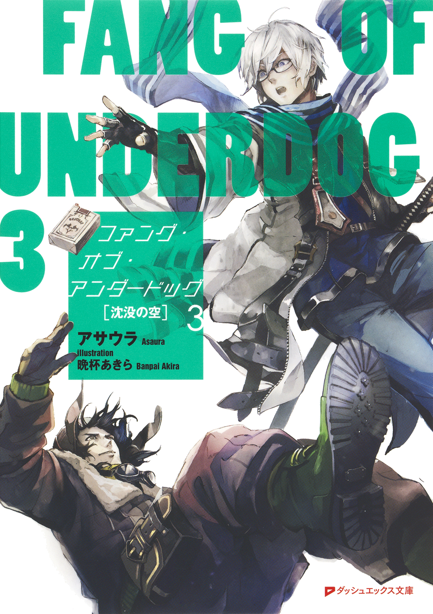
この本は縦書きでレイアウトされています。
また、ご覧になる機種により、表示の差が認められることがあります。
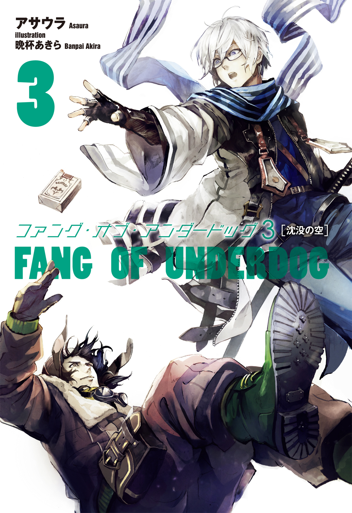
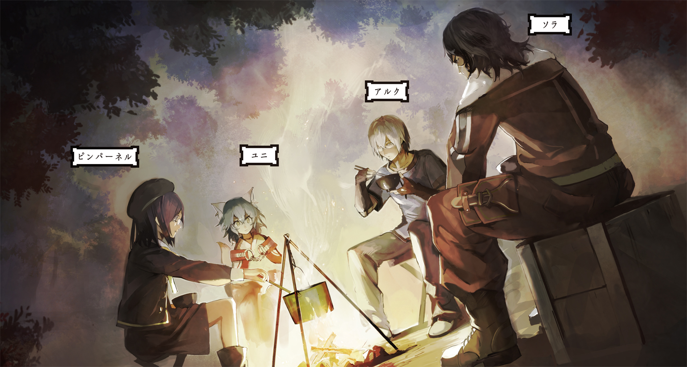
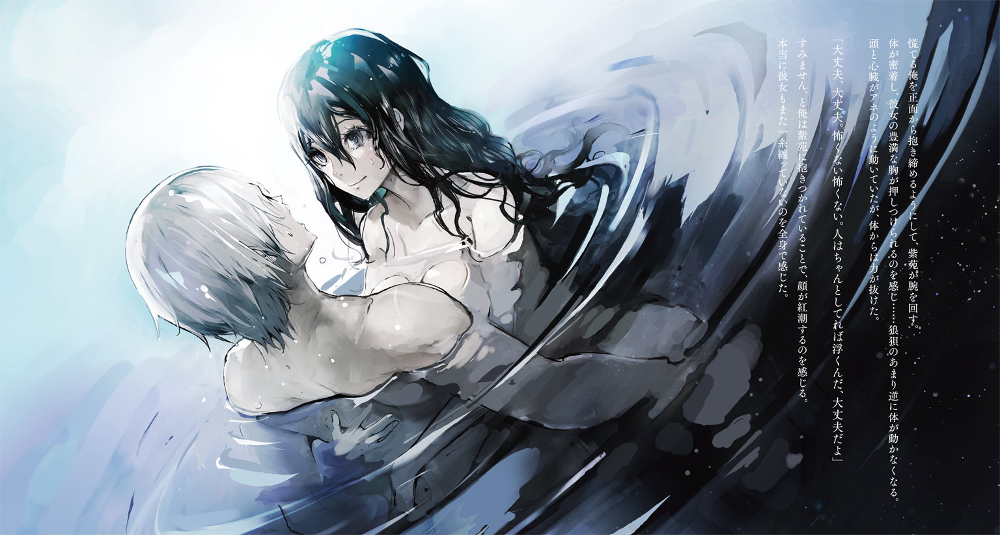
 ダッシュエックス文庫DIGITAL
ダッシュエックス文庫DIGITAL
ファング・オブ・アンダードッグ ３
沈没の空
アサウラ
ファング・オブ・アンダードッグ
人物紹介＆用語解説
アルク
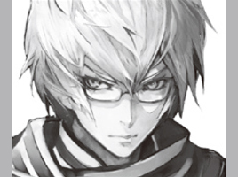
陣士。〈炎〉〈波〉の陣を有する。元々は剣豪一族の府津羅の次男坊であったが、故郷を捨てて陣士となった。愛刀は兄から贈られた通称『ナマクラ』。
ユニ

陣士。アルクの相方。〈陣〉〈封〉の陣、そして大きな狐耳と尻尾を持つ。故郷から奪われた〈鵺〉の陣を追う使命を帯びている。甘味が好物。
府津羅頼政

アルクの兄。最強の剣士と謳われる府津羅流現宗主。既婚。愛刀は『白光鳳』。
ソラ
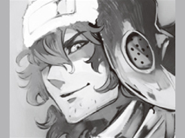
陣士。〈飛〉等の陣を有し、主に物や手紙の運搬を仕事としている。アルクの友人であり、彼の先輩という関係に近い。故郷に彼女がいるらしい。
罌粟
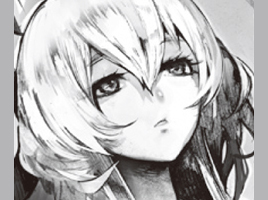
総本山のトップであり、最古にして最強の陣士。永遠の命を有する通称「眠り姫」。
イリス

陣士。罌粟の相方にして実質的に総本山のナンバー２。罌粟のためにその身の全てを捧げている。
円

烏。様々な技能を習得しており、その一つとして府津羅流を学ぶため頼雅に師事し、アルクと接触した。双子の弟、斛がいる。
斛
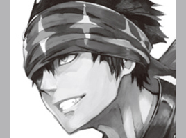
烏。やや短めの片刃直刀の剣と体術を合わせた技を得意とする。双子の姉、円がいる。
【陣】
いにしえの日本人が編み出した技術。体に薬物及び漢字の焼き印を入れることによって、その漢字一文字につき一文字の能力を有することができるのだが、それには生まれ持った適性が必要となる。〈何を〉〈どのように〉〈どうするのか〉というように、複数の陣を組み合わせて使用するのが基本。世界が滅んだ大戦争のきっかけになったとも言われ、そのあまりの力により「神々の力」「悪魔の力」といった呼ばれ方をする場合もある。
【総本山】
陣士のみが暮らす世界唯一のエリアで、最古にして最強の陣士・罌粟が支配する土地。陣士になるための試験もここで行われ、合格者はそのまま総本山に住まうこととなる。
【烏】
反陣士組織。人に扱いきれぬ陣をこの世から消し去り、平和をもたらさんとしている。陣士は発見次第、殺害する方針を採るなど、極めて過激な武闘派である。
【鵺】
かつての大戦時に作り出された生物兵器であり、その大きさ、形は様々。本来自然界に存在しないそれら化け物の類をまとめてそう呼ぶ。人工的に作られたものだが、現在生きているものは基本的に、自然繁殖してしまったもの。
●プロローグ『湖の呪いと空飛ぶ肉塊』
「お客さん、ほら、覗き込んでみるのじゃ。これがうち、ヤン・バーミ村の湖、その名物さね。境目が見えるだろう」
小舟を操る老婆に言われ、俺は恐る恐る船から身を乗り出して湖面を見やった。
山脈に囲まれたその巨大湖の水は恐ろしく澄んでおり、空のような鮮やかなブルーを含みつつ、深い底さえもはっきりと見せていた。
しかしながら、船が進むにつれて水の色が明らかに、そして急激に変わる。
それまで夏の空を思わせる青だったのが、線を引いたように、あるところから震えが来るほどに濃い青、むしろ黒に近い色へと変わる。
船の上に立って足下から遠くへと視線を移していくと、その境界線は緩やかなカーブを描いており、鮮やかな青い湖の中心部に円形の濃い青色があるのだとわかった。
老婆が言うには――山の上から見下ろすとよりはっきりと判るらしいのだが――中心部に黒にも見える円、それを囲む薄い青の楕円という形から、この湖は巨大な人の眼のように見えるらしい。それ故に、『眼湖』の名がついたのだそうだ。
別に水の色が違うのではなく、黒い円の部分は『水の井戸』や『魚の落とし穴』、はたまた『ブルーホール』と呼ばれるように、底まで数千メートルというおぞましい深さがあるために、そう見えるものらしい。
水に慣れぬ俺のような者からすると、船の上にいても震えがくる。まるで断崖絶壁から身を乗り出して下を見ているかのよう。
湖畔の村の者達はここを当たり前に生活の場としているのだというが......。
鳥が空を恐れないのと同じようなものなのかもしれない。
「お、あそこだ、お客さん。うちの子達が上がってくるよ」
老婆に言われ、俺は湖の中心近くに浮かぶ中型船を見やる。そこでは何人もの水夫が、丈夫そうだが魚などその隙間からすり抜けてしまいそうなほど粗く編まれた網を引き上げていた。
魚を捕るための網ではなく、あれは人を捕るための網なのだと、老婆は笑う。実際、網を引き上げるにつれて、それにしがみついている者達が次々に現れ、船へと乗り込んでいく。
皆、白く薄い、濡れれば透けてしまうような布を纏っただけの女性達......海女だ。
その光景は男達がまるで網で人魚を掬い取っているかのようだ。
そんな幻想的な光景を見ていると、不意に船の下から何かが来る気配を感じる。
思わず腰に帯びた刀に左手を添えるも、すぐにそこに害意がないのを悟って力を抜く。
水面から若い女が飛び上がるようにして、小舟にその半身を乗せた。
「こらぁ紫苑！ 婆様のとこじゃなく、ちゃんと漁船に戻ってこいと言っとるだろうがぁ！」
漁船から一人の水夫が大音声を張り上げていた。目前に現れた若い海女は髪を搔き上げると漁船に向かって手を振り、「ごめん！」と快活な声を投げ返す。
「......紫苑......？」
思わず呟き、今船縁に尻を乗せて小舟を傾ける女性を見やる。
年の頃は二十歳前後のようだが、肌艶は十代の少女のそれのように張りがあり、その大人の女の体とは裏腹に、かわいらしい顔をした女性だった。
......薄く白い服は当然のように肌を透けさせ、特に、かなり大きめの胸にぴったりと張りついていて......視線のやり場に困る。
紫苑はウェーブのかかったセミロングの髪を搔き上げる。
そして露になる大きな瞳をこちらに向けながら、腰に下げた籠を見せてくれた。
「すっごくいい貝が獲れたから、急いでお客さんに見せたくてね。ほら、お客さん、これ見てよ。村に戻ったらもう一人のお客さんと一緒に昼食だよ、楽しみにしててね」
明るい笑顔を見せるその海女――紫苑を、俺は少しばかり切ない気持ちと共に見つめていた。
とても綺麗で、快活で、好ましさしか湧かない......そんな女性だと思った。
話に聞いていた通りに。
船が陸へと戻った時には、すでに炭が熾され、俺ともう一人の客人のために昼食準備が始まっていた。
と言っても、今し方の漁で穫ってきた貝、それから少量の魚が出されるだけである。
ここで獲れる魚は売り物としてはあまり価値がないため、地元の村人や俺のように湖の見学や貝料理に惹かれて来た宿泊客が、その日喰う分だけを獲っているらしい。
「もう一人のお客人はまだ寝とるんかねぇ」
先程の船頭だった老婆がレンガで組み上げられた、浅い風呂のような、長方形の大型竈の炭を鉄の棒で均し、これまた大きな網と鉄板を乗せた。
もう一人の客人は俺が訪れる前日に船に乗り、そのまま船酔いでぶっ倒れたのだと、老婆は笑う。なのでいまだ名産の貝も食べていないのだそうだ。
そうこうしていると、大きな籠を抱えた紫苑が歩いてくる。さすがに陸の上では透けるような薄布の服ではなく、サンダルに白いワンピース、上には古代風のデニムジャケット、そして髪は空色のターバンと絡めるようにして、纏められていた。
普通の服を着ていてもその胸はもちろんのこと、柔らかそうな全身が如実にわかる。
さっきの濡れた肌を思い出させ、何だか照れくさくなって俺は視線を逸らしてしまった。
「......お客さん、悪いがね、あの娘は今回の観光ツアーにゃ含まれとらんよ」
「いや、俺は別にそういうつもりは......！」
思わず慌てて弁解しようとしたが、老婆はただ笑った。
俺が今回、金を払ったのは午前に行われる海女達の漁の見学及び、そこで獲れた食材食べ放題の昼食がセットになったツアーだ。
追加料金を支払えば夕飯と午後の漁――今度は海士、つまり男達が湖に潜るのを見学出来るのだというが......。
「まぁ、大抵の男客は午前の部しか来んがね。午後の方が大物が揚がるんで、それを期待して来る者もいないわけじゃないんだが」
......あの、網によって人魚達が湖から引き上げられているような光景を思い出すに、それはそうだろう、と思う。
あれが鍛えられた男達の裸体に代わるとなると......なかなかにハードな光景だ。
「紫苑はね、いい娘なんだよ。だがね、あの娘にはもう約束した男がいるんだ。顔は悪いがいい男でね、心優しい、実に素直な男さね。紫苑にはちょうど良い」
祖母というわけではないそうだが、老婆はニンマリと心から嬉しそうな笑顔でそんなことを言った。嬉しくて嬉しくてたまらない、というような、そんな笑み。
......少し下卑た笑みに見えるのは、彼女に見惚れた――と思い込んでいる――俺を嘲笑う気持ちがあるからなのかもしれない。
「......そうですか、それは良かった」
老婆が不思議そうな顔をしたので、俺は慌てて眼鏡を掛け直す素振りをして誤魔化した。
「あぁいえ、その......一途な女性って、いいものですから」
言って、俺は眩しいものを見るように目を細めつつ、今一度籠を持つ紫苑を眺めた。
それに向こうも気づくと、弾けるような笑顔を見せ、小走りになる。
彼女が持ってきた籠の中にはどっさりの二枚貝......牡蠣だ。この地の特産物で、この湖だけで育つ世にも珍しい牡蠣なのだという。
「紫苑や、お客さんがお前さんを気に入ったらしい。この後の仕事はいい、ここで給仕しな」
え、いや、あの......と俺は少し狼狽えたが、紫苑はニッコリと笑みを見せてくれる。
「やった！ お客さん、ありがとう。ちょっと待ってて、他の食材も持ってくるから」
そうして用意されたのはどっさりの香味野菜や名もわからぬ大きな魚等々。一人で喰うにはさすがに多いと思えたが......魚が網で焼かれ始めると、その匂いを嗅ぎつけたかのように、宿の方からのろのろと寝起きらしい少女のような少年が現れる。
ショートのクセッ毛に大きなキツネの獣耳。巫女のような赤袴のお尻からはボリュームたっぷりなふぁっさふぁさの尻尾が飛び出し、歩く度に揺れていた。
彼は一度俺の顔を見るも、すぐに網の上へと視線を移した。
「ちょうどいいところだったようじゃな。昨日から何も食べておらぬので、腹が減ったぞ。......あー、おぬしも見学客か？ ボクはユニじゃ、そちらは？」
アルクだ、そう名乗ると彼は当たり前のように俺の隣に座った。
こちらの海女さんは紫苑だと、俺がそれとなく紹介すると、ユニは耳と尻尾をピクピクと反応させつつ、その顔を興味深げに見やっていた。
そうして、竈の回りに座る俺と老婆、そして牡蠣の殻を剝いていく紫苑......その四人で静かに昼食が始まったのだった。
「お客さんには、まずこれを。岩塩とレモンの汁を少しかけたものだよ」
「......淡水の貝を生で喰えと言うか、紫苑......。なかなかリスキーな食べ方を勧めるではないか」
手渡された大きな牡蠣と箸を手に、ユニは耳を力なく伏せた。
俺にも手渡されたが......確かに冷静になって考えてみるとなかなかに怖いものがある。
故郷の里が海から遠いせいもあって、生で牡蠣を食べた経験はなく......即ち、あたったことはないのだけれど、噂で聞いた牡蠣の食中毒は凄まじいものがある。
そうでなくても淡水の食材は火を通さないと寄生虫の危険性があるはず......。
「確かに、他の土地ではそうだろうがね。でもね、この湖の水で育った物ならどれも生でいけるんだよ」
老婆が言うには、この湖の水には目に見えぬほどの小さな古代の遺産が大量に含まれているらしい。
それによって湖水は常に清浄を保ち、そのくせして特定の生物にとっては栄養価が高く、それらの水産物はとても効率的に、かつ、大きく育つのだという。
「この眼湖の瞳の部分......いまだ底の知れぬ深さの穴は、元々古代の大戦争の時の名残だと言われておる。そこに何年もかけて水が溜まり、湖になり......それをワシらの先祖が飲み水にも出来て、食料も獲れるよう、当時残っていた技術をかき集めて改良したとの伝承があるでの。......まぁ、何にせよ、湖の恵みだよ」
そうまで言われてしまっては、食べないのは臆病者だ。
幼い頃から野山を駆け巡って、そこら辺のものを喰っていたりもしたので、同期のうららほどじゃないにせよ、多少胃腸は丈夫な方だし......いくか。
俺の手の上に乗った牡蠣はちょうど掌と同じぐらいのサイズ。
殻はやや厚め、身も肉厚でかなりの上物に見える。身の上には岩塩が少々振りかけられているが......これは通常の牡蠣と違って淡水育ちだからだろう。
普通の塩でなく、岩塩ってのがまた内陸の牡蠣らしくていいな。
身はすでに殻から剝がされているようなので、ユニが横で心配気な顔をしているのを尻目に、俺は意を決し......そのぷにぷにの身を啜った。
じゅにゅるっと、口内に滑らかに躍り込むその身。
レモンの酸味がまず俺の口をすぼめた。そして......磯の香りがなく、何だか違和感を覚えるのだけれど......すぐにじんわりと岩塩が溶け出して塩味を感じさせてくれる。
口いっぱいの牡蠣を、食む。海のものに比べればやや柔らかく、水気を多く含む身。けれど......それが、俺を唸らせた。
恐ろしく......クリーミーだッ!!
何だ、これ、凄いぞ！ もの凄くまろやかに、濃い旨味が滲む......というより、溢れ出している！ 柔らかなせいもあって、まるで身が溶けているかのよう！
タラの白子を生で喰った時のようでもあるが、あれより味はサラリとしていて、生臭さは皆無。柔らかに、まろやかに、優しく......そのくせして、身が大きいのだから食む楽しみも失われていない。
レモンの酸味もあって、さっぱりすっきりと喉の奥に滑り降りていく。
まだ口内にあるうちからもったいなさを感じていたものの......大きさからか、喉元を通り過ぎた時にははっきりと満足感がある。
火を通した牡蠣と比べるのも何だけれど......あれより、格段にうまい。というか、もはや似て非なるものである。
俺が早速お代わりを貰う様子を見て、ユニもまた恐る恐るというように口に運んだ。......あたるとしたら明日以降だから、俺が喰う様子を見て安心出来るようなものではないだろうに。
瞼をギュッと閉じ、ユニの口がモグモグと動く。その動きが止まった途端、耳がピンっとおっ立ち、彼の椅子から垂れていた尻尾が左右に素早く振られ始める。......勢い余って俺の体を叩きまくっているのだけれど......この感じからすると大変お気に召したようだ。
俺とユニは、次々にお代わりしていった。
途中で他の調味料も試したが、臭みがまったくないせいもあって俺はシンプルにレモン抜きの岩塩だけってのが良かったが、ユニはポン酢醬油を気に入ったようだ。
酒を振る舞われそうになるも、二人共に飲めないと告げると老婆は残念そうに自分だけでぐいっと飲んでいた。年齢はいっていそうだが、結構酒はいけるクチらしい。
「牡蠣を喰うのに酒を飲めんとは、何とも哀れだのぅ。......まぁ、また飲めるようになったら来るといい。村も牡蠣も逃げはせんさ」
途中で牡蠣の網焼きに切り替わる。バチッバチンッ！ と炎に炙られて殻が弾ける音を聞きながら焼けるのを待てば......良い匂いが漂い始める。
......この焼き牡蠣がまた、いい。凄くいい。
熱を受けると、牡蠣の甘みがひき立つ。また、熱せられるに牡蠣の身から汁が滲むのだが......これがまた、得も言われぬうまさなのだ。吸い物に使う貝出汁を、しょっぱくせずに濃密に煮詰めたかのような......そんなあり得ないうまさで、たまらない。また歯ごたえも熱が通って一般的な牡蠣のそれに近くなり、もしゅもしゅとした食感も楽しめる。
そして......生にはまったくなかった、香ばしさが最高の調味料として参入している。
炭火が生む炎を直接受けて殻が焼かれ、身が炙られたことによって外縁部に良い具合に焦げを作り、口に含んだ時に思わず唸るような悦びを作るのだ。
これも塩を軽くかけるだけで十分過ぎるほどにうまいが、俺は柚子胡椒を、ユニは酒と少量の味噌を殻の上に滲むスープに溶かして喰らうのが気に入った。もみじおろしもかなりいい。
こんな牡蠣尽くしをいただきながら、途中で魚の身の方も喰らったが......これは脂こそ乗っていたが......うまいといえばうまいのだけれど......どうしても牡蠣のうまさの前には霞んでしまう。何とも贅沢な残念さである。
餓鬼のように貪る俺とユニを見て、老婆と紫苑は笑う。
「あんまり喰ってると、メインが喰えなくなるよ」
なん......だと......？ と俺とユニは、タオルで焼き牡蠣を持ちつつ老婆の顔を驚愕と共に見やった。まさか、これ以上のご馳走が出るとでも言うのか。
そして、すでに若干お腹いっぱいになりつつあったり......。
牡蠣を貪るのに忙しかったせいもあるが、いつの間にか竈の上の半分――網ではなく、鉄板が乗せられていた方には金属製の箱のようなものが蓋代わりに被せられていた。
鉄板の両端には取っ手があり、紫苑は分厚い耐熱手袋をして、これを火から下ろした。
そこで蓋を開ければ......大量の湯気と共に酒・醬油の仄かな良い匂いが漂う。
濛々とした湯気の下には大量の牡蠣。身はぷっくりと膨らみ、焼き牡蠣以上の極上を思わせる琥珀に似た色合いのスープを殻の上に湛えていた。
......そうか、殻の片面を剝いだ牡蠣を並べ、そこに酒と醬油をふりかけた蒸し牡蠣、というわけか。これはうまそうだ。
焼き牡蠣の殻を専用の籠に放り込み、タオルを巻いた手を鉄板の上に伸ばそうとするものの......何故か止められる。そして紫苑は牡蠣の身の上に白髪葱、そして季節外れになりつつある千切りミョウガを散らした。
これで完成というわけ......でもない、のか？ また手を伸ばそうとしたところを止められた。
「お客さん、少し離れてて。危ないよ」
紫苑はそう言うと竈の隅っこで炭火にかけられ、湯気を上げる金属製の手鍋を持つ。何かが煮えたぎっており......ソース的なものかと思えば、違う。
油......煮えたぎったゴマ油だ。
彼女はそれを、薬味の載った牡蠣にぶっかける。ジュバァっと、凄まじい音がして白煙が上がり、牡蠣の身が、湛えていたスープごとゴマ油に跳ね踊り、香ばしさを辺りに強烈に放った。
むわんと......凄まじく腹を空かせる、いい匂い。
ゴマ油に、焦がした醬油の香りが混じるとどうしてこう......食欲をそそるのか。
「これで出来上がり、今皿に取るね」
手が火傷しないようという気遣いなのか、ちょうど殻がハマるように中央に凹みのある木皿の上に牡蠣が座らされ、そして油でヘナった薬味が乗せられ......俺の手元へとやってくる。
腹はすでにそこそこにいっぱいだったが......香りに引き込まれるように、俺はその熱々の牡蠣の身に箸を向けた。
口に近づけただけで香るゴマ油の香ばしさ。それを吸いつつ、口に躍り込ませるのは蒸され、そして油で表面だけ揚げられたようなその牡蠣の身。
......むっちりだ。そのくせして中心部はギリギリ火が通っている、という絶妙な具合。
そのため、むっちりでありながら、とろける。歯ごたえありつつの、クリーミーなとろけ。
さらにゴマ油によって引き出された白髪葱とミョウガの風味が鼻から抜ける。
油を使っているのでややこってり、けれど、これら薬味のおかげでしつこくない。醬油の味わいも、これとは絶妙なまでに相性がいい。
殻に残った油を浮かべる牡蠣の汁も、口に身があるうちにズズッと啜る。
唇をちょっと火傷しかけたけど......そんなものは些細な問題だ。
「うぉ......これ、凄いな......」
熱々の汁を、口内のとろけた牡蠣の身で受け、食み......渾然一体と化した時の味の力は半端ではない。まるで顔面を殴りつけられたかのような、衝撃にも似た力強い味わいだ。
ゴマ油が支え、牡蠣のクリーミーさが包み、醬油が締め上げ、薬味がケリをつける......それは、濃密にして鮮烈。
――これを飲み込むのか、俺は......？
そんな疑問のような言葉を胸の内で呟く。食事なのだから当然なのだけれど......それぐらいに、贅沢な味なのだ。食材がどうとか、そういうんじゃない。
こんなにもうまくてとろける素晴らしいものを、飲み込むことで終わりにしてしまっていいのか......？ そんな、気持ちだった。
だからこそ、飲み込むのにも気合いがいる。
口を収縮させ、喉へと送り込む際......俺の体はギュッと縮まり、力が入る。
女のように内股になり、空を見上げるようにして......極上の味わいを胃に落とす。
喉を滑り、腹に納めた時に来るのは......最高の、満足感。
「これは――!!」
「――うまいの!!」
俺とユニは互いに笑顔を向け合い、即座にまたお代わりを貰う。
腹が満ちかけていたのが噓のように『食べたい』と思ってしまう。
こりゃ話に聞いていた通り、シーズン時にはツアー客が押し寄せるわけだ。海女達の姿を見る以上に、この味には価値がある。
「......ふむぅ、恐らく元々は古代にあった中国という国の料理なのじゃろうな、これ。......はふあふ......確か清蒸とかいう料理じゃったか。......ズズゥ......調味料や薬味も違うが、基本は同じじゃ。魚が一般的な食材じゃったはずじゃがカニや貝も使われるものじゃから......アレをシンプルにアレンジしたものといったところか」
ユニが牡蠣をはふはふやりつつ、そんなことを言った。
紫苑達曰く、昔から食べている料理なのでこれといった名前すらないらしい。
時代を経て、調理法や調味料等々の差が生まれ、果ては名をも失い......それでもなお、人はその味を求め、作り、食す。恐らく、これからもずっと......。
その悠久の流れは実に壮大だ。昔、人は月にまで行ったというが......まるで夢物語。その足跡すら世界から失われてかけている。様々な文化や技術が多くの命と共に消えていったというのに、それでもこうして料理だけは残っている。
商業区では総本山が保管していた技術や資料、金銭次第では調理器具すらも授与される関係もあって、比較的太古の料理がそのまま残っているけれど......こんな地方でもなお、古代からある料理法が残っているのは......何だか不思議だった。
そう......不思議ではあるのだ。だが、同時に、どこか納得も出来てしまう。
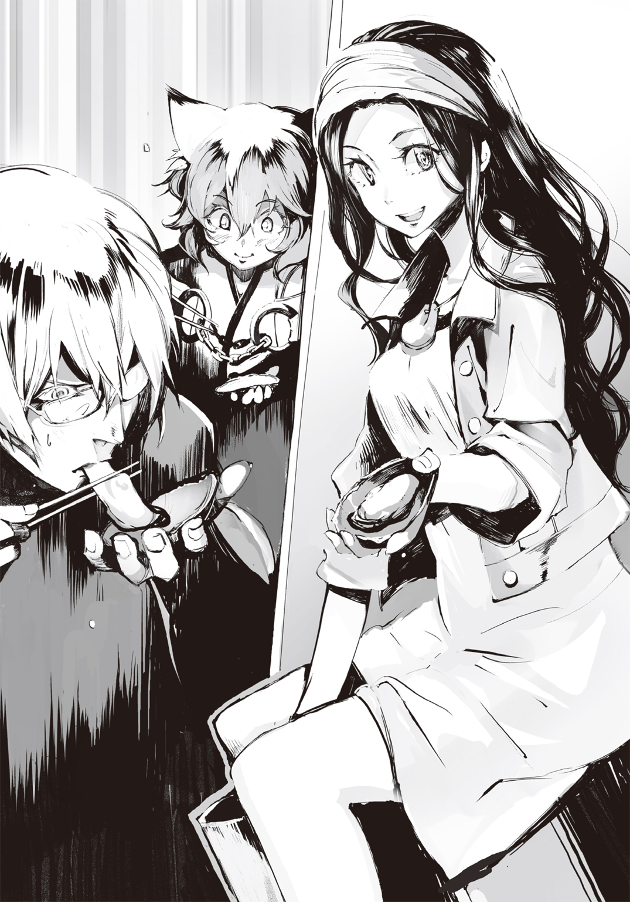
料理は人と獣を分ける判断基準だ......そんなことを言ったのは誰だったか。
普段はもちろん、旅や仕事をしている時でさえ、人は食事をする。当たり前のこと。けれど......少しでもうまいものが喰いたいと思うのもまた、当たり前のこと。それが人というもの。そう考えると、納得できる。
世界がどんなになっても、いろんなものを失っても......人は料理の技術を守り、子から子へと伝えてきた。廃墟と化した世界であっても、野生に返った鵺に怯えながらでも......人は誰もがうまいものを食べたいと願ってきたのだ。
たかだか一七やそこらの俺からすると、時代の移り変わりはまるで巨大な川の流れを見ているかのようで、圧倒されるものがある。
そしてそんな大きな流れの中でもなお、まるで一艘の船のようにその場にあり続ける文化というものについては、文化そのもの、そしてそれを受け継ぎ次の世代へ残そうとしている人達に、尊敬を覚える。
そんなことを考えつつも、気がつくと犬のように、胃袋の隙間に押し込むが如くに牡蠣料理を喰らった。老婆や紫苑もまた殻を剝いてくれつつ、時折口にし、笑顔になる。
俺達もまた、笑う。紫苑の優しげな笑みは眩しいほどだった。
......なるほど、これは確かに上物だ。
「あれ？ やけに大きいと思ったら......珍しいや、この牡蠣、気玉を持ってる」
紫苑が一際大きな牡蠣から金属のヘラを使って取り出したのは、小指の先ほどのやや白みがかった透明な球体であった。
真珠にも見えるけど、そうではなく、この湖の特産物の一つである『気玉』なるものらしい。
「まず外に出荷はせんがな。湖に潜る時に使うもんだよ」
ここの牡蠣は淡水で成長出来る以上に、この特性が一番の違いなのだという。
産卵期には湖に卵、そして幼体......つまりは牡蠣の赤ん坊が大量に浮遊し、生涯居座る場所を決めるらしいのだけれど、その際、湖の深みに住み着いた牡蠣が、この気玉なるものを作るとのことだ。
水中の酸素を集めて固めているものらしく、これを砕くと中から高濃度の酸素が出てくるのだとか。何せ深いところの牡蠣しか作らないので、今し方紫苑の指先につままれているような、小さいものでも貴重な品らしい。
「だから私達のように水中で活動する人間はこれをお守り代わりに一つ、持っていくんだよ。息が苦しくなって、どうやっても水面まで持ち堪えられないってなったらこれを口に含んで溢れてくる酸素を吸うんだ」
そう言って紫苑は服の下、胸の谷間に埋もれるようにして首から掛けていた小袋を取り出して見せてくれる。中には眼球ほどの大きな気玉があり、これだけあれば相当な深みからでも還ってこられるのだそうだ。
大きな気玉と共に小さいのもその袋に入れようとするのだが......その手が止まった。
彼女の目が遠くを見、そして笑みに細められる。見やれば手足と共に顔が少し長い、悪く言えば、少々馬面っぽい男が微笑んで駆けてきていた。
「あぁ紫苑、ここにいたんだね。......あっと、お客さん、こ、これは失礼しました！」
長身なのだが、俺達に気づくなり腰を九〇度に曲げ、すみません、と頭を下げてくる。
素朴な雰囲気で、人の好さそうな男だと一目でわかる、そんな奴だった。
「この男、何者じゃ？」
牡蠣を啜りつつ、ユニが問う。すると紫苑と男は互いを見やり、そして照れるように頰を赤らめ、笑い合う。男は尾長と名乗った。
「お恥ずかしい話、年明けにも祝言を上げる予定でして」
その言葉を聞いた時、俺は思わず表情が固まった。
しかし、ユニはその意味するところを理解できず、首を傾げる。
「......ん？ 誰とじゃ？」
「や、やめてくださいよ、お客さん。不釣り合いだってのはわかってますけど......僕と、この紫苑とです」
ようやく俺同様に固まったユニをよそに、尾長は紫苑と仲睦まじげに喋り、彼らは首から提げていた小袋から気玉を取り出し、交換した。
海士と海女が男女の関係である場合、漁に出る前に行われる無事を祈るおまじないなのだというのだが......。
海士と海女が......。そう呟く俺に尾長はやっぱり腰を低くして、言う。
「はい。このヤン・バーミの村で生まれた子は湖なしには生きられません。ほとんど子は海士になるんです。......え？ 海士以外......そうですね、お医者か先生か、そんぐらいですか。でも、そういうのは別の土地で学んできた偉い人がなるもんでして。あとは職人の家系とか......」
尾長の言葉を聞いていると、彼がとてもいい人間なのだと感じる。いくら客とはいえ、明らかに年下の俺やユニに対してまるで目上のようにして気を遣い、そしてなお、言葉の端々やその所作の一つ一つに腰の低さが現れている。そのくせして卑屈さがないのが、好感に繫がっていた。
ヤン・バーミの村民の特性なのかもしれないが、とにかく、俺の好きなタイプである。
......けれど、今の話を聞いてしまうと、どうしても彼と仲良くなれる気がしなかった。
「それじゃ紫苑、行ってくるよ」
「うん、気をつけてね。大きいの、取ってきて。......あ、この小さい気玉もおまけだよ」
湖港の船が午後の漁の準備に入っていた。これから海士達による魚の落とし穴での漁が始まるのだろう。男が潜り、今度船を操るのは若い女達だ。
紫苑が俺達の相手をするように言われた際に喜んでいたのは、船に乗って網の引き上げをしなくていいから、ということのようだ。
「水中で尾長が網を摑んでるって思えば、苦じゃないけども。......でも、私は潜っている方が好きなんだ。ゆっくりと、青の中に沈んでいくその感じが。怖いけれど、どこか満たされる感覚と、水面に上がった時に仲間が待っているって信じられる、あの感じが......。海の海女みたいに、潜るのが女の役目で、男は船の上にいてくれればいいのに」
この湖は一年を通して温かいため、皮下脂肪の少ない男であっても長時間水中での活動が出来るのだそうだ。また湖なので荒い波もなく、船の操作も容易いことから男女が交替で潜ることができるという特殊な漁の形態が生まれたのだという。
「それもまた湖の恵みさね。文句言わずに享受しとりゃえぇんだよ。湖なしではワシらは生きられん。......たとえ、それが呪いと引き替えになったとしても、ありがたいものさ」
呪い......その言葉に、俺もユニもあえて反応はしなかった。というより、出来なかったのだ。
出航する船に手を振る紫苑の姿に、そして予想していなかった状況に言葉を失っていたから。
１
ヤン・バーミ村を出た俺は、先に出立したユニと途中で合流し、月明かりの中を重苦しい空気を纏って歩いていた。......別に、すぐ近くに街道が通っているのに、あえて森を進んでいるから空気が重苦しいというわけではない。
「......で？ 結局どうする気じゃ、アルク。まさかの展開じゃぞ。......先に言っておくが、ボクからは言えん」
ずるいな、コイツ......。先にそう言われてしまえば、もう俺が言うしかなくなるじゃないか。
俺は曖昧に応じながら、腐葉土を踏みしめ、夜の森を進んでいく。肩から提げる雑囊が重く感じ、地に靴底が吸い付くかのように遅い足取り。憂鬱だった。
「あのさ、ユニ、ここは一つじゃんけんとかで......」
「バカを言うな。おぬしの方が仲がいいじゃろ。ボクは嫌じゃぞ。だいたい......ムッ？」
隣を歩いていたユニの大きな耳がピククッと動き、彼は背筋を伸ばして目を見開いた。
「......アルク、前方に何かおるぞ。獣ではない。二足歩行、人じゃ。一人」
腰に帯びていた愛刀・ナマクラに左手を這わせつつ、ユニをその場に残して俺だけ変わらずに前へ進んでいく。ヘタに気配を殺せば、その瞬間に敵対行動だと相手に取られ、戦いとなる恐れがある。警戒しつつも、当たり前に進んでいく。
単に山に住む者であればいいのだけど......果たして。
進むにつれて俺もまた、前方にあった気配を察する。......こちらに向かってきていた。
人。気配を隠す素振りはない。そろそろ目視出来る距離になった時、俺は柄にさりげなく右手を置きつつ......そして、立ち止まる。
覚えのある匂いがし、そして......月明かりの中に現れたのは見知った顔だった。
「......ソラ？」
森の中を咥え煙草で歩いてきていたのは、首からゴーグルを下げ、全身を革製品で覆ったボサボサ頭に無精髭の男......先輩の陣士にして、今回の寄り道の提案者である、ソラだ。
「おっ、アルクか？ やっぱりな、お前らならあえて森を通ると思ったぜ」
「な、何でこんな場所に？ 合流ポイントはまだ先だし、何より明日の......」
「そんな驚くなよ。......単にちょいと暇を持て余し気味だったんでな。だったらお前らが通りそうな道を逆に辿れば早めに合流出来るかと思ってよ」
ユニを呼び、ソラが再び暇を持て余して云々の話をすると......俺の相棒はあからさまに嫌そうな顔をした。彼とて察したのだろう。
......待ちきれなくて俺達を迎えに来たのだ、ということが。
ソラが時を持て余したとなれば、普段ならばどこぞから手に入れた酒瓶と共に夜を過ごしていたはずだ。それがこの状況、しかも素面ときている。ただごとではない。
ソラは短くなった煙草を捨て、踏む。
「それで？ どうだった......オレの故郷は」
聞いていた通り牡蠣が最高に美味しかったよ、と俺は笑い、隣のユニをそれとなく小突く。う、うむ。あの最後に煮えたぎった油をかける清蒸風料理は絶品じゃったな、とやや早口に言って、今度はユニが尻尾で俺のケツを引っぱたいた。
「あぁ、あの牡蠣でヤン・バーミはもっているようなもんだからな。そうだろそうだろ。......で、その......よ。会えたのか、紫苑には？」
ソラは俺達から視線を逸らし、普段ならば滑らかであるはずなのに、今回に限ってはぎこちない動きでジャケットのポケットから新しい煙草を取り出す。
パシンッと、またユニの尻尾が俺のケツを叩く。
俺に、言え、と告げているのだ。......くそぅ、こういう時のユニの尻尾は便利だな。
俺はダグラスを取り出すと、ソラの咥えた煙草に火を点す。
「......あぁ、その......綺麗だったよ。明るくて、丁寧で。何て言うか、素のままで魅力的っていうか......その、うん。ソラがベタ惚れしてるのもわかる気がした......よ」
当たり障りのない真実だけを取り敢えずジャブとして放ってみると、ソラは煙草を揺らして口元に笑みを作りつつ、照れるように顔を逸らした。
「うむ、胸に限らず、尻などもなかなかに大きかったしの。その、アルクが凝視していて隣で恥ずかしかったぞ」
おいっ、と俺はユニに視線で苦情を訴えるが、彼の黄金の瞳は〝早く言え〟と返してくる。
「あぁ、いくら水温が安定してるっつっても、どうしても長時間の潜水をするとなると多少肉が必要だからな。そのせいで村じゃ飯をアホほど喰わされるんだ。......そうか、アルクが見惚れるぐらいに、いい女だったか。変わりなさそうで良かった。......となると余計に気になるが、まぁいい。それ以上は後だな、まずは行こうぜ」
ソラは上機嫌に煙草をふかしつつ腰に巻いたベルトからアタッチメントの付いたワイヤーを出す。俺とユニは気まずい気持ちのまま、雑囊から取り出した太めのベルトを腰にしっかりと巻くと、ソラのワイヤーと接続する。
髪の毛のように細い鉄糸を数本縒っただけの頼りなさげなものだが、その細い一本だけで一〇人程度の人間を引っ張り上げられるぐらいの強度があるので、それ数本となれば俺やユニの体重を預けるには十分過ぎるほどの代物だった。
「あっ、少し待つのじゃ。新アイテムを......」
ユニは懐から親指の部分のない毛糸の手袋を二つ繫げたようなものを取り出す。耳当て......というか、ユニ専用耳袋である。彼はそれを耳に装着すると、顎の下で紐を結んだ。
ソラが陣を発動させる。〈己〉〈飛〉。の二つの陣が重なり、砕け、細かな破片となった途端、ソラが上昇する。それに接続されている俺達もまた、一瞬のグッと来る衝撃を受けつつ、夜空へ。一〇〇メートルほどの高さまで達すると、今度は水平飛行へと切り替わる。
......この急上昇と進行方向が直角に変わる瞬間だけが、引っ張られている身としてはちょっと辛い。息が止まる。そして、その間ですら密着するユニの視線は俺に〝早く言わんか！〟と訴えつつ、尻尾で足やら尻やらを叩かれまくるので......なお、辛い。
「なぁ、ソラ。......故郷に帰ろうとは思わないのか」
「ん？ 言ったろ、あそこは反陣士思想が強い。あの地域一帯がそれじゃさすがに......な。オレの陣は胸に入れちまったせいで、上着も脱げねぇ。湖ありきの村でそれじゃ、すぐにバレる」
「......じゃ、紫苑を外に連れ出してそこで会うとか」
ソラは飛びつつ、首から下げていた大きなゴーグルをつける。それでも、どこか彼が哀しげな顔をしたのは、わかった。
「あの村で生まれ育った者は全員、湖の呪いに囚われている。離れられねぇんだ......紫苑ももちろんその一人さ」
それ以上、ソラは何も言わずに飛び続けた。俺もまた、何も言えず、瞼を閉じる他ない。......ユニの尻尾がひたすら叩いてくる痛みを感じつつ。
「......ヘタレめ」
......だったら自分で言えよ、と俺はユニの呟きに胸の内で反論した。
ソラの恋人の紫苑が、他の男と婚約してるって。
ソラは村に戻ることができない。そして、紫苑は村を離れることができない。
それ故に二人が会うことはまず、ない。もしかしたらこのままなぁなぁになって状況が変わるかもしれない。
誰も傷つくことなく、何とはなしに、ダラダラと終わっていくのではないか......そんな希望というには酷い望みが、どうしても俺の口を閉ざすのだ。
幼い頃から兄妹のようにして育ち、物心ついた時には互いを異性として意識し、そして子を生せる年齢になれば結婚する......その約束をしたというソラと紫苑......。
ソラが村を離れたのが六年前というから、心が変わるには十分と言えるのかもしれない。
けれど......その現実は、陣士になって働き、村に仕送りを続けていたソラにとって......あまりに残酷と言えた。
ここしばらく手紙が一方通行になったからと、気心の知れた俺達が仕事帰りに寄り道して様子を探るよう頼まれたわけだけれど......やっぱり断るべきだったのかもしれない。
彼が傷つくのが嫌だった。そして、その切っ掛けが自分の口から出てしまうのも、嫌だった。
友人だからこそ言うべきなのかもしれない。けれど、友人だから言いたくない。
「......なぁ、ソラ。俺達以外に、誰か紫苑の様子を見に行かせたりとか、したことあるのか？」
数時間の飛翔の間、寝たフリをしながらずっと考え......夜明けと共に俺は口を開いた。
「ん？ どうした、いきなり。......いや、出荷された牡蠣を勧めたことはあったが......ヤン・バーミに知り合いを送ったのはお前達が初めてだ。生憎と友達は少ない方でな」
酒場では多いんだが、酒なしで付き合う相手となるととんとさ。彼は笑いながら付け加えた。それも陣士となるとさらに少なくなるのだという。きっと仕事柄どうしても総本山には長居できず、かといって休みは商業区でばかり飲んでいるからだろう。
なぁソラ、と俺は覚悟を決めて紫苑の今の状況を伝えようと思ったのだが......突如として飛行が激しく乱れて、俺は歯を喰い縛り、眠っていたユニがわけもわからず喚く。
鳥の一群が横合いから突っ込んできたのだ。
数匹なら広い空中でまずぶつかることはない。しかし、それが数百羽に及ぶ一群となると、そうはいかなかった。甲高い鳴き声と羽音に包まれる。
「喚くな、舌嚙むぞ！」
ソラが俺とユニを抱き締めるようにして抱え、曲芸飛行。側面から飛び来る投石のような群体の間を縫いつつ、隙を見て鳥達と同じ方向へ進路を変える。さすがにそうなればソラの方が速く、ぶつかってくる鳥はいなくなった。
「何だこりゃ!? イナゴの大群じゃあるまいし！」
ソラが鳥とぶつからぬよう、ゆっくりと高度を上げていく。
三〇〇メートルほどの高さにまで達するとさすがにそこまで来るのは鷲などの一部の鳥だけなので、ぶつかってくる奴はいなくなった。ようやく空中で停止して一息つく。
「ったく、何なんだよ。......おい、お前ら、怪我はねぇか？」
ソラは懐から小さな地図を取り出しつつ、腕時計に備わっているコンパスを見る。
細かに位置を確認するのは彼のクセだった。無精髭やぼさぼさの頭、酒の飲み方からガサツな男に思われがちだがその仕事ぶりは案外に丁寧な男なのだ。ぼさぼさの頭は風の中を飛んでいるから、髭は仕事が忙しくてあまり家で寝起きしないため......彼のむさ苦しく見える姿は仕事への真摯な態度の表れだ。......酒の方は知らないけど。
俺とユニは空中で互いの体を見やる。さすがに鳥もバカではない。一応向こうも避けようとしたので擦り傷こそあれ、さすがに嘴が突き刺さったりはしていなかった。
「何じゃ、今の。一種ではなく複数種があんな群体で飛ぶことがあるのか」
「普通はねぇはずだ。あるとすりゃ地震や噴火なんぞの災害を予知し......」
ソラが鳥の飛来した方角を見やり、固まった。
ユニもまたソラと同じ方向を見やると、耳と尻尾をピンっと伸ばし、黄金の目を見開く。
「なん......じゃ、あれは......？」
彼らの視線を俺もまた、追う。それには思わず呆気に取られ、見間違いかと思い、俺は思わず眼鏡を上げて見てみるのだが......レンズの汚れとかではなさそうだ。
「......デケぇ、相当だぞ。像のかすれ具合からするに距離はかなり......おい、おいおい......信じられねぇサイズだ！」
俺達が見ているものこそ、鳥が逃げ出した原因なのだろう。
それは......島が一つ、空高くに浮かんでいるかのようだった。
色味の薄い初冬の朝空、そこに蓋をするかのように極めて巨大な何かが、浮いていたのだ。はるか彼方、遠くの山を見るように青みがかっている様子からして数十キロ以上も先。そして......高度は雲のはるか上、数千メートルを越えている。それなのに......デカい。冗談みたいに、不自然に......デカ過ぎるものが、大地に影を落としている。
あまりの巨大さに、距離感が本当に俺の見立てで合っているのかすらわからなかった。
ただ、ソラもユニも固まったまま空飛ぶ島を見やっているのを見るに、恐らく間違っていないのだ。直径およそ数キロ、厚さは数十メートル......そんな、ハンバーグのパテのような塊が......空に浮いていた。
「総本山に急ごう、ソラ。......あんなものが飛んでいるのは、まともじゃない。何かが起こっている」
今世界で何が起こっているのか、それを知るには総本山に戻るが一番早かった。
三日後、総本山に帰還した俺達を待ち受けていたのは――稼働可能な全陣士投入という、総力上げての対空戦、その幕開けだった。
●１章『急転』
地下、数百メートルに設けられた総本山の意志決定を行う会議室......そこは今、慌ただしさと息を呑む緊張感に満ちていた。
天板が地図を映すモニターとなっている巨大な円卓を、イリスを含む議員達一〇人が見下ろし続ける。次々に議員の秘書が出入りし、書類が円卓の脇の机に山積みになっていくものの......それでも彼らは動かなかった。
イリスはチラリと室内を見回す。窓の代わりに、壁に無数に貼られた映像パネルには極大望遠カメラで捉えた空飛ぶ島――『飛翔体』と呼称が決定した物体が映し出されている。しかし距離がありすぎる上、途中で雲を挟んでいるために像は薄く、詳細まではわからない。
だが、議員の誰もがすでに状況を察していた。認めたくないが、予測されていた事態でもある。ただそれが想定よりもぶっ飛んでいたせいで、正確な情報を待つことになったのだ。
――扉はまだ開かんのか。――焦るな、若いの。何せ数十年ぶりだ、時間がかかるのは仕方ない。今のオペレーターには初めてのことなのだ。――だが対処が遅れればそれだけ......！ ――その扉の先はすでに何千年も前のもの......罌粟様と同期生だ。それはそれで無理はできないのさ。――どうせ予想通りだ。部隊を編制してもいいのでは？ ――まぁ待て。この数日、全国に散っていた陣士達が緊急帰還して情報を持ち寄っているが、それらによると六つは堅い。そうなると編制は慎重を有する。何せ数が......。
『扉、開きます！』
室内に取り付けられていたスピーカーから、オペレーターの声が響き、議員達は口を閉ざして円卓を見る。一瞬黒くなる天板。そこに『Connect』そして『ON-LINE』の文字が現れ......高度三〇〇キロの低軌道から見下ろす大地の映像が現れた。
はるか昔、世界が滅んだ大戦争、その末期に打ち上げられた、人々の再生を託されし人工衛星群からの映像である。
総本山を中心とした数百キロの映像には、ところどころに欠落があったものの、致し方なかった。技術の粋を集めて作られた自己修復及び自己エネルギー補完機能を有する人類最後にして最大の発明品であったが、耐用年数を大幅に超えているのだ。
当時の天才達は戦後四百年から五百年で滅びかかった世界は今一度宇宙に手を伸ばせるだけに再生すると読み、そこに至るまでの道標となるべく用意した驚異の人工衛星ではあったのだが......現状、その予想は大きく裏切られ続けている。
「......八つ、か」
長い金髪で右目を隠しているイリスは口元に笑みを作りつつ、映し出された映像を見つめる。
人工衛星が持つカメラは極めて高い分解能によって、地上からの映像より鮮明に飛翔体の姿を映し出していた。
個体差は激しく、直系約二～五キロの円形型、厚さはそれぞれ三〇メートルほど。コイン......いや、若干中央部が凹んでいるから、焼く前のハンバーガーのパテのように見える。イリスはズームした飛翔体の映像に、そう思う。
議員達がその醜悪な飛翔体の正体に呻いた。
飛翔体は、まるで巨大生物の臓物だけを寄せ集めて団子にしたような、そんな肉の塊なのだ。化け物だってもっと生物染みているものだが、飛翔体はどう見ても肉片の寄せ集めでしかない。それら八つが総本山を取り囲むように、蠢きながら飛んでいる......。
飛翔体の周囲がわずかに青白く光の粉塵を散らしながら飛んでいるのを見るに、陣の力で飛んでいるのだろう。全体を包んでいるわけではないので、周囲の部位、それも複数の箇所にそれぞれ〈飛〉か〈浮〉の陣をかけているようだ。だからこそ、中央部が重力に引かれて凹んでいるのだろう。
「これほどまでの巨体は大戦時以来だろう。〈鵺〉の焼き鏝がどこぞから流出したという情報は本当だったようだ」
これは鵺だ。イリスはほぼ確信して、そう言った。
衛星の映像を皮切りにオペレーターが次々に飛翔体の情報をスピーカーから流し、円卓に表示させていく。
高度約八〇〇〇メートル――高高度、対流圏だ。そこをまるで訓練された犬のように、総本山からちょうど三〇〇キロの距離を置き、囲むようにして等間隔に配置されていた。
また、八つの飛翔体は様々な場所から飛来したものの、定められたダンスを踊るかのように、四時間前から八つ全てが時速〇・五キロ程度の低速で総本山を周回する軌道を取っている......とのことだった。
『また、詳細は不明ですが、現地に向かった調査班より飛翔体の飛行ルート周辺の草木、水が急激に汚染されている模様、との報告です。......映像、今届きました。フロントモニターに表示します』
イリスの視線の先にかけられていた大型モニターに調査班の録画映像が出る。飛翔体の下方からの映像である。望遠レンズを使っても、かろうじてその醜悪な姿が見える程度だ。
そのカメラが何か、塵のようなものを捉える。それはまるで近くの焚き火から流れてきた灰のように小さく、無数。撮影者はカメラをズームアウトさせ、己の手を映す。グローブを外し、一ミリ程度の赤黒い塵を指でつまむ。するとやはり灰のように崩れ、そして、みるみるうちにその指先が赤く腫れていき......映像はそこで途絶えた。
『映像はここで終わりですが、報告によりますと恐らくあの塵は飛翔体の肉片ではないか、とのことです。さほど強い毒ではないものの、肺に入ると重篤に及ぶ恐れがある、とのことです。現在塵及び汚染されたと思われる土と草、水のサンプルを持って帰還を目指しています』
議員の視線がモニターからイリスに集まる。イリスもまた、彼らと同じ予想をしている。
これは何らかの偶然ではない。明らかに、誰かしらの意図による総本山への攻撃だ。
いや、総本山攻撃への布石か。
「調査班は帰還次第隔離。精密検査を受けさせろ。毒の正体を突き止めるのはもちろんのこと、ワクチン、解毒剤、その他もろもろ可能な限り作らせろ。調査班の指先もサンプルとして使え」
イリスは立ち上がると右目にかかっていた長い髪を搔き上げ、閉じられていた瞼を開いた。
左の青い目とは違う、白目すらない真っ赤な眼球を数年ぶりに空気に晒す。
この憎き眼球に見せてやるに程良い危機的状況だ、恐らくこれからしばらくの間、総本山は地獄になる。
その惨状を最小限に抑えるのが自分の役目だ。
「わたしの権限において総本山の非常事態を宣言する。重要度の高い任務に当たっている者を除き、可能な限りの陣士を招集。一応超長距離戦における対空攻撃陣能力を有する者は最優先だ。八つの攻撃チームを編制し、事態に当たる。こちらの人選はわたしが直接やろう。総本山の警備に当たっている者を増員し特別防衛部隊を編制、内外へはもちろん警備担当同士の監視も強化」
――ということは、来ますかな。ついに。――罌粟様は睡眠期に入られている。確かにタイミングとしては申し分ない。――まさか我々の代でこういった事態にぶつかるとは。――『リベルテン』、懐かしい名だ。大地を冒してまで自由と苦痛と滅びが欲しいのか。――我々は罌粟様を中心とした〝柵〟だ。それあらばこそ、その向こうを見てみたいと人は思うのかもしれない。その気持ちは人に限らず、生物において進化の原動力とも言える。抑えられるものではないのかもしれない。――では我々は進化を、人の生物としての発展を抑え込んでいると？――否定はできまい。――悠久の平和、それこそが......。
「そんな子供じみた議論を今更している場合ではない！ 両手足を引き千切られたくなければ、各々持ち場に戻り、今後想定される全ての状況に備えろ!! 貴様らなど頭と口が動けば事足りる、それを忘れるな!!」
イリスが声を張り上げ、赤い右目で彼らを睨めば、全員が椅子から転げ落ちるようにして席を立つ。そしてイリスもまた会議室を後にした。後ろに女性秘書がついてくる。
「内側を固め次第、商業区の避難場所を用意してやれ。それが確立された後に避難勧告を出す。......それから〝猟犬〟は全て戻ってきていたな。走らせろ。自己の判断で狩りを為せ、それだけ伝えておけば十分だ」
「はっ。......して、どこを走らせれば？」
「総本山内だ」
秘書の顔が固まるのが気配でわかった。先代の秘書から変わったばかりであったために、実状を理解しきれていないのだろう。
だが、これのために猟犬は用意されていた、そう言ったとて誤りではないのだ。
優秀にして忠実な猟犬は主人の指示を待つことなく獲物を狙う。現状用意できた八匹の猟犬は十分にその役割を果たすことだろう。そのための権限はすでに与えてある。
「府津羅のクソ末裔は攻撃班に組み込もう。可能な限り地獄が見えやすいところにしてやる」
疫病事件のあったヤリゼイサにおいて、烏の精鋭、さらにはリベルテンとぶつかってなお生還したアルクとユニ。思えば、彼らが〝ファリス〟と名乗るリベルテンの兎耳男と接触したところから嫌な予感はしていた。
彼らが総本山の陣士に対して組織を名乗る......それはこれまでの数十年間のように身を隠す必要がなくなる、とする自信の表れだったのかもしれない。
罌粟が府津羅流宗主府津羅頼雅と会食して以来、イリスにとってアルクという存在は目の敵だった。罌粟が頼雅を気に入り、その流れで本来は捨てる予定だったアルクをも気に入ってしまった。
罌粟は優しい。冷徹な判断が出来るものの、直接会ってしまうと誰であれ気に入ってしまう。まるで幼い少女が捨て犬を片っ端から拾ってくるかのような悪癖である。
「適当なところで野垂れ死にさせるつもりが思いの外役に立つ。それがまた腹立たしい」
秘書を伝令に走らせると、イリスは一人そんなことを呟きながら地上へ出て、罌粟の館へと向かう。途中で右目を前髪で再び隠した。
この憎き瞳に見せるものではない。
最上階、燦々とした陽の光を取り入れる大きな天窓が特徴的なその広い部屋には、大きなベッドがあった。その中央に横たわる二十歳ほどに見えるが、実際には千年を優に超える時を生きてきた美しい女性、罌粟。
イリスは彼女の頰に唇を寄せ、それからシルクのシーツを裸の彼女の体に掛けた。
抱き上げる。その重量感に、そしてシーツを通して伝わってくる温もりに、こんな状況でありながらイリスは微笑みが浮かんでしまう。
「必ずこのイリスがお守りいたします。罌粟様、そしてあなた様が守り続けるこの世界......人類の永続のために」
イリスが罌粟を抱きながら寝室を出ると、〝子犬〟と呼ばれてかわいがられている二人の小娘と鉢合わせる。赤毛の少年のようなアカと、ややむっちりとした大喰いのツインテール娘のうららだ。
舌打ちしつつ、二人についてこいと告げると、イリスは罌粟を館の地下室へと運び、さらにそこから隠されていたエレベーターへ乗り込み、いくつものエアロックを越え、通常、生身では地熱で焼かれ、気圧に潰される地下二〇〇〇メートルへと下っていく。
その状況に、何も知らないアカは辺りを見回しながらそわそわし、うららは地蔵のように仏頂面のままで懐から取り出したひまわりの種をボリボリと喰らい続ける。
「なんね、なんね、ここ。こんなんあるなんて聞いたこともなかとよ......」
アカの訛った言葉にうららは頷く。リスのように頰を膨らませるほどにひまわりの種を喰らっているので、声が出ないのだろう。
よくもまぁ水もなしにこんなにも食べられると、イリスは呆れた。
「お前達にはこれからしばらくの間、罌粟様の傍から離れるな。近づく者全てを殺せ。命を懸けてだ。......今回の騒動の全てが終わった暁には、お前達を正式な陣士にしてやってもいい」
これから陣士の総数は大きく減ることになる。信用出来る者は多いに越したことはない。
ほんにぃ!? と、アカは目を輝かせる。そもそも騒動の内容を知らないのだから、こんな無邪気な反応なのだろう。この世界の真実、そしてこれから向かう先のことを知れば彼女らはどんな顔をするのだろう。それを思うと少しばかり楽しみだった。
イリスは総本山の最深部にして、人類の英知の忘れ形見......その場所の奥に、罌粟を運んでいく。
彼女が次に目覚める時、果たして自分は傍にいられるのか。イリスは鈍く揺れるエレベーターの中でそんなことを思う。
もしいなくなれば、罌粟はアカかうららのどちらかから後釜を選ぶかもしれない。
ちらりと二人を見やれば、陣士見習いから正式な陣士になれるとわかって喜ぶアカもまた、ひまわりの種をボリボリ喰らい始めている。その様はまるで、ばかデカいリスが一匹増えたかのようだ。
......生き残らなくては。イリスはその光景に今一度強くそう思った。
１
「......まるで、総力戦じゃな」
総本山に戻ってきた俺とユニを待ち受けていたのは、聞いたこともないような規模での作戦だった。
俺達が見たあの飛翔体は、八つ。総本山を取り囲むようにして飛んでおり――とはいえ三〇〇キロほど離れているが――それを同時に撃墜する気らしかった。
そのため八つの班を編制するのだが、一班が十数人という規模になるため、攻撃班だけで一〇〇名を超える。
総本山の陣士は合わせて千人程度。その一割でしかないとはいえ......総本山が攻撃される際への備えとしての防衛用人員、総本山内で組織機能の維持に欠かせない者達、医療等の非戦闘陣能力保有者、はたまた遠方に散っていて集合出来ない陣士達の人数を考えるに......今回の任務は実質的に戦闘に耐えうる陣士の総員を投入することになるようだ。
「んー、あながちその表現も間違いじゃないと思うけどぉ......まぁ、大昔にもこんな感じのが何度もあったらしいから、大丈夫じゃないのぉ？」
総本山を囲む二〇メートルの防壁、その内側にある総務部兼巨大地下書庫にて、やる気のない声が響く。総務部部長のアリアドネである。二十代そこそこの彼女はいつものように水着に似た服でそのたゆんたゆんの胸を惜しげもなく晒し、高級そうなマントを肩に羽織りつつ、司書用のカウンターの上で〝ぐでっ〟となっていた。
いつもはピンピンの猫耳も、どこか元気がない。大きな眼鏡も指紋がついたままである。
「なんじゃ、この気の抜けた風船のような女は。腑抜けているにも程があるぞ」
ユニは包帯を巻いている左手でアリアドネの耳の先をつまみ上げ、手を放す。ふにゃりと、萎れた草木のようにすぐさま垂れ下がった。
「まぁ、そっとしておいてあげてください。部長、イリス様から当面の衆道本禁止令が出されちゃったんでこんな有様なんですよ」
トコトコと現れたのは人形のように小柄なミウラだ。彼女は指定の場所へ急ぎ向かう旨の指令書と作戦の詳細が書かれた書類の束を渡してくれる。今後の行動手順もまたそれに書かれているというので、移動しがてら読むように、とのことだ。
「あぁ～ん、衆道本読めないならアタシは何のためにここにいるのよぅ～」
いや、働けよ。思わず口を衝いて出そうになるのを堪えつつ、俺はメンバー表を見た。
ソラの名があったものの、それ以外は誰一人として知らない。
太文字で書かれているウドンとソバという冗談みたいな名をした超長距離対空攻撃陣保有者を護衛するのが俺とユニの仕事らしい。
「なぁミウラ。俺達は二人を何から守ればいいのかな？ 敵は空中を飛んでて手出しできないし......烏とか？」
「なんじゃ、攻撃性の陣を有しておきながら自分の身も守れんのか、こやつらは」
えっと、とミウラが口ごもっていると、やる気のないアリアドネが尻尾をいじいじしながらぼそりと口を開く。
「イリス様がホットラインを開いたらしいから、多分それはないと思うけどぉ～......まぁ、目につくもの全てじゃないのぉ～？」
「えっとその......とりあえず、部長が言ったように、全部です。本作戦はウドンとソバを守るのが最優先です。最悪、命を懸けてください。人員はギリギリなので、二人を失うと八体同時攻撃は不可能になります」
八体同時ではなくとも、攻撃班を編制したら順次撃破すればいいような気もしたが......ミウラに言わせると、現状は規則正しく総本山の回りを周回しているだけだが、数が減ると急に動きだすシステムかもしれない。なので、やるなら念のために一気に......ということらしい。また総本山からピッタリ三〇〇キロメートルを等間隔で飛ぶ八体の飛翔体間の距離は二三五キロメートル以上ある計算になるため、強力なチームで順次回らせるにしてもかなりの日数を喰ってしまうからだという。
何とはなしに釈然としない気持ちを胸に、俺とユニはバイバイするように尻尾を揺らすアリアドネ達と別れ、指定されていた場所――総本山の一角にある広場へと向かう。
「ふむ、今回はどちらかと言えばボクらがソラのおまけという感じかの。この前までいたソラの故郷、ヤン・バーミにかなり近い地域じゃ。土地勘のある者を当てておるようじゃな」
道中、作戦の詳細が書かれた書類の束に目を通しているユニが、首を捻る。
「......なんじゃ、この作戦。これでは本当に総力戦じゃぞ。たかだか巨大な肉の塊が宙を舞っているだけじゃというのに、どこぞと戦争をするかのようじゃ」
「直径二キロから五キロ、厚さ三〇メートルの肉塊だから脅威と言えば脅威じゃないか。落ちてきたら街一つが潰れるだけじゃ済まない。それに毒をばらまきながらとあっちゃ......」
「そうではない。......肉塊の脅威はわかる。じゃが、何故総本山は防衛にこれほどの人員を割く？ 攻撃用人員とほぼ同数か、現状もまだ続々と各地より陣士達が帰還しているのを見るに、ヘタをするとそれ以上の陣士が総本山の防衛に当たることになる。肉塊が......飛翔体か、あれが全て真っ直ぐに総本山へ向かってきたとしてもここまでする必要はないじゃろ。商業区の人間まで総本山から遠ざけるというのはやり過ぎじゃ」
俺達が戻ってきて間もなく、総本山全域に非常事態宣言がなされ、商業区の人間は総本山主導で避難することになっていた。
文句を言う間もなく、陣能力フル活用で人や物が次々に遠方の避難場所に運搬されていったので、ユニは帰還後にお汁粉を一杯しか食べられていなかった。
それが不満なのかと思い、俺は彼のクセッ毛を撫でつつ耳を揉む。すると照れるような顔をして俯くものの......パシッと手を払われてしまった。
「まじめな話じゃ。......いささかきな臭いの。イリスをはじめとした総本山のトップ連中は恐らく現状ではなく、これから起こるであろう何らかの事態を想定して動いておる。しかし、その割にはボクらには情報が降りてこん......アリアドネとミウラは何かを知ってはいるようじゃったが......」
「そんなに警戒することもないだろう。とにかく俺達はウドンとソバを守ればいいんだ」
「ダアホめ。陣士は詭道を常とする生き物じゃぞ。言葉を額面通りに受け取っておったら利用されて終いじゃ。たとえば、超長距離対空攻撃陣保有者を八つの班に配置するだけでいっぱいいっぱいなわけがない、実際にはもっといるはずじゃ。......防衛用人員として配置されているのは当然じゃが、それ以外にも伏せている連中が大勢いるのじゃよ。わかるじゃろ、ボクら陣士は己の陣を人には教えん。たとえそれが身内のように親しい陣士であってもじゃ。弱点を晒け出さぬために、切り札とするために、そして安易に利用されぬために」
「......うん、いや、わかるんだけどさ。たとえその上層部の真意がわかったとしても、結局俺達がする仕事に変わりはないだろ」
隣を歩きながらユニがジトッとした目で見上げてくる。
「おぬしは割り切りがいいのか、単なるバカなのか、たまにわからなくなるの......」
自分でもそのどちらなのかはわからないが......とりあえず、今のはバカにされた気がしたので、俺はユニの耳を揉むふりをしつつ、隙を見てその大きな耳の穴に指を差し込む。「うなぁっ!?」とユニが突如として妙な声を上げ、編み上げブーツでつま先立ちになり、全身を硬直させる。指先でふにふにと穴の内壁を揉むようにしてやると、それに合わせてユニの口から「あっあっふっあっあぁっ......」と声が出る。
ぬぽりと抜けばユニの硬直も解けて気の抜けた風船のようになるも、直後にキッと睨まれる。
「な、何をするんじゃいきなり......!!」
ベシバシと引っぱたくと、ユニは差し込んだ俺の指先を己の袖で拭う。
非人道的な行いじゃ、とユニが顔を赤くして喚くので、俺は逃げるように足を速め、広場へと向かった。
そこでは......何というか、世にも珍しい光景が待ち受けていた。
陣士、陣士、どこを見ても陣士。当たり前といえば当たり前なのだけれど、陣士が一〇〇人ほどの数で雑然と集まっている。
年齢、性別はもちろん、服装も様々な国や、過去の時代のものを模倣したものなどを着込んだ無駄に個性のある連中が揃い......そして、番号の書かれたプラカードを持った奴の回りに集まっている。
よくよく考えてみれば世界中から陣士にならんとして集まった面々なのだ。
どこかで見た人、以前仕事先で出くわした人、ソラの友人の坊主と顎髭......そんな陣士達に軽く挨拶しつつ、俺は割り当てられた攻撃第七班を探す。
......見つけた。大きな眼鏡をかけた小柄な娘が〝七〟と書かれたプラカードを掲げている。
「......どうしたんじゃ、アルク。ほれ、七班はあそこじゃぞ。何をきょろきょろしておる」
追いついたユニが、まだ怒っておるぞと言うかのように、尻尾で俺を引っぱたきながらそんなことを言った。
「いや、同期でもいるかなって思って」
一緒に〝学校〟と呼ばれる陣士登用のための教育機関に入ったメンバーだ。一〇〇人ほどが卒業したものの、医療・通信専属の人間を除き、戦闘特化型の陣士になるための試験としてトーナメント戦に参加したのは三〇人少々。その中から正式な陣士になれたのは俺とユニだけ。他のメンバーは諦めたか、陣士見習いとして総本山内外で働いているらしい、と、うららから聞いていた。一～二年の間に大きな手柄を立てなければ陣能力は消える、そのくせして陣を入れたことの副作用だけは残る......そんな酷い毒を仕込まれての、見習いだ。
アカとうららのコンビは罌粟様に取り入って小間使いとなっていたが、他のメンバーは総本山内外でも見かけたことがなかった。
正直、俺なんかよりもずっと優秀な人間も多かったから、とっくにどこぞで手柄を立てて正式な陣士になっていると思うのだけれど......いないっぽいかな？
「ダンとジョーの筋肉裸体コンビなら、商業区避難の際に住民達を先導しておったぞ」
「......いや、あの二人は別に興味ないっていうか、むしろあんまり関わりたくない......」
「うむ、ボクもじゃ。......ん!?」
ユニが急に俺の碧いマフラーをガッと摑んで立ち止まる。
彼の大きな耳がピンと伸び、辺りを窺うように左右が非対称に激しく動く。
何事かと思ったが、ユニは黄金の瞳を曇らせ、首を捻った。
「......今し方、昔聞いた音がした気がするのじゃが......かなり遠かったが......いや、しかし総本山の中で......何を......」
ユニが何を言っているのかわからず、彼の顔を見て続きの言葉を待っていると......不意に声をかけられた。
「アルクさん、ユニさん、第七班はこちらですよ！」
七番のプラカードを持っている女の子がぴょんぴょんと跳ね、腰ほどまである外套と、膝ほどまであるスカートを揺らしていた。
大きな丸眼鏡をかけた、黒髪おかっぱにベレー帽を乗せたまじめそうな若い娘だ。ケープから見え隠れしている大きな雑囊が重そうに揺れていた。
どこぞの制服を模したものなのか、どこか美術学校の生徒を思わせる格好の女の子だった。
辺りを目と耳で窺い続けるユニの手を引き、彼女のもとへ近寄ると......恐らく第七班だとされる面々――老人二人と、三十路前後の四人からギロリと睨まれる。が、彼らが俺のマフラーを見るなり、皆それぞれに小さく笑う。苦笑や、鼻で笑うような、そんな嫌な感じ。
女の子が総本山ではまず見ることのない敬礼なんぞをする。
「アルクさん、ユニさん、お久しぶりです。二級通信士ブルー・ピンパーネルです。今回第七班の総本山間連絡及びガイドを担います。任務完了まで、よろしくお願いいたします」
「あ、よろしくお願いしま......お久しぶり？ どこかで......」
「え？ あたしです、ピンパーネルですよ？ ホラ、同期卒業生の......ひょっとして、覚えて......え？」
「アルク、このピン......ピンパーネルか、こやつは通信の専門じゃったからトーナメントに参加してなかったのじゃよ。学校の卒業時には確かにおった。パートナー探しの際に一応調べた記憶があるのじゃ」
「あぁ、どうりで記憶にまったくな――」
「......一緒に食事したことありますよ......？」
ざわり、とした。
......何だろうな、辺り一帯は凄いざわざわしているのに俺の周辺二メートルぐらいだけが冷たく、重苦しい沈黙に包まれたぞ......。
落ち込むように俯くピンパーネルに、こやつマジか......と軽蔑するような目で見上げてくるユニ、そしてこの展開を面白がっているらしい第七班の面々。
まぁその......ピンパーネルとの食事なんてまったく記憶にないっていう......ね......。
自慢じゃないがソラを除けば友達皆無だった俺だ、女の子と食事に行ったっていうならさすがに覚えていると思うんだけれど......誰かと勘違いしているんじゃなかろうか。
俺は冷や汗を吹き出しながら、どこで食事したっけ？ と尋ねてみる。すると、俺が行きつけだった蕎麦屋の名を上げられ......ぐうの音も出ない。
確かに学校に行っている時に外食をするとなると、そこしか考えられないから......。
「ボクの相方は女と食事に行ったのも忘れてしまう薄情男じゃったか。それは知らなんだ」
「お、おい、よせよユニ。......物覚えは悪い方じゃないんだけれど......いや、その、参ったな」
「あ、やっぱり覚えてない......です、よね。い、いえ、いいんです！ そ、そういうの慣れてますから！ 昔から友達だと思ってた相手とかに、よく、初めましてって言われるぐらい影ちょっと薄めだったりとかしますから......！」
割と悲惨な人生歩んでそうだな、この子......。しかし、そんなピンパーネルの人生よりも、俺としては、どうしても自分がこの子と食事に行った記憶が欠片もないことの方が気になるというか......怖く感じてしまう。
「あ、あのさ、ごめんピンパーネル。......本当に、記憶がなくって......ちなみにどんな流れで一緒に食事を？」
ピンパーネルは雑囊の中から出した附箋だらけの分厚い本を開くと、ページを幾枚か送る。
「えっと、学校で物理学のテストがあった日の夜......お店で会いまして、同期だしってことで同じ卓に座りまして......それで......」
うーん、確かにあの蕎麦屋のカウンターは結構いつも埋まっていて、一人で行っても相席でテーブルに着くことが多かった。それで知り合いを見つけたら一緒の卓になるのもわかる気がするし、何より確かに物理のテストの後にも行った気がする。
だけれど......うーん、参ったな、本当に記憶が欠片もないぞ。
「あ、い、いいんです、いいんです！ 気にしないでください！ あたし、慣れてますから！ あ、改めて今回からまたよろしくということで......!!」
空元気でしかない彼女の声に、回りから突き刺さる視線の鋭さが増した気がした。
......他の班の人間もこの会話を耳にして同様の視線を向けてきているようだ。
「ご、ごめん......。あの、できれば思い出したいから......その、どんな会話とかしたかな？」
「......女々しい男じゃの、アルク」
うるさいな......。さすがに気になるだろ......。
「会話ですか、えっと......〝あっ、あの、ここいいですか？〟〝あっ、どうぞどうぞ〟〝あっ、ありがとうございます〟〝あっ、店員さん月見蕎麦一つ〟〝あっ、あの、あたしはとろろ蕎麦を〟......と、いう感じに、仲良くしていただいたんですけど......えぇ」
「......だけ？」
「あっ、はい。こんなにもいっぱいお話ししていただきました......。えぇ、すみません、印象に残らない女で」
ざわり、とした。
「......のぅ、アルク。この小娘、なかなかに......なかなかじゃぞ」
「う、うん。俺が言うのも何だけれど......凄いな」
「うむ。そしておぬしらは、アレか、喋る際には頭に必ず〝あっ〟を付ける文化圏なのか」
......知らないよ、そんなの。
ピンパーネルに言われてみたら、そりゃ言っているような気もするけど......いや、言ってるか。特に、ユニとコンビを組む前、一人で行動していた時とかかなり頻繁に......。
「ま、ま、ともかく！ 今後はよろしくお願いしますね。......えーっと、ソラさんは現在馬車を受け取りに行ってますので、これで残るうちの班員はあと四名です」
何となく怖い人間がガイドになったな、うちの班......。
「なんじゃ、馬車で移動なのか。てっきり〈飛〉の陣を使うものとばかり......。それでは早くとも五日はかからんか？」
「いえ、馬を潰すつもりで四日で行きます。確かにソラさんやあたしの陣能力を使えば多少は早く行けますが......全員が一塊で移動するように、と言われているのでどうしても無理が」
護衛のため、ということなのだろう。
荷物の重量を考えるとソラはせいぜい三人で飛ぶのが精一杯だと言うから、確かに一二名もの陣士を同時にとなると他に何人も〈飛〉を持つ陣士がいないといけない。
「......府津羅流を使う猟犬アルクとその相棒、二人の噂は知っている。まぁせいぜい出来うる範囲でいいのでワシらを守ってくれ」
やせ細っていて、ガイコツにしわくちゃの皮を張り付けただけのような老人――ウドンだと名乗る彼が言うと、他の班員がいやらしげに笑う。
......何故笑われているのかわからず、俺とユニは視線を交わした。
染みだらけな肌のソバもまたやせ細った老人だったが、こちらはムスッとしたまま俺を見ている。彼の視線が向いていたのは、俺の愛刀だ。
「噂に聞いたんじゃがのぅ、猟犬は府津羅流を使うらしいではないか。府津羅雅晴を？」
「雅晴は、俺の父です」
パシンっとユニに尻尾でケツを叩かれる。余計なことを言うでない、と、見上げてくるユニは視線で言った。
個人情報を漏らさないため、そしてそれまでのしがらみから逃れるために陣士となる際には新たな名を持つ。それなのに......ちょっとうっかりしてしまった。
「ほぅ？ ということは、あの女人のような男の息子かのぅ？ 奇妙な縁じゃ」
ソバはウドンと共に若い頃の父と少々関係があったらしい。
聞けば、二〇年ほど前、仕事で近くまで来ていたので、噂に聞いた府津羅流とやらを見てみようと俺の故郷を訪れ、大胆にも陣士だと名乗った上で道場で数日過ごしたのだという。
「嫡男の顔は見たが、おぬしではなかったな。目が、顔付きも違う。もっと女子のような、府津羅の一族らしい顔をしておったわ。......おぬしはむしろ......」
「俺が生まれてすぐに亡くなっているのですが、母に似ている、と兄からは、よく」
「......奥方か、ん、というより......おぬしは......あ～何じゃったろうかのぅ。最近とんとボケてきてしまって......」
ソバは禿げ上がった頭を指先でキュッキュとこするようにして何かを思い出そうとする。ウドンから二人の名の由来を聞いたりして長時間待ったのだが......結局何も出てこなかった。
なおその由来とは、五〇年ほど前、二人が学校に通っている時にうどんと蕎麦のどちらがうまいかで殴り合いになり、それをきっかけに仲良くなったのでパートナーを組む際に二人して名前の変更を申請したのだという。
そんな雑談をしつつ、互いの自己紹介を終え、それでもなお時を持て余し......ついに集合してから一時間ほどが経とうとした頃、二頭立ての四輪幌馬車が八台、広場へと入ってくる。
各班が何となくそわそわしつつ、ピンパーネルと同じ服装をした者達――通信士の制服らしい――に促され、皆、続々と馬車に乗っていくのだが......。
「あれ？ オレらの班も揃ってねぇけど、他の班も少なくねぇか？」
ソラが御者台の上で煙草を吹かしつつ、そんなことをボヤく。
言われてみれば七班は一二名の班でありながらまだ俺、ユニ、ソラ、ピンパーネル、ウドン、ソバ、そして大剣を背負った褐色肌に銀髪のフォー、モヒカンのサメハル。さらに女性コンビである胸の大きなメンラー、細身ながら手足が長く、身長も俺と同じぐらいはあるメンレイの一〇名しかいない。他の班に至っては八名程度でありながら馬車に乗り込み、出発していくところもあった。
ピンパーネルが附箋が飛び出しまくっている分厚い本を開く。
「刻限に至り次第人数が揃わなくても出発するよう、書かれていますね？ まぁウドンさんソバさんがいる以上問題はないでしょうし......」
ピンパーネルの本は日記であると同時に仕事用のノートでもあるのだろうか。何だかいろんなものが書かれているようだ。
......と、その時、不意に強い視線を感じて俺は出発していく馬車の一台を見る。
隣の班、恐らく六か八班の馬車、その御者台。
俺が視線を向けた時には、すでに馬車は走り出しており、御者台はほとんど見えなかったものの......どことなく見覚えのある白と黒のスカートの端が見えた気がした。
ピンパーネルは本をバタンと音を立てて閉じると、俺達八人の陣士に馬車へ乗るよう促した。
「では、第七班出発します！ 皆さん、仲良くしましょうね！」
大量の食料や防寒用毛布が積まれた幌の下、ピンパーネルが腰に手を当ててそんなことを言った。
こうして老人二人に、俺とユニ、ソラとピンパーネル、そしてその他四名のムスッとした男女の陣士達......幌の中はどことなく不穏な空気のまま、四日間の旅を開始するのだった。
......まぁ、不穏さの主な元凶はピンパーネルなのだけれど。
「あっ、シンスケとリー」
総本山の二〇メートルの防壁に設けられた門を通り抜ける時、その壁の上に二人の姿があった。
瘦身の男が手にしていた大きな弓で、あの二人だと知れた。
学校の最終試験であるトーナメント第三回戦以来......数カ月ぶりの二人の姿だった。
彼らは出立する俺達の馬車を一頻り見下ろすと、興味を失ったかのようにして踵を返し、どこかへと去っていく。
彼らもまた、総本山で頑張っている。きっと正式な陣士になるために......。
そう思うと、何だか身の引き締まる思いがした。
「やはり、リーか......」
ユニが、耳をピクピクとさせながら、どこか鋭い目つきで、ふと、そんなことを口にした。
２
一日で一〇〇キロ前後走る行程の旅だった。そのため馬の休憩時以外は基本的に揺られっぱなしなので、馬車が停まると全員が痛む尻を休めるために幌から抜け出て大地に足をつける。
また、馬が休憩している間も人間は忙しい。
ソラは〈飛〉の能力で進路の状況を確認するために先行し、ピンパーネルもまた〈飛〉の陣で木々の上にまで浮かび、総本山と定時連絡――陣能力による通信らしいが、障害物がない方が通りがいいらしい――を行う。それ以外の陣士は交替で馬の世話だ。
......ちなみにウドンとソバはさすがに年齢的に体力の不安があったので、馬の世話番にはならず、休憩時間の間は空中に浮かんでいるピンパーネルのスカートを下から覗き込む仕事に勤しむだけである。
朝霧が満ちる深い森の中、えらく質のいい馬体をブラシでマッサージしていると、のぅ、とユニが草を食む彼らの鼻先に栄養価の高い飼料を撒きつつ、声をかけてきた。
「あの飛翔体と出くわし、その後に緊急任務のコレで、何やかんやでうやむやになってしまったが......ソラにいつ伝える気じゃ。紫苑のこと」
麻布の飼料袋の口を締め、ユニは馬の鼻先を撫でてやる。それがくすぐったかったのか、馬にベロリンと巨大な舌で掌を舐め上げられ、ユニは耳と尻尾をピンっとおっ立たせ、全身の毛という毛を逆立てて震えた。そして、その手をそっと俺の服に......って、おい。
「......ユニさ、こう言っちゃなんだけど......今、馬の顔見て、尾長を思い出したんだろ」
馬はハーネスを外し、馬車から離れて小川近くまで来ているのだけれど......一応辺りに人がいないことを確認してから、小声で言った。
「何にせよ、じゃ。......ソラと紫苑は六年間ずっと文通しておった、ソラからは仕送りつきじゃ。それが最近何の前触れもなく一方通行になった上、尾長という男と婚約しておった......それは確かに酷い話じゃが、それを伏せてソラに仕送りさせ続けることも酷いとは思わんか？」
まったくもってその通りなんだけれど......だったら、ユニが言ってくれよ......。
そう告げると、彼はそっぽを向いてもう一頭の馬の方に飼料を持っていく。野草よりも飼料の方がうまいのか、飼料を撒けば優先的に食べていた。
紫苑を思い出す。何というか、これっぽっちも擦れてない。そして底抜けに笑顔が明るいというか......あぁいう年上の女性っていいなぁって、俺なんかでさえ思うぐらいだ。
......つい、あの濡れた髪と海女の薄い服を肌に貼りつけさせた彼女の姿を思い出しそうになり、俺は頭を振って、ソラに心の中で謝った。
何にせよ、魅力的な女性だ。そんな人が他の男に言い寄られないはずがない。
......当たり前といえば当たり前。男なら不安になるだろう。けれどソラが、便りが途絶えるまで紫苑の様子を誰かに窺わせようとしていなかったというのは......きっと、それだけ信頼というか、通じ合った関係だったのだろう。
......そんな相手が、裏切っている。そんなこと、どうやって言えばいいというのだろう。
「ん、どうした、お前。......なんだよ」
立ちすくんでいた俺の体に馬が鼻先を寄せてくる。悩んでいる俺を気にかけてくれたような気もしたが......ブラシを動かせ、という催促だと気がついて思わず苦笑した。
手を動かす。友へ絶望を与える言葉を探しながら、堂々巡りの思考の中で、馬体をマッサージするようにゴシゴシと。どこか馬に相談しているような、そんな気分で。
どこかで鳥が鳴いていた。静かな、森の朝。朝霧は冷たく肌を湿らせるが、馬の世話をしていれば震えることはなかった。
悩みがなく、不穏な任務の重圧がなければ、こうして馬と共に旅をするのも楽しいものなのだろうな、きっと。......ん？
草を食んでいた馬が急に顔を上げ、辺りを見回すようにしつつ小さく鳴く。
ユニが小さく俺の名を呼ぶのと、それは同時に訪れた。
小川を挟んだ木々の間からこちらを見ている影。
それほど大きくはな......いや、ちょっと大きいか。全身を黒く長い毛で覆った巨漢を這い蹲らせたような、遠目には熊か長い毛の生えた牛――ヤクのようにも見える。
しかし、ゆっくりと木々の間から出てくるに従い、人間の巨大な腕にも見える足が六本出てきて......普通の生き物でないことは知れた。野生の鵺だ。
目があるのかないのかすら定かでない毛で覆われた顔。子供の頭ならば丸呑み出来そうな口が開いて、白い歯を見せた。
馬の息もなかなかに獣臭がするものだが、その鵺の息は小川を挟んでいるのに鼻に来る。
あからさまに怯えだした二頭の手綱をユニに握らせ、俺は小川を挟んで鵺と見つめ合う。
思わず、ため息が出た。
鵺にではない。ソラと、そして解決策が見つけられない情けない自分自身に。
「アルクさん！ ユニさん、危ない!! 鵺ですよ、鵺!! 逃げて!!」
上空から響いたピンパーネルの甲高い声が合図だった。
鵺の六本の足、その指先が地面をグッと摑むと同時にその足の筋肉が収縮し、頭が下がる。その直後、鵺は小川を飛び越えつつ馬を狙って跳躍。
俺もまた、柄に手をかけ、跳ぶ。愛刀・ナマクラを抜刀。空中の抜き打ち。
肉を断ち、太い骨をも断ち、それで一抱えはある巨大な頭を太い首から斬り飛ばす。
冬の川に足を突っ込みたくなかったので、俺は空中で身を捩り、鵺の体毛を左手で摑んだ。
鵺の体が持っていた慣性に引っ張られ、俺は元いた小川のほとりに鵺の体と共に落ちる。
その巨体と獣臭にいななく二頭の馬を必死に押さえているユニを視界の端に捉えつつ、痙攣する鵺の体から飛び降りれば......第七班のメンバーである、モヒカン頭のサメハルと銀髪に褐色肌のフォーのコンビが木陰から腕を組んでこちらを窺っているのを見つけた。
「何だ、府津羅の技をたっぷりと見られるかと思えば、拍子抜けだぜ」
サメハルは眠そうにぼんやりと言って、モヒカンの毛先を指で弄りながらボヤいた。
「いやいや、見事やからやって。まさかあれほどの鵺を陣を一つも使ぅことなく一太刀やもんな。......技のキレ、半端やないな。血の一滴も浴びとらんとは」
フォーは大剣を背負っているので、剣に関しては多少見る目を持っているのだろう。
そういう人間の前で剣を使うのは少々恥ずかしいものがあって、俺は照れるように小さく頭を下げた。
「うむ、立派な府津羅流ではあったが、それ以上にバランスがいい。宗主は技に寄せすぎて脱力したような、あまりに綺麗な剣を多用していたが、おぬしは力と技のバランスがいい。腕としては前者じゃが、戦に使うには後者でいいじゃろうて。他に対する圧力にも......む？ これ、以前にも誰かに言ったか」
ソバとウドンもまた、木々の間から顔を覗かせていた。その脇には、メンレイとメンラーの女性陣士コンビの姿もある。
......何となくスタイルのいい女性陣士のせいか、ソバとウドンが金持ちジジイで女を侍らせているように見えてしまう。実際、馬車の中ではそんな感じだったし......。
......まぁ、メンレイとメンラーに言わせれば、老人介護の精神だとのことらしいけれど。
「ちょっ、ちょっと皆さん！ 見ていたんなら何で加勢してあげないんですか!? あっ、ちなみにあたしは攻撃系の陣を持ってないから仕方ないんですけど!?」
ピンパーネルの過去に何があったのかわからないが、人を非難しつつも、自分に矛先が向かないように先手を打つあたりいろいろと大変な人生を歩んできたんだろうな、とちょっと思う。
「たかだか野生の鵺の一匹や二匹狩れずして、爺さんどもの護衛には当てられんやろ。それに何より府津羅流を使う〝碧の猟犬〟やで、心配する方がどうかしとる。さて、ほんじゃ馬車に戻って飯にしよか。今回も干し肉や」
「待ってくれ、フォーさん。......その噂って、どこから聞いたんだ？」
「ん？ なんや。府津羅の末裔が陣士になった、府津羅流を使う碧の猟犬......そないな噂、総本山内で知り合いが一人二人でもいる陣士なら誰でも知っとるやろ。剣を使う身なら尚更や」
あたし知りませんでしたけど、とピンパーネルが寂しそうな顔をするのをスルーしつつ、俺は首を振った。
「そこじゃない。〝碧の猟犬〟の方だ。俺は確かに碧いマフラーをよく巻いている。けど......」
前々から不思議だったのだ。悪しき陣士を狩る、それが『眠り姫の猟犬』と揶揄される俺とユニの仕事だ。陣の絶対的な力を悪用する者達を成敗する......その仕事はこの数カ月の間にかなりの数をこなしてきてはいる。だが、その対象者は現状一人として逃していない。全員、斬ってきた。それなのに......何故か多くの対象者が俺を〝碧の猟犬〟と呼んできたのか。
俺がマフラーを好んで着用することを知っているのは、せいぜい総本山の人間だけ。外では旅の剣士を装う。それなのに、何故か誰もが〝猟犬〟に〝碧の〟と付けてくる。
ここ最近ずっと疑問に思っていることだった。
「さぁてなぁ。どこぞで聞いたとしか覚えとらんなぁ。......それより飯にしようや。もうそろそろソラも戻ってくるやろ」
フォーは大剣を見せるように俺に背を向け、馬車へと戻っていく。相棒のサメハルも、そしてウドン達もメンレイのケツを触って頭をひっぱたかれながら。
小川のせせらぎの中、俺とユニは不穏な予感を覚えながら佇んだ。
......あ、ピンパーネルもぽつんと残されていたか。
３
出発してからちょうど三日目の夜だった。
あと数時間も走れば目的地、つまるところ飛翔体が通過するルート、その直下へ到達する。
四日目の正午ジャストに八体同時攻撃。それで、落とす手はずになっていた。
すでに空には木々の間からでさえ飛翔体が見える。星空にまるで穴を空けたかのような漆黒。肉の塊。常軌を逸した巨大な、鵺。空を見ていると胸が苦しくなるような圧迫感を覚える。
見かけ上はさほど大きくはないのだが、上空八〇〇〇メートルを飛行する直径五キロの物体だと頭に数字が入っているせいで、その肉塊に脅威を覚えてしまうのだ。
それのせいだろうか。おかしなもので、俺が鵺を一匹斬った以外は、これといった障害もなく進んでこられた。反陣士思想のエリアなので人気のある場所は避けているとはいえ、それでも野生の獣や鵺にも出会っていない。
あの、初めて飛翔体と遭遇した時にぶつかった鳥の大群を思うに、動物たちはあの巨体に、そしてそれから撒き散らされる毒物を避けるために土地を離れているのかもしれない。
ピンパーネルによればすでに総本山で毒物の見極めを終え、中和剤の精製に入っているのだとか。それが大量生産されれば汚染された土地も、数カ月と経たずに浄化されるそうだが......その間、動物にとっては死の土地となってしまうようだ。
また俺達の班は予定より早めに進んできていることもあって、早々に落としてしまった方がいいのではないか、との意見が出たが、やっぱり、八体同時攻撃が優先されるのだそうだ。
対陣士戦と同じだと、ピンパーネルは言う。何が出てくるかわからない、故に、初撃に全てをかけるのが最も確実で、安全なのだ、と。
結局、俺達は余暇を潰すために、近くの森の中で少々長めに休憩を取ることになった。
移動ばかりで、特に何かしたわけでもないのに結構疲労が溜まっていた。若い俺達でこうなのだから、老人であるウドンとソバには相当にキツいはず、今夜はゆっくり休ませて明日の決戦でありったけの力を発揮してもらう......それが目的だった。
総本山から見ると南に下ってきたとはいえ、それでも夜はさすがに寒い。冬なのだ。
かなり消耗している馬の世話を終えると、俺とユニ、ピンパーネルとソラの四人は焚き火を熾すために枯れ木を拾って森を歩いた。
......何故かはわからないけど、いつの間にかこの四人が雑用係になっていて、交替制のはずなのに、結局ほとんど他のメンバーは馬の世話とか食事の用意をしなかったな......。
暗いのもあるが、それ以上に俺達が到達する前に雨が降っていたらしく、良さそうな枯れ木がなかなか見つからない。
それぞれが野営地から少し離れた場所まで枯れ木を探して歩くのだけれど......ピンパーネルがやたらと俺にくっついてくるのはいったい何なのだろう......。
「ですからね、あの牛みたいな胸したメンラーは絶対心の中であたしのこと見下しているんですよ！ そりゃあんないい胸して、髪はゆるふわで思わず同性なのにクンカクンカ嗅いじゃうぐらいいい匂いしまくりですし、わかるんですけどね！ ......でも、でもそれって酷いじゃないですか！ あっ、メンレイの方は胸はぺちゃんこですけど、あの太くてコシのある艶々な髪とかモデル体型のせいで、こう、鼻が天狗ですからね、もう、本当見下してくるから嫌いで！ お爺ちゃん達なんかいつもデレデレで、サメハルさんとフォーさんも馬車の中じゃ暇さえあればいつも二人の体眺めてて......本当最低だと思いません!?」
――ピンパーネル、あれは女の嫉み、僻み、自己弁護の塊じゃな。
......ユニがこの前ボソッと呟いた言葉の意味が、今ならわかる気がする......。
あれかな、俺につきまとってこんなことを言ってくるのって、あの二人にさほど目を向けていなかった......というか、ソラと二人で御者台にいることが多かったせいかな。
「ね、アルクさんもそう思いますよね!?」
「え？ あ、う、うん、どうだろうね。......気にすることはないんじゃないかな？」
「ですよね！ はい!! 気にしません!!」
ピンパーネルが遊び相手を見つけた犬みたいにニッコリとするのだけれど......。
正直、最初はかわいらしく思えたが、何となく、その、ちょっとだけ、うざったい。俺でこれってことは、多分、他のメンツはもっとそう思ってるんじゃなかろうか......。
俺が人のことを言えた義理ではないけれど......ちゃんとした友達は少なそうだ。
「おぉい、府津羅の。碧いの。......お、ここにいたか」
声をかけてきたのは......多分、ソバだ。夜の森という以上に、ちょうど先程から飛翔体が月を隠してしまっているので、かなり暗く、ウドンとの見分けがつきにくい。
彼は珍しく一人で近寄ってくると、俺の傍らにいたピンパーネルを見、しっしっ、と犬を追い払うように手を振る。
彼女はムスッとすると、チラリチラリと振り返りつつ森の奥へと入っていった。
「あの小娘、幸が薄そうじゃのぅ。自らの幸を自らの性格で腐らせておる」
「わかる気がします。......それより、どうしたんですか？ 一人で」
「んむ。......いやなに、昨日ようやく思い出してな。尋ねるべきかどうか迷ったのじゃが、明日の戦いでワシらがどうなるかわからんし、まぁ訊いておくかと」
そんなことは......と口をついたが、考えてみれば無理もない。
どんな陣を使うつもりか知らないが、この瘦せた老人二人が八〇〇〇メートル上空の巨大飛翔体を地上から落とそうというのだ。長い時間をかけて陣を馴染ませているとはいえ、どれほどの力を消耗するのか想像もつかない。
さらに、毒だ。射程を短くする関係なのか、俺達は飛翔体の真下に入ることになっている。
飛翔体が放つ毒は、肌に触れれば体が腫れ上がったり、体内に入れれば激しい嘔吐、高熱などの症状が出るものの......まず命に関わらないから問題ないとはピンパーネルから聞いた。とはいえ、それは陣士となる際に、毒による暗殺に備えて大量のワクチン剤や対毒物用の薬品だかナノマシンだかを体内に摂取しており、それがまだ活きている場合だ。
並みの人間ならば、命に関わる。
老人であるソバ達の場合だと基礎体力が低い上、毒分解のための薬剤やナノマシンがまだ俺達同様に体内で活きているのかどうかは正直怪しく思える。
本人もそれらを自覚してのことなのかもしれない。
「まぁ世辞や慰めはいい。この歳まで陣士として生き残ってこられたのが奇跡じゃしな。あえて堂々と遠距離攻撃を専門と公表し、その関係の仕事しかせんかった故じゃったが......まぁそれはいい。問題は府津羅の、おぬしじゃて。府津羅雅春の息子にして、現宗主の府津羅頼雅の弟、雅春の妻似......そう言っておったな？ 確かか？」
「えぇ、そうです。......付け加えるなら、一族の出来損ないってのがありますけど」
「ふぅむ。いやなに、記憶がやはり曖昧なのじゃがな。一つだけ言えるのは、雅春の妻は大層いい女じゃった。......じゃが、おぬしには似とらん」
「それは......誰かと勘違いしてるのでは......」
「それはない。何せウドンと共にあの娘の尻を揉んだせいで、雅春に刀を抜かれて山を全力で逃げ回ったからのぅ。思うに、あの時こそ我らが七〇年の人生で一番死に近い瞬間じゃったわ」
......人の母親にセクハラした爺さんを目の前にして、息子はどういう態度をとればいいのかわからず、俺は彼の続きの言葉を待った。
「まぁともかくじゃ......雅春の妻は、細腰の小娘のような病弱な女じゃった。目が細く、笑うとその目がなくなるような、そんな......な。無論、女人のようだと言われる府津羅の男よりもずっと細く、小柄じゃった。......では、おぬしは？」
俺は今、兄よりも一〇センチ近く大きい。そして、父よりもすでにデカいはずだ。だが......それは山でいろんなものを喰ったり、走り回ったりしてきたせいだろう。
それを告げると、ソバは首を振る。
「そうかもしれん。そうではないのかもしれん。......まぁ、それだけじゃ。年寄りの戯言と思って頭の片隅に置いておくも良し、忘れるも良しじゃて。もし忘れんのだったら......一度おぬしの故郷から少々離れた場所にあるドトルという地を訪れるのもいいじゃろう」
「そこに、何が？」
「何もない。今はな。......しかし、十数年ほど昔には、いろいろあった、と聞いておる」
余計なことを言ったやもしれんな、と述べてソバは俺に背を向けて歩きだしてしまう。
どういうことなのかを問おうと、俺は枯れ木の入った袋を地面に落としてソバの名を呼ぶ。しかし、それはもう一つの呼び声と重なって消えた。
「お爺ちゃ～ん、どこよ～？ 歳なんだから、冷えるわよ～」
メンラーだ。彼女は毛布をマントのようにして羽織りつつ、森の中を彷徨っていた。
「おぉう、こっちじゃこっちじゃ、メンラーよ！ ったく、大仕事のためとはいえ、こんないい女をあてがってくれるとは総本山もやってくれおるわい！」
小僧のように嬉々としてメンラーのもとへ駆けていく。俺の呼び止める声などまったく聞こえていないようだ。
豊満な胸にソバが頭から飛びつこうとするも、毛布を脱ぎ捨てることで見事にメンラーは彼をかわす。しかもその瞬間に、ソバのツルッパゲをひっぱたいて地面に転がすあたり、いい動きをしていた。
頭から毛布を被った形のソバは「ふほっふほぅ！」と妙な声を出しつつ踠く。
......多分、ピンパーネルじゃないが、メンラーが羽織っていたので良い匂いがするのだろう。
そんな七〇を越えた老人とは思えぬソバを見やりつつ、俺は胸の中の妙な気持ちを意識した。
......兄は、俺を母似だと言っていた。一度や二度ではない。父には似てない、とも。
間違いない。兄の言葉は全部、俺の胸に色濃く残っている。
だが、考えてみると母の話はあまり聞いたことがなかった。
そして、ソバは似ていないと、言った。
では兄が噓を？ そんなわけはない。あの兄が意味のないことを言うとは思えなかった。
では、ソバの言葉をどう解釈すればいいのだろうか。
俺は木々の間から星空を見上げる。......澄んだ空気に映える星。
その光景は、昔を思い出させる。剣を学びつつも誰とも交わらせてくれない、そんな孤独を山で嚙み締めていたあの頃を。いつも、こうしていた気がする。
空には、嫌なものなんて何もない。俺を苦しめる全てと無関係な......そんな世界。
そう思えて、空を見上げていると心が楽だった。
「......今じゃ、視界の端に飛翔体が入るか」
飛翔体を落としたら、今一度故郷に帰ってみるのも悪くないだろう。本当は義姉さんが出産して、落ち着いたぐらいを考えていたけれど......その前でもダメということはないはずだった。
「なに難しい顔してんの、府津羅さん。そんなんじゃ色男が台なしだよ」
メンラーに声をかけられ、俺は思わず笑いそうになって顔を伏せる。色男と来たか。さすがに無理のある表現だと思う。そういう言葉は兄のような男に言うべきも――。
その時、俺の目は地面に伸びる自分の影を見ていた。腐葉土と枯れ木の袋の上を歪んで長く伸びる、その影。......まるで太陽が沈む前の夕暮れのように。
飛翔体で月が覆われた、森の中の夜なのに。
月の隠された夜に、影など出来るはずがないのだ。そして......影と光は表裏一体である。
俺は振り向きざまにナマクラの柄を摑む。――陣の発現、それを予感した。
だが、発現と思われた光はすでに発動の光だったのだ。砕けた青白い光の欠片が俺の体に吸い込まれ......そして、抜刀するより先に、俺は転倒した。
何かに、強烈に首を絞められている。反射的に柄から手を放し、右手の指を喉と何かの間に差し入れて対抗するが......凄まじい力だった。
「あらまぁ。武芸の心得がある奴って凄いのね～。あのタイミングでよく指を差し込んだわ、初めてよ」
視界の端に胸を揺らして腕を組むメンラー。その彼女の瞳は興味深げに転倒した俺を見やっていた。
「でも、無駄よ。私の陣は、指先の力だけでどうこう出来るものじゃないわ」
何だ、何で喉を絞められているんだ!? そして何故メンラーが俺を攻撃し――ソバは!? ソバは、どうなって......!?
俺が地面を踠きながら視線を巡らせれば、先程毛布に包まれながら踠いていた彼は......毛布を被ったまま、地面に静かに横たわっていた。
それ以上見なくともわかる。やられたのだ。さっきの声は首を絞められての......そうか、首のこれ、俺のマフラーか!?
「メンラー......何を!?」
「五行思想、五大、四大元素......世界を構成するとされたどれにも含まれてはいないけれどねぇ？ これがなかなか使えるのよ。......世界にはなくとも、人は常にそれと共にある。......布がね」
メンラーが笑いながら胸元を大きく広げると、その谷間、右の乳房の側面に赤く光る〈布〉の陣を見せてくる。
〈布〉に〈縮〉、いや〈絞〉を組み合わせたか。この女の陣、完全に対人戦仕様か......！
〈布〉。俺の知らない発想だった。
二カ月前、ヤリゼイサで五行の一つである〈土〉を巧みに使った難敵と正面切っての対陣戦を行った。そしてその力をまざまざと見せつけられたが......こういう発想もあるのか。
「ウドンも今頃メンレイが処理してるわ。だ、か、ら......これで第七班のお仕事はおしまいよ。フォーとサメハルは一足先に逝ってるから、向こうで反省会でもしてね」
クスクス笑うメンラーの声を聞きながら、俺は左手で懐から匕首を抜き、それで斬ろうとするのだが、硬く締まったマフラーはまるで木製の何かのようで、刃を押しつけるだけではとても斬れない。
「無駄よ。柔らかい布でもギュッと一箇所に圧縮しちゃうとまず斬れないわよ～。しかも自分の喉に向けてやるんじゃ力も入らないでしょう？ 無理せず指抜きなさいな。楽になるから」
いくら指を差し込んだとはいえ、ゆっくりと意識が遠のき始め、俺は膝をつき、四、五メートル先のメンラーを見る。
「派手なだけが陣の使い方じゃないのよ、むしろ派手な陣はこういう戦術を敵や同僚、総本山から隠すためのカムフラージュ程度に考えなきゃ。......うーん、いいわねぇ、こうしていっぱいお話しできるって。いつもすぐに死んじゃうし、生きてる人間に手の内晒すわけにもいかないしぃ」
楽しくて仕方ないというように、メンラーが笑う。胸が揺れる。
斬れない。ならば、肌を焼く覚悟で燃やすか。ダグラスを......いや、ダメだ。無理だ。圧縮された布では内部の空気の量が少な過ぎて一気に燃えるようなことはないはずだ。木材の塊に火をつけたとて簡単には燃えないのと一緒だ。焼き切れる前に、こちらが死ぬ。
ならば......俺が今為すべきことは一つしかない。
そしてあるとすれば、チャンスは一度だけ。失敗すれば確実に命を失う。
「お前は、何故......」
俺はメンラーに対して跪き、頭を垂れた。もうダメだ、そんな絶望感を纏わせつつ。
「無理して喋らないの。苦しいだけよ？ ......そうね、でもまぁ冥土の土産に一つだけ教えてあげるわ。私はリベ――」
――抜刀。マフラーから指を抜き、首が一気に絞まると同時にナマクラを抜き放ったのだ。
メンラーとの距離は約四メートル。......今の俺ならば十分に届く間合いにして、瞬き一つで跨げる距離。メンラーが目を見開いた時、俺のナマクラはすでに奔り終え......彼女の大きな右の乳房が夜空を舞っていた。
目を見開き、後ろによろめくメンラーの傷口から血が零れるより早く、俺は振り抜いた剣を返し、彼女の頭を狙う。だが――クソッ、酸欠で踏ん張りが利かないか！
自ら放った居合いの勢いに引っ張られるようにして、俺は地面を転がる。だが、その時にはすでに俺の首の締めつけがなくなっていた。息を吸う。緑の香りを濃密に含む冷たい空気。その味に、かすれていた俺の意識が明瞭にな――。
「ぎぃゃああぁああぁあぁあっぁああぁああぁああああぁあぁぁぁぁあああああ!!」
尻餅をついたメンラーの咆哮が響き、彼女の楕円の切り口となった胸から血がとぷっと今になって溢れるようにして垂れた。
「まだ一年未満の新米の俺が言うのも何だが......死んでない人間にべらべら情報を漏らしちゃダメだろ」
彼女は言った。いつもすぐに死んじゃうし......と。ならば陣をかけた後に反撃を受けたことなどろくにないはずだとそれで知れた。
......故に、居合いによる一発勝負の賭けを、俺は勝てると踏んだ。
「猟犬として世界を巡り、幾人もの陣士を倒した経験を持つが故に言える。......陣士はその力を驕り過ぎだ。それこそが隙に他ならない」
余裕こそが、隙。それはわずかなものだが、俺のナマクラが入り込むには十分な隙なのだ。
咳き込みながら俺はずれていた眼鏡を直し、ナマクラを構える。女性を殺すのはいつも気が重いが......しかし、敵だ。陣で攻撃された以上は、殺さなければならない。
陣士は手の内を見せた相手をそのままにはしない。必ず殺しに来る。隠し陣なら尚更だ。
故に、その前にこちらが畳みかけるのだ。
メンラーが何者かわからない。だが、聞き出すような隙を見せる気もなかった。斬りに行く。
涙と鼻水とよだれで綺麗な顔をぐちゃぐちゃにするメンラーが右手を伸ばす。そこに〈強〉〈風〉の陣が発現、発動。青白い細かな光の欠片が空気に溶け込むなり、突如として誰かが体当たりしてきたかのような突風が吹きつけ、俺を吹っ飛ばす。
体勢を立て直すも、すでにメンラーは背を見せて走り出していた。
追いかければすぐに追いつく。だが、彼女の手にはすでに〈強〉〈風〉が発現しており、近づけばまた吹っ飛ばすぞ、という意志が窺える。
ならば......それを他に使わせるまでだ。
俺は、一度距離を詰めつつ、大木の一本を斬った。
巨木は乾いた枝葉を他の木々と擦れ合わせ、盛大に音をたててメンラーの頭上に倒れ行く。
メンラー、陣、発動。木に吹きつけるかと思えば......自分に風をぶち当て、かわしてみせた。
彼女は地面を転がり、垂れる血に呻きを上げながら、なおも逃げようとするのだが......そこに俺は飛びかかった。
陣の発現はない。いける。斬れる。そう思うのだが......メンラーの体が突如として空中へと飛び上がる。自分で飛んだというよりは、何かに吊り上げられるかのように。
さすがに斬れず、俺は地面に着地。見やれば......星空に、二人の女の影。
「なんて酷いことを。......胸を、こんな......クソ、犬めが！」
メンレイだ。彼女は空中に足場でもあるかのように木々の間に佇み、泣き喚く相棒の胸に手を這わす。何らかの陣が発動すると、とぷとぷと止めどなかった胸からの出血が止まる。
〈癒〉などの回復系の陣にも思えたが、出血が止まる際にメンラーが一際大きく声を出したので、恐らくそれではないのだろう。一時的に血を止めたのだ。......どうやって、だ？
「ウドンとソバを処理し終えた以上、撤収しても構わないが......犬畜生め、お前は殺すぞ」
メンレイが地上へするりと降り立つと、その手をこちらに向ける。
陣の発現、発ど――えらく速いな、おい!? 字がまったく見えない!?
だが、何かが来たのを肌で感じる。まるで無数の矢、それも恐ろしく速い何かを、複数。
剣で斬ったり弾けるものか確信を持てず、俺は横に跳んでかわす。すると今度はそこにまた何かが来た。それは風を切る音もしてわかりやすかったために、俺は首を捻ってかわす。拳大の石。
ということは〈石〉の陣？ いや、それにしては......地味だ。
以前にセルゲイ、いや、ミーシャという陣士と戦った身からすると、〈石〉の陣を扱えるならもっと来るはずだ。こんな牽制のような一撃で済ますものではないはず。そう思わせることに目的が？ いや、メンラーのやられ具合を見て激昂したところからして、そこまですぐに冷静な戦術を立てられるか？ ......やはり〈石〉ではないと見るべきか。
メンレイが腕を振るう。また、あの音のない、何かが来る。
冷たい空気の中で汗ばみながらも、俺はかわそうと足に力を入れるのだが......強風が来た。
空中に浮かぶメンラーからの攻撃か。思わず体が硬直するも、これが狙いなのだと察して地に身を投げ出した。
マフラーの端にメンレイが放った何かが当たる感触。少量の砂粒が当たったような軽いもの。
だが、その何かに当たったマフラーの端が急激に引っ張り上げられ、俺の首を絞める。
慌ててマフラーを解いて、地を蹴る。逃げる。
さすがに陣士二人を同時に相手するのは無理があった。
......メンラーを先に処理しきれなかったのが悔やまれるな。
「お、おい、何だ、これ......」
逃げた先は馬車を停めていた森の中の広場。そこでは悪夢のような光景が待っていた。
ウドンとサメハル、そしてフォーの三人が空中に張り付けにされていたのだ。両手を広げ、足をだらりとぶら下げ、頭を項垂れさせながら。そして地面には大量の血溜まり。
メンレイのそれは空中に物体を留め置く、そんな陣なのか。
だが何故だ。何故まだ張り付けられている？ 殺したのならもう陣を解けばいいはずだ。
けれど......そのままの状態で放置？ 無駄に陣の力を使って......？
「い、犬......あの女......う、裏切......」
フォーだ。まだ、生きている。俺は彼に駆け寄るものの、手の届かない高さで......どうしようもなかった。何より言葉を吐くごとに血を噴き出している様子からして肺をやられている。
「フォー、はっきり言う、恐らくあんたはもう助からない。だから教えてくれ。メンレイは何をどうやってこんな状況を......くそ!?」
草木がわななき、そして、来た。辺り一帯を風が吹き抜け......そして目に見えぬ刃が俺の全身を無数に斬り裂く。――鎌鼬だ！
〈風〉の陣の応用、または〈斬〉でも重ねたか。メンラー、まだやれるってのか。
全身の傷口は浅い。短刀で軽く斬りつけたようなもので、放っておいてもいい程度のもの。
問題なく戦え......ん、なんだ!?
ドサビチャと音を立ててフォー達三人が血溜まりに落ちてきた。
......メンレイが陣を解いた？ いや、これは......クソ、ダメだ、俺の頭じゃ状況に振り回されるだけだ。ユニの知恵が欲しい。
ユニは、俺の相棒はどこに行った？ まさか、もう......？
「犬畜生めが......手こずらせる」
メンレイが一人、森から広場へと歩み出てくるのを見つつ......鼓動が高鳴るのを押さえる。
大丈夫だ。さっきユニは俺と共に森に入っていった。
そしてメンラーは俺と戦うまで〈布〉〈絞〉の陣に絶対の自信を持ったままでいた......つまり、先にユニの陣を見たとは思えない。恐らくユニはソラと共に森の奥に入っていったのだ。
今、声を聞きつけてこっちに向かっている、そんなところだろう。まだ......生きている。
大丈夫だ。ユニはまだ生きている。......熱くなるな。冷静さこそ、対陣士戦では重要だ。
相手よりも場を見ろ。ユニにそう言われていたのを思い出し、メンレイに剣先を向けつつ辺りを見る。血溜まりに落ちたウドン達。二人は死んでいるが、フォーはまだ生きている。
彼は助けを求めるように血反吐を吐き出し、倒れたままに俺へと手を伸ばしていた。
......その手を取ってやりたい。せめて死ぬ時は誰かの温もりを感じたいと思うものなのだろう。だが......見逃してくれるほどメンレイが緩い女だとは思えなかった。
......ん？ 何だ、フォーの奴、何を指でつまんでいる？
「い、犬......こ、これ......だ......い、い、い......」
勝機。それを、フォーは俺に渡そうとしていた。
彼の褐色の手は血に染まり、その指先は......何かをつまんでいた。かすかに見えるのは......赤い一筋の何か。まるで手の毛細血管を一本引っ張り出したかのような......えぇい、やるか!!
リスクを覚悟で俺はフォーの手を取る。その瞬間、メンレイの陣の正体が遂に見えた。
メンレイが青白い光と共に、こちらに手を伸ばす。
俺はその場から飛び退く。フォーの体がわずかに震え、そして倒れ、痙攣した。
「フォー、すまない！ だが、仇は必ず!!」
空中に浮いていた男達、傷口の血を止めた力、目に見えぬ音もない攻撃、石の投擲......それらを為した謎の力、フォーはその全てに解答を与えてくれたのだ。
陣の正体が知れた瞬間、形勢はひっくり返った。
「仇？ 冗談だろ？ あんたはメンラーの胸の仇としてアタシの手で死ぬんだ！」
フォーにトドメを刺さなかった。いや、メンラーの悲鳴を聞いてトドメを刺す前に俺達の方へと急いだのか。......どちらにせよ、それが敗因だ、メンレイ。
俺が懐から取り出したのは、小瓶とダグラス。
どちらも手にすっぽりと収まる。
「もらった!!」
メンレイが両腕を振るう。すると、全周囲から何かが来る。肌で察しても、さすがにどうしようもない、それ。
体中が急激に絞り上げられるような痛みと共に俺の両足はピッタリと閉じられ、そして上下逆さまに宙へと吊り上げられた。
「本来なら即座に殺す。けどね、メンラーにあれだけの苦しみを与えた以上はただでは――」
「広場自体が大きな罠になっていたか。フォー達は他の班員を呼び寄せるエサってわけだ」
「逆さまにぶら下がりながら、余裕だね。府津羅流ってのは腕を封じられても使えるのか？」
確かにナマクラを握る右腕は宙に浮いた直後に動かないように、一瞬にして拘束されていた。
「......離れてから初めてわかったんだ。府津羅流ってのは、陣士にとっては相当なインパクトのある流派なんだって。対陣士戦においても十分に使える技であり、同時に隠れ蓑にはちょうどいい。......メンレイ、お前は忘れてるんじゃないのか。俺だって......陣士だ！」
左手の内に握っていた小瓶を握り割る。中に入っていたのは原油から作られた重質ナフサ。それを吸い込み、ひたひたとなった手袋を纏った手で俺はダグラスのフリントを回す。飛び散る火花を種火とし、俺の左手が盛大に燃え上がる。
そして、〈炎〉〈波〉の陣を発現。
メンレイの目が見開かれ、彼女が手を振るうが全ては遅い。
俺の燃え上がる左手から炎が四方八方へ、線となって伸びていく。
俺の体を縛り付けていた無数の糸を炎が走ったのだ。
俺は地へと落ちると、手に炎を纏ったまま、ナマクラを握る。
俺の手を離れて伸びていった炎は、辺り一帯に張り巡らされていた糸の罠を辿って広場周辺の木々を焼き始めた。
冬の乾いた空気の中、枯れかけた木々の葉を燃料に次々に広がり......そして、あっという間に炎で囲まれたリングを形成。メンレイの顔に焦りが色濃く浮き出た。
「前に、鉄糸を使う烏と戦った。......糸使いなら彼女の方が何倍も上手だな」
先程フォーが差し出した指先には、手首から生える血に染まった糸があったのだ。
それだけ見れば、彼女が何の遣い手であるのか......わからないわけがない。
メンレイの武器は衣服などに使われるごく普通の糸だ。鉄糸に比べれば貧弱極まりないが、なるほど、と思わせる。
メンラーが言っていたように、五行思想の元素等には含まれないものの、対人戦を想定した場合、服、即ち布、そしてその布は糸から形成されている以上、用意するまでもなく必ずその場に存在し、常に敵の急所の近くにある。それを操るのは極めて有用だろう。
......二人はあからさまに暗殺用の陣士なのだ。猟犬ではないはずなのに、まるで対陣士戦を想定したかのような、そんな......。
「なめるな、アタシがただの糸使いだと!?」
多分、それ以外もあるのだ。そしてそれがあるからこそ、護衛として第七班にいる。
......だが、先程から〈糸〉を多用するに、恐らくそれほどではないのだ。
俺はナマクラで斬り込む。メンレイは、背後がすでに炎の壁になっているために下がれず、俺の剣を受けるしかない。
袖口から取り出した糸巻きをその手に握り、一瞬にして空中で布を編み、柔らかに、包み込むように剣を受ける......が、俺の左手の炎はまだ活きていた。左手で鍔元を叩く。
〈炎〉〈波〉の陣によって意志を持った炎はナマクラの刀身へと移り、その表面を走り、剣を包んだ布、そしてそこから伸びる糸を即座に燃やし、彼女の手元へと迫った。
「ちぃっ、こんな......！ メンラー!!」
炎の向こうに控えているはずの相棒の名を叫びつつ、メンレイは地面を転がる。
来る。強風。しかし、炎越しのそれ。俺を吹き飛ばしはするものの、炎の勢いをより強める。
メンレイが雄叫びを上げつつ、胸元に陣を重ねた。それなりの速さで発動したが、〈糸〉と比べるとかなり遅い。字がシンプルで、しかも以前に遣い手を見ているがために読み取れた。
〈己〉〈力〉〈強〉の三つ。――うららと同じ陣の構成だ。
メンレイが拳法の構えを取る。しかし、その顔に一切の余裕はない。
......いくら力を強めたとしても、剣を持った相手に素手ではしんどいだろう。
彼女があえて、隠していた陣をメインに使ってきた理由が知れた。
深く構えた彼女に対し、俺はさすがに皮膚が焼け始めていた左手の手袋を投げ捨て、いまだ炎を纏っているナマクラの切っ先を地すれすれに下げ、距離を詰める。
斬り上げた。メンレイが大きく飛び退ってかわし、かつ、その着地で全身を縮こまらせる。バネのようして力を溜めたのだ。そして、来る。獲物に飛びかかる猫のように、伸びのいい拳。長い四肢を巧みに使っている。
〈力〉の陣がなくとも、喰らえばどれだけうまく受けてもぶっ飛ばされる。それを予感させるぐらいに見事な一撃だ。綺麗でさえある。
だからこそ、俺は、斬った。
斬り上げていた剣の刃を返し、半歩下がりつつ一気に振り下ろす。刃がメンレイの拳、その中指と薬指の間に滑り込み、掌、手首、そして肘までを二つに裂く。
メンレイは即座に足を地面に叩きつけ、バックジャンプ。肩に到達する前に身を引いた。
......腕を捨てる気であのまま来れば、半分に裂けてるとはいえ、その強化された拳の一撃を受けざるを得なかったが......メンレイは、覚悟が足りていない。
まだ何も失うことなく生き残る気でいる。......それは、隙だ。
身を引いたメンレイが歯を喰い縛りながら〈糸〉〈刺〉の陣を発動。裂けた右手を左手で押さえ、滅茶苦茶ながら高速で縫っていく。
恐らくメンラーの傷の出血を止めたのも、そして目に見えぬ音もしない攻撃も、フォー達を仕留めたのもそれなのだ。......ということは、恐らく全ての手札を出しきったはずだ。
縫っている間は、彼女の〈糸〉系の陣は使えない可能性が高い。
俺は足を止めることなく間合いを詰め、そして右手を縫うのに必死な彼女に斬りかかった。
「えぇい!! 犬があぁあああぁああぁぁ!!」
強化したメンレイの足が地を蹴り、猛烈な勢いで自ら炎の中へと飛び込んだ。
多少焼けるのを覚悟で、逃げる気か。だが......！
俺は〈炎〉〈波〉の陣を発動させ、辺り一帯の炎をかき集め、逃げる彼女に覆い被せた。
猛火でメンレイを、そして彼女の行く手を燃やす。
枝葉を焼き、木を焼き、空気を焼き、そしてメンレイを焼く。目を開けていないのか、体を焼きながら森を走る彼女は自ら大木にぶつかり、転倒。すぐさま起き上がろうとするも、その際に彼女は喘ぎ、そして息を吸った。それが炎の中で何を意味するのか、〈炎〉の陣を使い、すでに幾人もの陣士を焼いてきた身としては嫌というほどわかる。
口内、そして喉と肺に炎を自ら招き入れたのだ。
彼女は膝をついて空を見上げ、胸元をかきむしる。
......もう、十分か。俺は炎を二つに割って己が進む道を作ると、ナマクラを奔らせる。
メンレイの首は、軽い音と共に地面を転がった。
ナマクラを鞘に納めて纏っていた炎を消し、軽い火傷を負った左手を見る。
陣で操っていたとはいえ、炎を纏った割に焼けたのは表面だけだ。放っておいても跡が残るようなものではないだろう。
......何だかんだで〈炎〉の陣の使い方がうまくなっている。手もそうだが、前はこんな、伝説のモーセの海割りのように、炎を割って道を作るといったことはできなかった。
炎は飛び道具ではなく手元から伸びているものなので常時コントロールが利くことの大きな利点だろう。遣い手がうまく扱えれば、如何様にも動いてくれる。
リーのように矢に陣を纏わせた場合、手元を離れた後は恐らく事前に想定した通りにしか動かないはずだ。〈操〉の陣を使っていた陣士もいたが、それとて事前に命令を出した後は細かい操作をしていなかった。
「......あっ、メンラーがまだいたか。油断した」
俺は辺り一帯の炎が際限なく広がらないように広場の一箇所に集め、巨大な炎の柱を作り、辺りを照らす。柄に手を這わせ、辺りの気配を探るのだが......いない？
「炎を消しても大丈夫じゃ。メンラーはすでに逃げ去っておる。ソラが追ってはいるが......手負いといえど、ろくな攻撃手段を持たぬソラでは捕まえることは不可能じゃろうな。......ともかく、第七班、実質的に壊滅じゃ」
ユニが残り火に尻尾を焼かれぬようにと、その先を摑んで持ち上げつつ、現れた。
その後ろにはピンパーネルもいたのだが......彼女は目を見開き、震えていた。
「そんな......こんな......何で、どうして......」
彼女はよろよろとメンレイにやられたウドン達の死体に近づくも、途中で腰が抜けて膝をつき、そして口に手を当てて嗚咽を漏らした。
通信士は総本山内か、もしくは陣士に対して好意的な国にある総本山の出先機関で情報の伝達をするのが仕事だ。戦闘はおろか、鵺の跋扈する土地を歩く経験すらめったにないはずだから......こんなものかもしれない。
〈炎〉の陣に慣れてきたが、血と死にもまた、俺は慣れてきている。
ピンパーネルを見つめつつ、そんなことを俺は思った。
「やっぱりダメだったわ。強風の陣攻撃受けて墜落しかかるし、やたらに逃げ足が速いの何の。いやぁ参ったぜ」
戻ってきたソラの第一声はそんないつもの調子ではあったが、全身に細かい傷を負っていた。恐らくメンラーの鎌鼬を受けつつなお追ったのだろう。
戦闘用の陣を持たない彼にすれば相当に無茶したのだ。
俺はソラを労うように、彼が咥えた煙草にダグラスで火を点した。
「故郷に近いし、割と地元と言ってもいい場所だからどこに行くのかの目ぼしぐらいつけられればと思ったんだがなぁ......」
「まぁ難しいじゃろうな。メンレイとメンラーがあえてこの三日おとなしくしとったのは、総本山から距離を置くのもあったじゃろうが、恐らくはボクらの実力を見極めようとしたのじゃ。誰が攻撃性の陣を持っているのか、いないのか。じゃからこそピンパーネルやソラは攻撃対象にならず、ボクもまた際どく逃げられたというところじゃろ。......つまり、用意周到に練られた上での行動じゃった、と見るべきじゃ。ならばこそ、逃げ道の確保ぐらいしておるじゃろ」
「みなさん！ 雑談してないで、きちんと手を合わせてください!!」
ピンパーネルがヒステリックに言うと、ソラはポリポリと頭を搔く。
その顔には、何だこの状況？ という当惑が現れていた。
「一応、供養してから葬ってやろうって。ピンパーネルが......ね」
「いや、供養したいってのはわかるんだが、オレが言ってんのは......その、何だ。何か、血の匂いの中にスゲーいい匂いがしねぇか？」
ソバの遺体もまた広場に運び、さらには首を落としたメンレイの遺体をも、死すれば皆同じとして並べ、ピンパーネルは手を合わせつつ、念仏を唱えているのだけれど......その際に使用している線香にちょっと問題があった。
あたし、疲れた時や嫌なことがあった時にはこれがないと眠れないんで旅行の時はいつも持ち歩くんです、と言って先程取り出した線香なわけだけれど......アロマ線香っていう、ね。
シナモンをベースとしたいい香りが辺りを包んでいて、供養している感じが皆無だった。線香自体も黄色く着色されてるし......。
「......南無阿弥陀仏南無阿弥陀仏......と。はい、お終いです。埋葬してあげましょう」
「ピンパーネルよ、その前に総本山に報告した方がいいと思うんじゃが。メンレイとメンラーは裏切っておったという事実もそうじゃが、飛翔体を攻撃できんとなった以上、次の指示が必要じゃ。おぬしは通信を、埋葬はボクとアルクとソラでやる。......む？ どうした、ソラ？」
ソラが煙草を咥えたまま表情を消していた。彼は慌てて並べた死体を見やり、ソバにかかっていた毛布を剝ぎ取る。苦悶の表情が濃かったのでそのままにしていたものだ。
「おい、ソバのジジイまでくたばってんのかよ......!?」
「あぁ、そうか被害状況を見るのは初めてだったか。うむ、そうじゃ。ここにいるボクら以外は全員......お、おい、ソラ？」
ソラが青い顔をして馬車へと入っていくのを見て、ユニが困ったような顔をして俺を見てくるのだけれど......わけがわからず首を傾げるしかなかった。
「まぁいいよ。俺とユニだけで埋葬は十分だ。ピンパーネル、通信を」
俺は馬車の側面に取り付けられていたスコップを一応手にし、森の中へと入る。ユニには墓石代わりになりそうな石を探してもらうことにした。
その間に全員を埋める穴を掘る。地中に張った木々の根を傷つけぬよう、丁寧に土を除け、深めのものを用意した。木の根のガードもあるし、五メートルほどもあれば狼に掘り出されて漁られることもないだろう。
メンレイはさすがに同じ穴に入れるのは気が進まなかったので、その隣に別の穴を用意した。
「石、こんなところかの。......お、なんじゃ、メンレイは別か。いや、いいと思うぞ」
死体を中に納め、スコップで土を被せていく様子を見て、ユニは「ふむ」とその小さい顎に手を当てた。
「そうか、あっという間にえらく深い穴を掘ったなと思ったが......使ったのじゃな。アルク、さっきの戦いでも使ったのか？」
「いや。まだ本番で使う自信がなかったってのも正直あるけれど、それ以上に隠し陣として取っておきたかった」
「そうか。馴染み方も良さそうじゃし、体力の低下も素人目にはさほどわからん。ソラですら判別はつかんじゃろう」
「全力を出そうとするとやっぱり体が重いけどね。前の時みたいに酷いことになるのかと思ったら......案外なんとかなった。体が陣に適応しているんだと思う。それに、一つしか入れなかったのが良かったよ。二カ月も経ったし、十分に戦える体にはなっているよ」
ユニが運んできた石をフォー達四人とメンレイ、それぞれの穴の上に置くと、アロマ線香に火を点して、今一度手を合わせた。
「さて、戻るかの。次の方針が決まっていればいいが......」
ユニは空を見上げる。いつの間にか夜明けを迎えつつあった。
空は昼と夜が混ざり合っている。その中を漂う飛翔体。空に穿たれた黒点。
俺達とアレとの関わり合いはここで終わり......そうなりそうだ。
広場に戻ってきた俺達を迎えたのは、馬車の大きな車輪に背を預けて地に座り込んで地図を見ているソラと......そして、青い顔のままで呆然と立っているピンパーネルの姿だった。
「どうした、ピンパーネル？ ソラも......ソラ？」
ただならぬ雰囲気に俺とユニは顔を見合わし......そして、ピンパーネルの言葉でそのまま俺達もまた、目を見開き、固まってしまった。
それは、あまりに予想外の言葉だった。
「......総本山が猛攻を受けています。大量の鵺が押し寄せ、壁の内部ではクーデターが......攻撃班の支援は不可能だと......」
クーデター、その言葉の意味を理解するのに、俺と相棒は数秒もの時間を要した。
●２章『暗中模索』
元々ただの人間とそうでない者を区分けするための意味でしかない総本山の防壁であったが、それでもそれなりに意味があったようだ。
押し寄せた千を超える鵺の大群もそこで一度足止めを喰らったので、防衛部隊の陣士がまとめて駆逐するのに役立ってくれた。
おかげで総本山内に入り込んだ鵺は三〇〇程度である。もはやどうとでもなる数だ。
問題は、内部に入り込んでいる裏切り者の陣士達の方だった。
炙り出すために、そしてそれらを駆除するための猟犬を用意していたものの......その数や計画が整うより先に仕掛けられたのは、イリスとしても痛いところだった。
リベルテン。数百年とも、数千年とも言われる時間、罌粟に仇為し続ける者達。自由という甘美な毒を得んとした愚かな者達。
本来であれば猟犬に悪しき陣士として、外に出た裏切り者達を処理させる予定だった。
そのためのカムフラージュとしてアルク達を〝碧の猟犬〟などという、さもそれらしき名を噂として流して目立たせ、主軸である猟犬達の行動を隠すための目眩ましとさせていたのだが......結局、間に合わなかった。炙り出して処理出来たのはわずかな数だけである。
今までは数十年単位で動くのが奴らだと思っていたが、今回はその活動を捉えてから数カ月。よっぽどうまく隠密に動き続けていたか、それともわずかな月日だけで準備を整えたのか。
何にせよ、彼らはこちらの予想を上回った。その結果として総本山は現状半壊しているが......まだ、表面部分だけだ。地下に入られなければ、どうとでもなる。罌粟直属の陣士数人で十分に対処出来るだろう。
夜明け空の下、イリスが総本山にある高層ビルの一角に立ち、燃え盛る家々、木々、そして陣士達を見ていた。
戦闘に特化していない者達は五メートルを超える巨大な鵺などろくに見たこともないのだろう。逃げ惑うばかりで、遅かれ早かれだと思えた。
自分が行けば彼らを助けることはできる。だが、それは自分の仕事ではない。やるべき仕事は、罌粟を、そしてこの総本山を守ることであって、彼らを守るものではないのだ。
そして......可能であれば、リベルテンに彼女がいるのかいないのか......それを問いたかった。
眼下では防衛部隊の陣士二人が現れ、すでに十数人を喰らっている巨大な鵺に飛びかかっていくも、そこに裏切り者......いや、総本山に入り込んでいたリベルテンの陣士が介入する。彼らは激しくぶつかり、衝撃波を放ち合った。
そんな光景を眺めていると、ブブブブと耳障りな音を立てて、遠くから何かが飛来する。
「......来たか。わたしがイリスだ。総本山の現在の責任者でもある」
その耳障りなものは羽音だった。四メートルはあろうかという巨大な蠅......それが第一印象。
しかし、よく見るとその蠅のような鵺の体はぶよぶよと太った裸の男のようだ。それに翼が生え、たるんだ体から手が一対、足が二対。そして......その背に、男が一人。
凄まじい速度で羽を動かしている蠅は、高層ビルのイリスと同じ高さで数メートルにまで迫ると、そのまま空中で停止した。
「お初にお目にかかる。......今回の侵攻の指揮を執っているファリスだ」
不細工な蠅の背に立つのは、優男だ。長い髪と兎のような大きな耳が風に揺れている。
手には剣......見事なダマスカス刀剣だった。
「ファリスとやら、今回はどこまでやる気だ？」
「いけるところまで。出来ればいい加減地下への扉を開きたいと、老人方は」
「老害だな。殺せ。許可してやる。手を貸してやってもいい」
「罌粟と違い、リミッターのない再生ナノマシンを体内に飼っていればボケなくていいんだがね。さすがにあの技術は現存しないのだろう？」
思いの外、知っている。罌粟の永遠の命が、本来は老化防止のための医療用ナノマシンの改造型であり、彼女の体内で飼われているのはその制限を外したもの。......それを知っているのは総本山では恐らく歴代の罌粟の相方と、一部の研究者達だけだ。
再生の制限を意図的に排除されたそれは、永久に罌粟を若い姿のままで維持するはずであったが、再生された細胞の老化速度が加速度的に上がり、また同時に再生能力も落ち続けていた。
通常の再生サイクルでは賄いきれないと判断した時に長い睡眠期に入るようになってしまっている。それを可能な限り短くするための研究はすでに数百年にわたって続けられていたが、ファリスが言ったように、同じものの再現はおろか、修復すら現状出来ていない。
「ファリスとやら。一つ訊かせてくれ。......わたしの右目と同じ眼球を左目に持つ女はリベルテンにいるか？」
真っ赤な瞳でファリスを見つめれば彼は爽やかにすら見える笑みを浮かべた。
「えぇ。さらに言えば、あなたの左目そっくりの右目をしていたかな」
それだけ聞ければ十分だった。イリスは事前に出してきた指示に何の遺漏もないことを頭の中で再確認すると......赤い右目を発光させた。
眼球に焼き入れられた小型の特殊な陣、使いたくもない......だが、有用なのだ。
それを赤く発光させ、そして......イリスを囲むように数十の陣を同時に発現させる。
数年ぶりに使う、イリスの全力である。
「さすがは罌粟のパートナー。おぞましい数の陣......やるものだ。では、こちらも！」
ファリスは剣を高く掲げる。それを握る手の甲が発光。〈鵺〉の陣がはっきりと見て取れた。やはり、どこぞに封印されていたそれが流出したのだ。
だからこそ、この総本山の予想を大幅に超える、あまりに早い攻勢が行われたのだろう。
「始めよう、イリス。......ついに、罌粟と人類の決別の――」
その時、青白い光を纏った一本の矢が高速でファリス目指して飛来した。
リー。シンスケの相方にして、罌粟に絶対の忠誠を誓いし者が一人。
アルクのような表舞台を歩かせる目眩ましの紛い物ではない、真の猟犬の牙。対陣士戦特化陣士による極めてシンプルな、そしてそれ故に対処が難しい超長距離暗殺陣を宿した矢。
その矢がもたらす結果を見るより先に、イリスは己が発現させていた数十の陣、その全てを発動させる。
血が混ざりに混ざった昨今、天変地異を起こせるだけの陣士はもうそう多くはない。
だが、イリスの血は今なお、過去の大戦時の陣士達に近いだけの適性を有していた。
木々がざわめき、空気が震え、大地が蠢く。
そういえば、あと数時間で飛翔体撃墜の時刻だったか。
そんなことをイリスは飛びそうになる理性の片隅で、ふと、思った。
１
「クーデター、そして攻撃班へのこれ以上の支援不可能、そのメッセージを最後に通信は途絶えました。ただ悲鳴のような、送信者の苦痛というか、そういうのが伝わってきて......」
ピンパーネルは青い顔をして、その場にしゃがみ込んだ。
彼女が言うには〈言〉〈輩〉〈伝〉〈受〉などの陣を用いて総本山にいる一級通信士――同じ〈輩〉の焼き印を使用した者同士で、互いに陣を発動させていれば通信できるらしい――とやり取りしたとのことで、他者の妨害は受けてはいないはず、とのことだった。
つまり、総本山ではクーデターが......総本山にある通信士の詰め所すら巻き込む大規模な陣士戦が展開している、と見るべきだった。
「ふむ。ということは、何じゃ。......まさかと思うが、あの空に浮かぶ飛翔体は総本山内部にいる戦闘可能な陣士を誘い出すのが目的だったのかの。非戦闘陣士として内部に残りつつ、密かに攻撃用の陣を持つクーデター側の陣士が大勢いた......と見れば、ありうるか」
ユニが冷静にそんな推測を口にするが、焦っているが故だというのが尻尾を見ていればわかった。ふぁっさふぁさの尻尾が下がったまま小刻みに左右に揺れている。
「飛翔体はさながら示威行進じゃ、大地を腐らせながら移動することでじっくり検討する暇を与えず......かといって無視するにはあまりにデカ過ぎる。落ちるだけで街が一つ地図から消えるほどの代物じゃ」
「メンレイ、メンラーもそのクーデターの一味......そう考えればいろいろ辻褄が合う。あえて三日目まで待ったのが俺達の特性を見極めるためという以上に、万が一彼女らが負けた場合でも俺達をすぐに総本山に戻れぬよう遠ざけるためだったと考えれば......。けど、何故だ？ 陣士にとって世界唯一と言っていい安住の地を陣士自身が潰そうとするなんて......」
「ボクの故郷のような隠れ里は世界に幾つかはあるやもしれん。じゃけど、総本山を失えばいまだ太古の技術が集積されている以上、それは世界にとってあまりに大きな損失じゃ。一昨年にあった黒死病の流行とて総本山が動いたからこそ最小限の被害で終息したと聞いておる。......あの場で本格的な対陣士戦をやるだけで恐らくは相当な被害になるじゃろうし、内部に入った人間がそれを理解できぬとも思えん。......となるとやはり、総本山の乗っ取りかの？」
ピンパーネルは今一度空に飛び上がり、通信を試みたようだが、ダメだったようだ。首を振りながら降りてくる。
三〇〇キロ弱の彼方、そこで今何が起こっているのか......この時点で俺達は知る術を失っていることが確定した。
「しかし、大量の鵺が押し寄せている......というのが気になる。あの周辺の鵺はほぼ完璧に駆逐されておる。......故に、連れてこられた、と見るべきじゃろうな。......リベルテンか」
ファリス。あの男の可能性は俺も頭にあった。
手に焼き入れられた〈鵺〉の陣を、忘れたことはない。
「実際リベルテンの報告をした際も何か動きがあるかと思ったが、何もなかった。......今更じゃが、総本山ではすでにこの事態を想定していたのやもしれんの。......だからこそ、防衛部隊としてかなりの数の陣士を配置しておったのやも......」
対処法を探すためにあの分厚い本を開いてページを捲っているピンパーネルに聞こえぬよう、ユニは小さい声に切り替える。
「出立の際、ボクの気のせいでなければ......リーの弓弦の音がした。総本山に姿のなかったあやつが普段どんな仕事をしているかは知らんが......人数に達しないままに出発した多くの班と合わせて考えるに......ひょっとすると......」
「内部にリベルテン側の陣士がいるのを想定していた？ 全てから守れというのは......」
班員に潜む裏切り者から守れ、ということか。いや、もしかすると裏切り者の可能性がある人間を班員として送り出していたのかもしれない。ユニはそれに加えて、実は、リーはその裏切り者だと確定した奴を秘密裏に処理していたのではないか、と可能性を口にした。
「ユニの言う通り、考えれば考えるほど、総本山は......うおぉっと!?」
大地が蠢いたかのような震動――地震だ。
足下からのそれに思わずバランスを崩す。そして突風が吹き荒れたかのように辺り一帯の木々が震えてわななく。
ドドドと、大地が鈍い音を立てて俺達の耳を埋めた。
震動は数秒間にわたって続いたかと思えば、一拍置いてまた強い衝撃が来る。それもまた数秒で終わるも、その後は鈍く、長く、弱い震動が地面を揺らした。
「......まさかと思うがの、今の地震、本格的な陣士戦が開始された余波だったりするのかの」
耳を伏せつつ、ユニはそんなとんでもないことを言う。
確かに、おとぎ話の中に出てくる陣士の力は世界の形を変えるほどのものだが......俺が陣士になってわかったのは、古い世代ならともかく、昨今の陣士には天変地異とされるほどに強力な陣能力を持つ者はそう多くない、ということだ。
日本人、そして遺伝子を改造された兵士達の血は他の者達と混じり合って薄れてしまい、そこまでの適性を持っていないということもあるものの......それ以上に、強力な陣の焼き鏝を総本山が世界中からかき集めて施設の中に封印し、許諾を受けなければ焼き入れられないからだ。
「何にせよ、この状況はすでにボクらの手に余るの。......ピンパーネル、こういう時はどう動くのじゃ？」
分厚い本のページをひたすら捲っていたピンパーネルが眉尻を下げつつ顔を上げる。
「作戦遂行が不可能となった場合は総本山との連絡を密にし、指示を仰げ、と。......しかしそれが途絶えた今ですと、えっと......多分、以前別の任務の際にあったこれを参考にしていいかと......最寄りの総本山の出先機関にて待機、です」
待機と言っているが、実際には退避というのが正しいのだろう。特に俺達が今いるのは反陣士思想が強い地域だ。
陣士にとって好意的なエリアに逃げ込まなければいつ烏が来てもおかしくない。
「幸い馬も馬車も手をつけられていないし、移動しようか。ここにいるとメンラーが仕掛けてくるとも限らない。この地域は確か......あと三〇キロも引き返せば危険エリアから抜けたはずだ。ソラ、そうだよね？」
馬車に背を預けていたソラが顔を強ばらせて首を振る。......あれ？ もっと遠かったっけ？
「おい、眼鏡ッ子！ 今すぐ隣の、六班と八班に連絡を取ってくれ、そちらの任務が終わり次第、七班担当の飛翔体を落とせるかどうかだ！」
「どうした、ソラ」
ソラは立ち上がると声を張り上げた己を落ち着かせるように、震える指先で煙草を取り出す。
「......このままだと飛翔体が、オレの故郷をかすめる」
「確かヤン・バーミは飛翔体進行ルートの内側じゃったろう？ 風次第じゃろうが、かすめるだけなら問題はないはずじゃぞ。多くを吸い込まねば大丈夫じゃ。何より飛翔体ルート上の避難勧告はすでに行われておるはずじゃし、中和剤、浄化剤も総本山で......いや、そちらがどうなるかは少々怪しくなってきておるが」
「いや、ダメだ。かすめた時点でオレの故郷は......少なくとも、紫苑は死んじまう。......地図上で何度も飛翔体のルートを確認したが、湖に流れ込む川の上を通りやがる」
ピンパーネルが眉根を寄せて首を捻る。
「水源が侵されるにしても避難してしまえば......」
「避難できねぇんだよ!!」
思わずというように叫んだ、らしくない友の姿にピンパーネルだけでなく、ユニと俺もまた思わず硬直した。
「あ......すまねぇ。だが、本当だ。村の人間のほとんどはあの湖から離れられねぇんだ。湖の呪いにかかっちまってる」
湖の呪い、それは総本山に帰還する途中で聞いていた。
あぁ、そうか。考えてみれば......あれがある限り、湖が毒に冒されれば確かに紫苑達は死ぬ。
ピンパーネルがそ～っと手を上げる。
「あの～......大変申し訳ないんですが、具体的な話が何も見えてこないんですけど......その、出来ればわかりやすく嚙み砕いた感じに説明を......すみません」
割と図々しい感じに喰い込んできた彼女に、ソラは舌打ちしつつ口を開いた。
ヤン・バーミの村は辺りの山から川の水が流れ込む湖を生業の場として生活してる。
その湖は飲料水をはじめとした村人達の水源であり、食料庫であり、命綱だ。
湖がもたらす恵みがあるから人は生きていける。
......だが、それと引き替えにするかのように湖は村人達に呪いをかけたのだ。
「湖には大戦後に水質浄化のためのナノマシンだかが投入されて、それがいまだに活動を続けてる。おかげで水は澱むことなくいつだって綺麗なまま......だが、綺麗過ぎるんだ」
何代にもわたってその湖の水を飲み続けた結果、村人達は体に、そのナノマシンを取り込んでいるらしい。ナノマシンは体内で増えることはないものの、活動を止めないために人間が本来飼っている菌類の多くをも駆逐してしまう。その結果、村人は誰しもが体内細菌が極めて少ないか、ほぼ皆無なのだという。
「それってむしろ清潔感があっていいような気がしますけれど......？」
「それは間違いじゃ、ピンパーネル。人間に限らず、動物というのは体内に多くの菌を住み着かせておってな、それらと共生することでボクらは生きることができるのじゃよ。何より数えきれんだけの菌と共に生きることで、本当に悪い菌に対する抵抗力を持つ......つまりは免疫じゃな。もし実質的に無菌状態で何世代もやってきたとなるとその力は恐ろしく弱いじゃろう」
ソラが頭を搔きむしりながら頷く。
「ユニの言う通りだ。人は菌なしには生きられねぇ。......村では昔から実験が行われてたよ。湖の水じゃなくとも、不純物の一切ない純水ならどうだ、とかな。飲む分には問題ないんだが、喰い物や空気中を浮遊する菌にやられて結局実験はすぐに中止さ。菌を住まわせる試みもダメだった。無菌状態の体ってのは生まれる前のガキと一緒だが、ガキは生まれる瞬間に産道やら何やらで母親から菌を分け与えられて住み着かせる。......当たり前だが、紫苑達にはそれができねぇ。だから菌を住まわせる代わりに、あの湖の水を常時飲み続けて体を浄化するしかない」
「つまり、人間が多くの菌との共存が当たり前であると進化したように、湖のナノマシンを経口摂取し続けるのが当たり前だというように体が出来てしまっている、ということじゃろう」
それ故に村人は、紫苑はあの場から離れられない。
それが、豊かな恵みと引き替えに与えられた湖の呪い。
ナノマシンが飛翔体の毒物を無毒化できるのではないか、とする可能性も思いつくが、それができないとはっきりした時にはヤン・バーミは手遅れになる。こういう場合は悪い想像で動くべきであり......ソラが何とか飛翔体に対処せねばならないというのは嫌でもわかった。
「ソラ、地図を広げるのじゃ。今一度状況を確認しつつ、可能性を探ってみよう」
大きな地図を中心に俺達は車座となる。すでにソラが書き入れた線やその距離、そして到達予測時間の計算等々が入っていたので、一目で状況は読み取れた。
飛翔体は八体。総本山から綺麗に三〇〇キロ、高度約八〇〇〇メートルを時速〇・五キロで円周飛行中。第七班担当の飛翔体の現在位置からヤン・バーミの水源の一つである山への距離はこれまで通りに周回ルートを通るとすると三七キロ......つまり、約七四時間後には到達する。
また、件の川は地図を見るだけでもはっきりとわかる巨大なものであり、高低差を考慮すると大規模な工事をしたとしても水の全てを食い止めるのは難しいだろう。
そうなると......やはり、飛翔体をどうにかするしかなさそうだ。
「風の影響を考慮して多少の余裕を持たせるとなると、どんなに遅くとも三日後の今ぐらいまでには何らかの対処をしないとまずいか。進行方向先の飛翔体を担当しているのは......第六班だな。彼らに担当飛翔体処理後にこちらに来てもらうのが現実的か」
「うむ、アルクの案が妥当じゃろな。ソラと同等以上の〈飛〉の遣い手がいれば移動時間を除いても三〇時間程度の余裕はあるかの。......あくまで、他の数体が落ちてなお、飛翔体が今まで通りに飛ぶことを前提としてじゃが」
ピンパーネルが分厚い本を開き、第六班のメンバー表をソラに渡した。
〈飛〉の陣を持ち、荷物や書類、手紙の運搬をしている者ならばわかるというのでソラに確認してもらえば、いるそうだ。......ならば、何とかなる。
「ですが、問題が。というのも六班のガイドは友達っていうか、まぁ先輩なんですけどね、ともかくよく知っているんですけれど......彼女も二級通信士なんです......」
......友達、ね。まぁ、ここであまり深く追及するのはやめておこう。
通信士には階級があるらしく、総本山に控えているのが一級で、こちらは睡眠時間以外の全ての時間で通信可能な状態......つまり、陣を発動しっぱなしでいるらしい。それが出来ないのが二級以下なのだそうだ。つまり、六班の通信士が陣を発動している時でないとこちらからはコンタクトが取れないのだという。
とりあえずやってみますね、とピンパーネルが〈飛〉〈己〉の陣を発動させて、木々より高い位置に昇り、通信を試み始める。俺達は彼女を見守るも......上を見たところで彼女のパンツしか見えないので、全員が地図に視線を落とした。
「しかしながら......もし連絡が取れなかったら、かなり厳しくなるの。......飛翔体間は周回ルート上では二三五・五キロ、直線距離でも約一九〇キロはある。飛翔体の進行速度を考えるに、仮に三日後の現時刻の到達ポイントを目指すにしてもソラを六班の所へ向かわせる時間が必要じゃから全力を出させたとしても恐らく半日ほど足りん。しかもあくまで六班が作戦とまったく同じポイントに丸一日は居続けなければすぐに合流もできんときている」
ユニの言葉に、ソラも俺も、そしてユニ自身もまた状況の苦しさを感じ始めていた。だが他に打つ手がない以上は、それに賭けるしかない。
「......あ、やった、繫がった！ 皆さんラッキーです、繫がりましたよ!!」
ピンパーネルのそんな嬉々とした声を聞き、俺達は祈るような気持ちで彼女のパンツを見上げるのだが......。
「え？ そんな......それじゃ......!? 実質六班も......壊滅......」
俺とユニが呻き、ソラが頭を抱えた。
２
六班は超長距離対空攻撃陣保有者コンビ自体が裏切り者であったのだという。結局、護衛の役割だった陣士が彼らを処理したものの、通信士とそのコンビの陣士を除いた全員が死亡していた。
そして総本山のクーデターを六班も聞きつけており、次にどう行動すべきかを相談しようと一晩中近隣の班に通信を試みていたらしい。
一方で、八班とは通信が全く出来ないでいた。通信士が陣を発動させているタイミングで通信を試みなければ繫がらないわけだが、六班が一晩中試してなお繫がらなかったらしいので、六班同様に壊滅したか、少なくとも通信士がやられたかしている可能性が高かった。
こうなると八班から超長距離対空攻撃陣保有者に来てもらうよう要請を出すことすら出来ない。〈飛〉の陣で直接行って伝えるにしても往復するには時間が足りなかった。
また、総本山がクーデターで壊滅しているとは思えないが、少なくとも一級通信士が仕事ができない状況である以上、支援も望めない。
万事休す。七班の全員がそれを感じていた。しかし、それでもソラはわずかな可能性に賭け、毒物のサンプルを収集するために一人飛翔体のもとへ向かい、俺とユニ、そしてピンパーネルは一足先に馬車で眼湖へと向かったのだ。
湖のナノマシンが毒物を無効化できるか、テストをするのだ。
クーデター、そしてヤン・バーミ村の状況を聞いてから二〇時間ほど、本来であれば飛翔体を撃墜しているはずの時刻から一四時間ほどが経過した真夜中......俺達は村からかなり離れた湖のほとりに到着した。
総本山から南へ二九〇キロほど。俺の故郷ではもう雪が舞う時季ではあったけれど、この辺りは少し肌寒いといった程度だ。
また、水辺は気温が下がると相場が決まっているが眼湖の場合はその水温が高いせいか、真夜中であってもさほど寒いとは感じなかった。
「わっふぅ！ さすがに水浴びしちゃうと寒いですねー！ あぁ、毛布がぬくいです！」
そんなふうに大騒ぎしつつ、濡れた髪のままピンパーネルが馬車の風除けの垂れ幕を捲って中へと入ってくるなり、毛布にくるまった。
「別に水浴びせんでも、よかろうに......」
そんなことを言いつつ、馬車の中で次は自分の番だとしてユニが腰を上げる。
「でもまぁ、あれだけ綺麗な湖だと入りたくなるのもわかるけどね。よし、行こうか」
「......ム？ 何故アルク、おぬしまでケツを上げる？」
「いや、俺も水浴びを......」
「ボクが先じゃ」
「いや、だから俺も一緒に水浴びを......」
「一緒に!?」
ピンパーネルが鼻息荒く声を上げ......あぁそうか、ユニが男っていう話はしていなかったか。
それについて俺が説明すると、彼女は訝しげな顔をしつつユニの股ぐらに手を伸ば......あ、弾かれた。
「痴女かおぬしは!? ボクの性別がどちらであっても問題あるじゃろ!!」
「あっ、いえ、その、あまりに男の子っぽくなかったというか、ずっとかわいい女の子だとばかり思っていたので......す、すみません」
ユニがガルルルと唸りを上げる犬のような顔をし、尻尾も不機嫌さを表すように不規則に揺り動かされる。
「そもそもアルク！ 同性であってもボクの里では肌は見せんのじゃと以前にも言ったじゃろ！ なんじゃ、おぬし、さも当たり前のように〝すくっ〟と立ち上がりおってからに!!」
「わ、悪かったよ。ただ、一応ヤン・バーミ村含めてこの辺りは反陣士派の強いエリアだからさ。単独行動は危ないんじゃないかと」
俺は努めて冷静を装いつつ、言い訳がましくないように言い訳を述べる。
それで何とかユニを納得......いや、その前にもう一個問題が出てしまったか......。
ピンパーネルが、馬車の隅っこで膝を抱えて小さく、暗くなってる......。
「き、危険なんですね......へぇ、あたしの時は何も......。いっ、いえ、いいんです！ 全然！ だってあたしはソロの陣士で、アルクさんとユニさんはコンビですしね！ あっ、でも通信士はその仕事柄基本ソロなんですよ、えぇ！ 別にあたしに友達がいないとかそういうんじゃないんですからね！ だ、だから......いいんです、えぇ、いいんですよ、あたしなんて......」
「......のぅ、アルク。この小娘、やはりなかなかに......なかなかじゃな」
馬車の中なので、思いっきりピンパーネルに聞こえているはずなので俺は頷くわけにいかず、曖昧に二人から視線を外した。
居心地が悪くなったようでユニはハーブなどから作った天然成分一〇〇％の石鹼を手に出ていくと、馬車の中はまた暗くなったピンパーネルと二人取り残されてしまい......仕方なくナマクラを肩に立てかけつつ、寝たをふりをしてみる。
......少しまた、揺れているか。時折感じるこの地響きが一体何を意味しているのか。瞼を閉じてしまうとついつい考えてしまう。
単なる地震であればいいのだが、そうでなければ......数百キロ離れた場所にまで轟く衝撃を幾度も繰り返すほどの激戦が今でも総本山で......。
〝大丈夫だ、君らが罌粟に仕えていればすぐにまた会える。......近々、会いに行く予定なんだ。我々『リベルテン』の代表が一人として、ね〟
リベルテンのファリス、胸に刻んだその名の男......あれからまだ二カ月ほど。
辻褄としては、合う。だとすれば今、あの男は総本山にいるのだろうか。
また、地面が揺れている。今度は少しデカい。馬車の中を照らしているランタンが震えた。しかし、すぐにそれは終わり......妙な静けさが辺りを支配した。
「よいぞ、アルク。おぬしの番じゃ」
濡れた髪と尻尾にそれぞれタオルを巻いたユニが馬車に入ってくる。
結局彼も水に入ったようだ。
俺はいつも二人の時はそうしているように、懐から綿棒入れを取り出すのだけれど......ユニは何かちょっと嫌そうな顔をして、チラリとピンパーネルを見やった。
......彼女の前で耳搔きするのは、ちょっと恥ずかしいのかもしれない。
ん、とユニは手を伸ばしてきた。自分でやるからいい、ということのようだ。
俺は少しばかり残念な気分で綿棒と石鹼を交換し、タオルを手に外に出る。
肌寒いというのに、ユニとピンパーネルの二人が水に入りたくなるのもわかった。
月と満天の星。それが湖面に映り込んでいて、この上なく綺麗なのだ。湖に入れば、それはきっと星空の中を泳ぐような、そんな気分になれるんじゃないだろうか。そんなふうに思う。
「......とはいえ、かなり大きく見えて気になるけれども」
星空の中に、穴がある。そんなふうに見える飛翔体の黒い姿。それは湖にすら映っていた。
俺は一度馬車を見やってから、服を畳んで眼鏡やナマクラ等と共に近くの石の上に置き......そして、思い切って湖の中へと飛び込んだ。
生ぬるいと感じるような、気温よりやや高めの水。水面に顔を出すとそこだけ寒く感じる。
......うーん、陣士になってから屋外で全裸になることがなかったせいか、妙に良い気分だ。
水浴びというより、少し泳ぎたい気分になる。
例の魚の落とし穴は湖の中央なので、まず大丈夫だと思うけれど......少し用心しつつ、俺は湖底に足を触れさせながらゆっくりと泳いだ。
最初は浅かったものの、どうやら二〇メートルも行けば徐々に深くなっていく。足がまったく届かなくなるぐらいまで行ってから、俺は存分に泳いだ。海と違って波に攫われることもなく、水の中はただただひたすらに気持ち良い。
見上げれば満天の星ときている。
俺達の置かれている状況はとてもいいとは言えなかったが、今この瞬間だけは清々しい気分を存分に味わった。三つの陣を持つ俺の体でどれぐらい泳げるものなのか、それを試すように一頻り泳いでいると......段々とあの魚の落とし穴の方へと何となく向かっていった。
船の上にいて足がすくむような気分だったそこに、泳いだ状態で行けばどうなるのか......それを確かめたかったのかもしれない。
......が、よくよく考えてみると......夜だと境界線ってわからないんじゃなかろうか。
実際水面を見ても、黒一色。そこに星空が映るばかりであの青さはどこにもない。
これでは湖の中心に来てもわからなさそうだ。
「......仕方ない、戻るか。えーっと、ヤン・バーミがあの灯りだから......」
馬車は一応万が一に備えて村から見えないように木陰になる場所に止めていたので、幌越しにランタンの灯りが見えるようなことはない。
そのためヤン・バーミの灯りの位置から計算するしかないのだけれど......。
ヤン・バーミは漁村らしく夜は早いとみえて、ほとんど灯りはなく、わずかなもの。星が二つ三つ地上に転がっているかのようだ。
それを見ていると、ふと、何か気配を感じた。何かが、来る。空や水面ではない。水中か。魚？ いや、にしては気配が大きい。......鵺？ そんな話はこの前来た時には何も......。
俺は今、丸腰どころか丸裸だ。
慌てて、それも出来るだけ静かに逃げるように泳ぎだすのだが......ダメか。向こうの方が速い。俺のバタつかせる足先、そのすぐ近くにまでその気配の主が迫っていた。
息継ぎも忘れて泳ぎ続けるも、さすがに無理がある。
息を吐き出しきったところで、顔を一瞬だけ上げて一気に空気を吸う。そして再び――。
「あれ!? お客さん!?」
その女性の声には聞き覚えがあった。
俺は沈めた頭を再び水面に出して、目を見開きその奇妙な再会に......啞然とする。
「紫苑......!?」
水面から俺と同じように顔を出していたのは......ソラの幼馴染みの海女、紫苑だった。
濡れた髪を額に張り付かせ、向こうは向こうでパチパチと目をしばたたかせる。
「お客さん、どうして......え？ 先週確か......」
「あの、そうなんだけど......いろいろあって、今ちょっと戻ってきたっていうか、その......」
俺は慌てて言い訳を口から出るに任せて並び立てた。
かなり不自然な感じになったが......近くを旅していたらちょっと迷ってしまい、またぐるっと回ってきて湖の畔で野宿、それで水浴び代わりに泳いでいたら......という具合だ。
正直胡散臭いにも程があったが、水中で立ち泳ぎしながらではこれが精一杯だった。
しかし、紫苑は「そうなんだぁ」とさも普通に受け入れてくれる。......いい人だ。
「だったらいっそ村まで来てくれれば良かったのに。......え？ お金がない？ さすがに屋根のあるところぐらいはいくらでもあるって」
まずい。このままでは紫苑に村へ連れていかれそうだ。そうなるといろいろと問題が......。
「そ、それより紫苑は何で湖に？」
「誰か泳いでるみたいだったからさ。また小さい子が泳ぎの練習がてら大人のいない時間に泳いでるのかもって思って。......よくいるんだ。少しでもうまくなろうとする子とか、度胸試ししてたりする子とか。......でも危ないから止めに、ね」
「あ、なるほど。......ごめん、じゃ何か変に騒がせちゃったね。こんな時間に......」
「いいんだよ。無茶するのが子供の仕事、その無茶を窘めるのが大人の仕事ってね。それに浅瀬ならまだいいんだけど......ここ魚の落とし穴の上だし」
えっ!? 思わず声が出る。今、自分の足下には数千メートルを超える、文字通りに底知れぬ深みの上にいるのだと理解した瞬間、体中がゾクリとして......そして......あ、マズイ。
何か、足がすくんで......うわっ!!
立ち泳ぎをちゃんとしているつもりが、急に力が入らなく......というか、うまく泳げない!? 沈む!?
「え？ ちょ、ちょっとお客さん!!」
頭まで水に沈んだ時、俺の腕を温かな何かが摑む。それにグイッと引っ張り上げられ、俺は咳き込みながら水面に顔を出した。
「お客さん、落ち着いて。底があってもなくても関係ないからさ。ほら、私に摑まって」
ごめん！ そんなふうに言って俺は慌てて紫苑の肩に手を置くのだけれど......こすったらキュッと音がしそうな滑らかな肩に触れて、思わず固まった。
てっきりあの白い海女の格好かと思えば......紫苑、裸じゃないのか!?
反射的に手が離れかかると同時に、また、沈む。すると今度紫苑は俺を引っ張るのではなく、抱き上げてくれる。だが、それによって俺はなお、慌てふためいた。全身に感じる柔らかく、それでいて張りのある、経験したことのない温かな感触に様々なことが頭を過る。
何てことをしているんだ、自分は！ っていうか、よくよく考えてみれば俺の左肩の焼き印を見られているんじゃないのか!? それより何より、ソラに申し訳が......！
「お客さん、落ち着いて！ ほら、しっかり腕回して、ほら!!」
慌てる俺を正面から抱き締めるようにして、紫苑が腕を回す。
体が密着し、彼女の豊満な胸が押しつけられるのを感じ......狼狽のあまり逆に体が動かなくなる。頭と心臓がアホのように動いていたが、体からは力が抜けた。
「大丈夫、大丈夫。怖くない怖くない。人はちゃんとしてれば浮くんだ、大丈夫だよ」
すみません、と俺は紫苑に抱きつかれていることで、顔が紅潮するのを感じる。
本当に彼女もまた一糸纏っていないのを全身で感じた。
......逆に言えば、俺の体のことも彼女はわかったはずだ。
裸の女性と抱き合ったことなど、当然のように......俺には、ない。
信じられないほどの妙な感覚。それが何であるのか、数秒を経て理解する。
......この感覚は、そういう感覚なのだ。
男として少しは喜ぶべきかもしれない。けれど、心にあったのは申し訳なさだった。
紫苑はソラの幼馴染みで、恋人なのだ。それなのに......。いや、今は尾長の......よくわからないけれど、何にせよ、今自分は相当に最低なのだと知れた。
生ぬるく感じる水の中、紫苑の肌の温もりとその柔らかさは明瞭に感じ取れてしまう......いや、感じ取ろうと意識してしまう。......そんな男としての己の浅ましさが嫌になる。
自分で泳ごうと思うものの、その自己嫌悪のせいなのか、足がうまく動かず紫苑は腕を解こうとはしない。無駄に動けば動くほど、紫苑の体がこすれて余計に......。
「大丈夫大丈夫、慌てないで。......少し、話でもしてよっか？」
恥ずかしさに顔を隠したくなる。情けなさに吐き気がする。でも、このままでは沈んでしまうので......俺は唇を嚙むようにして、紫苑の体に腕を回した。
......人の体って、何でこんなに......こんなに、気持ちの良いものなんだろう。
そう思ってはいけないのに、思わずにはいられない。温かさも、感触も、何もかも。
絶対にそう思っちゃいけない相手なのに、俺は......。
「......ごめん」
紫苑は俺を抱き締めながら、大丈夫大丈夫と囁きながら頭をポンポンと叩いた。まるで泣いている子供にするかのように。
......けれど、俺が謝ったのは紫苑というよりは......友達とそして尾長にだった。
紫苑は子供を寝かしつけるように、器用に立ち泳ぎしたまま俺を抱き締め、そして故郷のことなどを訊いてくる。普段なら適当にはぐらかすけれど......何となく、俺は素直に府津羅のことを含めて話してしまった。
......話しやすい、そんな人だ。そういえば、ソラも、そうだったな。こちらに警戒心を抱かせない、フランクというか、人なつっこい犬みたいな感じで......。
あぁ、あぁ......ソラ......ごめん、本当に......。
俺の頰やうなじに張り付いている紫苑の髪の感触にすら、申し訳なさを感じてしまう。
俺は歯嚙みしそうになりながらも、足がようやく自由に動くようになったのを確認して、そっと紫苑の肩を押す。紫苑もそれで大丈夫だとわかったようで、腕の力を抜いてくれた。
「ごめん、重かったよね」
「なぁに、こっちは海女だからね。これぐらい。それに伊達に大きくないからさ、普通の人より浮力があるんだ」
そんなふうに冗談じみたことを言って、紫苑は水面に浮いている自分の胸をぺちっと叩いてみせるのだけれど......見ること自体が悪いことの気がして、俺は視線と話を逸らした。
「それに長々時間かけさせちゃって......明日の早朝からまた漁だろう？ 村の様子からするに、普通はもう寝ているんじゃないの？」
「え!? あ、そ、う、うん......まぁ、その、ちょっ、ちょっととね」
今度は何故か紫苑が慌てて、鼻のところまで水に浸かった。
「もう寝るところだったんだけど、その前にちょっと汗を流そうと思って......あ、いや、その！ ......い、今のは忘れてほしい......かな？」
その言葉を聞いた瞬間、さすがに愚鈍な俺でもわかった。
......頭が、心が混乱しそうになる。動悸がする。
そのせいで、俺は思わず「ソラは......」と口にした。
「え、空？ あぁ、あの遠くを飛んでる飛翔体かな？ ......うん、毎日こっちに向かってきているみたいだから、みんなちょっと不安がってるよ。昨夜あたりから妙に地震も多いし、悪いことが起こらなければいいんだけれど」
......そうか、ソラは偽名か。ついうっかりした。......でも、だからこそ、助かった。
紫苑は村に誘ってくれたが、さすがに服や荷物もあるからと、断った。
「そう？ あっ、さっきの気にしてるのなら大丈夫だよ。湖じゃ人命救助が第一だから、尾長もそういうのはちゃんと理解してくれるし......」
「ありがとう。そういうわけじゃないんだ。大丈夫。だから......それじゃ......！」
ユニ達と別行動をするわけにはいかない。けれど......それ以上に、紫苑と尾長の話を耳に入れたくなかった。わけのわからない気持ちが胸の内側で渦巻いている。
そのくせして、紫苑に抱き締められた感触――彼女の体の感触が否応なく俺の体に焼きついたように残っていて......。
俺は息を大きく吸い、そして水中で腹の底から叫び声を上げた。
３
湖から上がって水気を払った時、ちょうどソラもまた馬車のもとへとやってきた。
彼は革製のマントを羽織り、ターバンで顔を含めて頭全体を覆って、目元にはいつもの四角いゴーグルという北国の吹雪にも耐えられそうな格好。それらは寒さというよりは、飛翔体の毒に対する防備で......いや、待て、それより俺まだ全裸だ。
反射的に俺はタオルで女のように体を隠し、岩の陰にしゃがんでしまった。
「お、水浴びの最中だったか、アルク。何だよ、恥ずかしがるなよ。男同士だろうが」
ソラは装備を脱ぎつつ、いつものように言う。
い、一応陣士だからさ。そんなふうに曖昧に応えるのだけれど......本当に隠したいのは体ではなく、さっきの出来事、そして紫苑の体を快なものと感じてしまった俺の気持ちだった。
「近くまで行くと、やっぱすげぇ威圧感だったわ。飛翔体。......あと、八班もダメみたいだな。飛びながら確認したが、八班担当の飛翔体もまだ普通に飛んでやがる」
苦々しいソラの言葉に、俺もまた顔をしかめた。......嫌な状況だ。
俺が服を纏うと、ユニの声が投げかけられる。
「ム、ソラが来たか。アルクも随分と長かったが、水浴びは終わったな？ では早速実験じゃ」
「あぁ、おっぱじめようぜ。......取り越し苦労であってくれることを祈りたい」
ソラは懐から封のされたウィスキーの酒瓶を取り出した。中に入っているのは酒ではなく、灰の欠片のようなもの。飛翔体が撒き散らす、毒物だ。
俺達は馬車に乗り込むと、ランタンの灯りの下、車座となる。
......何となく、ソラと俺との間に距離が出来てしまったが......たまたまだと、思う。
酒瓶からカサカサの、ともするとスナック菓子のクズのようにも見える赤黒いそれを紙の上に取り出し、俺の匕首の先で粉末になるように砕く。それを極めて少量、湖の水を汲んだ酒瓶の中に入れ、軽く搔き混ぜた。
「しばらく置いてその後にテストじゃ。その間に、ソラ、おぬしのマント類を念のため布か何かで拭っておいた方がいいじゃろな。どれ、ボクとピンパーネルでやっておこう」
ソラに休めと言い残して、ユニはピンパーネルの腕を引いて馬車を出ていく。その際に、まだしっとりしている尻尾にパシッと肩を叩かれた。
......ちゃんと紫苑と尾長のことを言え、と、そういうことなのだろう。
幌の下、ランタンの鈍い灯りの中に男二人だけ。以前ならユニと同じか、それ以上に楽しい気分でいられるような、そんな感じだったのに......今は何となく気まずい。
「......汗でも拭うか。少し踏ん張っちまったから蒸れたぜ」
ソラが言って馬車から出ていったのでホッとしたのも束の間、濡らしたタオルを持って彼はすぐに戻ってきた。
女の前で脱ぐのもな、とソラは笑って幌の下で服を脱いだ。
「水には入らないのか。故郷の湖なんて、久々だろ？」
ソラが俺に背を向けつつ、タオルで体を拭く。脱いだ際に見えたが鳩尾に〈飛〉、挟むように背中の中央に〈己〉の陣。自身に効果のある陣を使用する際は体の中央部付近に焼き入れると安定しやすいと聞いたが、まさにその通りの場所である。
「......水が怖いのさ。笑えるだろ？ ヤン・バーミに生まれながら、今はもう泳げもしねぇ」
ソラは訥々と、自嘲するように語ってくれた。
彼もまたかつては海士となるのを当たり前とするように幼い頃から水に入っていたらしい。
ある時、彼は三人の男友達と共に魚の落とし穴に潜ったのだという。
誰もが自分は凄いんだという、男の子じみた妄想や自意識過剰な自信を持ち、魚の落とし穴の底を見てやろう、と、度胸試しをしてしまった。
村では怒られるものの、誰もが一度は考え、実行するものらしい。
しかし、問題はそこで起こった。普通であれば自分の限界を悟り、はたまたどこまでも続く深い穴の中に沈み行く感覚に恐怖し、すぐに浮上するのだという。
ソラ達もまた同様だった......けれど、引き返す前に、一人が溺れた。
突如パニックに陥り、ソラともう一人の友人が彼の体を摑み、浮上しようとしたものの......気玉を齧ってもなお、水面に到達出来なかったのだという。
「気がついたら、大人に助けられて陸に引き上げられてたよ。......最初にパニクった奴は死んじまってた。......それからさ、水に潜れなくなった。笑えるだろ。湖に頼らなきゃ生きていけない村で、水に入れないんだ。だから、出たのさ」
「......でも、村を出たら生きていけないんじゃ？」
「オレの母親は医者の助手として外から来た看護師だったんだ。おかげで何とかなった。......まぁ、村を出て一年は毎日体調不良でゲロゲロだったけどな」
そして、金もなく、村に戻る旅費もなく、働けもしない......そんな時に、陣士適性を調べる試薬を摂取するだけで金が貰える仕事に出くわしたのだという。
「後でわかったんだが総本山じゃそんなキャンペーンなんぞやってなかったらしいから、多分、他の何かなんだろ。......ともかく藁にも縋る思いで試薬を飲んで金を貰った。十分な適性がある奴はさらに金が貰えて、別の場所に連れていかれたが......オレはギリギリでダメさ。適性はあるが、使い物になるほどではないってな」
頭の中で、ふと、ファリスの顔が思い浮かんだ。あのヤリゼイサの事件、あの時ファリス達は試薬を水源に投入し、それを摂取して体調不良にならなかった者――陣士の適性を持つ者を優先的に拉致しようとしていた。ソラの話はもう何年も前というが......。
「もう死ぬかどうか、という状態だったからな。おかしくなってたんだろ。......いや、反発かもしれねぇ。適性がないわけじゃないってんなら、って、あれだけ悪の集団のように言われてた総本山に死にかけながら行って、陣士になったのさ。あの頃はお前らの時と違って来る者拒まずってんで、簡単になれたよ」
「あのさ......もしかして、ソラがソロでいるのって、陣士が嫌いだったから？」
「ははは、どうかな。なくはない、と思うぜ。ただ、やっぱり主な要因は当時のオレが陣士として出来損ないの適性しかなかったからだろうな。そういう地域で生まれた以上は少なからず嫌悪感はあったし、頭下げて仲良くしてくださいって言う気もなかったことの合わせ技さ」
だからこそ、陣士になってしまった以上戻るに戻れなかったのだ。
自分ですらそうだった以上、村人は......と。
けれど、故郷を捨てても、紫苑への気持ちだけは残った。だからこそ商業区の局留めで手紙をやり取りし、儲けた分の給料から仕送りもしていたのだという。
「紫苑から返事が来なくなったのは、向こうも何かを察したからかもな。いつまで経っても会いに来ないくせに、この辺境の地にあっちゃ結構な額の金が毎月送られてくるんだ。勘づかなくとも、気味悪がるのは当たり前かもしれねぇ」
紫苑がそんなふうに考える人間には思えなかった。けれど、そうなると彼女はソラからの仕送りを受け取っておきながら尾長と夫婦になろうというのか。
哀しみ、戸惑い、怒り......そんな感情が俺の胸の中で一つになり、言いようのない気持ち悪さを生んでいた。
早く伝えた方がいいかもしれない。でも、何て言えばいいのか......。たとえ紫苑がどんな女性であろうとも、彼女に対するソラの気持ちを裏切ることに違いはないのだ。
「なぁ、ソラ......あっ、いや、その......」
思わず声をかけてしまったものの、頭の中で整理はまだついていなかった。
慌てて誤魔化そうとするものの、下を履いたソラが「どうした、アルク？」と振り返っていて......えーっと、どうする!?
「ソ、ソラ......じ、実は......」
うん？ と、陣の焼き印の痕を晒しつつソラは微笑み、隣に座ると煙草を咥える。
俺は反射的に懐に手を突っ込み......そして、取り出した。
「耳搔きしようか!?」
俺が手にしていたのは使い捨て綿棒に、円専用の他、予備にしてあった新品の竹製耳搔きが収まった俺特製耳搔きセットである。
......気のせいか、「ヘタレめ」とユニの悪態がどこかから聞こえた気がした。
４
ソラのマントや手袋を拭い終わってもなお、ユニはピンパーネルを放そうとせず、また馬車に戻ることも良しとしなかった。
ピンパーネルは思い出す。七班が合流した際、ユニは影の薄い自分のことをはっきりと覚えていたのだ。アルクと違い、一緒に食事したこともない、そんな自分を......。
しかも、てっきり女の子だと思っていたら、実は男の子だというではないか。
そこに来てこの状況。人気のない湖畔、美しい湖に満天の星と飛翔体。シチュエーションとしては最高だ。......飛翔体は余計か。
ともかく、これは告白の可能性が高い。いや、確定と言ってもいい。こんな場面がまさか自分にやってくるとは。ピンパーネルは興奮というよりも、緊張で思わず震えた。
何せ一生縁がないものとばかり思っていた事態だ。お友達は大勢いるが、親友と呼べる人はまだ皆無。それをすっ飛ばしてまさか、自分に彼氏ができようというのか！ しかも少女にしか見えない年下の少年だ!!
悪くない、いや、むしろ凄くいい。だからこそ、緊張してしまう。しくじりたくない。年上のオネエサンとしての余裕を見せなければいけないだろう。
ユニが石の上に座り、尻尾に櫛を入れ始めるのを尻目に、ピンパーネルは常日頃から手放さない手帳――という名の分厚くデカい本――を開く。
附箋だらけのそれではあったが、さすがに告白された時の対処法に関する記述はどこにもない。予想外過ぎて、予習の〝よ〟の字もできていない。これはまずかった。
こういう場合どうするべきか？ ピンパーネルは自問自答する。
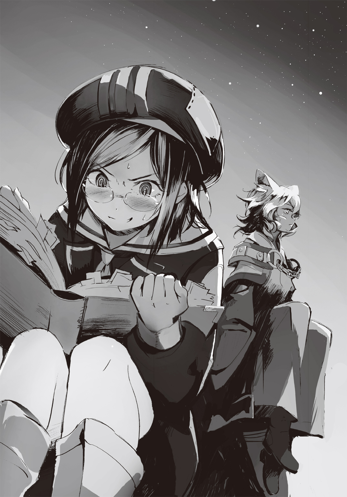
わかってる。こういう場合、類似状況下の対処法を参考にするのだ。
ピンパーネルの手帳の中にいいのがあった。『突如殺人鬼に襲われた場合の対処法』だ。
突発的なドキドキイベント、結果次第では今後の人生において大きく影響しそうなこの感じ......同じものと言っても過言ではない。ピンパーネルは拳をグッと握り締める。これでイける。
「......ヘタレめ」
ユニが突如としてそんなことをため息混じりに呟く。彼の耳がピクピク動いているところを見るに、明らかに自分の反応を待っていると知れた。ピンパーネルは手帳を見る。
☆警告、挑発、脅しがある場合、あくまで殺人は手段または結果であって目的ではない場合が多いです（例：金品の奪取、わいせつ目的、ストレス発散、暴力による優越感等々）。殺人行為そのものが目的である場合、殺人鬼はあまり余計なことを喋らず行為に及びます。よって、何かしらの発言があった場合、まず安心し、相手に逆らわず、低姿勢で同意して、気を落ち着けさせれば生存確率は高くなるでしょう。間違っても相手の意見を強く否定してはいけません。戦闘に発展する恐れがあります。
......となれば、今言うべきことは一つしかない。ピンパーネルは息を吸った。
「あたしはヘタレじゃありません!!」
自分が望むのはむしろ優しく受け入れるような結果......つまり婚約。
ならば相手の意見を否定すればいいのだ。
「......ムッ、な、なんじゃ、おぬしは......。いや、おぬしのことを言ったのではなくて......」
「いいえ、あたしですよ！ あたしの他に誰がいるんですか!?」
よし、圧倒した。意見を圧倒的に否定してやった。これはもう確実だ。
エンゲージである。チャンスは必ず摑む、それがブルー・ピンパーネルという生き物なのだ。
ピンパーネルは胸の内でガッツポーズを取って、さほど大きくはない胸を張ってユニを見やる。ユニは、どことはなしに気持ち悪いものを見るような顔をしていたが......なかなか愛を語りださない。......緊張しているのかもしれない。彼の方こそヘタレではないか。
「いやあのの......？ ピンパーネルよ、ボクはただ......」
愛を語りたいだけ。そう、わかってる。わかってるよユニさん、いえ、ユニくん！
ピンパーネルは突如として訪れた一足早い春にニヤニヤしてくるのを止められない。
......と、そんな時だ。
――クッ!? よ、よせ、アルク......!! お前、そんな......うぉおぉおぉお......あっ、あっ！
何やら不穏なソラの声が聞こえてきて、ユニ共々ピンパーネルはそちらへとつい顔を向けてしまう。ユニがため息一つ残してそちらに向かっていくので、ついていくと......。
――お前、いつの間にそんなテクを......クッ、も、もうやめ、や、や......あぁあぁ！ ――ソラ、随分とご無沙汰だったんだね。随分と溜まっているよ。――アルク、お、おい......ああぁ、ふ、深いぞ、それ!! ――一番深いところからね、うん......もうたっぷりだ。掘りがいがあるよ。――うっ、くっ、があああっ......ああぁあぁっ......あっ!! ――ふぅ、まだまだ。――アルク、てめぇマジでいつの間にこ、こんなすげぇのを......おぉおぉぉお......!!
ピンパーネルがユニと共に見たのは、馬車の幌に映る男二人のシルエットである。
といっても、食料などを入れた箱があるのではっきりとはわからないのだが......指先までピンっと伸ばしているソラと思しき素足のシルエットや、漏れ聞こえてくる声からするに......これは、アレだ。アレしかない。
「......そこはかとなくおぞましい状況じゃな。仕方ない、もう少し向こうで時間を潰すかの」
――うっ!! ......はっ、はぁはぁ......お、終わったな。スゲーな、アルク、お前......。――さぁ、次は反対だ。――なに!? お、おい、よせやめろ、なんかお前のテクヤベぇって！ お、おい、クソ......強引な奴め......待てよ、お前の股間に顔埋める趣味はねぇって！ ――それじゃ体位を入れ替えよう。反対に......それで......よっと。――あ、あぁ......それなら......うっ!! あぁあああぁ......。クソ、力が抜けやがる......！
「アルクさん、何て言うか、意外と......そっち系なんですね......」
「その押しの強いとこが普段から出ればいいのじゃがな」
ユニが遠ざかっていく。告白の続きはさすがにお流れのようだ。
ソラとアルクの痴態を前にしてしまっては純朴な少年には刺激が強すぎるし、それを無視して愛を語るのも強引に過ぎるというものだろう。
ユニがどこかへと消えた後も、ピンパーネルはそのまま顔を紅潮させ、息を荒らげつつも滅多に見られぬ珍しい影絵劇場を見、男達の声を聞いていた。
そして数分の後、空中に向かってピンッと伸ばされていた足が静かに下り、ソラの荒い息だけになったのを見計らい......ピンパーネルはさも何も知りませんというように馬車に戻る。
いろんな緊張を胸に垂れ幕を捲り上げれば......目に飛び込んできたのは、荒い息で汗ばんで倒れるている半裸のソラの姿だった。
そうか、これが事後というものなのか。
ピンパーネルはその衝撃を手帳に日記として書き残した。附箋つきで。
５
酒瓶に湖の水と飛翔体の毒を投入してから二時間が経過した。
幌の下、緊張した面持ちの面々が車座となり、液体を注いだ二つのグラスを見つめる。
一つは酒瓶から注いだ毒物入り湖の水、もう一つは他から水筒で持ってきていた俺達の飲料水にほぼ同量の毒を入れたものである。つまりは、どちらも毒入りの水というわけだ。
それらにソラが左右の人差し指を同時に差し入れ、数十秒。
抜き出した指先は......両方ともに、赤くなっていた。
沈黙せざるを得なかった。湖の浄化ナノマシンは、飛翔体の毒に対処できない。いくら古代に造られたものとはいえ、万能ではないのだ。
......ダメじゃな。そう、沈黙を打ち破ったのはユニ。だが、その言葉を否定するように、悔しげに唇を嚙んでいたソラが、突如としてグラスの水を呷った。
彼の喉がゴクリと動いたと同時に、俺は肩にかけていたナマクラを抜刀せずに遣う。鐺――鞘の先を突きの要領でソラの鳩尾に叩きつけ、その体を馬車の外にまで吹っ飛ばす。
ピンパーネルが悲鳴を上げる中、俺とユニが馬車の外に出てみれば、ソラが体を痙攣させながら吐瀉物を広げていた。
ソラは自らの体内で毒を含んだ水がどう反応するか、ダメ元、いや、ヤケクソでテストをしようとしたのだろうが......。
ユニがため息と共に頭に手をやり、月を見上げた。
「少し力を入れすぎたようじゃな、アルク。......まぁ、あのまま胃に収めさせるよりはいいじゃろうが。......ピンパーネル、来い、ソラの口と喉を洗浄するぞ」
「......ヤン・バーミは終わる......か」
「わからんよ。もしかすると毒が入り込むにしても濃度が薄くて何ともないやもしれん。またはナノマシンが夜間は活動せんものなのやもしれん。......可能性はいくらでもある。しかし、現実は大抵辛い結末を用意するものじゃし、ボクらはそれを想定して動くべきじゃとも思う。......夜が明けたら、ヤン・バーミにその話をしに行こう。あとはなるようにしかならん」
あなた方は苦しんで、死ぬ。そう言いに行くのか。ソラの故郷の人達に、紫苑に......。
俺とユニ、そしてピンパーネルは意識のほとんどないソラに湖水を飲ませ、そして吐かせを数度繰り返し、馬車に運び入れる。
その間も俺は可能性を探るが......やはり、どれも現実味がなかった。
一番可能性が高そうに思えたのは、湖の水を可能な限り別の場所に移動させ、その水で総本山の助けが来るまで村人の命を維持するということである。しかし、人は一日二リットル、最低でも一日一リットルの水を必要とする以上、約二〇〇人の村人全員に十分な日数分の水を確保するのは現実的ではなかった。また、ナノマシンが数千年に渡って湖を浄化してきたということは確実に自己増殖するはず......ならば、他の池や湖に水を移植することで増加を見込めるのではないかとも思ったが......どのみち、間に合わないことに気がついた。
近くに湖も池もない。川等に移しても流れてしまえば無意味だったし......何より、どのくらいの速度で増加するかもわからない。
ピンパーネルにソラを任せ、ユニは俺を外へと誘うと湖の畔を何とはなしに歩いた。
「自己増殖するナノマシンは扱いをしくじれば、とんでもないことになる。人間の体に巣くう癌と同じように、ヘタをすれば手のつけられないものになるからの。当時の設計図やその仕様書などがあれば話は違うが......。それに、もしかすると湖のどこかに総数調整や浄化作用の指示を出す施設か機器があったりするのやもしれん。......無論、どれも可能性はある。じゃが、どれも賭けるにはリスクが高く、時間もない」
じゃがの、と、一歩先を歩いていたユニが急に立ち止まって振り返った。
「いろいろ問題はあるにせよ、一人だけなら比較的高い確率で助けられるやもしれん。人がまともに生きるには一日二リットルの水が必要じゃから、二〇リットルも湖水があれば一〇日は持つし、試料としても十分じゃろ。つまり......」
「ソラに水と共に紫苑を総本山に運ばせる......！ そうか、三日もあればソラなら戻れる！」
「うむ。それぐらいはやれるじゃろう。......じゃが、問題はある。総本山が現状どうなっておるのかわからん上、紫苑は陣士ではないから壁の内側には入れん。医療機器は世界的に見ても高水準じゃが、最高とは言えん商業区のものに限られる。何より、ソラの話からすれば生まれてからずっと無菌状態だった紫苑の体がどういう状態なのかもしわからんし、仮に湖のナノマシンの構造を総本山が即座に解析したとしても代用品が間に合うかどうかは際どいように思う。......そして何より......」
「ソラと紫苑、そして尾長の関係、か。ソラはすでに数カ月手紙が来てないって言っていたし、紫苑は尾長と婚約している。彼との関係は良好だった......」
あの紫苑の体の感触と、そして今夜彼女は尾長と......そんなことが頭に浮かんでしまい、俺は思わず足を止めてしまった。ユニが振り返る。
「女はしたたかな生き物じゃ。命がかかっている以上、紫苑は簡単にヨリを戻すやもしれん。......じゃが、果たしてそんな女を助ける意味があるのかの？」
恐らく飛翔体の毒により今現在も無数の命が失われている。俺達は肌に触れても赤くなるぐらいだが、一般人では腫れ上がり、体内に含めばさらに酷いことになる。
恐らく動植物はもちろん、相当な数の人々が踠き苦しみ、そして死んでいることだろう。
本来であれば二〇時間ほど前に飛翔体八体全てが落ちているはずだが、少なくとも今、南側の空にいる三体はこの瞬間も大地を冒し続けている。
......これは、きっとエゴの問題なのだ。多くの人を救う......それは罌粟様の方針としてはある。けれど、ヤン・バーミ、そして紫苑を救うというのは、ソラをはじめとした俺達の自己満足でしかない。
陣という大きな力を持つが故に、俺達にはその気になれば、それが出来てしまう。
だからこそ、ユニは問いを投げかけているのだろう。
――本当に紫苑を助けるべきなのか、と......。
義務はない。見殺しにしたって誰からも責められはしない。むしろ総本山の現状を考えるに、ピンパーネルが言うようにおとなしく出先機関に向かってその後の指示を待ったり、総本山に真っ直ぐ帰って防衛部隊と共にクーデターに対処すべきなのだ。だからこそ......。
「俺達に判断はできない。やっぱりソラに全てを話そう。その上で、今後の方針を決める」
なかなか言い出せなかったことへの謝罪と共に。僕は胸の内でそう付け足した。
ユニと共に馬車に戻ると、ソラは意識を取り戻しており、俺達に「すまねぇ」と頭を下げるのだけれど......。彼の気持ちは痛いほどにわかるため、責める気もなかった。
それから今度は俺が頭を下げ、そして......実は黙っていたことがあると詫びた。
「......ソラ、尾長を知っているか？」
彼は訝しげな顔をしつつ頷く。同い年で、幼馴染みの友なのだという。
「昔はよく紫苑とかと一緒になって遊んだよ。そんなに子供が多い村じゃねぇのに、運良くオレには同年代が多くいてな。それで......あぁ、懐かしいな。いい奴だった。......何だ、尾長とも会ってたのか？」
俺が頷くと、ソラは途端に嬉しそうな顔をする。けれど、それは一瞬。思い出した懐かしい友はこれから毒で苦しんで死ぬ......そのことを意識したのかもしれない。
ソラは幌馬車の天井を見上げつつ、遠い目をした。
「......尾長は、いい奴だったよ。あいつも紫苑に惚れてたくせに、オレが付き合いだしたって知ったら、泣きながら応援するって言って......それで......。聞いてくれよ、アルク。アイツさ、告白しようと思うんだ、作戦を一緒に考えてほしいってド真剣な顔で言ってきてよ。......オレ、その三日前から紫苑と付き合いだしたばっかでな、死ぬほどバツが悪くて」
苦笑するソラ。その尾長との思い出を語る声音はどこか朗らかだった。
それが......俺の口を重くしていく。苦しいほどに。
「......もう、全部が遠い昔のように感じる。まだ六年かそこらだってのに......懐かしいな」
彼は、帰りたがっているのかもしれない。
陣士になる前に、そして愛すべき人と友がいた生まれ故郷に。
そのどちらも絶対に叶わない。ただの人間に戻れはせず、村もまた失われる運命にある......それを理解しているからこそ、すぐ近くに村がありながらも彼は全てを遠くに感じ、懐かしいと口にした。そんな気がする。
......それならば、言えるか。言っても、大丈夫か。これから失われると思われていたものが、実はすでに失われているのだと、愛すべき人も友も、あの村にはもういないのだと。
彼らはソラを裏切っていると......。
いや......結果としては何も変わらないのかもしれない。けれど、物理的に失われても、心に遺るものだってある。それを傷つける。確実にそうなるだろう。
黙っていれば、飛翔体の毒が全てを冒し、死によって消し去ってくれるかもしれない。ソラが今以上に心を痛めることはないだろう。けれど、そうなればソラはこれから何も知らずに綺麗だった頃の思い出だけを抱いて生きていくのか。
自分ならどうしたい。知らない方がいいのか。それとも全てを知った上で看取りたいか......。
逡巡する。頭の中で堂々巡りが繰り返される。
今俺の中にあるのは、ただ、ソラを傷つけたくないとする想いだけ。
でも......それって、エゴじゃないのか。......本当は、俺が傷つきたくないだけじゃないのか。
傷つくソラを見て、自分が傷つきたくないだけじゃないのか。
......傷つける役を自分がやりたくないだけじゃ――。
「アルク、大丈夫か？ ......どうした」
ソラに言われて、俺はいつの間にか自分が俯いていたことに気づいた。
「......いい、友達だったんだ、尾長って」
俺は誤魔化すために、適当な言葉を絞り出すのだけれど......
「ん？ あぁ、そうだな。同い年で、向こうの方がデカかったってのに、弟分みたいな奴で、何をするにも一緒で......あぁ、一番の友達だったさ」
だった、か。自然と過去形になっているのは、かつてはそうだった、ということなのか、それとも失われるのが決まったからこそそう言うのか。
「......ソラ、戻りたいか。故郷に、陣士になる前に......」
ソラは困惑した顔をするも、わずかばかりに首を捻り、そして......小さく、頷いた。
その瞬間......俺の意志を無視するように、突発的な嘔吐にも似て、口から言葉が噴き出した。
「紫苑は尾長と婚約している」
......は？ と、やたらと長く感じる間を置いてから、ソラがらしくもない惚けた声を漏らした。半笑いにも似た顔で。
「何だよ、それ。......冗談よせよ、アルク。紫苑も尾長も......いや、そんなわけ......」
言っている途中で途絶えた手紙と今の話が結びついたのか、ソラは口元に半笑いを浮かべたまま、目を見開いて固まった。
そんな彼を見ていられなくて俺は目を逸らすのだけれど......最初に零れ落ちた言葉は次の言葉をも引っ張り出していく。
「仲は、良さそうだった。尾長が漁に出る前に、気玉の交換もしてて、俺達が見ていたら二人して顔を赤らめていて――」
仲睦まじかった二人の様子のことを告げ、そして、ピンパーネルやユニに聞かれるのが辛かったものの......先程、実は偶然にも紫苑と水の中で会ってしまったことも添えた。
汗をかいたから、と紫苑が湖にいた理由も含めて、全部を。
動悸がする。自分の体が自分じゃないような感じで、俺は言葉を......黙っていた全てを連ねてしまった。
言い終わった時、俺は自分の呼吸が乱れているのを意識し、やってしまった、という感覚が頭と心を占める。
何で、どうして......そんなことを考えようとする自分を押さえる。それより先にやるべきことがあった。俺はもう一度手をつき、頭を下げる。ごめん、黙っていてごめん、と。
「何て言っていいかわからなくて、それで......ごめん。本当に......」
......酷いことをしてしまった。友達に、ソラに......もっとうまく伝えられたはずだろうに。一番酷い手段を執ってしまった気がする。失敗だ。
......でも、何で......？
「......気を遣わせちまってたようだな。今のオレにもそんなふうに思ってくれる奴がいてくれて嬉しいよ......すまねぇな、アルク」
ソラが肩を叩いて、馬車を降りていく。
彼は寂しげな、しかしどこか優しげな笑みを浮かべていた。
「ソラ、待ってくれ！ ......な、なんだよ、ユニ」
追おうとした俺の上着をユニが引っ張った。
「一人にさせてやれ。傍にいてやることが必ずしも優しさではない。......明日の朝までに心の整理をつけさせてやるのじゃ、何をどうするにせよ、辛い決断になるのじゃからな」
......それにしても、と、ユニは少し躊躇いながら続ける。
「言うと決めた途端、随分と勇ましく全てをぶちまけたものじゃな。ヘタレでいるのもどうかと思うが、粗暴なのも問題じゃぞ、アルク。何事も中庸じゃ」
俺だって......何であんなふうに言ってしまったのか、わからないんだよ。ユニ。
そう、心の中で反論しつつ、言ってしまった原因と心の中にあるもやもやした気分の正体が何であるのか、俺は自問自答した。
６
夜が明けてから少し時を置いた頃、ソラはションベンしてくると言い残して、一人ヤン・バーミへと向かった。飛べばあっという間だが、あえて歩くことにした。
陣士であることをあくまで隠していたいのか、オレは。そんな自嘲的なことを考えつつ、歪む口元に煙草を差し込み、まるで本当に散歩のような軽い足取りで村へと向かった。
本当は夜のうちに向かう方がいい、とは思っていた。だが、アルクが昨夜遭遇した紫苑の様子からするに......見たくないものを見せられるかもしれないと思い、結局朝を待ってしまった。
村はそろそろ朝の漁の準備をしている頃だろう。
あまりに当たり前の歩みだったせいか、それとも村そのものが平和で間が抜けているせいなのか、ソラは村に入った後も道を堂々と進むことが出来た。革製品多用の服は見慣れぬ格好だろうが、季節が冬ということもあり、旅行者か何かだと思われているのかもしれない。
だから、何の苦労もなくソラは尾長の家の前にまで辿り着けてしまった。拍子抜けである。
その小さな家は自分が村にいた時と何も変わって......いや、変わっている。少し小綺麗になっているかもしれない。玄関先に以前は花壇などなかった。確か尾長の家は年老いた母が一人だけ......あれからの年月を考えると、急に元気になったとも思えなかった。
やはり、という諦めとわずかばかりの嫌な予感を覚えつつ、ソラは革手袋の手を拳に固めて持ち上げた。ノックしようとした、まさにその時......中から声が聞こえた。
尾長と、その母、そして......紫苑の声。母の体を気遣う男女の言葉は若夫婦そのものであり、ソラのノックを止めるのには十分な力があった。そして、気玉の交換をするやりとり。
最後に命を救う気玉、それを交換するということはこの村では男女の関係を何よりも示すもの。それ以外では親子でしかやらない。
「そうか。本当に。......アルクを疑っていたわけじゃねぇが......そうなのか」
ソラは尾長の家に背を向け、また、歩きだした。
馬車に戻れば、アルク達全員がすでに起床し、ソラを待っていた。
恐らくソラではなく、その決断を待っていたのだろう。
「当たり前に、今の状況を伝えてやってくれ。何も知らずに苦しんで死ぬよりはマシだろう。覚悟とかさ。他の村に友人がいる奴も少なくない。遺書ぐらい用意する時間はある」
でも紫苑だけは、とアルクが口を挟みかけるも、ソラは持ち上げた手でそれを制した。
昨夜、一か八かの可能性ではあったものの、一人だけなら何とかなるかもしれないという話はユニから聞いていた。けれど......実行することはなさそうだ。
紫苑は自分だけが助かるとしても決して頷きはしないだろう。
尾長とそうだというのなら、決してだ。
彼女のことは誰よりもわかっていた。......少なくとも、六年前までは。
７
俺が操る馬車はヤン・バーミへと入り、その港まで真っ直ぐに進んだ。
時刻的にそろそろ朝の漁が始まりそうな気配であったが、まだ出航はしていないようである。
あの白い衣装を纏った海女達が港の近くに大勢おり、船の準備をしていた男達共々、視線を向けてくる。その中に、紫苑と尾長もいるのを御者台の上から確認しつつ、馬車を停めた。
そういえばちょうどここか、あのやたらうまい牡蠣料理を食べさせてもらった場所は。
そんなことを考えながら、俺は御者台の上に立つと、一度青い空を見上げる。
夏ほどに色濃くはないが、それでも快晴で、ちゃんとした青空だった。
「おやまぁ、いつぞやのお客さんじゃないかぃ？」
あの老婆が不思議そうな顔をして近づいてきたので、俺は頷く。
そうしていると船に乗り込もうとしていた紫苑が近づいてきてくれる。
......何かを察したのか、その後ろに尾長が後頭部を搔きながら一歩遅れてついてきた。
妙な気配に、村人達が注視してくれるので......程良さそうなタイミングだった。
俺は大きく息を吸い、そして言った。
「総本山の陣士、アルクだ！ これより村人全員に関する重大な案件を伝えたい!!」
重大な案件というよりも、総本山の陣士、その言葉に老婆や紫苑達が息を呑んだのを感じた。
馬車からユニとピンパーネルが例の毒物を入れたウィスキーの酒瓶を持って降りる頃には、海女達を含めた村人が俺達の馬車を取り囲んでいた。......やや距離があるのは、陣士に対する恐れのせいかもしれない。老婆と紫苑、そしてその傍らの尾長だけが他より少し前に出ていた。
「なんじゃ、随分と臆病な村人じゃの。陣士だとわかった途端ビビってからに」
「は、はい、すみません。......その、実は昔、この辺りで......」
尾長が言うには、どうもこのエリアが反陣士思想に傾いたのは比較的最近――と言っても数十年も昔の話らしいが――のことらしい。途中から老婆に話の主が変わって説明してくれたところによると、当時も今と同じように漁で潤っていたものの、数人の陣士が現れて暴虐の限りを尽くしたらしい。村人の多くが殺され、村は半壊。さらに女子供が攫われたのだという。
......当然、湖の呪いがある以上、帰ってこられた者は一人もいない。
「それを過ぎてからはずっとこんなさ。親から子に、陣士のおぞましさを伝えているんだ。どうだい、わかったかい、お客さん」
以前は見ることのなかった老婆の憎らしげな瞳を見るに、恐らくこの人はその事件を実際に体験しているのかもしれない。
俺達はそんな陣士とは違うと告げつつ、正体不明の飛翔体について触れた。
あれが八体、総本山を中心に周回するように飛び回っており、毒をバラまいていること。そして、それが眼湖に流れる川の上を飛翔すること。また、総本山は被害が広がる前に落とそうと試みたものの、失敗してしまったこと。
......そして総本山が無事であれば一、二カ月で毒を中和させることも一応可能ではあること。
当然、眼湖の浄化作用について声が上がったが、昨夜の実験のことを告げた途端に村人達がざわつき始める。どうやら全員呪いについてはわかっているようだ。
「そ、それじゃ......おきゃ......ア、アルクさん？ 僕らは全員......死ぬ、と？」
尾長が眉根を寄せて言うので俺は彼に視線を向ける。......思わず目が鋭くなるのがわかった。
「俺達が行ったのは限定的な実験でしかない以上、絶対ではない。もしかしたら、万が一、運が良ければ......問題ない可能性はもちろんある。けれど......覚悟はした方がいいだろう」
ざわつきは沈黙になり、沈黙は沈鬱さへと変わっていく。幼い子供もいたが、彼らもまた大人の様子を敏感に感じ取り、同様だ。そんな中、あの老婆が声を上げる。
「それで......陣士のアンタらはそれを報せに来たのかい？ それとも、あのお空のバケモンを落とし損ねた失敗を謝りに来たのかい？ ワシらはこれから全員死ぬってご丁寧にわざわざ言いに来てくれたのかい？ ......どうなんだぃ!?」
おばあちゃん！ と、紫苑が慌てたが......今更その種のことに関して反応する気はなかった。
かつて経験したヤリゼイサの一件は、明らかに俺を強く......いや、ふてぶてしくしている。一つ一つの皮肉に関わるほど、こちらも丁寧ではいられない。
「ボクらは覚悟をしておけ、と言いに来たのじゃよ。水を可能な限り確保したところで、この村の二〇〇人だかを生き長らえさせることは不可能じゃろう」
「もうすぐ死ぬワシらを嘲笑うため来たのかい!? これから死ぬしかないワシらがどんな顔をするのか、陣士様には珍しいんかい!? これだ、陣士って生き物は!!」
紫苑と尾長が老婆の口を手で塞ぎ、俺達に迫っていたのを止めてくれるが......しかし、放たれてしまった言葉は村人達の耳へと入り、ざわめきとなって彼らからまた漏れ始める。
......ざわつきは、まるで波のよう。その一つ一つに絶望が混じっている。
もうしばらくすれば、また、俺達の頭上に石が降り注ぐことになるのかもしれない。
どこか諦めのような気分でこの状況を受け入れつつある己を意識していると、案の定、村人の絶望に怒りの色が混じり始める。そしてその行く先が任務に失敗したのを悪びれもなく報告しに来た俺達へと徐々に向けられていくのを感じる。
それを嫌だと、哀しいと思うと同時に......頭の奥底ではまた違うことを考えている自分を意識してしまう。
――数人も斬れば一瞬でおとなしくなるだろうか。どうせみんな......。
気がつくと左手がナマクラを摑んでおり、右手もまたそこに向かいそうになっているのに気がつくけれど......止めようとは思わなかっ――。
「恥ずかしいマネはやめろよ」
その声に、俺の手は磁石が反発するように刀から離れた。うるさいほどに鼓動が鳴っている。
声の主を見やれば......馬車から降りてきた、ソラだった。
――天!? と、紫苑が声を張り上げ、老婆が目を見開き、尾長が青い顔をし......そして、囲んでいた村人達に先程とは違うざわめきが起こる。
「念のため来ておいて、良かったぜ。陣士の、ソラだ。......なぁおい。ヤン・バーミ出身のオレから言わせてもらえば、今のお前らはクソ恥ずかしいんだよ。縁もゆかりもない総本山、そしてこいつらは、善意で身を危険に晒してまで助けようとしてくれたってのに、何ブー垂れてんだ？ 元々自分らじゃ何もできなかっただろ。わけもわからず水を浴びて火ぶくれみてぇになるか、水を飲んで内側からただれていくかのどちらかだった。それなのに......恥を知れや」
ソラの突き放したような言葉は村人達に突き刺さるように効いている。
ざわめきは、完全に失せ果てた。......その一方で俺の鼓動の高鳴りはまだうるさいほどだ。
無意識の防衛本能だったのかもしれないが、武装もしていない一般人を斬ってしまえばケリが着く......と一瞬でも考えた己が恥ずかしかった。怖かった。
犬は一度でも頭を叩かれれば、人が手を上げた時に怯える。そして、首をすぼめて瞬きを繰り返すか、叩かれまいと牙を剝く。俺は今、完全に後者だった。
......いや、どちらにしても歯嚙みするほどに恥ずかしいことだ。弱者ならどちらであっても構わない。けれど、俺はそうではなかった。だから......恥ずかしい。
「貴様、天か!? はんっ！ こりゃ驚いたね、湖から追い出された負け犬が、まさか陣士のような畜生に成り下がっていたとは！ やはり呪われた血筋かっ！」
「うるせぇよ。ったく、このババァは相変わらずだな。......あぁ、大昔の陣士に何されたかなんざ耳にタコができるほど聞かされたから今更いらねぇぜ。それよりあと丸一日以上はあるんだ、その時間を怒鳴り散らしたり泣いたりするよりもっと有効に使った方がいいと思うがな」
村人達に背を向けると、すまねぇな、とソラは小声で囁きながら煙草を咥えて俺に向けてくるので、その先に火を点した。
紫煙を吐いてもなお、彼は村人達を――紫苑達を振り返らず湖を見やっていた。
村人達は絶望をその顔に浮かべながら、徐々に散っていく。泣いている者も少なくなかった。
一人、なおも喚き続けていた老婆は途中で過呼吸のようになって膝をついたので、医者らしき者が連れていき......馬車の周りには青い顔で俯いたままの尾長と、口に両手を当てて目を潤ませている紫苑だけが残っていた。
ボクらも去るべきではないか、とユニが視線を送ってくるけれど......馬車がなぁ。
ソラの奴、馬車に手をついてるから急に動かすと危ないし、馬を放置するのも......。
「すまねぇ、みんな。ちょいと親父とお袋の墓参りに行ってくるわ。村人からはもう何もされねぇとは思うが、一応用心しておいた方がいい」
紫苑がソラの背に手を伸ばす......けれど、それが触れる前にソラがその手をかわすようにして歩きだしてしまう。紫苑は残された紫煙の中でしゃがみ込み、啜り泣いていた。
酷いようにも見える、けれど状況が状況だ。
立ちすくむ尾長の隣を通り過ぎる時、ソラが彼の肩に手を置いた。ビクっと怯えるように尾長が体を震わせたところに、ソラが小さく「すまねぇな」と唇を動かしたように見えた。
皮肉を言ったにしては、ソラの顔はあまりに沈痛で......今のは、何だ......？
ソラが立ち去ってからしばらくして、紫苑はよろよろと頼りない足取りで家に帰っていき、場には俺達と尾長だけが残っていた。
その彼もふらりと消えたが、すぐ後に籠に果物とパンを入れ、戻ってきた。
先程の村人の様子を見ていたピンパーネルが固まりつつ、俺の耳にその唇を寄せた。
「......あ、あの、あんまり言いたくないんですけれど、これ、毒入っているパターンじゃ？」
ユニはまぁ大丈夫じゃろ、と彼女に告げ、そして顔色が悪いままの尾長から籠を受け取る。
確かにここのところ食事どころではなかったがために俺達は空腹だったし......何だか、ここでビビるのは情けないというか......屈辱的な気がしたので俺はパンを一つ摑むと、齧りついた。
当然毒物の類は怖いが......烏でもない普通の村人が持っている毒など高が知れている。そう思って咀嚼していると......甘い。
あんパンだ。この辺りであんこ入りのパンとなると、ちょっとした高級品だろうに。
そっと脇からユニの手が伸びてきて俺のあんパンを奪っていく。そして久々の甘味だったせいか、ユニはまるですするようにあんこを一気に喰らうとあんパン......というか、あんの抜け殻と化した萎れたパンを俺の手に戻し......いや、おい、ユニお前、これは酷いだろ......。
「うむ、うまいの。......で？ 尾長よ、おぬしは何もせんでいいのか。紫苑が泣いておったぞ」
ユニが口周りについていたあんを指先で取って舐めつつ、皮肉げにそんなことを口にする。
「天君の前じゃ、僕なんて......。まさか陣士になって、こんな悪い報せと一緒に戻ってくるってのは考えもしませんでした......」
「確かソラの友人じゃったな。......どうじゃ、女を寝取った友人の顔を改めて拝んだ気分は。ソラの仕送りはかなりの額があったじゃろ、くすねて家でも建て......うなあぁあ、みっ、耳を引っ張るなアルク!!」
「く、くすねてなんていません！ 以前まで送られていた仕送りは僕も紫苑も使ってもいない！ それに紫苑はお金以上に、手紙を宝物みたいにしてて......婚約した後も、それは......」
「フン！ 善人ぶるな。おぬしはソラにとって恐らく一番大事なものを壊し、うば......ぅなぁあっ！ さっきからなんじゃアルク！」
やめろ、と告げているつもりだった。......それぐらい口で言えばいいってのはわかっている。
本当は俺だって尾長を皮肉って、少しでも傷つけてやりたい気持ちはある。けれど......さっきのソラの言葉ではないが、それが稚拙で、恥じ入るべきことだというのも......わかっている。
二律背反する気持ち。ただ、尾長を嫌う気持ちの方が少しばかり上回っているせいで、俺はユニをしっかりとは止められなかった。
「わ、わかっています。わかっちゃいました。......でも、僕は僕なりに......いえ、言い訳ですね、この場合。良かれと思って、これも天君への恩返しのつもりで......いや、これも言い訳か。僕は、ずっと紫苑を......だから、天君が紫苑と離れた後に、悲しんでる彼女に......。どうして、こんなことになってしまったんでしょうね」
嫌な、生ぬるい風が吹いていた。
嵐の前のようでもあったが、空は快晴だ。湖から出る熱と湿度でこんな風が吹くのだろう。
誰も何も言わず、俺もボーッと空を見上げていると、村のあちこちから声が聞こえるのに気がついた。大抵は泣き声。でも、中には怒声も聞こえる。......人は後々のことを考えて感情を抑えるのだ、と聞いたことがある。もう死ぬとわかった以上、彼らに躊躇いはないのだろう。
また、そんな村人達とは違い、粛々と壺や桶に水をくみ始める者達もいた。
無駄だと笑うことは出来ない。もしかしたらと考えるのは当然だし、奇跡というのはいつだって起こりえるものだ。彼らの努力が案外実を結んだりもするかもしれない。
変わらずに漁に出ていこうとする年配者達の姿もあって、この村の逞しさを感じさせもする。
みんながみんな、彼らのように勇敢であれば、世界は平和なのだろうな、と、何となく思う。
「......僕は、いったい......僕はどうしたら......いいんだろう」
尾長は頭を抱え、馬車の車輪に寄りかかるようにしてしゃがんでいた。
紫苑と一緒に住んでいるのだろうか。それで、戻る場所がないのかもしれない。
しんみりとした気分になっていた時、あの～、とピンパーネルが恐る恐るというようにペンを持った手を上げた。何故か手元にはあの分厚い本が開かれ......記述していたようだ。
数日一緒に過ごしてわかったことだが、ピンパーネルはことある毎にメモを取るクセがあるらしい。通信士としての仕事柄のクセなのか、こんなある意味で生真面目な性格だからこそ通信士になったのかはわからないものの......こんなところまで記述しているのはさすがにマナー的にどうなのかと思う。
「あ、脇からすみません。ちょっとさっきの尾長さん？ の言葉で気になったんですけれど......ソラさん、あ、天さん？ が離れた後に悲しんでる紫苑さんに言い寄ったわけですよね。ということは、六年も前からということですか？ 超部外者が言うのもなんなんですけど、何だか腑に落ちないというか、変な時差があるように思えて」
「あぁ、それは言葉の綾です。確かに村を出ていったのは六年前ですが、天君が紫苑から離れた......その、手紙を寄こさなくなってからです。もう八カ月前ぐらいでして」
「なに？ その話、おかしいぞ。ボクらがこの間村に来たのは、紫苑から長らく手紙が来なくなってしまったからと、様子を見に行くようソラに頼まれたからじゃ。八カ月前......じゃと？」
へ？ という顔を全員が浮かべたまま、俺達は生ぬるい風を沈黙と共に浴び続ける。
村のあちこちから聞こえてくるわめき声や泣き声が不思議と大きく聞こえた。
そんな中、ユニが鼻をスンスンと動かす。
何かを嗅ぎつけたらしく、彼は視線を村はずれの方から上がりだした煙に向ける。
まさか。その言葉を残し、尾長が何も言わずに走りだしたのは、それから間もなくだった。
８
村から小規模な畑のあぜ道を一キロほど行くと、ヤン・バーミ村の墓地があった。
墓地とはいっても、草が刈られた広場のようになっており、そこの土の上に直接小さい四角柱の墓石を置いてあるだけの質素なものだ。
しかしソラはそこには向かわず、その脇の道をなおも進む。
「てっきり、もっとボロクソで、最悪掘り返されでもしてんじゃねぇのかと思ったけど......案外荒らされもしてないのな」
ソラは墓地の外にある墓石の上にあった木の葉を払い、ピンパーネルの荷物からくすねてきた黄色い線香に煙草から火を移した。
シナモンの良い匂いがして、ソラは思わず笑ってしまう。
「見た目も匂いも華やかだが、まぁ、花の代わりにちょうどいいだろ。なぁ、親父、お袋。......ん？」
線香を地面に立てようとした時、そこにはカサカサに枯れて土気色になっている花弁がたくさん落ちているのに気づいた。この辺りには花弁を残すような花は咲かないはずだが......。
ソラは眉根を寄せつつ、墓石をまじまじと見る。
よく見れば低い位置にこすりつけられたような靴跡がある。最初気がつかなかったのは、恐らく誰かが磨いたせいだ。
ソラはなおも墓石の根元辺りを探ってみれば......やはり、最近軽く均した跡がある。掘り返したというよりは、倒れた墓石と、その際に抉れた地面を誰かが直したのだろう。
線香と煙草の煙の中、ソラはしばらく両親の墓の前でしゃがみこみ、あらゆる可能性を考え、危うく手を合わせるのを忘れるところだった。
「ま、いいか。親不孝で悪いな、親父、お袋」
ソラは最後の仕上げとするように、尻ポケットに収まっていた白銀のスキットルからウィスキーを墓石に垂らした。夏であれば虫が寄ってきたりもするので好ましくないが、今の季節なら問題ないだろう。それに、少量だ。残りは今夜にでも飲むつもりだった。
さて、行くか。次にこの地を訪れるのはいつになるのだろう。そんなことを考えるものの、これから死が染め上げるであろうヤン・バーミを訪れる自分の姿は想像できなかった。
もう、二度と戻ってこないんだろう。そんな気がした。
ふと、どこかから自分の名を呼ぶ声が聞こえた。古い方の名。天。
「大変だよ!! 尾長さんがおばば様を......!! 陣士達がそれを......!!」
息を切らしながら走ってきたのは村の子供だ。さすがに名前が出てくるようなことはなかったが、その子の顔からするに嫌な予感がソラの全身を寒気のように走った。
ソラは子供を抱き上げると、〈己〉〈速〉〈飛〉の陣を発動。一気に木々より高く飛び上がると、経験したことのない状況に泣き叫ぶ子供を無視し、全力で村を目指した。
徒歩一五分はかかる道を一分とかからずに飛び越え、一〇人ほどが集まっている老婆の家へ。
人垣の中で、おろおろとしているピンパーネルと顔をしかめたユニを見つけたので、ソラは上空から音もなく降りる。
近くにいた村人が鵺でも見たかのように怯えて距離を置く中、腰の抜けた子供を地面に座らせつつ、「どうした？」と視線をユニに送る。
しかし返答より先に、ソラの視界に原因と思われる男達の姿を見つけられた。殺してやる、と喚き散らす尾長と彼を地面に押さえつけているアルクの姿である。縄か何かを、とアルクが声を上げていたが野次馬達は誰もが困惑しているだけで動く様子がない。
爪が剝がれるのも構わずに地面を引っ搔いている尾長の首筋に、アルクは舌打ちと共に手刀を放って、その意識を飛ばした。
「何があった、アルク。尾長がいったい......ババァ？」
酷く苦い顔をするアルクの視線の先には、医師と看護師の二人が老婆を囲んで慌ただしく処置をしていた。その横には、焚き火の跡。土をかけられて火は消えているようだが、まだうっすらと煙が昇っている。
「尾長が老婆を殴りつけ、そのまま首を絞めたのでな。アルクが止めた。......まだ、生きておる。しぶとい老婆じゃ」
ユニが何を言っているかわからず、ソラは老婆のもとへ向かうのだが......彼の目は彼女よりもその脇にあった焚き火跡に釘付けになった。
燃えかすとなった枯れ木と共にあったのは......己の、手紙の切れ端。
紫苑への想いを綴った、それ。
尾長と紫苑、幼馴染みの二人。あの反応。そして今し方の尾長のヒステリックな有様......。
――あぁ、やっぱりこういうことなのか。
尾長は、少なくとも六年前までは人を殴ったことなどない優しい男だった。どんな観光客にでさえペコペコと頭を下げ、それを苦痛に思ったりもしない......そんな奴。同い年で、村で一番の身長になっても、いつまで経っても〝天君〟と子供のように呼んでくれていた。
ソラの気持ちも、紫苑の気持ちも十分すぎるほどに知っている......そんな、幼馴染みだった。
だから、まさかとは思った。
そして、六年という時間を合わせて考えるに仕方ないとも心のどこかで割り切れた。
それでも、もしや、とは思ってはいた。
案の定、こういう結末が待っていたのか。
「......アルク、すまねぇ、尾長を馬車まで運ぶから手伝ってくれ。オレ達のために殴ってくれた奴を牢には入れたくねぇ」
アルクは小さく頷くと軽々と一人で尾長を担ぎ上げた。二カ月前に新しい陣を入れたはずだが、その膂力はすでに初めて会った時にまで戻っているようだ。よほど陣が軽かったか、体と相性が良かったか。......もしくは猟犬の仕事をしつつも己の体をいじめていたのだろう。
アルクが一人で運んでしまったので、ソラは土がかけられていた焚き火跡にスキットルから残っていたウィスキーを回してかけ、手紙の切れ端にマッチを近づけて火をつけた。
何もかも、残さないように。
「......今更だっての。早く燃えちまえよ」
終わってしまったこと、取り返しのつかないこと......そんなものを振り返ることほど、無駄なことはないはずだ。ソラはそんなことを思いつつ、火を見つめる。
全てを灰にしてから、ソラは馬車へ戻った。アルクの手刀はよほど見事に決まったようで、馬車に運び込んだ尾長はいつまで経ってもなかなか目覚めなかった。
尾長が呻く度に、馬車の中のユニとピンパーネルは非難の目を送ってアルクを俯かせていたが、ソラからすると手刀というより、精神的なショックで気を失っているのだろうと知れた。
不意にユニの耳がピククッと動く。
「紫苑が近づいてくるようじゃが、ソラ？」
「煙草、吸ってくる。尾長が起きたら暴れるか騒ぐかすると思うから、注意しておいてくれ」
馬車を降りるとユニが言う通りに紫苑が近づいてくるのが見えた。
手に大きな籠を持っているのを見るに、アルク達のために食事を用意していたのだろう。それで騒ぎを知らなかったか、尾長を取り押さえてくれたことへの礼のつもりかもしれない。
ソラは彼女に気づかれないよう、静かに馬車から離れ、頃合いを見て陣を発動させ、空を飛んで村外れの自分の家へと向かってみた。
他に行く場所が思いつかなかったが......やめておけば良かった、とすぐに思った。
家は別の家族が住んでおり、窓から覗いたところでは幼い子供を抱き締めながら若い夫婦が声を嗄らして泣いていた。
自分は、何のために陣士になったのか。
呪われた血を内に持つと散々詰られて育ち、陣を毛嫌いしていたはずなのに......。
いや、毛嫌いするように育てられたからこそ、反発したのかもしれない。
そして何より、出来損ない、いらないとされたことを見返すようにと、少しでも早く一人の男として自立したかったのだと今ならわかる。
その結果、自分にとって一番大切な存在と離れてしまうというのに......。
それに気づけなかったのが六年前の己の幼さであり、愚かさだ。
ソラは家の傍に生えていた木の上に昇ると、煙草を咥え......混乱しそうになる頭をできうる限りに落ち着かせ、考える。
紫苑からの手紙が途絶えたのではなく、自分からの手紙が途絶えたのでももちろんない。
互いに出し続けていた。ただ、恐らく数カ月前から手紙は相手に届いていなかったのだろう。
村の生き字引であるあの老婆が全てを隠し、子を生すに十分な年齢になった紫苑に尾長をあてがった......そんなところか。
自分を失ったと思った紫苑の傷に尾長の優しさは甘く染みたことだろう。尾長に紫苑を想う気持ちはずっとあっただろうし、むしろソラのためと思ったりもしたかもしれない。
全ては数十年前の復讐。呪われた血筋の運命なのか。
これが？ この全てが？ だとしたらそれはあまりにも......。
風に乗って、尾長の慟哭が聞こえてきたのはそれから間もなくだった。
昨夜は一睡も出来なかったので木の上で一眠りしようと思ったが、結局瞼を閉じたまま時を潰して夜を迎えただけだった。
ソラは歩いて馬車へ向かう。
村の中を通りたくはなかったので、遠回りになるがあえて湖の畔を選んだ。
月のある時間帯の湖面はキラキラと輝き、とても静かだ。
村も日中の騒がしさを失い、妙に静かで普段の平穏を取り戻しているかのよう。しかし、それは単なる諦めの静けさなのだろう。
見上げる夜空。綺麗な星々に大きな月、そして......黒い影。
飛翔体。徐々に大きくなっている。終わりが近い。
「ここのところ珍しく晴れが続いてて、みんな浮かれてた。冬なのに珍しいって」
湖に体を向け、湖面に映っていた星空を見ていたソラが振り返ってみれば、紫苑がいた。
「尾長とおきゃ......陣士の眼鏡の子から聞いたよ、天。......全部」
案外お喋りな奴だな、と思ったものの、きっとアルクは自分のことを弁解しようとして言葉を重ねたのだと何となく察した。あいつは、そういう男だ。
「全部、おばあちゃんの仕業だったわけだけれど......」
オレの血のせいさ。ソラは生まれてから思い続けていたことを口に出し、また湖面に視線を戻した。隣に紫苑が立ち、同じように視線を遠くする。
長い沈黙が続いた。
いくら大きな湖とはいえ、海辺と違って大きな波の音がないせいで、沈黙は酷く重い。
紫苑が大きく息を吸い、腹に力を入れたのがわかった。
「ねぇ、天。私さ、これで良かったと思ってるんだ。たとえおばあちゃんの悪巧みだったとはいえ、天への嫌がらせのためだったとしても......これで。天には悪いと思ってるけれど」
ソラは煙草を取り出して咥え、紫煙を上げた。
紫苑の知らない、ソラになってから酒の味と共に覚えたもの。
「......私、尾長を愛してるんだ」
「そうか」
「天より......ずっとね」
「それを聞いて、安心したよ」
「天だって、私なんかよりかわいいガールフレンドの一人や二人ぐらいできたんじゃない？」
「どうかな。オレ、知っての通りあんまりモテないからさ」
二人して少しだけ笑って、また重苦しい沈黙を迎えた。
先に耐えられなくなったのはソラだ。明日からどうするのかを尋ねた。
何もせず、尾長、そして彼の母と共に最後の時間を紫苑は過ごすのだという。
「人の終わりなんてそれでいいと思わない？ 特別なことをしなきゃならないってわけでもないよ」
言えてる。ソラは紫煙を苦笑いで吐きながら言い、吸い殻を携帯灰皿の中に放り込んだ。
「勝手だと思うけれど......一つ、お願い。最後に尾長に何か言ってやってほしいんだ。知ってると思うけれど、彼、繊細だから自分を責め続けてる。今はお医者様から注射を打ってもらって、寝てる。朝方までには目覚めると思う」
「わかった。......それが終わったら、村を出ていくよ」
「良かった、最後まで見届けるなんて言われたら、嫌いになるところだったよ。......尾長はまだ馬車。私、いない方がいいでしょ？ 家に帰ってるね」
紫苑が踵を返す。その方向は尾長の家の方角だった。
「親父とお袋の墓の世話、ありがとな」
「世話をしたのは尾長、私はお花だけだよ」
多分、本当にそうなのだろう。ソラはそう思った。
「......さようなら、ソラ。大好きだったよ、昔はね」
オレもさ。そう言おうとしたが、その言葉はソラの喉に引っかかって声にならず、ため息となって夜空に散っていった。
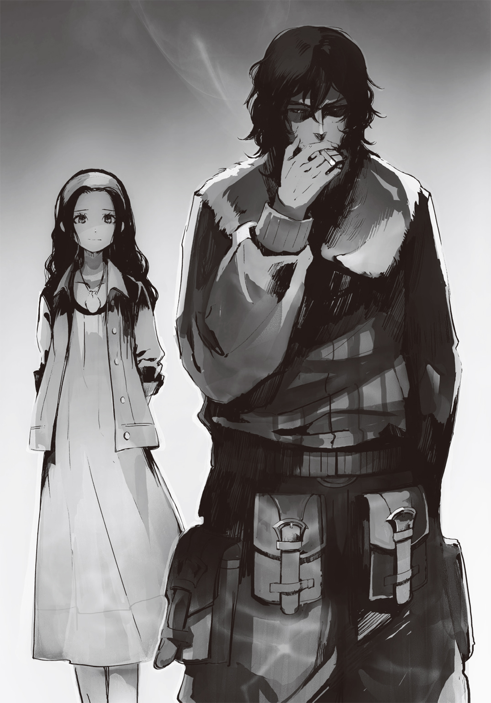
９
馬車を出た紫苑の後を、俺とユニは不安に思って追っていた。
てっきり尾長と同じく、あの老婆を殺しにでも行くのかと思えば......彼女が向かった先は、湖を見やっていたソラのもと。そして......俺達はそこで、見たくないものを見てしまった。
ソラに背を向け、何の未練もないかのように冷たい足音で立ち去る彼女の姿に、思わず歯嚙みした。
人気のない民家の屋上、その煙突の陰に隠れていた俺はたまらず拳を握り締める。
「何だよ、あれ。あんなのって......あんな言い方、しかもあんなあっさり、簡単に終われる関係じゃないだろ！」
「落ち着け、アル......えぇい、ナマクラに手を向けるな！ 紫苑を斬る気か!?」
だって！ と、声を上げそうになるけれど、ユニの小さな手が俺の口を塞いで止めていた。
「純粋無垢な小僧じゃの。言葉を額面通りに受け取るな、たわけが。......簡単に終わったように見えたのは、ボクらが部外者だからじゃろうし、紫苑も限界じゃったからじゃ」
ユニがクイッと細い顎で指し示した先では、紫苑が歩いていた道......のはずなのだけれど、いない？ 眼を細めて彼女を探してみれば、道外れにある木陰でしゃがんでいる彼女の姿。
頭に巻いていたバンダナを取ってまるめ、それを口に当て......むせび泣いていた。ぼろぼろと大粒の涙が彼女の目尻から零れ、頰を伝い、その顎先から止めどなく落ちていく。
肩を上下させ、息を止めるようにして声を上げまいとしているのが嫌でもわかる。
......泣くには、今、この村は静かすぎる......か。
「紫苑も、今でもソラを......？ でも、それなら......何で、好きな男女が一緒になれないんだ。おかしいだろ。......お互いに、どうして......」
「好きだ好きだで結ばれるほどに二人は子供ではないだけじゃろ。......真相はどうあれ、もう全て手遅れじゃ。尾長と婚約を結び、まだ日が浅いとはいえそういう生活を送ってしまった時間と男女としての想いは、今更取り消せん。......そしてソラもそれをわかっておるはずじゃから、紫苑から特別何かを言う必要はない。ただ、せめてこれからのソラの人生が少しでも楽になるようにと彼女なりの気遣いとケジメじゃったのかもしれん。......わかるか、アルク？」
......何だか酷くバカにされている、というより、子供扱いされている気がして腹立たしかったけれど......俺は頷く他なかった。
もし、自分がソラの立場だったら......本当にこれで満足なのか、と考えてしまう。そして悔しさが込み上げてくる。
だって......これで、もう、終わりなんだ。もう、そう日を置くこともなく村は滅ぶ。紫苑は、死ぬ。それなのに、これでいいのか。こんな終わり方で、こんな最後の言葉で......。
わかる。わかっている。想い合っていた二人、決して悪人ではない尾長......理由こそ俺達には知る由のない老婆の悪意が入り込んだことで、全てがおかしくなった。だから、ソラが紫苑達を恨めはしないし、紫苑も同様......でも、それで、これで、こんなんで......。
「他人の色恋沙汰にこれ以上口を挟むのは無粋というものじゃろうな。アルク、そう思わんか」
ユニがそれだけ言い残すと、おっかなびっくりに屋根を下りようとするも、失敗して地面に尻を落とし、尻尾の付け根をさすりつつ馬車へと戻っていった。
俺は彼と共に行くことが出来ず、紫苑のむせび泣く、かすかな声が消え、彼女の気配が遠ざかっていくまで、屋根の上から星空とそこに穿った穴のような飛翔体を見上げていた。
......あれがなければ、この事態が明らかになることはなかったのかもしれない。ソラが村から遠ざかるだけで......。
でも、あれのおかげで全てに、強制的にケリがつく......そんな気もした。
静寂の夜に沈みながら、屋根の上で仰向けになった俺の頭の中は止めどなく働く。
どうすれば良かったのか、どうしたらいいのか、どうすれば......自分なら嬉しいのか。
けれど、結局どうしようもないのだと、気がついてしまう。出口のない迷路を、ひたすらに走り回っているだけなのだ。空回り。仕方ないのだと、諦めに似たため息を空へ放つしかない。
「覗き見はいい趣味じゃねぇな、アルク」
突如近くから発せられたソラの声に、俺は飛び起きる。
気がつくと俺のすぐ近くに、ソラが気配もなく浮遊していた。
屋上に足をつけると、彼は隣に座って煙草を咥えた。手持ちが残り少ねぇや、と笑う。
ダグラスで火を点し、紫煙が拡散してもなお、場には沈黙しかない。
ソラが根元近くまで吸い終わった時、ようやくその息苦しい時間が終わった。
「......いい女だったろ？」
ソラのそんな言葉に、俺は数秒固まり、そして......二人で、一緒になって笑った。
笑うことじゃないような気がしたけれど......でも、酷く笑えた。
「ソラ、俺が言うのもおかしいかもしれないけれど......これでいいのか？ これで村を去って」
「他に方法がない。なら、仕方ないさ。紫苑だけ連れて総本山に戻ろうつったって、アイツは絶対頷かねぇよ。尾長と一緒に死ぬって言うさ。......それに、そう言わないような奴をオレは一〇年以上惚れ続けたりもしねぇ」
「じゃ......あの、老婆は......いいのか。原因は......」
「どうせ、放っておいても死ぬ。原因はオレの血筋だ。......何より、あんなんとはいえ、最後の身内だしな」
その言葉に、俺は固まった。同じ村の人間のことを身内と呼ぶのか？ と、問うものの、それだとしたら〝最後の〟というのはおかしいと、言っている途中で自分で気づいた。
「そうじゃねぇよ。......オレの父方の祖母なんだ、本当の」
「なに!? だ、だとしたら余計おかしい。それじゃソラは孫なんだろ、それなのに......なんで、あんな......!?」
ソラが優しく微笑みながら、次の煙草を取り出す。
よく吸う彼ではあったけれど、今夜はやけに多い。さっきから吸い続けだ。
「数十年前に村で好き勝手やった陣士......そのうちの一人が、オレの祖父なのさ」
望まぬ妊娠。気がついた頃にはもう堕ろせる時期は過ぎ、さらには村には人があまりに減ってしまっていたために周りから寄ってたかって生むように言われたのだという。
......たとえ鬼子であっても、村には必要な頭数だとして。
そうして、男の子が生まれた。それがソラの父なのだという。
無理やりに生まされたその子を母は嫌悪し、また必要だとした村人達からさえも顔を見るだけで唾を吐かれた。それでもなお、呪いがある以上、村を離れることができずに、彼はこの村で虐げられながら生きていったのだという。
「結局親父が外から来た看護師とくっついたのも、村の人間は親父を嫌っていたっていう証拠なんだろうな。......実際、くたばった時も村の共同墓地には入れてもらえなかった」
そしてソラが生まれたのだ。さすがに世代を二つ経たことで村人達からの憎しみは薄れていたものの、祖母であるあの老婆からのものは何も変わっていなかったのだという。
「オレのツラがさ、親父以上にその陣士に似てるんだと。......まぁでも、物心つく前から紫苑や尾長が傍にいてくれたから、どうでも良かったけどよ」
彼が苦笑いで語ったそれらの話は、俺を固まらせるに十分だった。
......じゃ、何か？ 今回の一件は、あの老婆の数十年越しの嫌がらせだというのか。
ふと、初めて村を訪れた時に〝あの娘には約束した男がいる〟と言ってニンマリとゲスな笑みを浮かべた老婆の顔が思い出された。
あれは、つまり......そういうことなのか。全部、そういうことだったのか。
「親父はそれでもババァを大事にしていたからな。仕方ないって。そして、自分が生まれたのも、ここで生きているのも、きっと何か理由がある、使命があるって言って......そして、死んでいったよ。最後はクソみてぇな病気だった」
ソラが立ち上がると、屋根の上から飛び降りてどこかへと歩いていく。
「なぁソラ......俺に何か出来ることはないか」
「その気持ちだけで十分さ。もう、今更誰にも何もできねぇ。時間を跨ぐことも、あの飛翔体を落とすのも......不可能だ。そうだろ？」
過去に戻って尾長と結ばれる前の紫苑に会いに行くのも、超長距離対空攻撃陣を今から用意して村を守ることも、もはや出来ない。......だから俺には、何もできない。
そう惨めな気持ちになると同時に、ソラがなおも紫苑を好いているのだと知れた。
彼は、たとえ尾長とくっついていたとしてもなお、彼女を守りたいのだ。
いや、もしかしたら彼女達を、かもしれない。
きっとそうだろう。ソラなら、そうなのだろう。
......そういう人間だから、俺は、彼が好きなのだ。
ソラの去っていく足音を聞きながら、俺はまた屋根の上で仰向けになったけど、先程よりも心のもやもやは濃くなっていて、頭を抱えて呻きたくなる。夜空に向かって叫びだしたくなる。
けれど、俺がそれをするのは間違っている。
それをしたいのはきっとソラであり紫苑であり、そして尾長なのだ。
俺は所詮、部外者でしかない。だから何も出来ない。......だから、辛かった。
こんな気持ちのまま朝を待つのには耐えられず......俺は人気のない湖の畔へ向かい、そこで抜刀。
見る者のいない静かな夜。
かすかな風に踊らされる小さな小さな波の気配を感じながら......ナマクラを奔らせた。
府津羅流の演舞。陣士になってからは、暇があるとこれをやっていた。
そして、今のように迷った時、心が乱れた時も、また。
決まったことをひたすら集中して行うというのは、心を楽にしてくれる。特に体を動かすことは迷路の中をぐるぐる回っていた思考を強制的に切り替える力があるものだ。
剣を振る。空を斬る。靴底で地を蹴り、身を躍らせ、剣を舞わせる。
一年前の、剣しかなかったと思っていた時のそれより、太刀筋ははるかに滑らかだった。
ぎこちなく力で押さえつけるようにして振っているのとは違う、まるで空間に隙間があり、そこを刃が滑り抜けているかのよう。
力なんて必要ない。刀が勝手に動く。体はそれを支えてやるだけ......それぐらいの心持ちでいい。
兄が随分昔にそんなことを言っていた。あの頃はまったく意味を理解出来ていなかったが、今なら少し、それがわかる気がした。剣士ではなく、陣士となった今になって、ようやく......。
陣を焼き入れた左肩が疼く。けれど、太刀筋は決してブレさせない。
剣を捨てる気は毛頭なかった。使えるものは全て使うのが陣士というものだ。有用であれば活用する。それが、今の俺――陣士としての在り方。
それに、昔はこれっぽっちも理解出来ていなかった兄の言葉が......今になってようやくわかってくるのが、楽しいのだ。
ナマクラを振る。府津羅流の技。それはどこか、兄と笑いながら語り合っているかのようでもあって......何だか心でニヤニヤしてしまう。
昔の俺に伝えてやりたい。兄が憎くて憎くて仕方なかった頃の俺に。
あの人は間違っていない。ただ、不器用で、天才過ぎたのだ。
府津羅の落ち零れである俺が兄と語り合うには、才能の代わりに、最低でも今ぐらいの腕と経験が必要だったのだ。
それを俺はもちろん、兄ですら理解していなかったのだろう。
俺の剣の全てが兄に教えられ、鍛えられたもの。
剣を振る。俺の府津羅流に......技の中に、兄がいる。
......兄さん。演舞をしながら、俺は兄に今の気持ちを語りかけた。
俺はどうすればいいのだろう。ソラのために、何もしてあげられないのか。大切な友達のために、俺は無力でいなければならないのか。
時を跨ぐことは出来やしない。飛翔体を落とすことも出来ない。紫苑達を救うことは出来ない。ソラを救うことが出来ない。......出来ないことばかりだ。
村が滅び、時によってソラの傷が癒えるのを待つしか出来ないのか。
傍にはもちろんいられる。けれど、それだけしか俺には......。
無力感が体を支配する。技の激しさが増すが、太刀筋もブレ始めているのを感じる。
肌に汗が湧き、呼吸が徐々に乱れだす。
叫びだしたくなる気持ちを技に変える。汗の雫をふりまき、剣で、技で、気持ちを放つ。
荒い息になってなお、ナマクラを踊らせる。斬れぬものを斬るかのように。
俺の技の中にいる兄は、ただいつもの自信ありげな顔で佇むばかり。
自分ならこんなことにはならなかった、こんなにも悩んだりはしない、そんなふうに言われているような気がして、何だか腹が立つ。
だから、兄の笑みを斬る。目の前にいる兄。それを斬る。けれど......俺の技などではかすり傷も負わせられないとわかっているせいか、兄は巧みにかわしていく。
技が乱れ、消耗が激しくなっていく。息が切れ、汗が衣服を濡らす。それでもなお斬りに斬る。兄を、俺を、もどかしさを。
自分で思い浮かべたはずの兄の笑顔に腹が立つ。憎らしい。
俺にはもう何も出来ない。どうしたらいい？ そんな問いを、兄はおれなら出来る、と不敵な笑みで返すばかり。
わかっている。こんなことをしていても答えなんて見つけられないのだろう。
でも、してしまう。やらずにはいられない。
最強だと思う兄の剣ですら、時を、飛翔体を斬ることはできないのだ。届きやしない。
だから何故そんなふうに笑っていられるのか。どうして、何故......あなたは首を振れる。
......まるで、出来るとでも言うように。
俺は兄を問い詰めるように、刀を振る。
気がつくと、湖の中に踏み込んでいた。水気を含んで重くなった足を上げようとして、バランスを崩す。堪えようとしたが水の重みと抵抗、そして不安定な湖底の足場に......持ち直せない。仰向けに倒れ行く。
夜空が目に入る。そこに兄の不敵な笑みが現れた。それが酷く憎らしく、俺は背が水面に着くまでの刹那に、今のありったけの気持ちを込めてナマクラを奔らせんとする。
しかし、兄の笑みは近い。間合いに入られている。
まるで抱き締められるかのように、兄の顔が俺の視界の端に消えた。
その瞬間、兄の声が聞こえた気がした。
――お前だって府津羅の男だろう、愚弟。
その声に目を見開きながら、ナマクラが空を斬る。星々、月、そして......黒い影。
背中に水面の感触、そして俺の全身を湖の水が包み込む。
生ぬるい水中で踠き、顔を水面から出した時......。
もし兄ならどうするのか、何と言うのか、そして、自分に何が出来るのか......それが、わかった気がした。
髪を搔き上げ、ずれ落ちかけていた眼鏡を直し、ナマクラを納めつつ、俺は歩きだす。
荒唐無稽にして頭のおかしい考えだと自分で思う。胸が高鳴る。けれど、兄ならそうするだろう。それが、出来るだろう。そして、自分にだって可能なはずだ。
兄はかつて言った。府津羅の男は最後の最後、その限界の、さらに一歩先に至ってしまってもなお、見事に事を成し遂げるものだ......と。
ならば、出来るはずだった。
俺にも、俺にだって......。
名を捨てたとて、俺もまた、府津羅の男なのだ。
急ぎそうになる足を落ち着かせ、冷静に今一度己の考えを確認しつつ、勇むようにして馬車に向かった。そこでは御者台の上で煙草を咥えているソラを見つける。
彼はずぶ濡れの俺にギョッとしたが、俺が言葉を放った途端、さらに驚きの表情を濃くした。
「......アルク、お前、何言ってんだよ。そりゃ無茶苦茶だ。第一、あの規模だぞ」
「でも、出来ると思う。......いや、やる価値はあると思う。ソラ、あんたが望むのならだ」
ソラは煙草を大きく吸い、そして......御者台の上から馬車を、その中で眠る尾長を見やった。
ヘタをすると二人共に生きては帰れない決断を必要とするのに、それはあまりに短い時間だった。
「......望むさ。そりゃ望む。紫苑のために、そしてずっとダチだった尾長のためにも。オレの大切で大好きな二人なんだ、こんな終わり方は仕方ないと諦めることはできても、認めたくはねぇ。......できるのなら、オレも、飛翔体を落としたい」
再び俺の瞳を見つめたソラの顔は、今までに見たことがないぐらいに......男だった。
躊躇いなどない。迷いなどない。真っ直ぐに決断した男の顔。
たとえ事を為したとして、彼の幸せにはならないかもしれない。
けれど、友と愛した女性を救うことにはなる。そんな、割の悪すぎる賭け。
それでいい、と、彼は決断したのだ。
「ソラ、改めて言う。俺を空へ......飛翔体のもとへ連れていけ。斬り落としてやる」
彼は御者台を下りると、そっと手を伸ばす。
俺は彼の瞳を見つめ返しながら......初めて出会った時のように、その手を握る。
固く、強く。
●３章『桎梏の森、花咲く大地』
「何だって!? 村中の気玉を持っていった!?」
老婆は病院のベッドで半身を起こすなり、大声を上げた。看護師の女の胸ぐらを摑む。
「い、いえ、全部ではなく、放したくないとする人からは持っていかずに......自主的に渡してもいい人のだけという感じで......」
「バカな！ あれはこの村の者達の命綱、宝のようなものだぞ!? それを余所者、しかも陣士などに!!」
「しかし村を救うと言ってくださったために、紫苑さんと尾長さんが率先して渡してて、それで他の人も......」
「かぁーっ愚かな!! 何と愚かな!! 噓に決まっている、村が救えんとやってきたあやつらに村を救う手段など!! 恐らく気玉を奪い、それを金に......いや、もしかするとあの空の物も陣士共の策略やもしれん!! そうか、わかったぞ、毒物など初めからなかったんだ!!」
天が採取してきたという試料は確かにあるらしい。しかし、それが本当にあの空に浮かぶ巨体から降ってきたものだという保証はどこにもなかった。
もし、全てが村を混乱させて嘲笑うためであったのなら......もし、全てが高値で売れる気玉を奪うためだとしたら......。あらゆることに合点がいく。
つまり、ヤン・バーミの村はハメられたのだ。ハメたつもりでいた老婆は、逆に騙されたという可能性に、看護師の胸ぐらを摑んだまま思わず喚いた。
憎い。悔しい。何故こんなことに。
尾長なんぞに首を絞められなければこんなバカな事態は止められたことだろう。
そう、尾長だ。何と愚かなのだろう。昔から紫苑に恋い焦がれていたのに、天の女だとして自分の気持ちを内に秘め続けていた。だからこそ、あてがってやったというのに。
紫苑と天の手紙を奪い、交流を断ち、そして悲しむ彼女をひたすらに説得し続けた。
村の人口は少ない。呪いのせいで、外の人間ならば数日寝込めば直るような病でも一度煩ってしまえば数日と持たずに村人は死んでしまう。
そのため、女は子を産み続けなければならないのだ。
村のために、存続のために。かつての自分がそう強要されたように。
幼い頃から天と共に紫苑の近くにいた尾長は実に都合が良かった。彼もまた、己の望みが叶って本望だったことだろう。
天が何よりも大事にしていた紫苑を、幼馴染みの友に奪われる......その様は何と心地良かったことか。紫苑と尾長が婚約し、幸せそうに暮らし始めたのを見た時、何と心穏やかになったことか。陣士達に好き勝手されてから数十年......あれほど嬉しかったのは、病床で死にかけていた憎き息子に唾を吐きかけた時ぐらいなものだ。
望むもの全てをくれてやった。それなのに、真相がわかった途端に殴りかかり、そして首を絞めてきた尾長。何と愚かなのか。奴とてわかっていたのではないか。普通ならば気づくはずだ。犬にさえ舐められる軟弱で不細工な馬面が女に好かれるわけがない。それなのに幼馴染みというだけで、村一番の器量良しとされた紫苑と結ばれることなどありえない。
......まさか、真性のバカだったのか。自分の力だけで紫苑をものにしたと本当に思ったのか？ 周りから寄ってたかって子を生せと圧力をかけさせ、彼女が嫌っている男とあえて見合いをさせようとしたことは、全て単なる偶然だと？ 全ては尾長とくっつけるために、天を苦しめるための策略だったのに？
......いや、そうか。わかっていたのだ。わかっていたが、あそこで激昂することで自分に罪はないと、何も知らなかった、勘づいていなかったと周りに主張したかったのだ。
何と小賢しい男か。何と浅ましい男か。感謝してしかるべき自分を保身のために殺そうとしたのか。憎い。憎らしい男だ。その延長として天が欲するままに気玉を渡したのだろう。そうすることで天からの逆恨みを防いだのだ。
憎い、憎い、憎い。陣士が憎い。天が憎い。尾長が憎い。愚かしい村人ども全てが憎い。
「えぇい、何と愚かしい!! 全員が愚かだよ、バカなんだよ!! ヤン・バーミはその愚かさで滅ぶぞ!!」
「し、しかし、毒物は先生もテストしましたが本当に危険な......」
「だからそれがあの空のデカ物のものと何故......えぇい、おぬしでは話にならん！ 出ていけ、バカの顔を見ていると腹が立つ!!」
老婆は胸ぐらを放すなり、ベッドの近くにあったありとあらゆるものを投げつけ、看護師を部屋から追い出したのだった。
荒くなった吐息を一人整えていると、そこが病院の病室ではなく、診療室のベッドなのだと老婆は気がついた。ということは尾長に襲われてからずっと予断の許さない状況だったのか。
頭には包帯が厚く巻かれていたが、それでもほんのりと湿り気を感じる。怒りで傷口が開いたのかもしれない。
尾長め。息子のようにかわいがってやったのに。恩を仇で返す気か。
もういい、あの馬面も天と同じように苦しみに沈めてやる。これだけの怪我をさせたのだ、しばらく牢に入ることになるだろう。その間毎日訪って、親友の、孫の女を寝取った男めと延々と語りかけてやる。自分を敵に回すことがどれだけ愚かなのか教えてやる。
「しかしまずは陣士どもだよ。気玉を持っていくとは、何たる......おのれぇ」
老婆は傷ついた頭を押さえつつ、手を考える。方法はすぐに思いついたが、連絡手段がない。
手紙では間に合わない。誰かを走らせるか？ 以前なら尾長を犬のように扱えたが、今は無理だ。では......。
「そうか、ここには確かあったはず......」
ここは村の小さな病院だ。村で金を払い、大きな街から医者を置いてもらっている。湖の恵みで稼いだ金があればこそである。そして、そうであるからこそ、いいものがあった。
老婆は医者の机に座り、小さなメモ用紙に事細かにこの度の事件の詳細を書いた。
陣士の一団が訪れ、村人を嬲り、街の宝である気玉を大量に奪った、とわずかばかりの脚色を加えて話の通りを良くした。そして最後に天が仕送りしていた総額の数字を記し、それを謝礼として払うと約束し、実質的に村長となっている己の名を書いた。
紫苑は送られてきた仕送りの全てを老婆に預けていたのだが、それが役立つ時がついに来た。
天などが送ってきた金などで飲み食いなどしたくもなかったが、まさかこんな愉快な活用法があるとは想像もしていなかった。
老婆はメモを小さく丸めながら、ほくそ笑む。天は自分で稼いだ金で死ぬのだ。恐らく謝礼がなくとも動いてはくれるだろうが、あればより確実だ。
老婆は丸めて小さな金属の筒にメモを押し込むと、診療室の窓を開け、そこから手を伸ばし、軒下にある鳥籠の蓋を開ける。中で一番逞しい鳩を一羽捕まえると、その足に筒を取り付け、そして空へと放った。
本来は医師を派遣している大病院との緊急連絡用伝書鳩である。だが、こういう使い方も出来るのだ。老婆はほくそ笑む。さすがに手紙を見た医師達は即座に連絡してくれることだろう。――この地区を担当する、烏に。
彼らは陣士の匂いを嗅ぎつけ、その鋭い爪と嘴で必ずや憎き者達を引き裂いてくれることだろう。そのために毎年安くはない上納金をくれてやっているのだ。
鳩が夜明けの空に向かって飛んでいくのを、老婆は清々しい気分で見送った。その視界にはあの空飛ぶデカ物が入っていたが、どうせ虚仮威しに過ぎない。そんなものに怯えるほど、おめでたくはなかった。
やるべきことはやった。これで天は終わりだ。自分に課せられた宿命は全て処理した。
尾長のことがあったが、それでも晴れやかな気分で、心地良い疲労感が老婆を満たす。
「おや、なんだぃ。あの医者め、こんなものを飲みながら仕事を......どいつもこいつも......」
老婆は医者の机の陰にあった酒瓶を持ち上げる。中身が半分ほど減っているが、かなり上物なウィスキーだと瓶のラベルを見るに察する。酒瓶自体が古代のそれのように歪みがなく造られており、金のかけられたものだ。総本山辺りで作られた最高級のものかもしれない。
どうせ村人の金で買われたものだろう。ならば飲んだところでどうということはないはずだ。
老婆は胸の内で言い訳を見つけ、そして窓の外に向けて乾杯するように酒瓶を掲げ、呷る。
まるで水のようにその酒はすんなり老婆の喉を潤した。味はよくわからないが、それより何より体が水分を欲していたようで、ごくごくと喉を鳴らす。
しかし、いくら飲んでも酒の味がしない。水のようにするりと入り込む酒ではなく、これは......本当に、水ではないのか？ まさか......鳩用の水かっ!?
そう思い至った瞬間、老婆は口の中にあった水を思わず吹き出した。
「クソッ、こりゃ水じゃないか！ ......ったく、何だあのヤブ医者め。あぁ、おのれ、鳩用だったらどうしてくれ......な、なんだぃ......？」
腹が勝手に動いた気がした。まるで自分のものではないかのように。疑問に思った瞬間、老婆の喉を吐瀉物が一気に昇り詰め、口と鼻から噴き出した。
意味の分からない嘔吐に、老婆は思わず床に倒れる。何だ、何が起こった。
わからない。けれど、体がまるで体内の臓物を押し出そうとするかのような反応をする。
しかし胃が空っぽになるほどに吐き続けると、さすがに一息つける。
苦しさに老婆の目から涙がボロボロと零れていた。それを拭おうとしたが吐瀉物だらけの手だったので、仕方なく酒瓶の中に残っていた水で手を洗い、それから目をこする。そして、また胃液が上がってくる感じがしたものの、それは何故か喉に差しかかったところでまるで蓋でもされたかのようにして、押し止められた。代わりにまるで腹の中で小動物が跳ね回っているかのような苦しみ。
何だ、と思ったが、その頃には両目に激痛が走っていた。まるで無数の針で突き刺されているかのような痛み。のたうち回り、悲鳴を上げようとするのだが......その悲鳴が、喉で止まる。
ようやく老婆は気がついた。喉が、その内側が、腫れ上がっているのだ。両目の激痛で顔に手を当てて、ようやく気がついた。皺だらけの顔の至るところが腫れ上がっている。当然のように、手も。吐瀉物が触れた場所、いや......あの水のような酒が触れたところ、全てが。
だから、喉が塞がったのか。水が直接触れた喉が腫れ上がり、食道も気道も塞いでいるのか。
腫れ上がった手を口に持っていくが、頰の内側や舌すら腫れ上がり、もう、口に収まりきらなくなっている。痛みも酷い、だが、それ以上に呼吸が出来ない。老婆は吐瀉物の中できにく。
このままでは死ぬ。それがわかった。早く助けを......。
ここは病院、なんて都合がいい。どうにかしてこの状況をあの看護師か医者に伝えなくては......。いや、しかし気がつくはずだ。自分が目覚めたのだ。あの看護師から話を聞いた医者が駆けつけてくるだろう。......ほら、来たぞ。足音が聞こえる。
――目、覚ましたんだって？ ――えぇ、でもまだ近づかない方が......。――どうかしたのかい？ ――錯乱しているというか、手当たり次第に物を投げたりしてきて。今は静かですけど。――何!? その時に酒瓶は、試料は!? ――え!? ――あの陣士達が持ってきた毒物が入れられた瓶だよ、割ったりしてないだろうね!? ――いえ、それは大丈夫でした。――そうか......良かった。なら、まぁ、しばらく落ち着かせてからにしようか......。
老婆はく。爪先がカリカリと床板を削る。苦しい。苦しい。
あの酒瓶の中身が毒？ 天が持ち込んだ、毒だというのか。
天、あのガキ、やはりあの男の血筋だ。自分をいつまでも苦しめる陣士の血。呪われた血。湖の呪いは恵みを与えてくれる。だが、陣士からかけられた呪いは......。
老婆が踠く。苦しみに。怒りに。ただ、ひたすらにきにいた。
憎しみに染まり、吐瀉物にまみれながら。
まるで自分の人生そのものだ。自分の人生はいつもこんなのだった。
自分が何をしたというのだ、自分がどれほどの悪人だというのだ。
神はこんなにも哀れな者を死ぬその瞬間まで苦しめようというのか。
自分が何をした？ 自分は何もしていない。かわいそうな被害者ではないか。
それなのに何故、どうして......何故......。
１
「アルクが飛翔体を斬ると言いだした時はいよいよパーになったかと心配したものじゃが......確かに八〇〇〇メートルまで昇って斬る、というのなら一理ある」
揺れる馬車の中、木箱に座るユニが尻尾に櫛を入れながらそんなことを口にする。
ピンパーネルは顔をしかめ、俺達コンビの顔を交互に見やった。御者台にいるソラがこっちにいたら、彼女は三人の顔を見渡していたことだろう。
徹夜で働かせていた関係で、先程まで熟睡していた彼女には、いまだ作戦内容について教えていなかったのだ。
「いやいや一理ないですって。高度八〇〇〇メートルって、ギリギリとはいえ高高度ですよ？ 対流圏っていうエリアですよ？ 正気ですか？」
「知っておる。空気は三分の一、気温は......ふむ、今の気温からするとマイナス四〇度ほどかの？ 無論強い風があるじゃろうから体感温度はそれをはるかに下回る。普通ならば高山病にかかる前に急性低酸素症と減圧症で意識が飛び、凍傷、凍死といったおまけがつくじゃろうな」
「ほら、無理じゃないですか！ ダメじゃないですか！」
「じゃからこそ、ヤン・バーミで気玉を貰えるだけ貰い、そして先程ソラらとひとっ飛びしてこれだけのものを買ってきたのじゃ」
ユニは椅子代わりにしていた木箱から下りると、それをブーツのつま先で小突いた。
中に入っているのはヤン・バーミの近くにある山、その中腹にて狩猟を生業とする村の特産品......金に物を言わせてユニが買い漁った大量の革製品である。
「気玉で高濃度の酸素を補給しつつ、この革やら毛皮やらの防寒具で体を保護......そして三〇分未満の短時間であれば......八〇〇〇メートルに昇って帰ってくることは不可能ではない」
ピンパーネルは寝不足の目と、胡散臭そうな顔で一応という感じに木箱の中を物色する。
「先程気玉の一つを試してみたが、一つで十数分程度は酸素を出すようじゃ。なぁに、高度一二〇〇〇メートルのように血が沸騰するほどの高度ではないのじゃ。八〇〇〇メートル級の山もあり、人が行った記録も世にはある。耐えられる。備えさえあれば......八〇〇〇メートルはギリギリ人の手が届く高度じゃ」
ソラが昔、高度計を手に入れてそれで自分の限界を試したそうだが......その時は、一〇〇メートル高度が上がる度に気温が約〇・六五度低下することを知らず、酸欠になるより先に四〇〇〇メートル付近で震え上がって撤退したらしい。それより上は経験したことはないし、話に聞いたこともない......だが、〈飛〉の陣ならば行けるはずだ、とソラは断言した。
「確かに空を飛ぶ敵を倒そうとした場合、人は飛び道具を使って落とそうと考えるのが普通じゃろう。実際、総本山でさえもそう考えておった。人間という生物は地を這うのが当然の生き物である以上、ある意味では疑問に思うこともない。......しかし、ボクらは人の身に生まれながら、人にはない力を持っておる。......そう、陣じゃ。これを踏まえて考えるのならば、己の手が届かなければ届く距離まで近づけばいい、というシンプル極まる答えも出てきて然るべきじゃった。荒唐無稽と感じるが決して不可能ではない――ならば可能だとする力業の理論ではあるにせよ、の。......生まれながらに様々な知識を与えられたボクでさえ、ウドンとソバが死んだ時に諦めたほどじゃったのに......さすがはボクの相方じゃ」
尻尾をふりふりしながら、誇らしげに胸を張ってユニは俺を見るのだけれど......いや、そんなに嬉しそうに見られても困る......。
だって、そこまでいろいろ考えて提案したわけじゃないもの......。
演舞の最中に、兄に発破をかけられたような気がして、唐突に浮かんだアイディアだった。
思いついた瞬間は確実だと思えたし、空気が薄くても気合い入れれば行けるだろう、と精神論で考えていたのだけれど......後で聞いたら思いの外、高高度というのは人間の侵入を防ごうとするように過酷だった。
とはいえ、結果としてそれらは全てユニが解決してくれた。彼は俺の話を聞いた時に一瞬呆れた顔をしたものの、その後は尻尾を力なく下ろし、耳をピクピクと動かしたと思ったら「......やれる、やも」と口にして、即座に気玉を集めるよう行動を開始してくれたのだ。
誇るというのなら、俺はお前と組んでいることを誇りたい。そう、思う。
そして、ソラという友を持てたことも、また。
俺がバカげたアイディアを出し、ユニがそれを現実に引き寄せた。その時、ソラは俺達二人をヘッドロックするようにして、十数秒もの間、強く強く抱き締めてくれていた。
ありがてぇ、最高だよお前ら......と、そんな言葉を嚙み締めるように漏らしながら。
あの苦しい十数秒は、どんな時間よりも俺には価値があった。
「熱気球という手も少しは考えたが、作成する時間がない上、対流圏となると燃料に使う液化ガスは相当な量を必要とする。総本山の全面協力でもなければ無理じゃ。......結論を言えば、ピンパーネルよ、これが恐らく現状ボクらが取れる最高にして最後の手段じゃよ」
ユニの声を背にし、俺は一度御者台に顔を出し、昼近くになっていた晴れた空を見上げる。
......飛翔体はすでにかなり大きく見えていた。まるで空に穴が空いているかのようだ。
あと十数時間ほどで目標地域に到達するだろう。
特に何があるというわけではない丘の上......飛翔体の予定飛行コースの真下だ。
俺はソラの肩に一度手を置き、また馬車の中に戻る。その尻を、ソラは拳で小突いた。
俺の口に微笑みが浮かぶ。
状況は絶望の闇にわずかな可能性という光が差したに過ぎず、紫苑と尾長、そしてソラの関係が生んでいる苦味に至っては何も変わっていない。
けれど、やるべきことがある、というのは人を前向きにさせるものなのだろう。
心は、軽かった。叫びたくなる焦燥はない。
主人に棒を投げられた犬のようなものかもしれない。棒を見て、ひたすら走る。それしかその時頭にはない。けれど、不思議な喜びが胸にはある。
......まぁ、単にこういう無言でやり取り出来る仲間がいて、彼らと共に何かを成し遂げようとしていることが、俺には殊の外嬉しいだけかもしれないけど。
それに、ソラが普通に笑顔を見せてくれるようになった。それが心を楽にする。
「ピンパーネル、ユニ、少し脇へ。得物を研ぐ」
ユニが防寒具を大量に買い漁っている間、俺は俺でちょっとした物を購っていた。
「......ユニさんもユニさんですけど、アルクさんもアルクさんですよね。そんな巨人しか使えそうにないものを買ってくるとか無茶過ぎでは......」
俺が布の中から取り出したのは、特大の大太刀だった。
全長二メートル六〇センチ、刀身だけでも一メートル九五センチはあるかなりの代物だ。柄だけでも六五センチと、大太刀と長巻の間のような柄の長さでもある。
対鵺用に作られた業物のようだった。とはいえこんな大物を振り回して人間が鵺と戦えるわけがないとして、村人達からは眉唾物として扱われていたようだが、その刀身は若干の錆こそ浮いていたが、きちんと一本で――分割されたりせずに――鍛造された紛れもない本物だった。
道具屋の飾りになっていたこいつを言い値で買い取り、さらに金を積んで三人がかりで研いでもらったのだけれど......うーん、やっぱり時間がなかったせいで研ぎが荒いなぁ。
小綺麗でなくていいから斬れ味優先で研いでくれとは確かに言ったけれど、三人でやったせいで明らかに研ぎ残しの境目が見て取れるのはちょっと問題だ。目に見えぬほどにわずかに荒れた刃の方が斬れ味は増すものだけれど、これはちょっと荒れ過ぎである。
俺は貰ってきていた砥石に少量の水をつけ、その境目に這わせてゆっくりと研いだ。本来であれば刃の方を動かすものだが、何せ物が物なのでこうする他にない。
「総本山の外で仕事をする陣士はみんなどこかしら頭のネジが緩んでるって言いますけれど、本当ですね......」
「陣士になる者は多かれ少なかれそうじゃろうの」
そんな二人の会話を耳にしつつ、俺は時間をかけて研ぎ残しを均していたのだけれど、木箱を漁り続けていたピンパーネルが唐突に素っ頓狂な声を上げた。
「えぇ!? こ、これって......まさか、革製のブラ!?」
「ん？ たわけめ、違うぞ。これは特注で作らせたものでの、こうするものじゃ」
ちらりと見やれば......何故か革製の三角形の袋がついたものをユニが頭に被っていて......あぁ、革製の耳袋か。......ん？ アイツ、そんなもので何する気だ？
「あぁ、そうか。新しい刀に夢中じゃったアルクには言っておらんかったの。......アルクよ、ボクも空へ行くぞ」
なに!? と、俺は声を張り上げ、それにソラもまた馬車の中を覗き込む。
「アルクよ、おぬしは詰めが甘い。確かに高度八〇〇〇メートルに人は行ける。じゃが、せいぜい活動出来て三〇分未満という中にあって、おぬしが長刀を用いて暴れ回ったとて微々たる損害しか与えられん。......じゃから、ボクが行くのじゃ。ピンパーネル、昨夜見せてもらった資料をもう一度出せ」
あの例の分厚い本の中には総本山から渡されたという飛翔体の資料が貼り付けられていた。
それによれば飛翔体は六個の〈飛〉の陣を等間隔にかけられており、それで飛んでいる、というのが総本山の見解らしい。実際、どうやったのか知らないが、陣能力発動時に出る特有の青白い光の粒子が飛翔体の上表面で確認出来るのだという。また、均一なハンバーグパテのように見えるものの、精密に測定すると真ん中部分がやや重力に引かれて凹んでいるそうだ。
「故に、ボクの陣が必要じゃ。逆に言えばボクにしかアレは落とせん」
俺は思わず砥石を動かす手を止め、この結構いい値段をふっかけられた大太刀とユニの得意げな顔の間で視線を行き来させる。
「切なげな顔をするな、アルク。無駄ではない。飛翔体表面は大量の触手が蠢いているというし、ボクの陣をかけるには端っこでは意味がない。〈飛〉の陣がかけられている辺りにまで行かねばならん。その際にはおぬしの剣が必要じゃろ。......えぇい！ そんなおいしいところを獲られたみたいに悔しげな目をするな!!」
「あの～、ユニさんがどんな陣を遣って〈飛〉の陣の効果を消す気か知りませんけど......あの巨体を飛ばすとなると相当に強力なものではないかと。それに、六個ありますよ？」
「まぁ、陣士自体をどうこうするのは正直しんどいが、かけられた陣の効果を失わせるだけならば、相当強力なものでも問題ない、と経験上思う。アルクと合わせて新しい陣を入れておれば無理じゃったかもしれんが、大丈夫じゃろう。また個数に関しても浮力にそこまでの余裕があるとは思えん。どう見ても飛翔体はギリギリで浮いて飛んでいるという状態じゃ。......六分の一を失えば、それだけで落下が始まると期待できる」
最後だけはまだ確信が持てないのか、ユニは少し希望的観測めいた言葉を入れた。
「落下が始まるだけじゃ、その水源の川の上に下降しながらも到達してしまうんじゃ......？」
「ピンパーネルよ、形状を考えろ。一応〝学校〟では秀才だったのじゃろ？ ......〈飛〉に限らずじゃが、陣は必ずしも物理法則から逃れる力ではない。飛翔体があれほど巨大でありながら全体的に薄いのは何故か？ 軽くしつつ広範囲に毒をばらまくためであると同時に、空気抵抗を減らすためじゃろ。......そうじゃな、イメージしやすいように言えば一枚の肉の板を六カ所で天井からぶら下げているようなものじゃ。そのうちの一本の釣り糸を切るとどうなる？」
「そりゃ傾くっていうか、その糸を切られた部分がベロンと垂れ下がるんじゃ......」
「うむ。ではそれを飛翔体で考えろ。それも前側、つまり進行方向の先端部であれば？」
「......あ、そうか！ 進行方向部が垂れ下がれば強制的に急激な空気抵抗が！ さらにあの巨体を移動させるために持っていた運動エネルギーがあるから、後ろから押されるわけで！」
「うむ、飛翔体の頭が下がり、空気抵抗が増したとなれば、程度はわからんが、ケツが上がるじゃろう。縦方向に傾きだすのじゃ。そこからは滑空及び下降が始まるはずじゃ」
つまり、つんのめって落ち始める、とピンパーネルが最後にまとめた。
俺にはちんぷんかんぷんだったけれど、ユニはピンパーネルからメモ用紙を貰って紙飛行機を折ると、最後にその頭をペコリと不自然に下向きにさせ、馬車の外へと放る。
それは空を舞うこなく、地面へと真っ逆さまだ。要は、こうなる、ということらしい。
「一応別案として、恐らく六個の〈飛〉の陣を統括して調整操作し、進行ルートを決める〝頭〟がどこかにおるはずじゃが......まぁ現実的に考えると中央部にあると思われるが、これを叩くという手もある。じゃが不確か過ぎる上、探す時間はボクらにはないじゃろう」
何だか刀を研ぐ意欲が薄れてきたせいで徐々に雑になる手元を見つつ、俺は首を捻った。
「別に飛翔体にはいないだろ。陣をかけた奴なら地上から悠々と見上げてるんじゃないの？」
「......そうじゃといいのじゃがな」
それまでハキハキした物言いだったユニが急に言葉を濁した。
ソラが御者台から顔だけ差し込み、幌の中を覗き込んでくる。
「......ユニ、無理しなくたっていいんだぜ。これは、オレの自己満足みたいなもんだし」
そして、俺のエゴでもある。俺はそう心の中で彼の言葉に付け足した。
「アルクの相棒じゃ、おぬしらだけで死地には赴かせんよ。何より現状ボクらは総本山から受けた命は全てこなしてきた自負もある。......ピンパーネル、頼んでおった他の班との連絡は？」
「あ、はい。結局徹夜でやってたら、第六班と再び。それで情報交換したんですけど、向こうによれば無事に任務を果たせ、かつまだ余力のある第一、第二、第五班がそれぞれ独自の判断にて撃ち漏らされている飛翔体を叩きに回るようです。なので、第八班担当であった飛翔体はヤン・バーミの近くに来ることなく落ちるのは確実です」
これで、後は俺達が落としさえすればヤン・バーミは救えることが確定した。
俺は手を止めて、仲間達と視線を交わらせ......そして、頷き合う。
友と飛んでいって、落とす。ただ、それだけでいい。余計なことは、今はもう、考えるまい。
２
目的地となった丘には、夕暮れ時には到着していた。そこからだと飛翔体はかなり大きく見えており、ともすると、誰かが放ったフライングディスクのようだ。
風向き等々を念のために考慮し、目標地域から馬車で三〇分ばかり離れた森の中にて野営をすることにした。干し魚に干し肉、そして豆を煮込んだ料理とも言えないものを喰らい、最後の打ち合わせを終えた時、すでに夜も更けていた。
計算では早朝、日の出と共に丘の上に戻り、そこから真っ直ぐ上空へ飛び立てば、八〇〇〇メートルを超えた辺りで飛翔体が近くに来ることになっていた。無論、水平飛行よりはるかに体力を消耗する垂直上昇飛行であることに加え、ソラが経験したことのない高度であるがために多少の余裕は持たしているにせよ、かなり無茶な計画であることは否めない。
場所が場所だ。気温、酸素量からして早めに昇って飛翔体が来るのを待つといった時間の浪費は命に関わるためタイミングはギリギリを要求されていたし、毒が降ってくる真下を昇るのも命に関わるためこれ以上遅くするわけにもいかなかった。
「ソラ、もう寝た方がいいんじゃないのか？」
馬の世話を終えた頃、すでにユニとピンパーネルはシナモンの香りに包まれて馬車の中で寝息を立てていたが、ソラだけは小さな焚き火の前で三つの革袋を広げて何やらやっていた。
近くに行けば、ソラはヤン・バーミから貰ってきた一七個の気玉を分配しているのだと知れるのだけれど......何か、バランスが悪いような？ 気玉のサイズが必ずしも均一ではないにせよ、六個、六個、三個と明らかに一人分だけ量が少なかった。
「オレのさ。これで十分だ。......安心しろよ、特別なのを二つ、首から下げている」
ソラが胸元にぶら下がっていた小さな二つの袋を指でつまんで見せてくる。紫苑と尾長、二人の気玉の袋だ。
気玉が欲しい、気玉が必要だ、そう村人達に言って回ったけれど、応じてくれる人はほとんどいなかった。村人達にとっては自分の命綱だったし、使わずに海士としての人生を終えた人も大抵は子に渡してしまうものなのだという。何より、小さい粒でも売ればいいお金になるというのだから、渡したがらないのもわかった。
......たとえ、渡さなければ村が滅ぶのだとしても。人は、合理的な生き物ではないのだと、今更ながらそれを思う。どれだけ論理の通った話でも、それを最後に判断するのは感情だ。
結局、渡してくれたのは最初に尾長、そして次に紫苑。それから二人の説得もあって何とか了承してくれた村人も、幼い子を持つ親達からだけだった。
ソラとユニが計算したところでは大丈夫だろう、ということだったけれど......本当はもう少し余裕が欲しいところだというのは、嫌でもわかった。
減圧症を避けるために、あらかじめ血中の酸素濃度を上げて窒素濃度を下げておく必要があるため、多くて困るということはないのだ。
「紫苑のはわかる。けれど、ソラ......尾長のも、ソラが持っていくのか」
「あぁ、今度は最後まで一緒だって約束したからな」
そういえばそんなことを尾長が泣きながら、地に額をこすりつけながら言っていたっけ。
そんな彼をソラは力強く抱き締め、紫苑は酷く哀しげな顔で彼らを見やっていたのを何となく覚えている。
何て言っていいかわからず、俺は言葉の代わりに〝とっておき〟を放った。
「お、おい、どうしたんだ、これ？ この辺じゃ売ってなかっただろ」
驚くソラの姿に、俺はニンマリと笑顔になる。......ソラ愛煙銘柄の、煙草である。
「大太刀を買った店の店長が持ってたから、無理言って一つだけ売ってもらった。ソラ、昨夜から切らしてただろ」
ソラはニヤリと笑うと......何故か煙草をすぐさま投げ返してくる。
「ヤニを吸うと酸素の消費が激しいからな、今夜だけでもやめておく。地上に戻ったら一気に吸わせてもらうから、アルク、お前が持ってろや。楽しみにしてる」
地上に一緒に戻ろう、そう言っているのかもしれない。
ちょっとばかし残念な気分と共に、俺は黙って頷き、煙草を懐に戻した。
熾になった焚き火を挟んで座り......沈黙を聞く。
たった一年だった。それなのに、俺は陣士になり、友と相棒を得た。
沈黙を苦しいと感じず、何もない時間に居心地の良さを覚えられる相手を見つけることが出来た......それは、何とも不思議なことのように思えた。
沈黙や闇は怖くはない。幼い頃、山ではいつも一人だったのだ。
けれど、誰かと共に過ごす沈黙や闇は、いつも怖かった。兄でさえ、そうだ。
なのに今俺達を包む沈黙は......心地良くすらあった。
「......なぁ、ソラ」
「何だ、アルク」
「いや......何でもない」
そんな曖昧な言葉のやり取りの後、どれだけの時間をその闇と沈黙に吸わせたのか、わからない。何もなかったようにも思えたし、その時間でソラと言葉ではないやり取りをたくさんしたような気もする。紫苑のこと、尾長のこと、俺達のこと......。
ソラが気玉の袋を手に、ゆっくりと立ち上がった。
「そろそろ寝かせてもらうわ。......悪いが、あと頼むな」
寝過ごすという愚を犯すことだけは出来ないので、誰かが起きている必要があった。
俺は任せろと軽く言って、馬車に入っていくソラを見送るのだけれど、足をかけたところで、彼は動きを止める。
「一応忘れねぇうちに言っておく。......アルク、ありがとな。そして、いい相棒を持ったな」
「何の話だ？」
「ユニさ。優秀だ、そして相棒想いでもある。アイツが危険を覚悟で一緒に来るのは飛翔体を確実に落とすためだろうが、それ以上にオレとお前が仲良くし過ぎているのが気にくわなかったんだろう」
「自分も仲間に入れろって？ むしろそれは疎外されるのが嫌だったんじゃないかな」
「違う。アルクは自分のものだ、ってな。......陣士に限らず、いい二人一組の奴らはそうやって互いに嫉妬するものなのさ。ユニが他の誰かと仲良くなったら、お前にもわかる。大事にしてやれや。陣士が最後に還るべき場所はいつだって相棒のもとだ」
「相棒のもと、ね。それなら、ソラは？ あぁ、ヤン・バーミか......」
しまった、と俺は感じたが、一度出た言葉は取り消せない。
嫌でも紫苑を意識させてしまう言葉だった。
「オレは陣士のソラさ。あの村には戻れねぇし、戻る意味もない。そうだな、相棒は......これが終わったら探してみるのもいいかもな」
「もし、それで相棒が出来たら......俺は嫉妬してしまうかも」
「ははは。だとしたら嬉しいね」
ソラはそう言ってニッコリと笑みを見せ、馬車の中へと身を隠したのだった。
陣士はコンビが基本、けれど三人組の例がないわけでもない。
いっそ、三人でずっとやるのだって、いいじゃないか。
そんなことを考えていると、不意にその考え自体が嫉妬の類ではないかと気がつき、一人、苦笑いをする。自分も、欲張りになったものだ。
暗闇と沈黙と、静けさ。しかし、どこかで風が鳴っている。森の木々を抜ける音か、それとも飛翔体に風がぶつかっている音かはわからなかった。
地面の震動も、感じない。......総本山の方はケリがついたのか、それとも本当に単なる地殻変動の類による地震だったのだろうか。
瞼を閉じ、耳を澄ませていると馬車のハーネスから外し、木に繫いでいる二頭の馬のブフゥブフ......という吐息が聞こえた。
手入れしつつ相手でもしてもらおうか。......嫌がられるか。三時間は寝かせてやらなければ。馬は人間より無理が利かない生き物だ。
なら、大太刀を研ぐか？ いや、暗くてよくわからないし、何より......深夜に一人で刃物を研いでいるところなど、ピンパーネルあたりに見られようものなら悲鳴を上げられかねない。
結局、俺はおとなしく夜明けを待つことにした。
懐中時計を手首からぶら下げ、肩にナマクラを立てかけ、時を潰す。
......変化があったのは、夜明けまで一時間半といった頃だった。
そこそこに練度を感じさせる気配の消し方をしていたが、如何せん数が多くて、妙に目立つ。
ほとんど気配がなくても、不自然なものが無数に接近してくれば、気を張らなくとも察することが出来るだろう。
「もう少し遅ければ良かったのに......仕方ない」
そろそろみんなを起こそうと思っていた時間帯ではあった。だから、あと三〇分も遅ければ、俺達は馬車を走らせてこの場から去っていたことだろう。
気配からするに、一時間以上渡り合うような長丁場にはならなさそうだが......少々面倒な相手かもしれない。自分一人なら、如何様にも切り抜けられるし、全てを斬り伏せることも何ら問題はないだろう。......だが、今はピンパーネルやソラ、そしてユニという、こういった状況を得意としない者が三人もいる。彼女らを守りながらどこまで戦えるだろうか。
俺は何も気づいていないふりをして静かに立ち上がると、馬車の中に声を投げ込む。
起きろ、敵だ、と。ソラが瞼を開き、ピンパーネルに抱きつかれて苦しげに眠っていたユニが、疲れた顔を細かく動く耳と共に擡げた。
「すぐに動けるように馬をハーネスに繫いだ方がいいと思う。ヘタに戦って消耗したくはないけれど......人数が多い。多少は派手になる」
「......ふむ、あと二時間、いや一時間強といったところかの。〈炎〉は使うな、アルク。消している時間はない。使うとしても......」
わかってるさ。俺は胸の内で応じ、右手で左肩に触れた。
新たに焼き入れた陣は、こういう時のためにあるのだ。
とはいえ......あまり使いたくはないけれど。まだ扱いが未熟だという以上に、不特定多数の敵に手の内を知られたくはない。
ユニがイビキをかいて爆睡しているピンパーネルの鼻の穴にズボッと二本指を差し込んで無理やり起床させたのを見届けてから、俺は焚き火跡を踏みつけ、そして最後に土をかけて火を完全に消す。
辺りの気配を探る。十数かそこら。息を合わせた動きをしているところを見ると、指揮を執っている者がいるようだ。......それを見つけられればいいのだけれど。
俺はナマクラを腰に帯びて、夜風を吸った。
「総本山所属の陣士だ。俺達はあの空に浮かぶ肉の塊を落としに来た。あれは鵺であり、毒を撒き続けている。落とさなければ大地と水を冒し続けるものだ。......俺達の邪魔をするのは互いはおろか、この地に住まう生き物全てにとって害悪以外の何ものでもない。それを承知の上でなお我々の前に立ち塞がるか――烏」
俺の声の後、一拍を置いて風が吹き抜けた。すると暗闇の中から一人、黒装束が現れる。
覆面をしているので、顔はわからなかったが男のようだ。
「さすがは陣士、といったところか。......ご名答、我々は烏だ。ヤン・バーミより危急の連絡があり、貴殿らが村を襲い、そこの宝である気玉を大量に強奪したとのこと。違いないか？」
俺は気玉は村人から任意に貰ったもので、村を襲ってもいないと告げると、覆面の男は少しばかり考える仕草をした。
「実を言えば、現状我々烏は上より『当面の攻性活動を自粛。あからさまな悪行を目の当たりにした場合にのみその実力を発揮せよ』との通達を受けているため、今回の出動は私としても少々疑問がある」
「では、見逃していただきたい。それが互いの利だ」
「......そうしたいのはやまやまだが、この辺りを統括する者からヤン・バーミは上納金も多く、また事を為し得た暁には報酬が出るとのことであるからして、必ず陣士を滅し、気玉を取り戻せ、と命じられてしまった。......しかしながら貴殿の話、真実だとすればここで邪魔立てするのも問題だ。どうだろうか。気玉を渡していただき、それでこの場を収める、というのは」
隊長！ と、木の陰から声が上がったが、覆面は声に手を向けることで黙らせた。
烏は奇襲が基本だ。陣士の隙を突いての攻撃、それがしくじれば一目散に撤退する。それなのに――俺が気づいていたにせよ――彼はあえて前に出てきて交渉をしようとしている。
陣士と見ればひたすら排除を目論む組織だというのに、この覆面、自分で事態の判断も出来るようだ。案外まともな男かもしれない。......円と斛の顔が、わずかに頭にちらつく。
「残念だが、気玉はあの空のものを落とすのに必要なのだ。渡しかねる」
「まことに残念極まる。ならば、烏としてその役目を果たさざるを得ない」
覆面はため息のように言い残すと、背を向けて森の深くへと歩いていく。隙だらけではあったが、斬り込む気にはならなかった。
......何より、恐らくは誘いだろう。斬り込んだ瞬間に、何か来るはずだ。
場にまた静寂が訪れた。しかし先程まで何もなかった、または何もないと装った静けさではなく......緊張が張り詰めた静けさである。
俺は左手をナマクラにかけるも、右手はだらりと下げてその刻を待った。
最初に動いたのは、馬車の中。垂れ幕を押しのけて革袋を手にしたピンパーネルと、ユニを連れたソラが飛翔する。
空高くまで逃げ果たせれば、烏に手出しは出来ないとユニあたりが判断したのだろう。
だが空を飛ぶ二人の足に細い縄が伸びる。鉤縄だ。対応されたか。
ソラとピンパーネルの呻きが上がり、勢い良く地上へと引っ張られ、やや離れた木々の上へと落ちていった。
思わず舌打ちが出る。そして、それを合図としたかのように、三人の烏が俺を囲むようにして飛び来た。
短刀を手にした者が正面、そして左右から。息の合い方が尋常ではない。だが、それにしてはまるで後ろに下がれと言わんばかりに俺の背後が空いている。だからこそ、俺はその場から動かず、三者が十分な間合いに達するまであえて待って......抜刀した。居合い。正面の烏の体をかわして一歩大きく前へ。
その一振りで一羽の首を落とし、一羽の腕を飛ばし、最後の者の刃を払った。
振り返ると同時に俺に向かって短い矢が飛来したが、それをナマクラで払いのけつつ、今し方の三羽、いや、二羽に迫る。
刃を払っただけの者はともかく、右腕を飛ばされてなお、闘志を失わずに逆手に持った刀で仕掛けてくるあたり......やはり練度は高い。
刀を振り上げ、上段の構えで迎え撃つ。腕を失った一羽が決死の覚悟というより、捨て駒として無理やりに踏み込んでくる。
あえて俺は後ろに飛び退りつつ、迫り来た烏の頭へ振り下ろし、反動で跳ね上がったかのように再びナマクラを掲げる。しかし剣先はしっかり頭蓋を断ち割り前頭葉に達していた。男がなおも走り来るが途中で足を縺れさせ、痙攣しながら自ら地に倒れ行く。
俺は地についた左足に力を入れ、今一度大きく前へ出る。
倒れ行く者の体をかわし、その後ろにいた無傷の烏に迫る。
まともに剣の技を放ち合えば負けると判断したのか、彼もまた下段に構えたまま素早く、そして無理やりに踏み込み、重心を落としながら迫る。互いの剣の間合いを削り合った格好だった。
近すぎる間合い。必然的に斬撃は出来ず、鍔迫り合いへ。
体格では俺の方が上だった。だからぶつかった瞬間に激しく押しやったのだが、低くした重心のおかげか、彼は仰け反りながらも何とか受け止める。ならば、と俺はその膝を踏みつけるようにして靴底を叩きつけた。文字通りに膝を折った彼の刀を押し飛ばす。
烏、刀を手放した両手で懐からクナイを抜き、まるで俺を抱き締めるようにして左右から二本の刃を突きささんとする。
刀を振り上げつつ一歩下がってかわし、斬り込もうとしたのだが......そこにまた、来る。矢。体を捻ってかわす。続けて右手方向から、鎖の付いた分銅が飛来。鎖鎌の遣い手でもいるのか。
俺の側頭部狙い。喰らえば頭蓋を叩き割る程の威力を感じる、それ。ヘタに払うとナマクラが負けるかもしれない。その考えが浮かんだ瞬間に俺は身を反ってかわし、鎖を右手で摑み獲る。即座に遣い手に引っ張られるが、体が持っていかれる前に、左手一本の斬撃で鎖を断った。
クナイの烏が残った一本の足で後方に下がりつつ、両手の得物を放ってくる。攻撃というよりも逃げるために、俺の気を逸らす目的のものだ。
殺意の乗らない技にやられるほど甘くはない。クナイに服と肌を僅かに切られつつギリギリでかわし、大きく踏み込む。離れていた右手で今一度ナマクラの柄を握り、覇気を放つ。逃げようとした烏の胴、それを薙ぎ払った。肋の下。脊椎ごと。男の下部分が倒れ、上部分が宙で回転し、臓物を側面から上方へとぶちまけた。
まだ、三人。少なくとも一五、多ければ二〇はいた。
これでビビって退いてくれるほど甘くはないだろう。
俺は足を止めず、ソラ達が落ちた方向へと走りだす。
森の中にあった気配のない気配もまた、つられるように一斉に動いた。
横目で見やればすでに馬車に馬がハーネスで繫がれている。俺とあの男との会話の間にうまくやっていたようだ。......ならば、俺が烏を引きつけられれば......。
走った先、木の根元。そこではいまだ足に細い縄を巻きつけたままのソラ達の姿。ユニが気を失っているピンパーネルを抱きかかえ、ソラが両手に伸縮警棒を持って構えていたが......それがどうしたと言わんばかりに、二羽の烏が迫っている。
先を行っている烏の背に俺は匕首を投げつけ、遅れていた烏には背後からその大腿部にナマクラを突き刺し、転倒させるとその延髄を俺は踏みつけて息の根を止めた。
匕首は烏の背に突き刺さったが、動きを止めるには遅かった。だが、烏の気を逸らすには十分だったようだ。彼は仰け反り、放とうとしていた斬撃はかなり甘くなる。ソラの警棒が刀の先を弾き、もう一方の警棒で烏の首筋を激しく打つ。それで、何とかやり過ごせた。
「ソラ、気玉の袋を全部俺に寄こして、逃げてくれ。烏を引きつけ、斬り伏せる」
俺は倒れた烏から抉るようにして匕首を抜きつつ、言った。
「なっ!? アルク、それは無理だろ！ だいたい......」
「信じろ、ソラ。俺の剣は......府津羅流は伊達じゃない」
だが、そうは言ってもソラは躊躇いを見せた。彼のことだ、俺が自己犠牲を払ってみんなを助けようとしているのではないか、と勘ぐっているのかもしれない。......だから、言ってやる。
「安心してくれ。全員でなくとも、烏の損害はすでに五羽。まともな指揮官ならせいぜいあと数羽も落とせば退くはずだ。だから、馬車で先に丘へ向かっていてくれ」
俺達の作戦をやり遂げるには気玉だけではなく、ソラとユニ、そして何より馬車にある防寒具が必要なのだ。今あれを失えば終わる。そのことを暗に伝えた。
「アルクよ、少しは考えるのじゃ！ 烏からすれば騙していると思ってボクらを狙うじゃろうし、そうでなくともボクらを捕まえて人質にしようとするじゃろ!?」
それは大丈夫だという確信があった。あの覆面ならば俺がそんな小細工をするとは判断しないだろうし、女の子にしか見えないユニと本物の女の子のピンパーネルを人質にはしないはずである。仮にソラが人質にとられても......人質である以上、殺されはしないはずだった。
それを口早に伝えると、ソラは「すまねぇ」と漏らし、三つの袋を渡してくれる。
俺はそれを見えやすいように腰から下げた。
「覆面の男、気玉は全て俺が持った！ 来い！」
ソラがピンパーネルを担ぎ上げて馬車へ向かっていく。一瞬、俺達を囲む気配が動きそうになるものの......すぐに止まる。覆面が〝待て〟をかけたか。
「......いやはや、まさか陣士だと名乗った貴殿にそこまで言われてしまっては......さすがに姑息はできんな。本当に陣士なのか？」
覆面が苦笑するようにして木々の陰から現れた。
「陣士だ、間違いなく。......しかし、かつて合を重ねた烏達に悪い印象を持たなかったせいだろう。そして、あなたもその一人だと感じた」
「烏としては二流だと、よく言われる。......ちなみに、その者達は？」
「斛と円、双子だった。まだ生きているはずだ」
「名は存じ上げないが、双子の若手の存在は聞いたことがある。それぞれが違う師を複数人持ち、戦闘能力に特化した次の世代の......喋りすぎだな」
ピシャンと馬を打つ音がし、馬車が走りだした音と気配。少し行くだけで道に出るだろう。そうなれば、恐らく安心だ。
覆面は右手に脇差しの刃だけを三本つけたかのような、大きな手甲鉤を装着した。
「悪いが、二流でも烏だ。剣士としてやり合う技術を持っていない」
本当に気持ちのいい相手だった。律儀で、まじめで......。
ただ、こういう男は早死にするものだ。残念だった。俺で、幕引きだ。
「構わない。残りは一二か、一七か。何にせよ、全員で来てくれ。......こちらも剣士としてだけではなく、陣士として戦わせていただく」
覆面で顔を隠してはいても、目の前の男が微笑んだのがわかった。
......こういう相手との戦いだけなら、どれだけ幸せだろうか。どれだけ互いの血を撒き散らそうとも、きっと心地良さしかそこにはないのだろう。
そうやって生きて、いずれ死ぬ。そんな生き方も俺にはあったのだろうか。
何となく、そんなことを兄の顔と共に考えた。
何の前触れもなく、覆面、そして一五羽の烏が一斉に飛び来た。全方位。
俺はありったけの覇気を放ち、そして青白い光を生み出しながら、ナマクラを奔らせる。
森が、震えた。
３
ソラは御者台に飛び乗ると同時に鞭を入れた。野営地とした森の中を駆け抜け、街道へ出る。跳ね回る馬車の中で地図を広げたユニが右へ行けと叫ぶので、それに従う。
総本山が用意した馬は足もいいが、頭もいい。状況を把握しつつもソラの指示を素直に受け入れてくれた。
道は暗く、悪い。馬車の車輪が音を立て、激しく揺れる。だが、速度を緩めればアルクの予想が外れた場合――烏に追われた時に、追いつかれる可能性があった。
一直線の道ならば、人より馬の方が速いはずだ。
ソラは空を見上げる。いまだ星々はそこにあり、そしてそれらを隠す大きな影もまた。
かなり大きく見える。ほとんど、真上にあるようにすら感じてしまうほどだ。
「烏を凌ぎきれば、次はあれだ。今日は忙しいぞ」
南の土地とはいえ、冬。それでもソラの額に汗の粒が湧き、口元に思わず笑みが浮かぶ。
ピンパーネルの意識が戻ったようで、ユニが状況を説明し終わると彼はソラのもとへ来て、足に空いた穴に包帯代わりに布を巻いてくれた。鉤縄のフックが突き刺さった箇所だ。
本来ならば下を脱いで消毒した上で包帯を巻くべきなのだが、応急処置だった。
「ソラ、傷はさほど深くないとはいえ......いけるか？」
「問題ねぇ。血だけ止まれば飛翔体が落ちるまでは持ち堪えられる。心配なのはアル――」
「あら、残念ねぇ？ それはできないわ」
突如としてソラの耳に強い風に乗って女の声が滑り込んできた。
何だ、と思うと同時に馬の血飛沫が上がり、そして、同時に目に見えぬ無数の刃がソラを襲った。全身の至るところに、傷が出来る。
全速力で走っていた馬二頭が同時に傷の衝撃に首を振り、そして、竿立ちになる。だが、馬車はそれまで通りの速度で二頭に向かい、激しく馬を押し飛ばす。
強い衝撃に馬が足を滑らし、転倒。繫がっている馬車もまた、傾いていく。
横転する、それを予感した。ソラは先程まで足下にいたユニを見たが、すでに姿がない。今の衝撃で転げ落ちてしまったか。ピンパーネルは悲鳴でまだ幌の中にいると知れるが......。
その時、視界の端に気玉の入った二つの小袋が入った。そのうちの一つがソラの体から遠ざかっていく。
さっきの目に見えぬ刃に、首から下げていた袋の紐の一本を切られたのだ。
飛び行く袋は、紫苑から貰った気玉。
「......紫苑！」
ソラは手を伸ばす。目に見えぬ誰かに取り上げられるように、遠ざかっていく愛しき女性の命の綱であったそれに......。
届け。失うわけにはいかない。紫苑の気玉。
指先に袋の感触を覚えこそすれ......それを摑めたかどうかはわからないままに、ソラは横転の衝撃を受け、地面を転がった。
痛みを感じた気もするが、一瞬の意識の空白が全てを奪い去り、次に気がついた時にはソラは星空に空いた穴を見上げていた。
飛翔体。それを意識した途端、体中に鈍い痛みと倒れた馬が苦しげに喘ぐ声が聞こえた。
生きている。そして......手には、紫苑の気玉が、ある。
「何が起こった......？ ユニ、ピンパーネル！」
頭を振りながら起き上がれば、ちょうど横転した馬車が見えるだけで、ピンパーネルとユニの姿は見当たらない。
見えぬ刃の攻撃も横転時の衝撃も、革製の衣服のおかげでさほどの怪我ではないようだ。ソラは手にしていた袋から気玉を出し、そのまま、まだ首から下がっていた尾長の袋に納めた。
「ようやく見つけた。もしこの辺りで見つけられなかったら、どうしようかと思ってたわぁ」
その頭上から来る甘ったるさを含んだ女の声に、ソラは覚えがあった。――メンラー。
ソラは立ち上がると同時に飛んだ。〈飛〉〈己〉発動。腰のベルトに下げていた伸縮警棒を両手にそれぞれ握ると、即座に延ばし、一メートルの打撃武器として頭上の女に仕掛けた。
地上五メートルのところに風を浴びて浮かんでいた片胸のメンラーが腕を組んでいた。そこに、下からすくい上げるようにして右の警棒で打ちに行く。後方に下がったメンラーにたやすくかわされるも、ソラは飛行方向を直角に変え、左で横殴りの一撃を放った。
「生ぬるいのねぇ、府津羅の剣に比べたらまるでなってない」
メンラーは血走った目をしたまま、ソラの警棒を素手で握り取った。
ソラの警棒は刀と違い、刃はない。何せ、酒場等で絡まれた際の護身用の意味合いのもので、殺すのを目的とした武器ではないのだ。......だが、それでも先端部は鋼鉄で出来ており、頭を打てば頭蓋を砕くこともたやすい、それぐらいの破壊力はある代物だった。
それを女が、素手で......？
しかも、ソラは左腕を引こうとするがメンラーの腕がガッチリと警棒を握り締めているせいで、外れない。以前見た時は色っぽさが漂っていた細い腕に不気味なほどはっきりと血管と筋肉の筋が浮かんでいた。
警棒を引こうとしたはずが、逆に空中のソラの体が引き寄せられてしまった。
「府津羅にやられてから、やけに体調がいいのよぉ。不思議よねぇ？」
ソラ、おののきつつも右手の警棒を使う。それで左の警棒を押さえているメンラーの手首を打とうとするのだが、その前に蹴りが腹に叩き込まれる。
信じられないほどの速さ。鳩尾に喰らった。だが、重さはない。互いに空中にいたせいだろう。ただ、鋭い衝撃が走り、ソラと共にメンラー自身も数メートル吹っ飛んだ。
そして、互いに空中で止まっていられずに地面に落ちる。
「あの女、肉体強化系の陣も使えたのかよ。そんな素振りはなかったはずだが......チッ！」
左手に握っていた警棒がなかった。持っていかれたようだ。
どのみち己の格闘技術と手持ちの武器ではまともにやり合って勝てる気はしないので、ソラは右手にあったのも畳んで腰に戻した。
実際、今のは奇襲だから良かったようなものの、今度接近しようとしても、馬車を横転させた〈風〉の陣を使われれば間合いに入る前にやられてしまうだろう。いや......メンラーが空中で浮いている間なら出来るかもしれない。恐らく、浮いている最中は自分に向けて〈風〉の陣を費やしていたはずだから、攻撃には使えないはず。
「あいつ、何をしにオレ達の前に来やがったんだ......？」
烏と連携した可能性が一瞬頭を過ったが、メンラーは良くとも烏が陣士を嫌がるだろう。
ならば、何故......？ 裏切り者やリベルテンとかいう総本山と敵対するらしき組織のことはソラも聞いてはいたが......。
「ねぇ、ソラさ～ん、府津羅はぁ？ アルクはどこに行ったわけぇ？ 私の胸を斬り飛ばした、あのクソはどこに行ったのぉ～？」
十数メートル先でメンラーが笑いながら立ち上がると、着ていたローブのような服の胸元を大きくはだけさせてみせる。大きな左の乳房と、どのような治療をしたのかわからないが、酷い火傷跡のような、ただれた真っ平らの右の胸が現れた。
痛み止めの薬でも飲み過ぎてラリっているのか。しかしアルクと戦ってからの時間を考えるに、傷口が完全に塞がるには早すぎる。どこかしらで〈癒〉などの治療系の陣を使用したのは間違いないだろう。そうであれば関節でもない以上痛みはないと思われるのだが......。
「女としての何かを失った痛みか......。これは、しつこそうだな」
アルクとしては首を斬りたくとも斬れなかったのか、それとも女だからと命を獲るのを躊躇ったか。何にせよ、面倒なことになってしまっていた。
チラリと横目で見やれば、先程から姿を消していたユニが息を切らせて駆けつけ、何故か馬車の中へと潜っていく。そして再び出てきた時、彼はあの全長二メートル六〇センチに及ぶ大太刀を引きずっていた。
「ソラ、これを遣え！ 多少重いが、今ある中で唯一の武器じゃろ！」
メンラーが笑っている隙に、ソラが大太刀をユニから受け取るのだが......重さは恐らく十数キロ、ヘタをすれば二〇キロはあるだろう。持ち上げたり背負ったりする分には問題のない重さだが、これを振り回すとなるとソラの力では相当に苦しいデカ物だった。
柄が長く、茎がかなりしっかりしていることもあって、構えた時に感じるバランスは見た目ほどには悪くない。とはいえ......アルクはこれを実戦で使うつもりで用意したというのが、ソラには信じられないほどだった。
「何じゃ、ソラ！ 早く巻いてある布きれを取って、構えろ！」
「無茶言うな！ オレは府津羅流とかいうのも使えねぇし、こんなクソ重いのは......畜生！」
メンラーが走り来る。かなり、速い。目を見張るというほどではないにせよ、鍛えられた兵士並みのそれ。
ユニと左右に飛んでかわそうとするが、大太刀の重さの分だけソラの動きが鈍い。
メンラーが肉薄し、蹴りを放ってきた。
ソラは大太刀を振るうわけにもいかず、かろうじて持ち上げたその得物の柄で受けようとするのだが......とんでもない力を受けて弾き飛ばされた。
ソラが地を転がる。大太刀は回転して飛び去り、巻かれていた布から刃を出すと街道脇の木の幹に浅く斬り込みを入れて、突き刺さった。
殺られる。それを直感しつつも、ソラは地面を転がりながら腰から警棒を抜いて伸ばし、立ち上がった時には構えてみせた。
しかし、メンラーはソラに追撃をかけるよりも、大太刀の方に興味を引かれたようだ。
彼女は大太刀を抜き取ると、それを軽々と両手で振ってみせた。細い両腕に不自然な筋肉が浮く。
「......何じゃ、あの女。あの体の感じはまさか......しかし、〈風〉の陣を使っていたはず......」
ユニが黄金色の目を細め、風の音に消えてしまいそうな声量でそんなことを言っていた。
メンラーが大太刀で近くの木に斬りかかるが、やはりまた刃が少しばかり幹に喰い込んだところで止まってしまう。足下をふらつかせながら彼女が笑った。
「なぁに、これ。大きいじゃない。......対人戦用じゃない、鵺用かしら？ 府津羅流の対鵺戦用？ ......だとしたら、勘のいい子なのねぇ、あのクソ眼鏡」
「なに？ どういう意味じゃ、メンラー。......裏切り者のリベルテンが」
メンラーが大太刀を幹に喰い込ませたまま手放すと、強い風を生み出し、己の体を木々の上の高さにまで持ち上げた。
「そこまでわかっているなら、わかるでしょう？ 何が何でもって言って、予備のを借り受けてきたのよぉ。......ここよ！ 私の近くまで来なさい！ さぁ、どうしたの、何でも言う通りにするように躾けられたんでしょう!?」
笑いながらもどこかヒステリックにメンラーが声を張り上げる。不穏な気配が森の中から迫ってくるのをソラは感じ、ユニもまた目を見開き、耳を動かし、そして尻尾の毛を逆立てた。
木々を揺らし、そして大気を震わし......それらは、現れた。
足が四本あるぶよぶよに太った男の背に翼を生やして蠅のように飛び回る四メートル級の四体、そして、ムカデのように十数本の手足を交互に生やし、その先頭にはこちらも十数の人のそれによく似た眼球と巨大な口を持つ地を這う全長六メートルほどのものが十数体。
――鵺である。それも、ソラが遭遇したことのない規模の大群だ。
「リベルテンが用意せし鵺一七体よぉ。全て私の下僕。......さぁ、府津羅はどこぉ？ 私の胸の、いいえ、女としての命を奪った報いを今宵こそぉ」
手負いの陣士は手に負えない。そんな言葉があるのを焦る頭の片隅でソラは思い出していた。
４
馬の悲痛ないななきと、馬車が横転したと思しき激しい音が森の中にまで届いていた。
......気持ちが焦る。だが、気は抜けない。
二人斬り殺し、三人に大きく傷を負わせるところまでは行けた。俺の方の傷はさほど深くないが、四、五箇所斬られている。......覆面の手甲鉤が思いの外、やる。
四〇センチのほどの刃が三本、右手の甲から伸びているだけのそれではあったが、かなりのしぶとさだった。何せ、突いてくる。斬られるのならばナマクラで逆に斬り飛ばせる。だが、突きをされるとそれが出来ないのだ。
斛の時もまた、突きを多用された。彼らは体術を遣うため、弾かれてもそこからすぐに次の攻撃へと移られてしまう。さらに、かわそうにも槍などと違って手甲鉤は一直線の棒ではなく、肩、肘、手首の三箇所で動くために変幻自在の突きとなっていた。
......とはいえ、ここまでならたとえ十数の烏に飛びかかられながらでもまだ対処が出来る。
一番の問題は、手甲鉤の爪の刃、そのうちの一本が、手の甲や手首に固定されておらず......親指にくっついていた。そのため、その一本だけやたらと自由に動くのだ。
かわしたと思えば腕から直角に伸びる親指のそれに脇や肩を斬られてしまう。当然指先であるからしてさほどの力はないにせよ、頸動脈を狙うには十分だった。
「陣士でありながらその剣、驚くほどに確かなものだ。正直、驚いている。......そして陣士として戦うと言ったわりに、まだ何かしらの陣で数本の木々を倒しただけだというのも......」
覆面は常に姿を晒して俺と相対していた。他の一〇羽ほどの烏は攻撃を仕掛けた直後にはその大半が木々の陰に身を隠す。
鎖鎌遣いと思しき奴が俺の背後でヒュンヒュンとその鎌先を振り回しているが......恐らくこれは音と気配でプレッシャーをかけているつもりなのだろう。
「......単に未熟なだけさ」
半分は噓だ。烏は奇襲にしくじっても少しでも情報を持ち帰ろうとする。そのため、俺の新しい陣は隠しながらでしか使えなかった。
陣で全力を出すのは全員を殺せると確信した時か、死の瀬戸際に立たされた時だけだ。
メンレイを例に出すまでもなく、知られること自体が命取り、それが陣士の戦いだった。
陣を出すのなら、必ず命をもぎ取らなければならない。
「陣士、先に言っておく。先程、馬車が横転した音がしたが、我々は手を出していない。それは約束する」
やっぱり、いい奴だ。俺は思わず口元に笑みを浮かべ......そして、覆面に迫った。
彼は下がる。俺の背後から鎌が上空へ放たれたのを感じる。さらに矢が二本、飛刀が一つ、そして三人が同時に短刀で斬り込んでくる。
見事な連携である。一人を集団で倒すことに長けていた。
俺は地に靴底を叩き込み、踵を返してナマクラの一振りで矢を弾き、飛刀と鎌をかわして飛び来た三人の刃もまた続けざまに地に転がってかわす。......と、同時に陣を発現、発動、そしてさらに素早く発現。懐から取り出した小瓶の蓋を外し、宙に放り、即座にダグラスで着火。なおも斬り込もうとしてきた三人との間に激しい炎を巻き起こし、彼らの足を瞬間的に止めた。
その時には、最初に放った陣により、木々が数本倒れ行き、彼らがたまらずに散る。
だが、彼らをかきわけ覆面が一人、倒れる木々をかわし、猛然と炎を突き破って手甲鉤を突き出し、迫ってきた。
やはり、こういう覚悟を持った相手には炎の壁はさほど役に立たない。メンレイのように逃げるのなら炎を追わせられるが、無視して突っ込んでこられるとどうしようもなかった。
手甲鉤の刃を、ナマクラで斬り上げる。さほどの激しい衝撃もなく、覆面の腕が上がるも、連動するようにして下からすくい上げるような左の蹴りが来た。
俺が仰け反ってかわし、体が固まってしまったところ狙いで覆面の蹴り上げがそのまま踵落としへと変化し、連続技として攻めてくる。やむを得ず、柄から離れていた左手で受ける。
踵落としは軽やかで素早かったわりに――重い。地に足が沈む。二人の体が硬直するも、その間に邪魔が入らないようにと炎の壁で辺りを囲み、目眩ましとしたのだが......それが、隙になってしまった。
覆面の軸足が、上がり、蹴りとして俺の顎を狙う。身軽であるが故の、目を見張る芸当だった。手甲鉤、弾かれての左の蹴り上げ、そのままの踵落とし、それを受けられての右の蹴り上げ。流れるように、滑らかに、四連撃。
こればかりは喰らった。顎先に直撃し、俺の体が宙に浮かび上がり、一瞬意識が飛びかかる。頭と視界が直撃した瞬間に真っ白になった。だが、得物を握る右手に力を入れ、飛びかかる意識を何とか繫ぐ。眼鏡のズレを感じながら瞼を開く。星空。風を感じる。上から......？
視界に何か影が映る。烏......ではない。蠅のような、異様な巨体が四つ、ブブブブブという羽音を立てて一直線に飛び行く。それは......先程馬車が横転したと思しき音の方向だった。
鵺だ。飛翔する鵺は、平地では極めて珍しい......。
それが四体も、しかもまるで主人に呼ばれた犬かのように一直線に......。
その動きはヤリゼイサの事件の時に目撃していた。
――ファリス。いるのか。この地に。......ソラ達の場所に。
......まずい、今向こうには鵺と渡り合えるだけの戦力がない。
俺は陣を発現、そして地に落ちる直前に発動。それによって地面を凹ませ、上から土を被せて瞬時に身を隠す。そして、辺りの炎をその上に走らせた。
息を止め、耳を澄ます。俺の姿が瞬時に消えたことで烏達がわずかにざわついている。そして逃げた可能性を考慮して、覆面が警戒を促すと同時に索敵に走らせるのがわかった。
一〇秒、二〇秒と時を経るにつれて、俺の体が酸欠を訴える。気玉の一つでも口に含んでおくんだったと後悔しつつ耳を澄まし続けるのだが......なかなか散らない。覆面め、勘がいい。
味方に辺りを索敵させつつも、この場から離れようとはしない。疑っているのだ。......いくら陣士とて、そこまで瞬時に消えられるものではない、と。
三〇秒を過ぎた頃、炎を走らせていたはずの俺の真上を誰かが踏む。覆面、勘づいたか。
感触で気づかれる前に、俺は地の中から立ち上がると同時に斬り上げる。膝下が宙を舞う。
烏の一匹だ、覆面ではない。単に火を消そうとして辺りを踏みつけていただけか。
土の下から立ち上がった俺は、覆面を仕留め損なったことに舌打ちするも、即座に走りだす。
覆面を始め烏達が追いかけてくるものの、無視して走る。酸欠がこたえて心臓が激しく打つが、体は構わず全力を使う。ナマクラを振りかぶり、雄叫びと共に一本の木を斬り、背後に向かって倒した。それで追撃の気配がわずかに遠ざかる。その間に刀を鞘に納め、走りに走る。
暗い森の中ではあったが、鵺の羽音が俺を導いた。森を走り抜け、街道に出る。
......状況は俺の悪い予想を上回っていた。
横転した馬車、ユニとソラ、そして......空中に浮かぶ見覚えのある女、メンラー。そして、辺りを取り囲んでいる一七体にも及ぶ二種類の鵺。
ピンパーネルの姿がなかったが、気にしていられる状況ではなかった。
「ソラ、ユニ、逃げろ!!」
思わず声が出た。けれどソラが〈飛〉の陣を使ったとて、楽に逃げられる状況ではない。
「あら、府津羅！ そんなところに！ ようやく会えた！」
片胸のメンラーが笑っている。やはり、あの時にトドメを刺しておくべきだった。
俺は走り、倒れた馬車に足をかけ、それを踏み台として空中に浮かぶメンラーに斬りかかる。
しかし、上空から強風を叩きつけられて地面に落とされる......と、同時にメンラー自身もまた地に落ちていた。俺に〈風〉の陣を使ったせいか。だが、この方が都合がいい。
俺は即座に下段に構えて距離を詰める。メンラーは、陣を使ってこない。受ける気なのか。
構わず、斬り上げる。捉えたと思えたそれは、紙一重で下がってかわされる。刀を返して、大きく踏み込みつつ斬り下ろすが......これもまた、紙一重でかわされた。
「なぁんだ、あんたの剣、よく見れば遅いんだねぇ。こんなたるいのに私の胸を持っていかれたかと思うと......腹立たしいよ!!」
強風が顔に打ちつけられる。たまらず転倒しながら腕で防御したが、そこを無数の刃が斬り裂いた。鎌鼬だ。
「アルク、メンラーはあの時のおぬしと同じ状態じゃ！ 身体能力が底上げされておる！」
バカな！ 今こいつは確かに陣を使ったのに......？
俺は下がってユニとソラの元へ。辺りを囲まれているために三人が背を合わせる形で構えるのだが......ユニは当然、ソラにしても鵺に対しては意味を為さない警棒一本という有様だった。
「ピンパーネルはどこに」
「知らん！ そこら辺で伸びておるんじゃろ、それより烏は......あーもういい！」
烏が森を抜けて街道に現れていた。筆頭の覆面を合わせて六。残りはまだ森の中で埋伏しているか、街道を挟んだ反対側の森へ移動していると思われた。俺を逃がさないために先を読んでそうしたのだろうが......しかしながら状況は彼らの予想を超えていたようだ。
街道に出たと同時に覆面が鵺達を見て、あからさまに動きを止めたのだ。
「なんだ......これは......」
鵺が組織立って動くことは、家族、または群れで動く程度だが......今回のそれは明らかに違う。二種の鵺が俺達を取り囲んでいるのだ。
「あら、府津羅のお仲間かい？ 構わないわぁ、ほら化け物ども、この辺りにいる人間は私以外片っ端から殺しなさい。一人残らず、逃がさずに。存分に、ありったけねぇ」
楽しくて仕方ないというように、口の端のよだれを月明かりに鈍く光らせながら......メンラーが笑う。ラリってるのか。
パチンと指が鳴らされた瞬間、鵺が一斉に動く。
覆面が一瞬俺を見るものの、それより何より自分に迫り来た鵺に顔を向けた。
案の定、森の中に潜んでいた他の烏達も鵺の野性的な感覚の前では裸も同然だったらしく、ムカデ状の鵺どもに追い立てられるようにして街道に出てきた。
鵺どもが素早く動き、倒れた馬車を中心に取り囲むようにして一帯に展開。逃げ道を消した。
メンラーを除いた人間全員が息を呑む。――何だ、この状況は、と。
「――来るぞ!!」
覆面が叫んだ瞬間、わけのわからない乱戦が始まった。
空から飛来する蠅型の鵺が烏を捕まえ、空で頭から貪り喰らい、ムカデ型の鵺はその多くの手で烏を捕まえ、力ずくで四肢をバラしていく。
「どうする、どうすればいい、ユニ!?」
俺は飛来した蠅型にナマクラを振るうのだが、上空となるとさすがに深くは斬り込めない。何より深く入ったとしてもナマクラの刃渡りでは、一撃二撃で倒せるとは思えなかった。
「見た限りメンラーは〈鵺〉の陣を持ってはおらん！ 恐らく鵺はメンラーの指示に従うように命じられておるだけじゃ！」
「だから何だってんだよ!?」
ソラが迫り来た覆面に向けて警棒を構える。
「脅すなり説得するなりでメンラーに鵺を引かせるよう命じさせれば簡単に引くじゃろう！ わかっておる、無理じゃ、皆まで言うな!!」
一応言ってみた、というよりは、遠回しに自分の〈封〉の陣では鵺の操作を止められない、と言いたかったのだろう。陣の内容に触れずに伝えるためには確かにそれしかない。
俺はソラと入れ替わって覆面に右手一本で斬撃を放つ。体術に対抗するために、俺は懐から匕首を抜いて左手にて逆手に持つ。しかし、そこに蠅型が突っ込んできた。
覆面はさすがに巧みにかわすが、俺は服を摑まれてしまい、空に持ち上げられそうになってしまう。ソラが飛び上がり、蠅型の羽に警棒を叩きつけたが、効果がない。
「アルク、やむを得ん、全力で行け！」
ユニが一人どこぞへ向かって駆けながら、叫ぶ。......言われなくとも、そのつもりだった。足が地から離れる前に、俺は陣を発現、そして発動。
〈炎〉と違い、いつでも扱えるこの陣は、こういう危急のタイミングでも極めて扱いやすい。
本当に、いい陣だ。
俺を空へと引っ張り上げようとする蠅型の下、その地面が猛烈な勢いで突き上がる。
突如として現れたそれを蠅型は気づくことも出来ず、そのケツを地面から伸びてきた円柱状のものに突き上げられ、俺を摑んだまま頭から地面に落ちた。
鵺の手から逃れると同時に円柱状のそれ――土の棒を蠅型の上に埋め立てるようにして覆い被せた。まさに虫のように素早い動きでわしゃわしゃとその手足を動かして土を弾き、埋められまいと無理やりに顔を土の上に伸ばす。
そこを俺のナマクラが払う。刃は通った、だが、まだ浅い。即座に二撃を払い、それでようやく首を飛ばす。
首を失ってもなお、どす黒い血を吹き上げながら激しく動き続ける鵺の体に背を向け、迫りつつあった烏の一羽に身構えた。
「仲間の仇......！」
両手にクナイ。飛び道具ではなく、両手持ちの短刀として扱う気か。
目前まで迫っていた烏にナマクラは向けず、俺は地に左手を伸ばす。そこに陣を発現。青白い光で文字が描かれると同時に発動。字が砕け、そして地に吸い込まれていく。
地面が動く。俺と烏の間に土が迫り上がり、巨大な壁と化して木々ほどの高さまでに瞬時に伸びる。そして、そこから烏の上へ覆い被さり、地中に埋め立てる。
俺が実際に干戈を交えた多くの陣士達、その中で〝これは〟と心の底から感じた二人が扱っていたものと同じ、陣。――〈土〉。それに、以前から持っていた〈波〉を重ねたもの。
〈土〉の有用性への自信ははっきりとあった。
何せ、さんざん苦しめられたのだ。
そうして、実際に己の体に焼き入れてみて、自信は確信と驚きへと変わっていた。
予想を超える扱いやすさ。種火を必要とする〈炎〉よりはるかに扱いやすいのはもちろんのこと、その作用は遣い手次第で如何様にもなるのだ。
あくまで土を動かす陣能力、そして陣は無から有を生むものではない。そのため、土の波を起こそうとすると、辺りの土が吸い取られ、凹む。それを利用すれば死んだ仲間のために墓を掘るのは一瞬、木々を根元から自由に倒すことすら容易かった。
そしてそういった小技の他に、今のように、そして俺とユニを実質的に敗北へ追いやった彼女が得意としたように、生き埋めという手法はこの上なく使える。
生き埋めにしたことでやや膨らんだ地面、覆面がそこを飛び越えて俺に迫る。その背後にはムカデ型が竿立ちになって覆面を狙っていた。
わずかに共闘の提案が頭に浮かんでいたが、彼の様子からするとそれは無理らしい。
すでに俺は烏を斬り過ぎていたか。
それでも覆面だけでも同意してくれると思っていたが......。いや、もしかしたら彼は......。
彼は空中で身を捩ってムカデ型へ向くと、懐から粉の入った袋を抜き取って鵺の大量にある目に向かって撒くようにして放った。目潰しの刺激物か毒物らしいそれはムカデ型に盛大な悲鳴を上げさせる。
そして、覆面は身を捩らせた勢いを殺すことなく、空中で体の向きを一回転させて再び俺を向く。手甲鉤が迫った。
俺は再び〈土〉の陣を使おうと思ったものの、今使うと生き埋めにした烏が再び意識を保った状態で出てきてしまう恐れに気づいて大きく飛び退る。
覆面は、横転している馬車の車輪を蹴りつけ、なおも空中から迫った。
程良く距離が出来たところで〈土〉〈波〉の陣を発動。さっきと同じように覆面と俺との間に土の波を作りだし、上から覆い被せてやろうと思ったのだけれど......彼は手甲鉤を土の波に突き刺し、そこをとっかかりとしてさらに上へと飛んでみせた。波の頂上を蹴りつけ、なお迫る。
この男、やはり実力が他より頭一つ抜き出ている。
「アルク、これを使え！」
ユニの声。俺は即座に自分の足下にて〈土〉〈波〉を発動。
文字通りに素直な土の波を己の足下に起こす。靴底で波乗りするようにして、覆面の攻撃をかわすと、ユニを視線で探した。
彼はあの大太刀を引きずるようにして俺に向かってきていた。......その背後にムカデ型。
危ない、と思うものの俺の声が出るより先にソラがユニを抱え上げ、ムカデ型の攻撃をかわした。そして俺の頭上で大太刀を手放す。
俺はナマクラを納刀すると同時に、降り来た大太刀の長い柄を両手で握る。
刃渡り約二メートル。地に足を喰い込ませるようにして嚙ませ、重心を落としつつそれを振る。腕力ではなく、体で横に薙ぐ。一撃で、ユニから俺に狙いを変えたムカデ型を二つにした。
重い刃を止めず、それが向かうに任せて体を振らせて、踵を返す。覆面、なおも来ている。手甲鉤を突き出してくる。そこに、大太刀の切っ先を突きつけた。
弾くのでなく、受けるのでなく、かわすのでなく、ただ得物の長さで手甲鉤を陵駕したのだ。
覆面、大太刀の刃を手甲鉤の先で上から叩くようにして弾く。しかし、弾かれたのは彼の体の方だ。それで大太刀ごと俺を飛び越して仕掛けようというのだ。
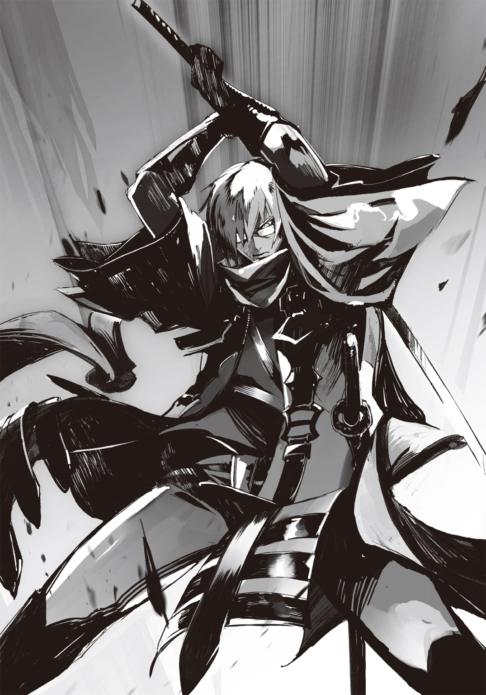
大太刀を斬り上げることができれば股から裂ける。だが、二〇キロ弱の大太刀が突きを繰り出したところから素早く持ち上げるには俺の筋力はおろか、体格も足りていない。
重量に勢いが加わっている大太刀で二連撃はできない......そう、彼は予想したことだろう。
そして今、彼は勝利を予感している。
それが......彼の敗因。
俺は確かに言ったのだ。陣士として戦う、と。だから、遠慮はなかった。
大太刀を捻るようにして峰を下にし、刃を上へ向ける。そして陣、発動。〈土〉〈波〉。
空中を跳ぶ覆面のすぐ背後、大太刀の切っ先が至るそこに、直上へ伸びる土の波を全力で起こす。それに、大太刀の切っ先が触れた。
空高くへと伸びゆく土の流れに、大太刀の切っ先が抱き込まれ、その刃の行く先が水平から上へと力ずくで切り替えられる。
刀の峰に土が激しく当たり、俺の手の大太刀は意志を持つかのようにして上方へ向かう。それに逆らうことなく、俺は大太刀を背負うようにして覆面に背を向け......そして、大振りの一撃を放った。
半円を描くように、頭上の空を斬るようにして、背後の大太刀を俺の前へ。
柄に、そして手に、一人の人間を斬り裂く手応え。
そうして血に塗れた大太刀の刃が俺の視界に現れた数瞬後、俺の両脇を覆面の体が飛び抜けていった。
「烏としては、二流......か」
烏ならば奇襲が基本、そうでなくとも集団戦を得意とするはず。なのに彼は最後、一人で向かってきた。
戦いに魅せられたか。共闘の提案を拒否するかのように仕掛けてきたのは、あくまで俺と一騎打ちでの真剣勝負をしようとしたのか。
どちらにせよ......一人の男として、嬉しかった。
「確かに二流だな、あなたは。だから良かった。......また、いずれ」
地面を転がってから臓物を垂れ流した二つの亡骸に俺は言葉を投げかける。
最後まで剣だけで応じてやりたい相手だった。
しかし、今の状況では命を好きには使えないのだ。
空を見上げる。三匹の蠅型が飛び回る向こう、星空。そこを覆う黒い影は、すでに直上近くまで達していた。実際にはまだ一キロ程度ズレがあるはずだが、物がデカいのでほとんどそのように見えてしまう。
時間がなかった。烏の気配を察してからすでに三〇分ほど。本来であれば馬車で目標ポイントである丘の上へ向けて出発している頃合いだ。
徒歩で移動するにせよ、ソラの陣でズレを含めて飛ぶにせよ......急がなければならない。
息の全てを吐く。大きく吸う。肺の中の空気を完全に入れ換えてから、辺りを見回す。
ユニを抱いたソラが地を這うようにして飛び回り、鵺からの攻撃をかわし、また辺り一帯で烏と鵺の戦いが繰り広げられつつ、誰もが俺を狙っているのを感じる。
鵺は命じられて、烏はどこか仕事というよりは仲間の恨みというものを感じさせた。烏らしくはないが、覆面を考えるにありそうなことだった。
先程目潰しを喰らった鵺が体を震わせながら俺を狙い、襲い来る。そちらに大太刀を構えるのだが......それを待っていたかのようにして、背後から短刀を手にした烏が一羽。
敵の敵は味方、そんな理論から為された挟撃だ。
俺は背後に迫る烏を無視し、鵺に向かって大太刀を突き出した。切っ先がムカデ型に喰い込むとその柄から手を離して、体を捻る。手は腰のナマクラへ。後ろにした左足に力を込める。
烏、地を駆けながら短刀を水平に構えて距離を詰めようとしていた。彼我の距離が五メートルを切った瞬間に、俺は居合いを放つ。烏が何かしらの技を出すよりも先に、ナマクラの切っ先は彼の頭を輪切りにして、上蓋を宙に飛ばす。
烏の男は頭を失ってもなお倒れず、走り続けて俺の脇を抜け、痛みに暴れている鵺へとぶつかっていった。即座に無数の手に捕まり、その四肢を引き千切られる。
腕をもぎ取り、足をもぎ取り......その都度、鵺に突き刺さっている大太刀が激しく揺れる。
俺はナマクラを鞘に納めると大太刀の柄に飛びかかり、引き抜かずに鍔元まで押し込んだ。
大人の頭でもひと飲みに出来そうな巨大な口から絶叫が轟く。烏の肉片を投げ捨て、俺に両手を向けた。それに捕まるより先に、俺は重心を落とし、身を捻るようにして全身の力でもって大太刀を動かし、鵺の体を斬り裂く。途中、脊椎と思しき固いものを切断すると、そこからはまるで解き放たれたように大太刀の動きは軽くなり、盛大な血飛沫と共に再びその刃が星空の下に返ってくる。
大太刀の動きを停止させると、地に手をついて〈土〉を発動。瀕死でありながらもなお迫り来ていたその鵺を、土の波で宙に持ち上げるようにして、吹き飛ばした。
視界が赤い。血飛沫を顔に浴びていたようだ。顔を拭い、眼鏡もまた指でこする。
......あと何人、あと何体屠れば障害が消えるのか。どれだけ血飛沫を上げればいいのか。
切りがなく、果てがない......そんな妄想に心が支配されそうになる。だが、全ては有限。合わせても残り二十数体だ。十分に俺一人でも斬れる数。......だが、時間が......。
「アルク、時がない！ 防寒具を回収して場を離れるぞ!!」
ソラに抱かれて地面すれすれを巧みに舞うようにして敵からの攻撃をかわしているユニが声を上げる。いっそ高く飛んでしまえばとも思ったが、そうなると飛翔している鵺や烏の飛び道具の的になるのを警戒しているようだ。
「その余裕がないから困っているんだろ。そもそも防寒具はまだ馬車の中のはず......！」
俺が回収するしかないか。だが、それにしても横転している馬車の中に入って、ひっくり返っているであろう木箱の中身――防寒具をかき集めるとなると......相応の時が必要だ。
「ソラ、最悪ユニと二人で行ってくれ!! 防寒具は俺が何とかす――」
「気玉はアルク、お前が持ってんだぞ!!」
――忘れていた。俺は腰の革袋を取って、それをソラ達に向かって放った。
「あらぁ、それ大事なのぉ？」
ニヤニヤとした笑い声。地に降り立ったメンラーが飛び行く袋、否、それを受け取ろうとするソラとユニに手を伸ばす。そこに重なる陣は〈強〉〈風〉の二つの文字。
俺は地に手をつき〈土〉〈波〉の陣を使い、メンラーとソラ達の間に一辺が三メートルほどの正方形にも似た土壁を作るのだが......間に合わなかった。
ユニが気玉を受け取った瞬間にソラともども見えぬ何かに叩きつけられたように吹っ飛ばされ、街道を転がった。
俺は遅れて出来た土壁をメンラーに被せるように操作した後は、陣の効果を切る。炎と違って土は操作を断っても重力に引かれておおよその働きは期待できる。そして、土の波に襲われた相手がどのような行動に出るのかも......三分の一で予想がつく。左右か、後ろ、どの方向かに必ず逃げようとするはずだ。
俺は後ろに下がると読んで大太刀で斬り込んだが......外れた。
メンラーは〈風〉を使って横手から脱出。そして、俺は強風をぶち当てられ転倒させられた。
メンラー、倒れた俺ではなく袋から零れ落ちた気玉を拾い集めるユニに不気味に血管が浮き出た手の平を向けた。〈強〉〈風〉〈裂〉を重ねる。
「拾ったら下がれユニ!!」
鎌鼬を孕んだ強風が迫る中、倒れていたソラが〈飛〉の陣で自らの体を無理やりに飛ばし、ユニの前へ。自らを盾とした。
ソラに無数の裂傷が刻まれ、鮮血が飛び、さらに強風でふっ飛ばされて地を転がる。
ソラの首から小袋の紐が切れて落ちたのを視界の端に捉えつつ、俺は大太刀を捨て、ナマクラでメンラーに斬りかかるも、彼女は風を自らに当てて空へと逃げた。
......メンラーめ、反応速度が異常だ。〈封〉をかけられた時の俺と本当に似ている......。
アルク、ソラを！ ユニの切迫した声。倒れたソラのもとへと烏が迫っていた。
俺とソラの距離は一〇メートル以上。完全に間合いの外だった。
迫り来る烏に気づいたソラは胸元に手をやった途端に視線を烏から地面へと向ける。転がっていた小袋――紫苑達のそれに飛びかかるようにしてみ取る。
ソラが気玉を懐に収めると同時に、膝をついたまま警棒を振るう。接近していた烏は急停止して警棒の一撃をやり過ごし、そして......ソラの体へと短刀を伸ばす。
俺は、ナマクラを奔らせ、ソラの腹に短刀が突き刺さるとほぼ同時に烏の腕を飛ばした。
そして、俺は己の体ごと烏にぶつかって相手を押し飛ばし、間合いの外に飛び行く前に今一度ナマクラを奔らせ、その切っ先で烏の脳天を割った。
右手一本でナマクラが纏った体液を払いつつ、ソラの襟首を力任せにみ上げ、無理やり立たせる。傷口を見ようとするが、ソラが手を当て、服の上から指先を傷に差し込むようにして自ら確認する。抜いた指先にはわずかに血。
「少し刺さっちまったが、多分ギリギリ大丈夫だ。それより......」
ソラが上を見る。俺も倣えば空の端が明るくなりつつある夜空に、飛翔体。ほとんど真上にあるように見えた。
......もう、時間がない。今すぐにでも丘に向かわねば間に合わなくなる。そうでなくとも、もうそろそろ風の影響で俺達の所に毒が降り来る可能性があった。
気玉の袋を持ったユニが大太刀を再び拾い上げて走り寄ってくると、俺は辺りを見回す。
練度の高そうな烏の五羽が俺達の周りを素早く動きながら取り囲み、そんな彼らを追っているのか、それとも彼らと同じく俺達を逃がすまいと包囲しているらしきムカデ型数匹、そして空には蠅型が飛び回って蓋をしている。
メンラーが笑いながら近づいてきていた。
大太刀を構える。夜明け前の冷えた空気の中で、初めて俺の顎先から汗の雫が垂れた。
「ユニ、こうなったら俺に陣をかけろ。何とかして二人の脱出口は作る。そして、空へ昇ってくれ」
「バ、バカを言うな！ 仮におぬしが全てを屠れたとしても、その後どうする気じゃ!? 一体でも残せばおぬしは確実に喰われるぞ!?」
〈封〉をかければ、使用しなくとも常時陣に吸い上げられている莫大な量の生命力が行き場を失い、体中に満ちる。そしてその状態であれば俺は鬼神の如き力で戦えるのだ。
......だが、その反動で使用直後に体は完全にイカれる。
以前、何度か試したのだが、意図的に短時間だけの使用としても、結局体の壊れ具合が多少マシになるだけで、しばらく使い物にならなくなるのは確実だった。
慌てた声から小声に切り替え、呻くようにしてユニが続ける。
「おぬしは三つ目の陣を入れたが、呆れるほどに鍛えたことで以前通りの体力を取り戻した。それを考えるにその体が生み出す生命力の量は以前よりも増している。今あれをやれば反動はさらに大きくなると予想すべきじゃ。......形振り構わず〈炎〉〈土〉の陣を活用し、急場を凌ぐのが最善とボクは考える。......それだけでは相当に苦しい状況だとしてもじゃ」
さすが俺の相方だ。わかってるじゃないか。そう、俺の陣だけではかなり苦しい。
......正直、俺の陣の能力はさほど強くない。そもそもの適性がそこまで高くないのだ。
同じ陣であっても、遣い手次第では小手先の技程度の能力しか使えない者もいれば、まさに伝承通り神々の力を思わせる能力を見せる者もいる。
俺やソラは前者で、結局見られなかったが、ウドンやソバは後者だったのだろう。
戦いにおいては適性の高さ――陣の出力の高さが必ずしも有利というわけではない、というのはわかる。筋肉隆々な大男の長刀より小娘の小刀の方が有利な場合は往々にしてあるし、有利な状況へと戦いを運ぶのもまた腕の一つだ。
......けれど、今、この状況に関して言えば......有無を言わさないだけの圧倒的なまでの力が必要だった。
ユニが気玉の袋を腰に下げると油の小瓶とマッチを取り出す。俺もまた、大太刀を地に突き立て、膝をついてダグラスを左手に、そして右手は地に伸ばした。
状況はかなり、苦しい。
自分の可能性を信じる......そんな言葉に意味はない。
幾度となく兄に全てを絞り出された経験を持つ俺は、嫌というほどに自分の限界をわかっている。そこに陣能力を加えたとて......。
だが、やるのだ。やるしかない。ありったけをぶち込むしかない。
そこで奇跡が生まれなければ、終わる――。
「......いくぞ」
俺のその呟きが、まるであらかじめ決められた合図であったかのように、メンラー、鵺、そして烏までもが同時に動いた。鵺の数匹だけは烏に向かったが、他の全ては俺達を狙った。メンラーもまた陣を発動して、迫る。
俺は雄叫びを上げ、ありったけの力を込めて〈土〉〈波〉の陣を発現――その瞬間、大地が不穏なまでの地鳴りを伴い、激しく揺れた。
「なんと......っ!?」
ユニが目を見張る。その黄金の瞳の先にあったのは......串刺しにされた蠅型。
空を舞っていたはずの鵺を貫いていたのは、細い円錐状のランスにも似た、地から飛び出た土の山。
それは、まさに〝縫い留めた〟と呼ぶのが相応しかった。何せ、空中を飛んでいた蠅型がビクンと一瞬震えただけで、串刺しとなったのだ。
つまり、ランス状の土の山は極めて鋭く、高速で打ちこまれたのである。
蠅型が黒い血を吹き出しながらわしゃわしゃと激しく暴れる中、そのランス状の土の山は三つに裂けて鵺の体を強引に引き裂いていったのだった。
辺り一帯に血飛沫が降りしきる。それにはメンラーや烏でさえも動きを止め、目を見張るほどのインパクトを生んだ。
鵺が三等分された直後に、再びもう一本ランスが地から突き出され、さらに蠅型が一体同様にして引き裂かれ、肉塊と化して地を転がる。
地鳴りが続く。地震が続く。思わず膝をついたソラ、ユニ、そして俺の三人の足下が、一気に一〇メートルほども迫り上がった。
メンラーが飛翔し、俺達を追いかけてくる。その手の先に陣が発現するものの......風が来るより先に、突如として現れた土の波が彼女を襲って地に叩きつけ、一気に地中へと埋め込んだ。
烏、唐突な地面の荒れように驚くも、なお、俺達を狙わんとする。鵺もメンラーが消えてなお、命じられたままに俺達を襲う気のようだ。
円柱状の塔と化した俺達の足場、そこに短い鉤爪を出して登り来る烏が一羽。しかし取りついてすぐに、円柱の側面から突き出された先程よりも細身のランスに胴を貫かれた。そして、這い上ろうとしていたムカデ型も同様だ。
「なっ......なんじゃ、これは！ アルク、おぬし......いつの間にここまでの力を!?」
俺は地につけていた指先を持ち上げる。そこには発現したままの〈土〉〈波〉の文字。
「......俺じゃない」
ユニと、脂汗を浮かべていたソラが訝しげな目をするのだが......俺がそれ以上何か言うより先に、聞こえてくる。......この状況を説明する、その声が。
「念のため来てみて正解だったかしら？ ......どう？ 旧敵に窮地を救われた気分は？ ん？」
その声は風に乗り、不思議なほど、辺りによく響いていた。
場にいた誰もが、鵺でさえ、その朝焼けに奏でられた透き通った美しい声の主を見やる。
東に延びる街道に、夜明けの太陽を背負った細身のシルエットが浮かんでいた。
それは、悠然と街道を歩いてくる女性の姿。
長い金髪、そしてポニーテールにまとめるリボン、古の魔導士を思わせるマント、まるでどこぞの街娘のように短いスカートの裾を朝の風に揺らしながら......彼女は不敵な笑みで、ゆっくりと歩いてくる。
かつてユニを生き埋めにし、俺に敗北を宣言させた女。
そして、同期の中で恐らく最大級の適性を有した者。
何がどうなっているのか、どうしてこうなってしまったのか......わからない。
けれど、確信した。......俺達は、この急場を凌ぎきったのだ、と。奇跡は起こったのだ。
浜菊憐。俺に〈土〉の陣の有用性をまざまざと見せつけた最初の一人。
新たなる人間の登場に、ムカデ型が色めき立った。二匹が凄まじい速さで浜菊のもとへと駆けていく。浜菊は、不敵な笑みを消すこともなく、ただ歩き続ける。
ムカデ型が浜菊を間合いに収めて奇声を上げ、まさに飛びかからんとしたその時、馬蹄の音が響いた。
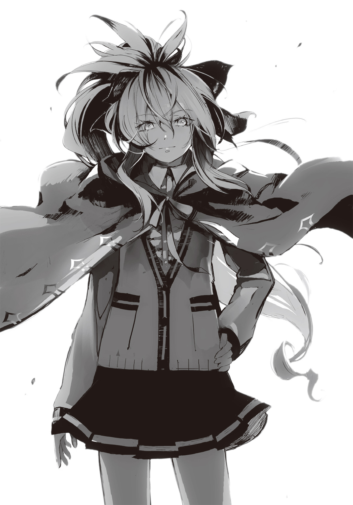
わずかに顔を出した朝日から飛び出してきたかのように現れた馬。まるで放たれた矢の如く、街道を疾駆する。馬上には揺れるスカート。
浜菊憐のパートナー、白妙菊だ。
二メートルを超える大薙刀を構えた彼女の姿は、どれだけ離れていても一目でわかる場違いなメイド服。目元を完全に隠す前髪と共にそれを激しくひらめかせながら、彼女は鐙の上に立ち、二匹のムカデ型に突っ込んだ。
人馬一体の動きを見せながら、大薙刀が素早い動きで鵺の体を斬り裂いていく。
傷口は、二種。鮮やかな切り口と、巨大な獣が爪で抉ったかのような三筋の裂け目。
大薙刀による斬撃と〈気〉〈爪〉の陣の合わせ技だ。
二匹のムカデ型は肉塊と化して街道を転がる。そこを、浜菊は悠然と歩み来た。
「浜菊と白妙、あやつらか!? 何故ここに!?」
ユニは愕然としていたが、俺は一週間前に総本山を発った時に見たものが見間違いではなかったのだと、納得していた。
馬車が揃い、乗り込もうとした際に隣の班の御者台から強い視線を感じ、そしてモノクロカラーのスカートの裾が見えた気がしていたのだ。
白妙が俺達の乗る円柱の周りを駆け、視線を向けてくる。
「昨夜、第七班通信士より連絡を受け、援護要員として馳せ参じました。......先程から助けを請う悲痛な通信が続いているようですし、少しばかり急ぎました」
その淡々とした言葉に俺とユニは顔を見合わせ......そして、すっかりピンパーネルの存在を忘れていたことに気がついた。
ユニがピンパーネルの名を叫ぶと、誰もが単なる障害物以上の意識を向けていなかった馬車の中より、ピンパーネルが文字通りに飛び出した。必死の形相で〈飛〉の陣を使って、俺達がいる土の塔の上まで飛び来る。
彼女の手には、防寒具が納められていると思しき大袋。
それを見た瞬間に、俺の、いや、俺達の脳裏に言葉が浮かんだ。
――これで行ける。これで、飛べる。
「酷い！ 皆さん本当に酷い!! どうして今の今まで大切な仲間のあたしを無視してたんですか!? あたしはみなさんにとっていらない子なん――!!」
「よくやったピンパーネル！ 今までで一番いい仕事をしたぞ!!」
何がですか!? と激昂する彼女の手からユニが大袋を奪い取った。
浜菊が土の塔にいとも容易くスロープを新たに生み出し、そこを昇ってくる。鵺や烏もまた彼女に続いてそこを駆け昇ろうとしたが、それは白妙が防いだ。
「第七班通信士、東にしばらく行くと六班の通信士が馬に乗って待機してるから、〈飛〉の陣が使えるならそこまで行ってしばらく避難していなさい。戦闘能力皆無の通信士はこういう場ではお荷物よ」
腕を組んだまま、尊大な態度で浜菊が言うと、ピンパーネルはまた何事か喚こうとする。だが......浜菊は興味ないものを見るかのような目を向けるだけでピンパーネルの口を塞いだ。
......涙目になってピンパーネルが飛んでいった。
ユニが懐中時計を出し、その文字盤と上空の飛翔体を見やる。
「まだ行ける。際どいが、まだ行けるぞ、ソラ！」
そうして俺もソラを見るのだが......思わず、言葉に詰まった。ソラは、座ったまま脂汗をびっしりと顔に浮かべ、腹部に手を当てていたのだ。しかも服に大きな血の染みが出来、そこで吸いきれなかった血が地に垂れている。
烏の短刀の先が皮膚や肉を斬っただけとは思えなかった。臓腑に到達していたのではないか。それを疑わせるには十分過ぎる出血である。
「大丈夫だ、問題ねぇ。見た目ほどには悪くねぇはずだが血がな......。止血だけ頼めるか」
ユニが苦い顔をしたまま即座に針と糸を出して、ソラの傷口に手を伸ばす。
「いけるのか、これで。ソラよ、これで......」
「問題ねぇよユニ、少し遅れちまうかもだが、気合いでカバーしてみせる」
「そうじゃないだろ!!」
思わず俺が声を張り上げたが、ソラは微笑み返すだけ。その瞳は大丈夫だと言っている。けれど夜明けの寒い空気の中で汗ばんだ彼の肌と、ユニの苦い顔が状況を如実に表していた。
誰もが口を閉ざし、浜菊が興味なさそうに肩をすぼめる。
「信じろ、アルク」
ソラのその言葉に、俺は苦々しくも俯くようにして頷くしかなかった。
ここでソラの言葉を否定するのは、冷静な判断だろう。......けれどそれは、遠回しに紫苑達を見殺しにしろと言うのと同じなのだ。
ソラは見捨てない。たとえ、自分を裏切った友と離れていった恋人、そして陥れた祖母や村のためとはいえ......ソラというこの男は、決して見捨てない。
わかっている。......だから、俺は頷くしかなかった。
「耳ッ娘、縫合にどのくらい？ ......そう、早くてあと五分、ね。その防寒具も着ける時間も必要なわけでしょ？」
浜口がやれやれというような口調で言うのだけれど......それによって、ユニの苦々しい顔がさらに酷くなる。
怪我を負ったソラ、着衣のタイムロス、当初の予定ポイントからずれている場所......それらを合わせて考えるに、時間が足りないのだ。
今すぐ飛ぶぞ、とソラが立ち上がろうとするも、浜菊が止める。
「そのまま手当てを受けていなさい。私がこの場にいることに感謝しつつね。......菊！ しばらく一人で耐えてて!!」
「憐様、お任せください」
淡々とした声で応じ、白妙は塔の根元で馬に跨がったまま大薙刀を振るい続ける。
「私の陣能力は並じゃないのよ。......あなた達は知っているでしょう？ これであの時の約束はチャラにさせてもらうわよ」
約束？ と、眉根を寄せる俺を得意げな顔で浜菊は見返す。そして、小さく言葉を続けた。
「......私達が負けたら、アンタのケツを舐める約束よ」
あー......あったような気がするなぁ。挑発された時に言われた気がする。
「これでようやくスッキリする。アンタのケツを舐めるのを考え続ける日常からおさらばできるわ」
トン、と浜菊が地面を叩くようにして踏んだ。
その瞬間、塔の上はもちろん、そこからはみ出た空中に及ぶまで青白い光の煌めきが生まれ、辺りを明るくする。陣の発動である。発現はもはや目に見えないほどに高速だった。
砂のような光が塔、そして地面に吸い込まれ......地鳴りが起こり、塔が揺れる。
彼女が今、何をせんとしているのか......俺はようやくわかった。
恐らく浜菊が発動させたのは〈土〉〈波〉。彼女の十八番。俺が新たな陣を焼き入れようとした際に参考にした組み合わせ。
そう、同じ陣なのだ。けれど......その才能の差は凄まじかった。
「府津羅ぁ!!」
メンラーの声。見やれば先程生き埋めにされた土の中から彼女が這い出てきていた。
メンラーが陣を発動させ、己に風を当てて飛翔。塔の上に一瞬にして飛び上がってきた。
かつて色気に満ちていた顔にはおぞましいほどに血管を浮かべ、服は生き埋めから脱出する際に破れたのか、ほぼ半裸。そこにあの柔らかそうな肌はなく、全身に筋肉の筋が浮かんで瘦せ細ったような状態になっていた。まるで、ゴブリンだ。
俺はナマクラに手を置くのだけれど......それを抜くより前に、メンラーが眼下へ下がっていく。――違う。塔が、伸びたのだ。
「今の私なら高度三〇〇〇メートルまでは到達出来る。その間に準備をしなさい」
これを経験した俺とユニでも驚くが、ソラに至っては呆気に取られ、浜菊を見上げていた。
「そうか、こいつが、アルク達と決勝戦で当たったっていう......あの時、総本山の空にアホみてぇに伸びていたのは......」
塔から顔を覗かせれば、大地は轟音を上げ、辺りの街道はおろか、森の木々、そして近くで戦っていた鵺や烏までもを巻き込み、凄まじい勢いで塔が土を吸い上げていた。
メンラーが飛翔して何とか追いつこうとしていたが、塔が伸びる速度の方がはるかに速い。
「あの女、裏切り者なんでしょ？ こっちで処理しておくから、気にしなくていい」
さらりと浜菊が言ってのけた。よくよく思い出してみれば、第六班は通信士と浜菊・白妙のコンビを残して壊滅したのだ。それはつまり......彼女らが、他の連中では手に負えなかった裏切り者である陣士を鏖殺した、ということである。
姿を見なかったわずかの間に、彼女らはどこまで行ったというのか。
「......ん？ なに？ いいから、速く準備しなさいよ」
冷たく横目で見られ、俺達は慌てて手を動かした。体内の窒素濃度を下げるために気玉を口に入れて高濃度の酸素を吸いつつ、防寒具で体を覆っていく。
口元はマフラーを巻き、帽子を被り、眼鏡の代わりにソラのと似たタイプのゴーグルを装着。ナマクラを腰に帯び直し、防寒具が入っていた袋を裂いて大太刀に巻きつけると、それを紐で吊るすようにして背負い、最後に革手袋を着けた。
全身を革のドレスのようなもので覆い、特注耳袋を着け、ゴーグルを額に置いたユニが、昇り行く朝日を眺めていた浜菊の背を見やる。
「ボクらのために荷を捨て、馬車を捨て、一昼夜駆け続けて来てくれたわけかの」
「別にあなた達のためじゃない。今回の一件で飛翔体を落とせれば仮免ではなく、本物の陣士にしてくれるって約束されてたから......自分達のためよ。七班に便乗させてもらう」
俺達はトーナメント戦を行い、その優勝コンビ以外は陣士にはなれないという、不思議なほど過酷なルールを課されていた。全員が何らかの薬物を摂取させられ、一～二年後には体に入れた陣の負荷だけを残して力を失うという酷いおまけつきで、だ。
いつもより重装備になったソラが立ち上がり、自分では見てる余裕がないだろうからと懐中時計に似た高度計を投げ渡される。
見れば、すでに二七〇〇メートルを超えていた。景色はすでにはるか遠くまで見渡せ、太陽に照らされる東側と、夜をいまだ色濃く持つ西側とで明暗がはっきりと見て取れるほど。
時折、わずかに空に浮いていた雲が下へと落ちていく。
酸素濃度もそろそろ怪しくなる高度だった。
「もうすぐ私の限界高度に達する。あとは、あなた達次第。......必ず落としなさい。私はただの人間に戻る気はない」
髪を、リボンを、マントを強風にはためかせながら、背中で浜菊は断言するように言った。
たとえ自分のためでも、彼女らは駆けつけてくれた。それは、素直に感謝すべきことだ。
だから、俺は言った。以前は口にしようとも思わなかった、彼女への言葉を。
「浜菊、ありがとう」
ソラの腰から伸びるワイヤーの先を俺は自分のベルトに接続する。
ユニもまた同様に、いつものように。
そして、高度三一五二メートル。塔の成長が止まると同時に、ソラの陣が発動。飛翔。苦しいほど急激に体を引き上げられる。
「......憐でいい。アルク」
強風に耳を覆われる中、かすかに、ほんのわずかに、彼女のそんな緊張を孕んだ声が聞こえた気がした。
府津羅ではなく、出来損ないではなく......アルクという俺の名を添えた彼女の言葉......。
飛び上がる中、その言葉が現実のものであったかどうかを確かめたくて俺は下を見る。
すでに塔は遠くなっていた。
けれど浜菊が、いや、憐が俺達を見上げている......そんな気がした。
「な、なんじゃ、あれは......！ 浜菊の奴、いったいどれだけの......!?」
ユニが驚くのも無理はなかった。大地に巨大なクレーターを生みながら作り上げた三〇〇〇メートル超えの塔。それが今、青白い光に包まれながら裂け始めていたのだ。
まるで蕾が花開くように、菊の花が如くに、細く長い土の波を大量にその身から生み出し......その先端部で大地を次々に突き刺していく。
それは、真上から見ると完全に、花の形。大地に咲いた巨大な土の花である。
大地を次々に突き刺す花弁の先端には鵺や烏、そしてメンラーがいるのかもしれない。もしそうだとすれば、このとてつもない規模の能力を一六かそこらの女の子が一人で生み出しただけでなく、末端に至るまで完全にコントロールしているということになる。
それはまさに、伝承にある神々の力を扱いし陣士の名にふさわしきもの。
俺達とはケタ違いの陣能力だった。
「えぇい気に喰わん!! 負けてられんぞ、ソラ、アルク!! 気合いを入れろ!!」
ユニの発破にソラ、そして俺の口元に笑みが湧く。上昇スピードが増す。
直径二キロにも及ぼうかという巨大な土の花に見送られ、俺達は上昇する。
見上げれば地上で見るよりはるかに大きくなっている、飛翔体。それはもう、碧空に穿った巨大な穴にしか見えなかった。
五〇〇〇メートル先に浮かぶその先端部を目指し、俺達は夜明けの光を浴びながら飛翔する。
高度は三五〇〇メートルを超え、体に当たる風はすでに氷のように冷たかった。
●４章『空に、沈む』
昇れば昇るほど、空は闇を薄れさせ、青みを増していく。
たとえ色味の薄い冬であっても、昇ってしまえば鮮やかな碧が顔を出す。
そこに浮かぶ飛翔体は、見る見るうちにその姿を巨大化させていった。
たまに雲があるが、それを除けば比較対象のない空だからこそ、ただ大きな穴が広がっていくようにしか見えないのだろう。
風の音以外、何も聞こえない。
すでに寒い。体が冷えてきていた。原因はわかっている。高度が上がれば気温が下がるのはもちろん、大地との摩擦が少なくなるため、風はその力を強くするのだ。
そして空中を飛び行くソラ達はその風をモロに受け続けるしかない。ゴーグルとマスクの隙間――わずかに露出している頰は鋸の刃で斬りつけられているかのように酷く痛んだ。
また、登山などと違い、体を動かすことなく急激に高度を上げているために筋肉が働かず、血も巡っていない。体温も低いまま。
しかし、だからこそ......体をくっつけている友二人の存在を如実に感じる。
アルクとユニ、彼らと接している部分だけが......温かい。
「ソラ、四〇〇〇メートルを超えるぞ！ もう一つ気玉を使うか!?」
アルクがマフラーで覆った口からくぐもった声を出す。その声は強い風に流されることなく、ソラの耳にまで届いていた。
アルクの目元が険しくなっているようだったが、それは苦しい、辛い、というよりはゴーグルを着けるために眼鏡を外しているせいなのだろう。
ソラは当然己の呼吸が速くなっているのに気がついていた。気圧は地上の三分の二以下。空気は薄い。だが、まだ使うには早い。気玉は貴重である。命綱なのだ。
「まだいい！ 手足は指だけでも動かして血を巡らせておけ！ ユニは耳もだ！」
血が滞れば凍傷になりかねなかった。気温はとうにマイナスに入っているが、風のせいで体感温度はさらに十数度下回っている。
ユニがやや苦しげな目をしてミトングローブによく似た耳袋を右手で揉む。
「現状でこれとは、予想以上に空は厳しい環境じゃの！」
「アルク、ユニ、お前らは自分の判断で必要と思ったら気玉を使え！」
それだけ言って、ソラは上を――空を見る。
これ以上面倒を見るまでもない。彼らなら適切に使い、低酸素と寒さに対応するだろう。それぐらいやってのける二人だ。その小さい頭に現代・古代を問わず多大な知識をため込んでいるユニに、素の身体能力だけならば総本山の陣士でも指折りのアルク......どちらも自分とは釣り合わないぐらいに、優れた者達である。
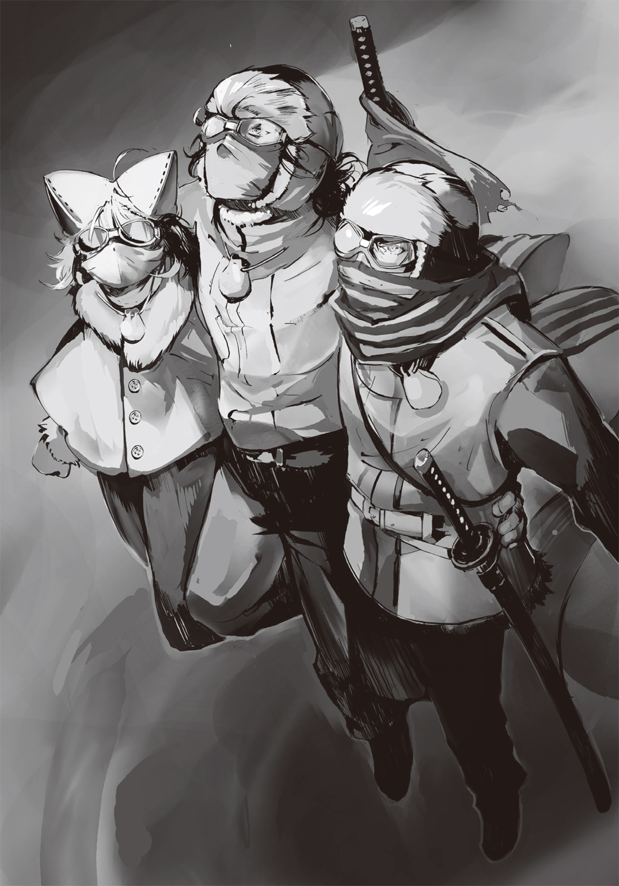
何も心配することはない。ただ、頼りにすればいい。
ソラは飛翔体、そして八〇〇〇メートル先の空を見る。そして、ただひたすらそこへ到達することだけを考える。
強さは相変わらずだが、風向きは悪くない。飛翔体にとっては向かい風。つまり、飛翔体の鼻先に躍り出ようとする自分らに毒粉は影響しないだろう。
また本来とは違うポイントからの飛翔となったが、その分は〈土〉遣いの陣士が三〇〇〇メートルもの高度を稼いでくれたことで、ロス分以上の余裕が生まれた。
......つまり、紙一重で、予定よりうまくいっている。
昇り切った後は頼れる友、二人を信じて任せれば良い。
だから......今ある問題はただ一つだけだった。
それは致命的に成り得る。だが、持ち堪えられる、と信じる他なかった。
「――――――――!!」
......何だ？
誰かが自分を呼んだような気がして、ソラはアルク達に視線を向ける。けれど彼らは自らの体を守りつつ、高度計を見やっているだけだ。
......であれば、今のは、誰の声だ？
ソラの視線は遠い地上へと引きつけられる。眼湖。空から見れば本当に楕円型の薄い水色の中に、綺麗な円形の黒色にも似た暗い青があって、まさに大地に開いた巨大な眼だ。
あれが、故郷。あそこに全てがあった。自分の想い出、生きる意味、そして苦しみもまた。
息が苦しい。飛翔体までの上昇時間は一時間を計算しており、気玉は大きなものでも二〇分程度しか持たない。体力を消耗させて酸素を使えばさらに短くなる。ソラが自身に割り当てた気玉はアルクとユニより少ないということもあり......まだ、使えない。もう少し耐えるのだ。
上昇時に二つ、飛翔体の上にアルク達を放って回収するまでの間に二つ、脱出して下降する際に一つ。計算ではそうしていたが、自分が脱出時に使用する分をアルクかユニに回したかった。恐らく彼らの方が酸素の消費が激しいはずなのだ。
自分のわがままに、何ら躊躇いなく付き合ってくれた二人。彼らを失うことだけは絶対に避けなければならない。
青白い煌めきを振りまくソラは、アルクとユニの背に腕を回し、二人を抱き締めるようにして、なおも上を目指す。
行けるのか？ ――行かなくてはいけない。そして、彼らを地上へ帰さなくてはならない。何としてでも......絶対に......。
「......何だ......？」
――今の感覚......かつて経験した気がした。
息苦しさ。焦り。そして、友の感触と彼らを守らねばならないとする気持ち......。
「......あぁ、そうか......〝落とし穴〟の中か......」
六年前の、眼湖。魚の落とし穴の中。天だった頃。
尾長ともう一人の男友達と共に、自分達はどこまで深みに達せられるのか......そんな度胸試しをしてしまった、あの早朝の......。
鮮やかな碧。どこを見ても、その色。溺れた友の体を抱き、尾長と共に水面を目指した。けれど、それは気玉を齧り、その濃密な酸素を吸ってなお......遠かったのだ。
意識なき友は重く、水面は遠く、焦りは際限なく......泳いでも泳いでも、踠いても踠いても水面はなお、遠く。
息が苦しい。体が重い。水がまるで体にまとわりつくようだ。息が苦しい。
わずかに明るい。それが、水面。いつもなら一泳ぎ、一踏ん張り。けれど今は......。
重い重い苦しい、重い......。重い重い苦しい、苦しい......。
青みが薄れ、視界が白くなっていく。それでもなお、泳いだ。
友を抱え、なおも、さらに、もっと......。
離せない。この手は絶対に離せない。友達だ。呪われた血だと虐げられる自分と一緒にいてくれる大切な友達なのだ。自分なんかと......。
祖母に酷く虐げられた夜、尾長や紫苑と共に必ず駆けつけてくれる、そんな......。
友が、重い。急に重さを増した？ 何故？ どうして？ そして、どうして？ どうして尾長、お前は手を放す？ 限界か？ 限界なのか、お前もまた溺れてしまいそうなのか。
尾長の悲痛な眼が痛い。彼もまた手を放したくないと言っている。けれど、体に力が入らないのか。もう、意識が飛びそうなのか。
尾長の手が伸びてくる。......届かない。彼の体はどんどん離れていく。
尾長の眼が語る。手を放せ、天君。首を振ってやった。それは出来ない、と。
誰一人だって、見捨てられない。見捨てたくない。友達なんだ。
いい、尾長、お前は行け。こいつはオレがどうにかする。だから、お前は......待て、尾長。どこに行くんだ？ どうして、沈んでいく。どうして、何故......。
まさかお前、溺れているのか、よせ、沈むな、水面を目指せ。お前一人なら水面まで簡単だろ、ほら、見ろ......!!
見上げた水面。明るく朝日煌めく湖面......そのはずなのに、見上げたそこはどこまでも深い青。青い、黒。闇の色。
それで、気づいた。
沈んでいるのは......自分達の方なのか。
明るい方へ明るい方へ。水面へ水面へ。そう思って泳いでいたはずなのに、いつの間にか沈んでいたのか......。溺れているのは尾長ではなく、自分と友の方なのか。
尾長が昇っていく。自分は友と共に沈んでいく。
沈む、沈む、沈む。
自分は到達するのだろうか。誰も到達した者がいない、魚の落とし穴、その......底へ。
沈む。沈んでいく。息苦しさと焦燥感を胸に抱き......青い世界へ沈んでいく。
ダメか。ダメなのか。やっぱり......自分は、ダメなのか。
嫌だ、沈みたくない。地上へ、あの青い空の下へ......でも、手は、離せない。
......手を放したい。
......彼女に会いたい。
彼女と共に笑い合いたい。
......いや、彼女だけじゃない。
みんなで一緒に、また......。
だから......手は、放せない。
「......だから......紫苑......」
水の中だというのに、喋ることが出来た気がした。
紫苑。好きだった。物心ついた時から、ずっと。
綺麗だった。愛嬌があった。一緒にいれば一日は一瞬でしかない。けれど、彼女の泳ぎを見ればあれだけ過ぎるのが早かった時間はぴたりと止まる。
その姿はまさに人魚か天女か......。息を呑み、時が止まる。
好きだった。同世代の誰もが、彼女を好いていた。
尾長も、そうだった。けれど......紫苑は自分を好いてくれていた。
そのことが嬉しかった。幸せだった。
村で生まれて感じる喜びはいつも彼女と共にあったのだ。
でも、彼女の好意を喜びきれない気持ちがあったのも間違いなかった。
自分は呪われた血筋。自分とくっつけば、彼女もまた、母と同じように祖母はもちろん、村から虐げられるのではないか......。
紫苑にお前なんかが......。誰も言わないかもしれない。けれど、そう言われそうな気がして、怖かった。
だから......そう、だから、度胸試しをしようと提案したのだ。誰よりも度胸がある、誰よりも深く潜れる......そんな海士としての才覚を証明すれば胸を張って紫苑と......。
子供じみた愚かな考えで始めてしまったゲーム。
他にいた連中はすぐに水面に逃げた。残った三人が意地になって深みを目指した。二人は友達だったし、二人共に自分と同じように紫苑を好いていた。だから、意地だったのだ。ゲームの意味は語らずとも全員がわかっていたのだから。
自分の気持ちを証明するようにムキになった。......そして、溺れてしまった。
紫苑、オレは......。
......あぁ、底が見える。青い世界の、底が......。黒い底。
きっと、まだ誰も見たことがない所......なぁ、オレ達がきっと最初だぜ。
もう動かなくなった友に声をかけようとした時、そいつは急激に動きだして口に何かを押し込んでくる。
よせ、なんだ、何を......。
「――目を覚ませ、ソラ!!」
耳元で爆発するような声に、世界は――暗く深い青は瞬間的に鮮やかな青へと変わる。
水しかないと思っていた口の中に、猛烈な勢いで空気が生まれる。
口内で玉が転がる。気玉。大量の酸素を内に閉じ込めたもの。
視界が鮮やかに変わった。抱いていたはずの友が二人になり、そして死んだはずの友の顔が、アルクとユニへ変わっている。
しかし見上げれば......〝底〟だけは、変わらない。黒い、闇の色。
「底......飛翔体......オレは......まさか、失神していたのか......？」
「まだ落下はしてないが上昇速度が落ち始めてる！ 首から下がってた気玉を押し込んだ！ 酸素を吸って、気合いを入れ直せ、ソラ！ 行くんだろ、あそこまで!?」
高度は四五〇〇メートルを超えていたが、それにしてもまさか意識を失ってしまったことがソラには信じられなかった。
体調不良等の前兆なく唐突に意識を失うのは想定していなかった。
ソラは嫌な予感を覚えつつ、アルクがめくった口元のフードを己の手で直す。
その指先が震えていた。酸欠の症状か、それとも......。
ユニが苦い顔をして見上げてきていた。彼は、気づいていたか。
そうだ、よくよく考えたら縫合をしたのも彼なのだ。その時、気づいたか。だが、黙っていてくれたということなのだろう。
......しかし、この段階で失神するとなると、実際の状況は予想以上に悪いのか。
地面はすでにはるか彼方。まるで地図を見ているかのような壮観さ。人が到達してはならない高度。落ちれば、迷うことなく死ぬ高さ。
もし、今自分が意識を失えばどうなるか、考えるまでも――。
その時、ソラの頭に恐ろしい考えが浮かぶ。
――紫苑、尾長、そして村......それらを救うために新しい友達二人を犠牲にしようとしていないか？
いくらあの夜、アルクと硬く手を握り合ったとはいえ......きちんと地上に戻ることを想定した上でのものだったはず。もし、片道切符になりかねないと彼が知れば......。
その考えは、ソラの〈飛〉の力を弱めるに十分だった。
「ソラ、上昇速度が落ちている、間に合わなくなる！」
「アルク、聞いてくれや。......今回はしくじっちまった。いや、しくじっちまってる」
紫苑達とアルク達、この二人を天秤にかけようとしている。それを感じて、ソラは吐き気を覚える。しかし、精神的な吐き気ではないかもしれない。これは......。
「ソラ、飛べ！ 故郷を、紫苑を、尾長達を助けるんだろ！」
「助ける。助けたい。だが......お前達を犠牲に......」
「今更何を言っている!?」
ソラよ。そう、ユニは苦い顔のままで、アルクとの言い合いに口を挟んだ。
「この吸い込む空気が金属のように鋭い寒さの中で、〈飛〉の陣を全力で遣いながらじゃ、無理もない。......じゃが、こちらを気にする必要はない。ボクもアルクも、とっくの前に覚悟の上じゃ」
なに？ と、ソラが訝しむと、ユニは左手を持ち上げた。
彼の革手袋はぬらぬらと赤く光っていた。
血。ソラの、血。しかも、半分ほど凍りついている。
やはり、傷口が開いたのだ。烏から受けた傷は臓腑に達しているのはわかっていた。
だが、持つと判断......いや、期待した。
ダメか。低酸素と寒さに耐えようと血流が増したせいなのか。
「さっきおぬしが意識を失いだした辺りでアルクも気づいた。じゃけど、さっきの言い分じゃ」
苦笑するような眼をするユニに驚くも、アルクの方は変わらない。ただ、行け、とその眼は語る。犬が獲物を見つけた時のような、真っ直ぐな、揺れのない瞳。
「ソラ、もしアンタがやめたいというのならそれでもいい。けれど......行きたいのに、救いたいのに、俺達を理由に降りる必要はない。......約束しただろ、斬ると。だから、ソラ......覚悟があるのかないのか、アンタ次第だ」
「仮にオレが上に行くまで持ち堪えられたとしてもだ、アルク！ 下に着くまで持つかどうかわかんねぇんだぞ!?」
「ソラ、俺達をバカにするな。......死ぬ覚悟なき生ぬるい戦いを重ねてきたわけじゃない」
「わりかし、ボクは生き残る気でおったがの？」
余計なことを言うな、と、アルクが渋い目をしてユニを睨んだ。
ユニは少し、笑い、そして、ソラを見る。
「ボクの陣を発動させたとて、飛翔体は真っ逆さまには落ちんじゃろ。......上まで連れていってくれれば、自力でも地上に戻れるやもしれん。......全ては、おぬしの覚悟次第じゃ、ソラ。ボクらのことなど忘れてしまえ。何の得にもならん故郷を救うという自己満足のためにその命を懸けられるバカか否か。全てはそれだけじゃ」
二人の言葉はキツく、甘く、優しく、そして......はっきりとしていた。
覚悟があるのなら無条件で最後まで付き合う。
そう言っているのだ。ソラが命を懸けるように、彼らもまた命を懸けると。
「......んなもん、問われるまでもねぇ。だが、お前ら、それでいいのか、本当に......!?」
ソラにとっては故郷であり、友であり、かつての恋人......。どれ一つ自分の手には入らないのだとしても、救いたいとする気持ちはある。
けれど、お前達には何の得がある？ それをソラは視線で問う。
「ボクはアルクのパートナーじゃ。こやつが行くというのなら行かざるをえんじゃんろう。それに......おぬしともそれなりに長いしの。まぁ、貸しを作っておくのも悪くないじゃろ」
やれやれ、というように苦笑しつつユニは言った。
「......ソラ、俺も自己満足だ。エゴだよ。友達のために、命を懸けられる男でありたい。そう思う。そう、願う。......だから、ソラ、あんたのために命を使わせてくれ」
ただ、友達だからという理由だけで彼らは命を懸けようというのか。
それだけで、死地に等しい高高度へ行こうというのか。
「それだけじゃ足りないか、ソラ？」
力強い視線を向けるアルクから、ソラはたまらず視線を逸らす。
その瞳を、見つめていられなかった。
「......あんたの我儘をぶつけられないほど......俺達は頼りないか、ソラ」
アルクの顔に哀願の色が浮かぶ。まるで離れていく主人を見る、捨てられた犬のよう。
――そうじゃない、そうじゃないんだ、アルク。そんな顔をするなよ。
見つめていられない。
こんな自分のために、命を擲ってでも助けようとしてくれる......そんな友達の顔は、これ以上見つめていられなかった。
涙が滲んでいるのを、見られてしまう。
だから、ソラは上を見た。
空を。飛翔体を。目指すべき場所を。
「釣りが出るさ」
言って、覚悟を決めた。我儘を言わせてもらう。
受け止めてくれ、アルク、ユニ。バカな男の自己満足を。我儘を。
「......力を貸してくれ。頼む。共に行ってくれ」
任せろ、と、アルクとユニは声を重ねた。
ソラは上昇速度を上げつつ、二人に己の腰に下がっている気玉の革袋を託す。また意識を失いかけたら押し込んでくれと頼んだ。
「ソラ、俺達を連れていけ。空の上へ。空の底へ。斬るべき相手のもとへ。アンタがぶっ倒したいと思う相手のもとへ連れていけ。......その、全てを叩っ斬ってやる」
ソラは友と共に上を目指した。まるで魚の落とし穴、そして、空の底のような、その場所を。......沈むように。
今度こそ自分は、その底を見ることになるのだろう。そんな確信を伴って。
気温のせいか出血のせいか、すでに下半身の感覚が消えていたが、もう、関係なかった。
胸は今、暑苦しいほどに、温かい。
「意地でもお前達を無事に地上に戻してやる。約束だ」
彼らを失ってはならない。そう思う。
だからこそソラは、そう、最後に付け加えた。
１
天の祖母が、死んでいた。
状況から自ら毒を呷ったと見られ、自責の念にかられたのだろうと村人達は判断したようだ。
それもあってか、軟禁されていた尾長は、今はもう、解き放たれていた。
だが、自由の身になったとて、紫苑には会えなかった。会わす顔がなかったのだ。
一人、湖の上の小舟に乗り、白っぽく薄い冬の夜明け空を、そして飛翔体という名らしい黒い影を、ゆっくりと見上げる。
何十キロも遠くに浮かぶ飛翔体だ、村から見上げようと変わらない。けれど、周りに人の気配がない湖の方が心が落ち着いて見ることが出来た。穏やかな湖の揺らぎもあって、小舟で横たわっていると酷く心地良く、体中の力を奪っていくかのようだった。
どうしてこんな酷いことになってしまったのだろう。
陣士が、飛翔体が......そんなことは切っかけでしかないような気もする。少なくとも、尾長にはそう思えた。
では、この冬でも仄かに温かく、多くの恵みを与えてくれる湖が有した呪いのせいなのか。
それも、違う。
陣士がこの村を訪れなければ一人の女性の人生を誤らせることもなかったはずだし、当然飛翔体がなければ村が滅ぶこともなかっただろう。そして、湖の呪いが存在しなかったら、飛翔体が来ようとも、村人達は当たり前に避難すればいいだけのこと。
......しかし、そのどれもが、尾長にとっては些細なことでしかないような気がした。
全ては、結局は、自分のせい。そう思う。
殺してやると生まれて初めて口にし、本気で人を殴り、殺す気で首を絞めたのでさえ......あれは自分の罪を天の祖母に負わせようとしたに過ぎなかったのではないか......。
紫苑が天との手紙が途絶えたと不安に苛まれ、夜な夜な眠れずに一人泳いでいるのをずっと知っていた。そして、他の男達と見合いが行われることが決まって苦しんでいる姿を見ていたら、天の祖母に「そんなにあの娘を想う気持ちがあるのなら......」と甘く囁かれたのだ。
だから、思いついてしまった。
それなら自分と婚約したことにすればいい、と、紫苑に提案した。そうすれば見合いをさせられることもなくなるはず。そうして、天君を待てばいい、と。
......そこに、もしかしたら自分にもチャンスがあるのではないか、という、やましさがなかったといえば噓になる。
無意識に、心の奥底で、そしてベッドで横になった時には明確に......やましさは胸にあった。
紫苑は、そう迷うことなく、婚約を受け入れてくれた。
ずっと好きで好きで、たまらなかった。ずっと苦しいほどに愛おしかった。でも......紫苑は天という最良の相手がいる。だから......。
でも、もう、いない。消えた。手紙すら途絶えたではないか。
頭の中に巣くう自分という名の悪魔はそう囁き続け、そして、偽装でも婚約したとする建前は......心にとどめていた気持ちを爆発させるに十分だった。
けれど、それすら紫苑は受け入れてくれた。
......彼女は、初めから全てを見透かしていたような気がする。
こんな惨めで哀れで、情けない自分を、何故紫苑は受け入れてくれたのか。天を失った哀しみか、怒りの反動か。
それとも、優しさか。哀れんだのか、この自分を。
「......違う、違う、もっとだ、もっと前に、全ての原因は......」
......本当の原因は、六年前なのかもしれない。湖の深みに潜った......あの時だ。
溺れた幼馴染みを必死に天は尾長と共に引き上げようとした。二人共に親から貰った大切な気玉を口にしても、まだ水面は遠く、友は重く、苦しさが身を包んだ。
そこで、尾長は諦めてしまったのだ。意識なく、すでに死んだと思われた友の手を放して一人水面を目指した。けれど、天は放さなかった。最後まで、友と共に上を目指し......そして、彼もまた、沈んでいった。
そして、かろうじて大人達に助けられて一命を取り留めたものの、水を拒否する体になってしまっていた。
もし、彼がまた水に潜れていたらずっと村に残ったことだろう。祖母から、水に入れぬ役立たずは村には置いておけぬ、となじられずに済んだことだろう。そして、紫苑と幸せな家庭を築いたはずだ。
自分だけ手を放した、あの瞬間こそが......全ての原因か。
友の命よりも自分だけでも助かりたいとした己の情けない弱さが、全ての元凶か。
友を見殺しにし、親友を遠ざけ、密かに想っていた相手を奪うようにして傷つけた。
全ては、自分のせい。この地獄のような状況を作り上げたのは、自分だけでも助かりたいとした己のせい。
何もしなかった。何も出来なかった。何もしてこなかった。やったのは嬉々として恥を重ね、親友を裏切り続けたことだけ。
もう、消えてしまいたかった。何もかもを消し去りたい。
過去も、記憶も、紫苑への気持ちさえも。
「天君、今、あなたは村を、紫苑を救うためにあの高い高い空の上へ行こうとしているんでしょう。普通なら信じられない、考えられない......でも、天君なら、やるんでしょうね。きっと。......そんなあなたが、好きだった。憧れていた。ずっと。......見届けます、そして全部を見届けたら......」
尾長は横になったまま、懐に入れていたナイフを空に翳す。家の隅で錆びていた、一番切れ味の悪そうなナイフだった。
「僕はいなくなります。だから......天君、帰ってきてください。ヤン・バーミに。そして、紫苑のもとに」
この赤く錆びたナイフで命を絶とう。肺に突き刺し、六年前にそうなるべきであったように、溺れ死ぬのだ。自らの血で肺を満たすのだ。
今の自分が出来る精一杯。でも、それで自分がいるべきでなかった場所に、本来いるべきであった男が戻る余地が生まれるはず。
己の苦しみが、せめてもの贖罪......。
「そんなんで死のうとか思わないでね」
声と共に船の上に腕が現れ、ナイフの刃を摑むと尾長から奪い取ってしまう。
尾長が体を起こすとポチャンという音と共にナイフは湖に沈み、代わりにずぶ濡れの服を着た紫苑が、船の上へと上がってきた。
「紫苑、どうして......」
「野暮用で外に。そうしたら、小舟が一つ浮かんでいるのが見えたから。......心配して」
入水でもするかと思ったようだった。当たらずとも遠からずである。
尾長は紫苑の顔を見られず、顔を伏せた。
「僕はいちゃいけないんだ。紫苑、君は......天君のものなんだ。それなのに僕は......」
「私は私のだよ、尾長。......そして、おばあちゃんの思惑があったりしたのかもしれないけれど......あの夜、間違いなく、私は尾長を選んだんだよ」
俯いた頭を胸で抱き締めるようにして、紫苑が言う。
その優しさが、好きだった。今は、その全てが痛い。
彼女の気持ちが今でも天にあるのは尾長も知っている。しかし、彼女は婚約したからと、結ばれたからと、妻としての義務を果たそうとしている。自分の本当の気持ちを殺し、この哀れな自分を優しさで包もうとしている。それが、情けなかった。辛かった。
「紫苑、ありがとう。でも、いいんだ。君は、君の気持ちに素直になっていい。本当にすまなかったと思っている。この償いは......」
尾長は顔を上げた。間近に見る紫苑の笑顔、そして潤みを湛えた瞳。胸が締めつけられるようだった。
初めて彼女の体温を己の体で感じた夜、心臓が止まるかと思った。
それとは似て非なる感覚に、尾長の両目に涙が浮かんだ。
「わかってる。好きにする。......だから、ここにいるの」
紫苑はニッコリと笑うと、腰に下げていた革の袋を取り出した。中には束になった天からの六年間に及ぶ手紙。半分近くが濡れていた。
尾長が悲鳴を上げながらその手紙がこれ以上水に浸らないようにと手を伸ばしたが、紫苑は......それを、空高く放ってしまう。
革袋が空を飛び、中から大量の手紙が舞い散る。
無数の便箋。たくさんの言葉。いっぱいの気持ち。
天と紫苑の、二人の思い出が......空を、舞う。
「ダメだ――天君!!」
尾長が絶叫を上げた。
何故紫苑がこんなことをしてしまったのかわからない。けれど、そんなことは後回しだ。一つでも多く拾わないと。そう思って絶叫しながら手紙へと手を伸ばすのだが......そんな尾長を、紫苑は押し倒すようにして抱き締めた。
「もういい。もういいんだよ、これで」
尾長は押し倒され、手紙舞う空を見上げていた。
青みの薄い、晴れた冬の空。そこに紫苑を笑顔にさせてきた手紙が舞っている。
自分が裏切ってしまった友からの、紫苑の最愛の人からの、手紙が......。
「私達はずっと一緒だった。気持ちだって、そう。二人して......あの人が好きだった。憧れるように、いつも二人して彼を見ていた」
苦しいほどに紫苑は抱き締めてくる。それでも尾長の目は、手は、心は、宙を舞う手紙に釘付けだった。
「一緒だったんだ。ずっと。天よりも、尾長はずっと近くにいた。......噓でもいい、僕と婚約しようって言われて......それに、気づいたんだよ」
一緒だった。でも、それは......一番ではない。それなのに一緒にいようというのか。
紫苑は、それで幸せだと言い張るのか。思い込もうとしているだけじゃないのか。
本当に、それで......。
「尾長と結ばれた時に、これでいいって本当に思えた。原因や経緯なんかどうだっていい......私は......私が、尾長を選んだんだ!! ......愛してる。今は、本当に......!!」
紫苑の声が震え、体が震えている。
尾長の手はまだ、宙へ伸ばされたままだった。
せめて一通だけでも......でも、まるで手紙は意志を持つかのように尾長の手から逃げていく。
動きたくても紫苑は尾長を震えながらぎゅっと力を込めて抱き締め続けていた。
手紙が、湖面に落ちていく。紙が水を吸い、水はインクを溶かし......全てを消していく。
あぁ、ダメだ。そんなこと、ダメだ。どうして、こんな、どうして......。
――気にすんなよ、尾長。これが、運命さ。オレ達が摑める、最良の......。
何故か、友の声が聞こえた気がした。
だから、尾長は首を振る。そんなわけがない。これが運命なわけがない。最良のわけがない。本当の運命は、最良は、紫苑と天が結ばれるのを自分が祝福している......そんな未来......。
尾長の歪んだ視界に、空に、黒い影が見える。......あそこに、彼はいるのだ。
こんな自分達を救おうと、人が到達できぬ場に向かっている。
恋敵と思うのさえおこがましいぐらいに憧れた親友。天君。彼が今、仲間と共にあそこにいる。
それを自分は見上げていることしか出来ない。彼の最愛の相手に抱き締められながら。
自分は何という悪人だろう。何て酷い奴なんだ。地獄があるのなら望んで堕ちていこう。
けれど......。
けれど......けれど......。
「すまない、ごめん、本当に。......でも、僕は、紫苑を......天君......!!」
尾長は、声を上げて泣いた。
何の涙なのか、わからない。でも涙は、声は、体から溢れてくる。
赤ん坊のように泣き続ける尾長を、紫苑もまた涙と共に抱き締め続けた。
「紫苑......紫苑......!!」
宙を彷徨っていた尾長の両腕が、紫苑の体を抱き締めた。
「紫苑、僕は君を愛してる」
２
空へ、空へ、空へ。
高度六五〇〇メートルを超えた時点で、すでに世界は地獄と化していていた。
マイナス三〇度を下回り、体感温度を大きく下げる強風が縦横無尽に吹き荒れる極寒の世界。吸い込む空気は鋭利な金属。体に当たる風は斬撃。体から体温と魂の光を奪おうとする。
冷たくて、寒くて、痛い。
飛び立つ前のも含めればソラは二つで粘り、アルクとユニは三つ目の気玉を口に入れていた。それでもソラはもちろん、アルクとユニもまた相当に辛そうだった。
寒さと息苦しさに体は呻くことすら拒否しようとする。それなのに、ソラ達を包む世界は驚くほどに鮮やかに碧く、美しい。
頭上の黒塊を除けば......。
飛翔体。近づくにつれておぞましいほどの巨大さを如実に現していた。
ともすると、自分達は今、空から青い海に浮かぶ真っ黒な島へ向かって落ちているのではないか......そんな、錯覚すらしてしまいそうになる。
それは、まさに空の底。
上を見上げた視界の半分をその黒色が埋めていた。しかし、近づき続けるにつれて、徐々にその表面の凹凸も視認できるようになっていく。
やや赤みを持った黒い表面は何らかの菌類で覆われているものと思われた。茸である。大小様々な黒いそれが寄生し、そして恐らく毒物である胞子か何かを地上にバラ撒いているようだ。
肌の痛みは寒さだけではなく、その胞子が皮膚に触れている痛みなのかもしれなかったが、よくわからなかった。
ユニが蠢き、耳を揉む。
「アルク、到着後すぐ動けるよう手足に血を巡らせておけ！ ここからさらに一〇〇〇メートル以上高度を上げるとなると、相当にしんどいはずじゃ！ それからソラ、先程から風に流されておる！ このままでは八〇〇〇メートル前に飛翔体の下に入り込む！」
わかった。ソラはそう嚙み締めるように言うも、ただひたすら上を見つめ、ひたすら飛び続ける。
それから水に溺れているかのような辛さを味わい続ける、おぞましいほどの長さに感じられた時間の果て......ついに、高度は七〇〇〇メートルを超えた。
気がつくと、いつの間にか視界が白くなっていた。
頭上にあるはずの飛翔体が見えない。ゴーグルが凍りついたか。......いや、酸欠か。
気玉二つだけで昇りたかったが、やむなく三つ目を口にしようとした。紫苑の気玉。けれど、動かそうと思った右手が動かない。意識が飛んでいるのではないかと恐怖を感じるも、肩までは動いていた。肘から先が自分のものではなくなっているようだ。......すでに、凍りついたか。
やむなく左手で首から下げていた気玉の袋を持とうとするが、親指以外がもはや動いてくれない。
ソラは、袋ごと気玉を口に含み、邪魔なものを吐き出した。
酸素を吸う。思いっきり。......けれど、視界は少しマシになっただけで、ほとんど返ってこない。やはり、ゴーグル？ 違う。血が、足りてない。だから右手が凍りついたのだ。血液の総量が減って、手足の末端の血管が縮んで体温が急激に下がったのだろう。それで、やられた。
足も同じだろう。流した血が凍みて骨肉ごと凍っている。
もういい。どうでもいい。些細なことだ。
ただ、今は飛べばいい。歯を喰い縛り、酸素を吸い......ただただ空へ沈み行けばいい。
寒い。痛い。辛い。重い。重い。重い。
湖の呪い、血の呪い、祖母の呪い......全てが、重たい。
ただ当たり前に生きるのに、自分はどうしてこんな重たいものを背負っているのか。
嫌だ。逃げたい。全てを捨てて。
でも......出来ない。
全ては生まれた時から決まっていたのか。自分が陣士の血を持って生まれてしまった瞬間からか、忌むべき子として父が生まれた時からか、祖母が怒りにくるった時からか、ヤン・バーミに陣士達が訪れたその時からか......いや、湖に恵みと呪いが生まれた瞬間から......？
違う。そんなことを言いだせば切りがない。世界の始まりの瞬間まで遡るのか、バカげている。仮にどこかに原因があったとしても、恨めはしない。バタフライ・エフェクトを解して羽ばたく蝶などいない。
結果として祖父となった陣士が、祖母をどれだけ傷つけたのかは知らない。他の女達は――焼き入れた陣の情報を漏らさぬために――皆殺しにされたというからおおよそは察しがつく。
そして忌むべき子として父が生まれ、自分が生まれ、村中の大人達から虐げられながら生きた。
辛かった。何度泣き叫んだかもわからない。けれど、そこにはいつだって紫苑達がいてくれた。大人達からどれだけ虐げられたとしても自分を彼女達は支えてくれた。
苦しみを与えられ、そして優しさも与えられた。自分の人生は与えられてばかりだ。
自分は一体何が出来ただろう。何をしてきたのだろう。自分で決断し、手に入れたものは何だ？ ――陣か。〈飛〉の陣。祖母に虐げられた原因の血に従い、陣を入れた。そして、村に帰れず、紫苑を失った。
いや、失ってなんかない。失わないために......飛んでいる。
友と共に。自分のエゴに、命を懸けて付き合ってくれるそんなバカで、強くて、呆れるほどに純真で、以前など、自分なんかとコンビを組みたいなんて言いだすような......そんな......。
すまねぇ。ありがとう。他に言葉が見つからない。
もし、恩返しが出来る未来があるというのなら、その時はこの命なんかくれてやる。命懸けでお前達を助けてやる。
思わず口元に笑みが湧く。視覚がわずかに返ってきた。
視界の半分が黒い。飛翔体。あと、少し。
けれど、またすぐに白くなっていく。体の力が抜けていく。
まだだ。まだ、死ねない。せめて上へ。あの上へ。
この感覚、血だけじゃない。陣能力の使いすぎか。生命力が枯渇しつつあるのか。
せめて、あと少し。あと......数百メートル。
意識を保て。目を覚ませ。己に言う。自らの顔をひっぱたいてやろうとしたけれど、動くのは胸の内だけ。左腕すら、もう、動かない。
どうする。どうすればいい。何なら、動く？
......口があった。歯だ。舌を嚙む。酷い痛み。血が噴き出す。
もういい。もういいんだ。だから、底へ。あの黒い底の向こうへ。
ただただ碧いだけの空を見せてくれ。
紫苑、迷惑かけた。尾長、後を頼む。そんな顔をするな。俯くな、泣いてんじゃねぇ。お前はいつだってそうだ。
気楽に笑って、図々しくしていればいい。ほら、オレを見ろよ。いいんだ。いい。これはオレの望みだ。
泳げないオレじゃ、きっと紫苑を幸せにはできなかった。だから......。
「気にすんなよ、尾長。これが、運命さ。オレ達が摑める、最良の......」
胸の内で言ったのか、口に出した言葉だったのか、わからない。けれど、それを唱えた時、舌は二つに分かれていた。口内を満たす血と共に肉片を吐き出す。
そして、残っていた気玉を完全に嚙み砕き、大量の酸素を吸い......そして、飛びかかる意識を繫ぐための咆哮を上げる。
白んでいく世界が急激に色味を持つ。黒い空の底は見えない。
赤い壁だ。赤い肉の塊が横にある。轟音を立てて風を切る、肉の壁。その側面を走るようにして、なお飛ぶ、飛ぶ、飛ぶ。
そして――碧空の世界に、ソラは仲間達と共に躍り出た。
抜けた。
空にあるのは濃い碧と太陽。それだけ。
人を拒む八〇〇〇メートルオーバー。そこに、到達した。飛翔体の、上だ。
「やったぞ、やったのじゃ、ソラ！」
ユニの呻くような声に、ソラは笑みを作る。けれど、ちゃんと笑みを作れたのかどうかは自信がなかった。
アルクが真っ直ぐにソラを見ていた。
「行こう、ソラ。最後まで一緒だ」
あぁ、共に行こう。一緒だ、アルク、ユニ。最後まで。なぁ――。
３
高度八二五四メートル。ついに、飛翔体の上に、出た。
「やったぞ、やったのじゃ、ソラ！」
飛翔体は下方を菌糸類に寄生させて黒かったが、側面や上は生肉のような赤色だった。まるで、臓物の海。大中小様々な形の、ぬらぬらとした肉塊が集められ、固められていた。
その中に、青白い煌めく粉塵を生む場所が複数箇所見える。数百メートル先のものもあれば、数キロ先のものもある。
その一番近い場所、即ち進行方向の一番先頭にあるそこにユニを送り込む......それが、俺の役割。仕事。そして、使命。
俺達は飛翔体より一〇メートルほど上昇し......そして、下降が始まった。
......もう、フライトは、終わったのだ。
これは戦いだった。命を燃やしての、飛翔。
そうなるのが、わかっていたのだ。そしてあの出血、そして水平飛行とは消耗の度合いが違う垂直飛行......相当に陣の力を使うのはソラにはわかっていたのだ。
彼は命を懸けると言った。だが、それは違う。死を覚悟しての飛翔だった。
だからこそ、彼はさっき俺達を気遣ったのだろう。疑問を持ったに違いない。自分のエゴの犠牲にしようとしていないか、と。
わかっているさ、ソラ。全部、わかっている。
あの出血では、地上で安静にしていても辛いはずだ。なのに......ソラ、それでもあんたは飛んだ。
胸の奥底にわずかに悔しさが湧いているのをどうしても感じてしまう。
ソラには俺の知らない人生があって、それが今でも彼の心の多くを占めている。
......ソラとて人だ。二〇年やそこら生きていればそれは当然だし、友達となってそう時を置いていない俺なんかが全てを知っているわけでもない。
当然だ、当然なのだけれど......何だか、悔しいとも、思う。
かつての恋人、そして、かつての友人にして大切なものを奪った相手......それでもソラは自分の命を差し出してでも助けようとしている。
それだけ、好きな、そして大切な人達なのだと、嫌でもわかる。
だから......妬いてしまった。
そう、俺は尾長と紫苑に嫉妬していたのだ。俺の最初の友達であるソラが、俺やユニよりも尾長と紫苑を大事に想っていると感じて......嫉妬した。
だから故郷に、陣士になる前に戻りたいかと馬鹿げたことを尋ね、ソラが頷いた瞬間......思わず、俺は全てをぶちまけてしまったのだ。
もっとうまく伝える方法はいくらでもあるというのに、叩きつけるように尾長と紫苑の婚約を告げてしまった。
......今ならわかる。俺は、悔しかったんだ。
ソラが紫苑と結ばれるのはいい。そうなればいいと思う。......けれど、故郷にずっといたら......陣士にならなかったら......俺達は出会えなかった。友達になんてなれなかった。
だから......悔しくて、嫉妬して、それで......。
笑ってくれ。なじってくれ。女々しいと蔑んでくれてもいい。
けれど、贖罪をさせてくれ。
そして、ソラ、あんたのためになることをさせてくれ。
力になりたいんだ。
友達が大切なものを必死に守りたいとする気持ちを、俺の剣と魂で支えたい。そう、本気で思えるんだ。
だって......そういうもんだろう。友達って。
......あと少しだ。
行こう。行って、全てをぶちまけてやろう。
だからソラ......独りでいこうとするな。
全身を、そして吐血で顔すらも赤黒く染めて凍らせて......まるで、全てをやり終えたような顔をするなよ。
これからが俺とユニの見せ場なんだ。見ていてくれ――いや、一緒に行こう。ソラ。
これまで俺達は一緒にやってきた。これからだって、それでいいじゃないか。
だから、なぁ、ソラ――。
「行こう、ソラ。最後まで一緒だ」
――あぁ、共に行こう。一緒だ、アルク、ユニ。最後まで。なぁ――。
ソラが微笑みながら言った......ように、聞こえた。
本当に言ったのかどうか、自信はない。風の音が大きすぎる。
もしかしたら俺の妄想かもしれない。けれど、言ったように聞こえた。
......わかってる。ソラの口は、最後、飛翔体の横を飛び抜ける際に咆哮を上げた時のまま開いて凍ってしまっている。だから、言葉なんて――いや、幻聴でも妄想でも、何でもいいじゃないか。
......ソラ、行こう。あんたの大切なものを、守るために。
「行くぞ!!」
ソラの血で赤くなっていたゴーグルを指で擦り、俺達と彼の体とを繫ぐ腰のワイヤーを匕首で切断する。
「アルク何を――いや、わかっておる!! ソラは......えぇい、行こう!!」
俺は苦々しい顔をするユニを抱え......ソラの体と離れた。
振り返ってみれば、彼は口元を赤く染め、呆然とした顔をしているようにも見えたけれど......笑みが浮かんでいる気がした。
ソラであった体が、俺達と分かれ、落ちていく。空へ沈み来て、そしてまた空の中へと沈んでいく。
一緒に行こうという俺に、彼は応じたと感じた。......だから、だろう。マイナス四〇度を超える世界でありながら......胸は温かい。
ソラは今、俺達と共にある。
強風が吹き、俺達の体は激しく押された。足の下に飛翔体が滑り込むように現れ、そこに着地。硬い。表面は凍った肉のようだ。
ユニと共に気玉を頰張り、大太刀を抜く。巻きつけていた布を背後からの猛烈に吹きすさぶ風に任せて飛ばし、ユニを背負った。
「目標地点は先頭の〈飛〉の陣がかかっている箇所じゃ！ 背後からの風が強い、調子に乗って飛び跳ねると通り過ぎるぞ!!」
吸い込む冷気の鋭さに咳き込みつつも、ユニは大音声を上げた。そうでなければ風の音に声を持っていかれてしまう。たとえ耳元であっても、そうなのだ。
「余計なことを考えている余裕はボクらにはないぞ！ 集中じゃ!!」
余計なこと？ それを考えているのはユニ、お前だけさ。
ゴーグル越しに飛翔体、いや、直径五キロもの赤い舞台を見る。
空気抵抗を減らすためか綺麗に平らだった。けれど、俺達の着地に反応したのか、表面を覆っていた薄い氷を己の肉ごと割って、それは急激に波打ちだす。
そして、次々に鮮血を迸らせながら大木ほどの太さがある蛇のようなものが首を擡げて現れる。それらの先端部にあるのは、しかし蛇の頭ではなく、人間の女性、その上半身だ。体は人間よりも明らかにデカい。細く骨張った二メートルほどもある左右の腕を広げると、その印象はなおのこと強まった。
まるで尻尾を赤い地に繫げた巨大蛇女だ。それらがまるで、赤い巨木の林を思わせるように周囲一帯に次々に現れ、俺達の行く手を塞いだ。
そして......彼女らのボディを含め、飛翔体表面の至るところで鮮血と共に肉が裂かれ、何百、何千という拳大の眼球が現れて、俺とユニを見据えた。
「一体の鵺ではなく、複合型というやつなのじゃろう！ 神経まで融合していなければ一部に傷を与えても全体としてはさほど怯まんやもしれん、警戒しろ！」
目標とする地点までは一キロほど。大した距離じゃない。背後からの強風を考えれば、すぐだ。
しかしながら立ち塞がる蛇女は数十体を超えている。少しばかり幸運なのは......その胴回りが大太刀の二メートルもの刃渡りで足りないものはなかったことだろう。
故に、躊躇うことはなかった。
「斬り進む！」
蛇女どもが一斉に動く。全長は十数メートルを超えるそれらは間合いに捉えると同時に身をくねらせながら俺達を捕まえようとその両手を伸ばし、前後左右から一斉に迫り来た。その開いた手の指先に熊のそれよりも巨大で鋭い爪、風切り音を上げる。
寒さで強ばる筋肉を意志の力で無理やりに従え、俺は息を吐きつつ大太刀を左横手に。足に意識を向けた。悴んだ筋肉繊維が切れそうな感覚の中......俺は、斬撃を放つ。
居合いのように左足で体を前へ送り出しつつ、大太刀を腕ではなく体全体を使って、払う。一刀で、二匹の蛇女の胴を薙ぐ。背後からの猛烈な風を受けているので、技の伸びが尋常ではなかった。
胴を薙ぎ、蛇女を背後でのたうち回らせながらも、なお、俺は足を止めることなく、斬って斬って、斬り進む。
全身を使って大太刀を振り抜き、そのまま体を止めずに流されるまま、引っ張られるままに宙へ跳ね、一回転。その間にも風は俺達を推し進めてくれる。
まさに鉈で竹を切り進むかのように、ひたすらに蛇女と飛翔体を斬り離し、長い手を骨ごと断ち、頭蓋を割り、ガラスを引っ搔いたような甲高い悲鳴を次々に上げさせていく。赤い巨木の林をさらに赤く染める。
けれど、時がかかった。どうしても、かかる。世界はマイナス四〇度を下回る。吹き飛んだ血を浴びれば即座にそこが凍りついてしまうのだ。そのため、俺はジグザグに進む他ない。
舞って、斬って、舞った。そして、斬った。上げたくなる雄叫びを内に込め、目の前に立ち塞がる赤い巨木を、ただ、斬った。
だが......ついにその刃が止められる。
体ごと振っていたために、刃が蛇女の体で受け止められると俺はつんのめったようになって、危うく転倒しかけた。
踏ん張ってそれを堪えて見てみれば......やられた。向こうも頭があるのだ。蛇女三体がその身を合わせて捩り、その骨や筋肉を絞めて大太刀を止めていた。
大太刀と共に体の動きが止まったことにより、蛇女達はまさに前後左右はもちろん、上方からすら、包み込むようにして俺達を一斉に狙った。
「アルク、使え！ 陣じゃ！」
そうして俺の背にぶら下がっていたユニが取り出したのは、油の小瓶と気玉。彼が言わんとしていることは即座に理解したが......躊躇いを覚える。貴重な気玉を......。
「ソラが残してくれた気玉もおぬしは持っておるじゃろ!! 今使わずにいつ使う!?」
胸に問う。いいのか、と。ヤン・バーミの村人達が宝として、命綱として大事にしてきたものを......アンタが無理して残してくれたものを......。
胸は応じる。......尻尾を焦がさないように言っとけ、と。笑うように。
俺はマフラーの下で口元を笑みに歪め、気玉と油の小瓶を受け取るとダグラスを取り出した。まとめて全てを左手で持つ。
「尻尾焦がすなよ、ユニ！」
気玉、そして小瓶を握りつぶして砕くと共に、ダグラスのフリントを回して、火花を散らす。本来であれば気温が低すぎてオイルライター自体は使い物にならないが......しかし、高濃度酸素に塗れた大量の油に火を点すだけならば、フリントの火花だけで十分だ。
それは、まさに魔法使いの技。酸素と油が強風に煽られて流されたがために、空中を炎が走ったのだ。まるで俺の左手から炎を生み出したかのよう。
風下の蛇女達を一瞬にして猛火が包み込む。その熱は凍りついている防寒具で身を固めた風上の俺達ですら感じるほどだった。
即座に〈炎〉〈波〉の陣を発現、発動。俺達を取り囲むように炎で防御壁を張ると共に、目標ポイントである〈飛〉の陣がかけられている部分まで、炎を走らせる。前方の蛇女達が絶叫しつつ、炎に身を悶えさせた。
俺達を包囲しようとしていた他の蛇女達までもが熱と炎に動きを止めた。
この隙に俺は陣を解き、左手の炎を払いつつ、大太刀を握り直す。
今度は舞うように、ではなく、しっかりと地に足を縫いつけるように、全身の力を込め、半ば強引に三体の蛇女の胴を薙ぎ払った。
そして、猛火が作る道を駆ける。足が炎に包まれてもなお、俺は大太刀を振って牽制しつつ、一直線に突き進んだ。防寒具が焼けても肌に到達する前に火は風で消える。
一方の蛇女達は一度火がつくと消えることなく、踠きながらも激しく燃えていった。蛇女の胴は脂が多いのだ。ほとんどが脂と太い背骨だけ。極寒の中で動くための対策なのかもしれないが、それによって燃え始めればそうは消えないようである。
......問題は大太刀も異常な速度で脂が巻き始めることだが、それもまた、炎が解決した。
刀身の脂は炎が喰らってくれる。赤い炎を纏った大太刀で、俺はひたすら斬りに斬り、そしてなおも突き進んだ。
「あそこじゃ、アルク!! 守ってくれ、頼むぞ!!」
蛇女の群れの向こうに、直径四メートルほどのひらけた空間があった。そこから空中に青白い煌めきが放たれており、〈飛〉の陣がかけられている場所だと一目で知れた。
そこに躍り込むと同時にユニは俺の背から飛び下り、地に手をつくようにして陣を発現させた。〈陣〉〈封〉。青白い光の文字が生まれ、砕け、その直径四メートルのエリアへと吸い込まれていく。
俺は彼を跨ぐようにして大太刀を構えると共に、周囲から再び取り囲もうとしてきた蛇女達を薙いでいく。血飛沫はもう、素直に浴びた。避けようがなかった。
「よし、かかった!! うぐっ!? ......こっ、これは、重いの......ッ!?」
ユニが言うよりも早くに、唐突に風向きが変わった。真後ろから吹きつけていた強風が突如として上から叩きつけてきたかと思えば、続けて下から掬い上げるものに......と、次々に変化し、荒れくるう。
そして、それと同時に足や腰、腹の底から力が抜けるような......そんな、落とし穴に落ちた時の感覚が俺の体を走った。
宙に飛び跳ねるようにして大太刀を振るっていた俺は危うく吹き飛ばされそうになるも、即座に大太刀の先端を飛翔体に突き刺して再び足をつける。ユニもまた、身を伏せ、折りたたみ式のナイフを取り出すと同時に飛翔体へ突き刺して支えとしていた。
たとえるなら、六個の風船で吊り上げていた薄っぺらな肉のコイン、そのうちの先頭部分――俺達がいる場所――の糸が切られて垂れ下がったのだ。
頭ではそれが理解出来ていたけれど、上にいる身からすると足下が傾いたというよりは、風向きがやや変わり、それ以上に飛翔体の中央から後方が迫り上がりだしたように感じる。
だが、それより何より、風が凄まじいことになっていた。まさに文字通りの暴風だ。蛇女達でさえ、思う通りに動けず、俺達を攻撃できないでいる。
高度計を見る。八一二〇メートル。一気に一〇〇メートル以上降下したか。もしかしたら犬の垂れた舌のように、大きく傾いているのかもしれない。だとすれば風がこの異常な荒れ方をしているのもわかる。
......もはや、飛翔体の上に張りついている俺達には重力方向がわからなかった。
「クソッ、これで、どこまで......！」
おぞましく、痛い。
寒さは過ぎた。冷たさも過ぎていた。風がもたらす体感温度の猛烈な低下は純粋にもう、痛みでしかない。
ヘタに大きく息をすると肺が凍りつきかねないほどの空気は、無慈悲な暴力以外の何ものでもなかった。
呼吸が荒くなる。体が酸素を求めている。
体温を上げようと必死だった。しかし吸えば吸うほど体温を失う。
「使うぞ、アルク！ ボクはもう最後の一つじゃ!!」
俺もまたやむなく新たな気玉を口へ放り込み、嚙み砕いた。
ゴーグルの内側が凍りつき、視界が完全に失われる。けれど、それでも気合いのある蛇女の一体が俺に向かってきたのを肌で感じた。
今大太刀を放してナマクラを抜くと、風に俺の体を持っていかれるだろう。
俺はやむなくさらにもう一つ俺に配分された最後の気玉を取り出し、これと小瓶を手に握り、先程同様、炎を放つ。即座に〈炎〉〈波〉の陣でコントロールし、俺とユニを囲むように半径三メートルほどの円を描くようにして防御陣を作るのだが......そう長く持つことなく風に蹴散らされた。
とはいえ、その炎が消えるまでの数秒間に、俺は瞼をギュッと閉じてゴーグルの下から指先を差し込んで内側に張られた氷を剝ぐ。ゴーグルの中で目を開けようとしたが、睫同士が瞬間的に凍りついて開けるのに痛みが走った。
「地上が見えるぞ、アルク!!」
暴風の中、かろうじてユニの声が聞こえる。その声と共に視線を巡らせれば、蛇女の群れの隙間から確かに緑が――大地に広がる森が見えた。
飛翔体が水平に飛んでいれば、大地なんて見えるわけがない。
つまり、俺達の足場は今、大きく傾いていることを示していた。
飛翔体奥側を見やる。蛇女の群れの向こう、二、三キロ先まで見て取れる。つまり、つんのめったように、ケツが上がっている――俺達の足場だけが垂れ下がっているのではなく、飛翔体そのものが大きく傾いているのだ。
高度計を見れば七〇〇〇メートル台半ばに突入。異常な降下速度。ユニの予想通り、ギリギリで浮いていた飛翔体が、六分の一の浮力を失ったことで滑空が始まっているのだ。
叩き、そして斬りつけるような風はなおも続く。俺達は飛翔体にしがみつくので精一杯だが、同様に蛇女達もまた、風に薙ぐ葦のように飛翔体に押しつけられ、もはや脅威ではなかった。
高度六九六〇メートル。数分と経たずに一〇〇〇メートル以上の降下。叩きつける風は相も変わらずに強烈で、浴びた蛇女の血飛沫によって防寒具の表面は完全に凍りついていたけれど......それでも、明らかに風の温度が上がったのを肌で感じる。......飛翔体の震動と共に。
飛翔体に張り付いていたユニが、ハッとして顔を上げる。
「しまった、陣が解かれた！ かけ直す気じゃ!!」
ユニが叫ぶ。けれど、意味がわからない。
ユニに封じられたのを理解し、陣を解くというのはわかる。......けれど、かけ直すというのは、誰が......？
飛翔体が揺れに揺れ、そして......急激な降下を始める。いや、これは......。
まさか、と思い、俺は辺りを見回した。先程まで彼方に見えていた青白い光の煌めきを放っていた五箇所から、その光が失われていた。かかっていた〈飛〉の陣が全てが解かれたのか。
飛翔体はすでにほとんど縦になっていたがために、これはもう、滑空ではなく、落下である。
落下の速度は尋常ではなかった。大太刀にしがみついてなお、全身を風に持っていかれる。足を飛翔体の表面につけていられない。
ユニの支えだったナイフが飛翔体から抜け、彼の体が浮き上がる。凍りついた防寒具表面の氷を砕きながら腕を伸ばし、俺は飛ばされかけていた彼の体をまえた。
「助かった！ しかし......もしかするとと思っておったが、案の定じゃの！ アルク、飛翔体の中央を見ろ！ あそこに、まだ意識がある者がおる!!」
「ユニ、何言ってる!? 意識があるって、どういう意味だ!?」
白く凍ったゴーグルのレンズ越し、眼鏡のない俺の目でもそれは如実にわかった。
飛翔体中央部分。そこだけが血飛沫を上げながら迫り上がっていた。
まるで踏み固められた固い地面から雑草が芽生えるように、凍った表面にヒビを入れて割り、砕き、そしてその下から何かが現れようとしている。
「恐らくあれがこの飛翔体の頭脳にして本体じゃ、奴はまだものを考え、陣を使える！」
「だから、何を言って......!? 陣を使えるって......!?」
飛翔体の中央をぶち破って現れたのは、俺の想像だにしないもの。
小山のようなものが出来ていた。けれど、その小山を成しているのは苦悶の表情を浮かべる大勢の......人間の体。まるで皮膚を剝いて、赤い肉を晒す人体を小山になるまで積み重ねたかのようだ。
問題はその頂上。そこに、下半身を小山に埋めているものの......誰かが、いた。下の赤い肉の塊とは違う、ごく普通に皮膚のある裸の人間。
俺はユニを抱き寄せ、彼もまた大太刀の長い柄にしがみつかせると、俺は懐から単眼鏡を取り出してゴーグルに当て......そして、見た。
小山の上にいるのは、体毛を全て失った老人。そして、その体に焼き入れられた複数の〈飛〉と〈肉〉の陣。――陣士だ。けれど、その下半身はどう見ても鵺と一体化して......。
「アルク、おぬしに言っておらんかったことが一つある......知れば躊躇いが出るかと危惧して黙っておったのじゃが......」
「何だ、何が言いたい、ユニ......!?」
裸の老人、そしてその下半身で繫がる折り重なった赤い人体の首が唐突に、悲鳴にも似た雄叫びを上げ始める。
その瞬間、老人の周囲に六個の〈飛〉、そしてそれに重なる六個の〈肉〉の陣が発現する。
「鵺は......陣士から造るのじゃ」
４
鵺を造るには陣士、または陣士の適性を有する者を要として用いる。それを芯とし、用途に応じた様々なものを付け加え、植え込み、はたまた発現させ、肥大させ......そして、造り上げるのが人ならぬ化け物――鵺。
戦争末期、陣士として使いものにならない低い適性しか持たない者、または適性を持つ捕虜の有効利用として用いられた技術。
「身内を化け物に造り替える狂気の陣じゃ！ じゃからこそボクらの先祖は、鵺の陣を封印するために......クッ!! もう〈飛〉が発動したか!!」
老人の周囲に浮いていた〈飛〉の陣が砕け、飛翔体に広がっていった。けれど、俺達の周りにはその青白い光の欠片はやってこない。封じられると察し、あえてバランスが崩れるのを覚悟で、他の場所にかけたのだ。
「じゃ何か、ユニ!? 俺がこれまで殺してきたのは俺達の親類や祖先だったってのか!?」
「じゃから気にするなと言っておる!! 当時から生き長らえている鵺などまずおらん!! 野山を跋扈している鵺は、自生し、自ら新たな生態系を生み出し、その中で鵺として生まれたものじゃ!! 元にも戻れん以上、殺す他ない化け物には違いない!!」
鵺は、何故あぁも人体によく似たパーツから出来ているのか。生まれた時から当たり前に鵺がそこいらにいた俺は、それを不思議に思うこともなかった。
けれど、今のユニの言葉が本当だというのなら......今更ながら、納得がいった。
「鵺の陣の応用で、戦闘に耐えうる陣士をあえて用いて、その意識をある程度保ったまま肉体を鵺化させる技術も存在すると文献にはあった！ まさかと思っておったが、この飛翔体は緊急時に対応可能なように陣士を一体、植えつけておったのじゃ!!」
「だから、何が言いたい!?」
「あの肉山の上にいる陣士を倒さねば......この飛翔体は、再び浮き上がる!!」
その言葉を裏付けるように、俺達を叩きつけていた暴風が急激に弱まり始める。降下速度が落ち始めていた。しかも、縦になっていた飛翔体が再び水平になろうとしているようだ。
水平になれば落下に対する空気抵抗が増大し、降下速度はさらに落ちる。そうなれば浮き上がりやすくもなるのだろう。
とはいえ、もしあの老人を倒すとすれば水平にならなければ俺は駆けられない。けれど、水平になるのを待って手間取ってしまえば......。
現状、滑空した関係から短時間とはいえ、位置エネルギーが運動エネルギーに変換されて、飛翔体は大きく前進しているはずだった。全てがうまくいったとして、地上に落ちるまでにまた相応の距離を飛ぶだろう。
飛翔体中央の肉山へは一キロほど。その道中には――現状風に叩きつけられて伏せって凍ってしまっているものの――蛇女が数十体。時はどうしても喰う。......間に合うのか。
俺は気玉を取り出す。手持ちはソラが残してくれた二つだけ。ユニの手には、もうない。
......気玉は、ギリギリで、持つ。問題は時間と高度。そして......ん、何だ？
赤い飛翔体の表面から大きな手が生え、俺の体を摑んでいた。いや、手だけではない。次々に周辺から芽吹くように、蛇女が新たに生えてきて、俺達に覆い被さってくる。
「押し潰す気か!? まずいぞ、アルク!!」
飛翔体はすでに体勢を直しつつあるのか、俺の足の裏はすでに凍った肉を捉えていた。
大太刀から手を放し、ナマクラを抜く。居合いで覆い被さろうとしていた蛇女達を斬り、そのまま大太刀から離れずにひたすらに斬った。頭から被さる血は浴びる他はない。
防寒具が湿っていく。重くなる。けれど、不思議と即座に凍りはしなかった。
動けるうちに、動く。俺の体を縫い留めようとしていた手を斬り飛ばし、大太刀を抜こうとするが......抜けない。凍りついているのか。
やむを得ず、俺は大太刀の周りでナマクラを手に、再び舞った。
飛翔体は水平近くまで持ち直している。だが、跳ねた時に体が宙に残る感覚がある。つまり、まだ、落ちてはいるのだ。
再び大太刀を抜こうとしたのだが......この執着が失敗だった。
今度は地から生えた手に両足、そして防寒具の上着をも同時に摑まれ、上から蛇女が一斉に覆い被さってきた。胴を薙いでも、その斬り裂かれた死体が覆い被さってくる。次々に、来る。
生きていようが死体だろうが、とにもかくにも折り重なって俺達を押し潰そうというのだ。
先にユニが押し倒され、その姿を死体の下へと沈められていく。その隣で俺もまた倒れ、上にのしかかられた。
次々に重くなっていく。圧死。その無様な死にざまが頭に浮かんだ瞬間、ユニが声を絞り出す。
「やむを得ん。気玉と油を!! 爆圧で脱出を......!! 防寒具が身を守ってくれ......グッ!!」
「無理だ、ダグラスが取り出せない!!」
やるしかない。ユニはそう言って油の小瓶を割ったのが、音で知れた。
けれど、やはり、不可能だ。俺はすでに飛翔体に倒れ、上に蛇女の死体が折り重なってしまっている。手が......懐に入れられない。
......ダメだ、やられる。
死体に埋もれて圧死......その無様さは受け入れてもいい。けれど、せめて、それならせめてこの飛翔体を落としてからだ......!!
「ユニ、俺に陣をかけろ、〈封〉を......!!」
重さが増した。肺から空気が強制的に逃がされるほどの圧力。だが、上の重みが増えたというのではなく、下、飛翔体が押し上がったような感覚があった。
......落下が止まり、そして、上昇に転じたのだ。
ユニ、早く、陣を......。無理か、無理なのか。ここまでなのか。
あぁ、クソ。ユニ。ソラ。俺達はここで......。
俺は声にならない雄叫びを上げた。胸に湧き起こる悔しさに、そしてありったけの力で折り重なり合った死体を身一つで持ち上げるために。だが、覆い被さった肉の塊の重量は一体どれだけになっているのか......微動だにしな――動いた。
死体の山だけでなく、飛翔体そのものに激震が走った。
巨大地震が如く、飛翔体そのものが激しく震え、死体の山もまた俺ごと揺れる。けれど、それでも脱出のチャンスに繫がるほどじゃない。
......これは、何の揺れだ......？
「無様なことこの上ないですね」
ろくに感情のこもっていない、あまりに場違いな、淡々とした女の声がかすかに聞こえた気がした。それが誰の声だったか、意識の薄れかかってきた頭で思い出そうとするのだが......それより先に、重みが薄れていくのを体が感じる。
気合いと共に俺は蛇女数体を押しのけて、体を起こす。
目に痛いほどの碧空。そして......あまりに場違いなメイド服の女が蛇女を大薙刀で払っていく。
白妙菊。何故、ここに......？ この高度数千メートルの世界にどうやって......。
「憐様の陣はすでに稼働限界です、長くは持ちません。急ぎます」
彼女は蛇女の死体の山から、ぐったりとしたユニを引っ張り出した。彼女らの背後に蛇女が新たに迫っていたが、白妙は振り向くこともなく、〈気〉〈爪〉を発動させて抉り殺す。
その技は一体だけではない。まるで俺達の周囲に見えない壁でもあるかのように、一定の距離に入り込んだ蛇女は次から次に見えない空気の爪で抉られて、肉片と化して辺りに散っていった。
白妙の陣もまた、成長している。新たな陣を入れずに練度を上げることで発現・発動を高速化したのだろう。
「アルクと耳ッ娘!! 地上に帰る気があるならさっさと来なさい!! 早く!!」
その声は浜菊憐。彼女が俺の視界の先に、いた。
飛翔体の進行方向、そこに聳えた土の塔の上で両手両膝をつきながら、本当に、何一つ余裕がない、そんな苦悶の顔で叫んでいた。
まさか、と思った。だが、それしかなかった。慌てて高度計を見る。高度三三〇五メートル。
あの猛烈とはいえ、短い落下時間で......三〇〇〇メートル以上も下ったのか!?
「けれど、何故......どうやって......落ちたのを見たところで間に合いはしないはず......」
「あなた方が帰る手段を失っているとわかりましたので、憐様が先回りして二〇〇〇メートルほどの高さの塔を造り、準備をしていました。......それより時間がありません」
「何言っている。どうやって、わかると......あっ......」
......あぁ、そうか。そうなのか。
確かに、それを見たのなら地上の彼女らが察することができるはずだ。
ソラの体が地に沈んで......そういうことなのか。
それを見て、彼女らは俺達が取り残されていると判断したのか。
――意地でもお前達を無事に地上に戻してやる。約束だ。
ソラ、最後の最後まで......。
「アルク!! 早くして!! そう長くは持たない!! 限界超えてんの、わかる!? ん!? 帰るならこっち来なさい!!」
土の塔の先端の一部は熊手のように変化しており、それで浮き上がろうとする飛翔体を力ずくで引き留めていた。
高度からして本当に浜菊は限界ギリギリの、さらにその先へ一歩踏み出している。
時間はない。けれど高度が三〇〇〇メートル台ならば息は吸える......戦える。
......今度約束を守るのは、俺の番だ、ソラ。
「白妙、お前達は正式な陣士になるためにこの飛翔体を落としたい。そうだな？」
ユニの頰を叩き、彼の意識を取り戻させている白妙に声を投げかける。俺はソラが残した革袋から気玉を取り出すと、その口に押し込んでやった。
「そうです。ですが、それは不可能でしょう。やむを得ません。あなた方を回収して、地上へ戻ります」
「助けに来てくれて感謝する。......礼が出来そうだ。良かった」
「どういう意味です？ それより早く憐様のもとに......あなた、何を!?」
俺は凍った防寒具と血で湿った衣服を脱ぎ捨て、上半身の肌を晒した。
ユニが酸素を吸い、閉じていた瞼を開き、大きな黄金の瞳を見せた。意識が戻ったようだ。
「ユニ、白妙と先に行っててくれ。......ソラとの約束を果たしてくる」
俺は白妙に抱えられているユニにそっと左手を伸ばす。握手を求めるような仕草に、ユニもまた左手を伸ばした。
「......あ、あぁ、そうじゃな。斬ると言っておったものな。全てを、叩っ斬る、と。結果としてその言葉通りになってしまったの。......ボクの分まで頼むぞ、アルク。絶対にボクは意識を失わん」
彼の手の先に浮かび上がるのは〈陣〉〈封〉。
それらが砕け、俺の体、それも主に陣を焼き入れてある左肩へと吸い込まれていく。
「やめなさい、一人でこの巨体相手に何ができるというのです」
一人じゃないのさ。俺は白妙の言葉に胸の内で笑う。
俺は、ソラが残してくれた手持ち最後の気玉を頰張る。そして、肩に焼き入れた〈炎〉〈波〉〈土〉の陣がその力をユニの陣によって封じられていくのをはっきりと感じた。
......内側から溢れるおぞましいほどの力。体中にかつてあった無数の傷跡が浮かび上がると共に......筋肉が、細胞の一つ一つが狂騒に染まり、弾け飛びそうだ。
焼き入れた陣に常時吸われていた生命力が行き場を失い、暴れている。体が破裂しそうだった。痛いほどに、力が溢れている。......以前よりも、ずっと強く。
湯気が上がりだした腕で、俺はナマクラを鞘に納めると大太刀を握る。飛翔体の表面で凍りついていた重さ二〇キロに及ぶそれを、片手で力任せに引き抜いた。
赤い氷が砕け、その切っ先が空気に再び触れる。
体は、もう、寒さも、大太刀の重さも感じていなかった。
「行ってくる。浜ぎ......憐！ あと少しだけ踏ん張ってくれ!!」
「はぁ!? 何言って......ちょっ、アルクッ!!」
走った。白妙の〈爪〉の有効範囲外へ躍り出ると共に、蛇女達は一斉に迫ってくる。
だが、斬った。
斬って、斬って、斬りまくり、そして走った。
蛇女の胴を薙ぎ、頭を斬り飛ばし、血を浴び、全身から湯気を上げ......咆哮を上げ、そしてなお、走った。
高度三〇〇〇メートル少々、空気はマイナス一〇度と生ぬるく、距離はわずか一キロ強、立ち塞がる蛇女はたかだか数十体。
何ほどのものでもなかった。
雄叫びを上げ続ける肉の山、その上で陣を発動し続ける鵺と繫がりし老人を目指し、走る。大太刀がその刃に脂を巻きつかせてもなお、刀の重量で肉を断ち、骨を砕く。
立ち塞がる蛇女数匹が身を捩って、体を犠牲にしてでも大太刀を受け止めようとしたが......斬った。
舞うように、全身を回転させ、力を頼りに、叩っ斬った。
兄が見たら激昂するような、そんな技とも言えぬ、無様な剣。
けれど、これでいい。今は、これで。
ソラは約束してくれた。俺達を地上へ戻す、と。それを俺の方が裏切るわけにはいかない。
地上へ戻る、そのためには憐が持ち堪えられるまでに、ケリをつける必要があった。
形振りなど構っていられない。時が惜しい。
風、そして肉山の雄叫びに蛇女達の悲鳴が重なり、耳を塞ぐ。けれど、それらに負けじと俺もまた、咆哮を上げた。
腹の底から、溢れる力を吐き出すかのように、覇気と共に。
飛翔体が揺れ、傾きだす。浮力が上がり、憐の〈土〉の陣が押さえている体の一部をも引き裂くつもりで、〈飛〉の陣を強めたか。
大太刀を振るう際、体ごと回転して背後――土の塔を見やれば、まるで赤い間歇泉だ。盛大に噴き出す血飛沫を浴びながらも憐は雄叫びを上げ、踏ん張ってくれている。そこを襲わんとする蛇女は白妙が大薙刀で払っていく。
「持ち堪えてくれ、あと......わずかでいい!!」
立ち塞がる全てを斬って斬ってなお斬って、愚直に、ひたすらに、ただただ真っ直ぐに、突き進む。
大太刀がついに刃こぼれを起こし始めた時、俺はついに肉山の麓に到達した。
遠くからは小山程度にしか見えなかったが、近づいてみれば見上げるほどの山。
蠢く赤き人体の山、その斜面を駆け昇る。
裸形の人々が一斉に起き上がる。頂上に鎮座する老人の陣士と同じく、下半身こそ山と一体化しているものの、上半身は普通の人間。彼らがその腕で俺を捕まえようとしていた。
刈り取った。大太刀で雑草を刈るように、横に薙げば血飛沫と共に彼らの首と胴が転がり落ちていく。けれど、斬れ味が落ちている。刃が、重い。それは気合いと力で補う他なかった。
それでいい。これでいい。十分だ。構わなかった。全て、何もかも。
ただ、斬れれば......それで――。
「チィッ！ ダメか!!」
――ついに、嚙んだ。裸形の肉で止まった。大太刀が限界を超えたのだ。
勢いが死んだ大太刀に多くの裸形の腕が絡みつく。もう、抜かせない。そう言うかのように。
そしてまた、俺の体にも裸形の手が伸びてくる。
俺は大太刀から手を放し、なお、ひた駆け昇った。
裸形の頭を踏みつけ、ナマクラを抜き、そして跳――いや、飛んだ。
背後から、そして俺の体を掬い上げるような風が吹いたのだ。
それが俺の体を、肉山を越える高さにまで一気に押し上げる。
ただの風なのだろう。
タイミングが良かっただけなのだろう。きっとそういうものなのだろう。
......けれど、俺ははっきりと感じた。
その風に、彼の存在を。
「うおぉおおおおぉおぉおおおぉおおぉおぉおぉぉぉぉぉぉおお!!」
雄叫びを上げ、剣を振りかぶる。
俺を見上げる体毛のない老人と目が合う。
彼の瞳に、俺は己の姿を見た。
全身くまなく傷だらけの無様な体。そして、そんな姿の俺を抱く友の姿......。
ソラ、今こそ約束を果たそう。
ナマクラが、奔る。
●エピローグ『帰還』
馬車が揺れ動く。地面が凸凹であるという以上に、横転した際に車軸が歪んだのだろう。これを引かされる二頭の馬はちょっとかわいそうだ。
背に人を乗せて夜通し駆けさせられ、その後は大薙刀の足場として鵺や烏の中を縦横無尽に走らされ、今度は車軸の歪んだ馬車である。重い足取りで精一杯なのも頷ける。
俺は半覚醒のままに、天井の幌を見上げていた。破れた箇所がいくつもあって、空が見えていた。さっきまでは淡い青色だったけれど、今はわずかに黄色みがかってきていた。
首を巡らせれば御者台に座る白妙と六班の通信士、二人が喋っているのが見えた。けれどガタガタギィギィという馬車の揺れる音で言葉までは聞こえない。
強いて聞こえるとすれば、眠っているピンパーネルのやや苦しそうなイビキぐらいなもの。
己の限界を超えて俺達を迎えに来てくれた憐は死んだように、ピンパーネルの腹を枕にぐったりとして眠っていた。
そして、ユニもまた、泣き腫らした目で数時間前まで俺の介抱をしてくれていたが......今はもう、俺の腕を枕にして眠りに落ちている。
みんな、出せる力の全てで戦った。
俺もまた、ともすると意識を失いそうになるのだけれど......眠れなかった。
まだ、最後の仕事が残っている。それを思うと、眠ってなんていられない。
幌の穴から見える空の色がだんだん暗くなり、夜の気配が漂いだした頃......ふと、馬車の外から子供の声が聞こえた。
――来たよ!! 帰ってきた!! ――早く、村のみんなに......!!
「......もうすぐ村に入りますよ」
白妙の声に眠っていた面々が目を覚まし、体を起こし始める。そして俺もまた、そうしようとしたのだけれど、酷い痛みが走って馬車の中を転がった。
骨も筋肉も......ボロボロだ。
「......そんなんで行くわけ？ 代わってあげようか、ん？」
げっそりとした青白い顔で、視線を俺達からそらしながら、憐が言った。
事情を聞かされた彼女なりの優しさなのかもしれない。けれど......これは俺達の仕事だから、と断った。
幌越しに、人の気配が伝わってくる。ざわざわとした、大勢の人々の気配。二〇〇人ほどか。
馬車が停まると、俺はユニの手を借りて彼ら――ヤン・バーミの村人達の前に姿を晒す。彼らが一斉に息を飲んだのが知れた。
無理もない。何せ、俺もユニも全身に鵺の血を浴びたままなのだ。絞って汁気は抜いたが、赤い色まではどうしようもなかった。
人混みをかき分け、現れたのは尾長と紫苑。尾長は現れるなり、地に額をこすりつけて礼を口にする。それを見た紫苑や他の村人達もまた次々に頭を下げ、叫ぶように礼を言った。
「あぁ......そうか、ここからでも見えたのじゃな。当たり前じゃろうに、思い至らんかった」
ユニが暗くなりつつある空を見上げ、遠い目をしてそんなことを口にした。
頭を下げる大勢の村人達、彼らの首から下がる気玉の袋の揺れに、わずかな腹立たしさを感じそうになるのを俺は堪えた。
その腹立ちに、ふと、あの人物がいないことに気がつく。例の老婆である。
ユニも同様だったようで、アレがどこにいるのかと問うのだが......自害した、と、予想外な答えが返ってくるだけだった。
あの、と紫苑が震えながら俺達の前へ出てくる。
「天は......？」
俺はその言葉に、ちらりと馬車を見る。
こちらの様子を見ていた憐と目が合うも、彼女はそれとなくすぐに逸らした。
「ソラは......」
――友達だと思うのなら、見ないであげなさい。
地上に戻った俺とユニがソラの名を口にすると、憐はそう言った。
意味は、問うまでもなかった。高度八〇〇〇メートルからのダイブがどんな結果を生むのかなんて、バカでもわかる。
だから、俺もまた、これ以上紫苑達に告げることはしなかった。
ただ、懐から血まみれのゴーグルを取り出して、彼女に渡すだけ。
レンズは砕け、革紐は千切れ、いまだ血で湿るゴーグル。
それを受け取った紫苑は俺の顔とそれを交互に見やり......そして、その場に泣き崩れた。
「......天......」
「天君......そんな......噓だ......」
紫苑がゴーグルを抱き、尾長が紫苑の体を抱いた。
「この村の墓にでも埋めてやってくれ。あの老婆がおらんのじゃったら何も問題ないじゃろう。おぬしらの手元に置いてやるのでもいいと思う。......行こうか、アルク」
ユニは俺を支え、俺は足を引きずりながら、馬車へと歩きだす。
憐の手を借り、ユニと共に馬車に乗り込むと、俺は今一度ヤン・バーミの村人達を......紫苑と尾長を――ソラが守りたいとしたものを見る。
やったことに悔いはなかった。けれど......どこか、悔しいと思ってしまう自分がいる。
俺達より、ソラは彼らを取った。どうしても、そう思ってしまうからだろうか。
......こんなことを思ってしまうこと自体、恥じるべきか。ソラに笑われるな。
そうだろ？ 俺は胸に問う。けれど......彼の返事は、当たり前のように、なかった。
あれ？ と、俺は胸元に手をやれば、あまり覚えのない感触があるのに気がつく。
クタクタになった煙草だった。
地上に戻ったら......と、ソラと約束していたもの。結局、渡せなかったもの。
「......あぁ、そうか」
俺は何だか妙に納得してしまい、ちょっと、笑ってしまう。
紫苑が抱き締めていたゴーグルを見つめる。彼女は溢れる涙をそのままに、優しげに微笑んだ。
「お帰りなさい、天」
友は今、天にかえったのだ。
やっぱり悔しい。そう思ってしまう。......思わずにはいられない。
フラれるってのは、こんな気分なのだろうか。
「さようなら、ソラ」
それを口にした瞬間、俺の視界が歪む。
最初何が起こったかわからず、慌てそうになるものの......頰を伝う感触で、それが何であるのかようやくわかった。
涙が、溢れていた。
しがみつくように、渡せなかった煙草を握り締める。拳が、震えた。
泣き声だけは出すまいと口に力を入れるも......ユニが俺を抱き締めると、それも堪えきれなかった。

「出しなさい、菊。ここにもう用はない」
馬車が走りだす。村を出て、目的地を決めることなく街道を走り続ける。
けれどいつまで経っても、誰も何も言わず......俺の泣き声だけが幌の中に響いていた。
●
山間に気合いの入った声が轟き、刃が打ち合わされる甲高い音が幾度と響く。
余分な脂肪は一切なく、筋張った体。肌が、湧いた汗を弾く。
骨にまで達していた傷跡はもはや突っ張ることもない。もう、万全のようだった。
だから、円は遠慮することなく半裸で短刀を振るう弟、斛の鳩尾に強烈に靴底を叩きつけた。
弟は大きく吹っ飛び、川辺の砂利の上を激しく転がるのだが......吹っ飛び過ぎだ。
「あれ......少し避けられた？」
立ち上がった斛のドヤ顔を見るに、間違いなさそうだ。蹴られる前にあえて自ら飛んで衝撃を和らげたのだ。
とはいえ、半裸で砂利の上を転がるのは痛かろうに、と円は少し呆れながら手にしていた刀を鞘に納める。リボンを解き、ポニーテールにしていた長い黒髪を冬の風に踊らせた。
「あれ、姉ちゃん、もう終わりか？ こっからが本番だぜ」
「リハビリは十分でしょ。もう、わかった。剣と体術だけだとこっちがちょっと不利だし。......それより、お客さん」
円が顎先で示した先にいたのは、川辺の砂利の上を音も気配もなく歩いてくる旅装束の者。烏の連絡要員だ。
彼の対応は斛に任せ、円は川のほとりにしゃがむと、水をすくって喉を潤す。水でありながら氷のように冷たかったが、姉弟でじゃれた後では心地良いぐらいである。
懐から取り出した手ぬぐいを浸して絞り、ひんやりしたそれを首元に当て、わずかに汗ばんだ肌を落ち着けた。
ふぅ。そんな、吐息と共に見上げた空は灰色。雲が覆った冬の空。昼なのかどうかすらよくわからないほど。いくら暖冬で今年は遅いとはいえ......そろそろ降りきてもいい頃だろう。
そう思っていると......本当に、来た。雪。大きな粒が、今、まさに。
最初の一粒を指で受け止め、それが溶けていくのを見る。そして、全てが消えるとその手を円は自然と刀の柄に置いた。
「姉ちゃん、大旦那様からお許しだぜ。......斛の怪我が治り次第出立を許可するってよ」
斛の嬉々とした声に円の胸が弾む。次に舞い来た小さな雪粒を思わず居合いで二つに斬った。
目にも留まらぬ一撃。府津羅流の居合い。今のは自画自賛できるほどにいいキレをしていた。
「なら、今夜。雪で道が塞がれる前に、ここを出る。......斛、いい？」
文を手にガッツポーズを取る斛の姿に、円は微笑む。刀を鞘に戻して、乱れた髪を直す。
髪を搔き上げた左手が思わず耳で、止まった。
――ようやく、動ける。二カ月以上もかかってしまった。
志願したのは調査任務。総本山が何らかの組織的な攻撃によりほぼ壊滅したがために、現在、烏の総力を挙げて調査が行われているのだ。
そのうちの一つである、全国に散っている有力な陣士達の動向を調べ、現状どの程度総本山が機能しているのかを探る......そんな地味な任務にあえて円は弟をダシにして――前回の任務で大きな怪我を負った弟を本格的に復帰させる前に、簡単な任務で勘を取り戻させたい、として――申請していた。
弟もたまには役に立つ。
「......今度は少し、綺麗にしていかなきゃ......」
火照った肌を押さえるために、円は空を見上げながら冷たい空気を胸一杯に吸った。
その夜、しんしんと雪が降りだした空の下、円は弟と共に烏の療養所である隠れ里から誰に告げることもなく姿を消した。
当然のように二人の足跡はどこにもなかったが......隠れ里の近くの村に住む竹職人のもとへ、美しい女人が深夜に訪れ、最高級の耳搔き購っていったという妙な話だけは、しばらく噂となって残っていた。
〈了〉
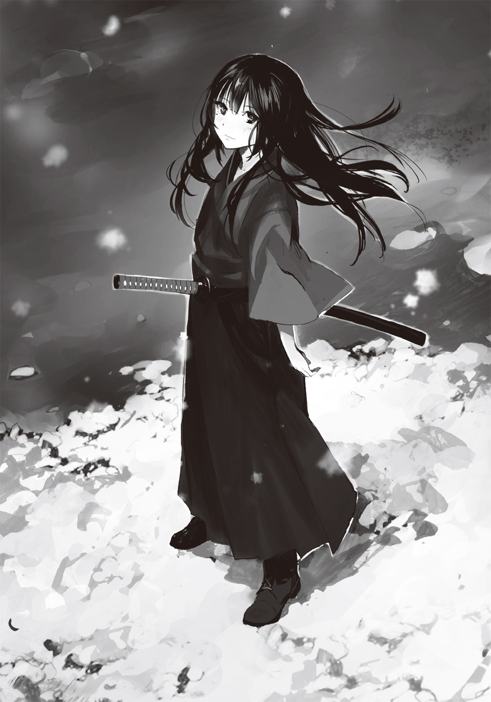
あ と が き
みなさん、どうも、先日取材ということで人生で初めてのスカイダイビングに行って、ほんのりパンツを湿らせてきたアサウラです。無論、汗です。脂汗です。高所恐怖症なので。えぇ。
スカイダイビングに限らず新しいことを始めるというのはいいものです。普段は気づくことのなかったいろんなことを発見できたりするかもしれません。
......いえね、実はスカイダイビング時に撮影した映像を後で見たところ......揺れ動く頰の肉がもうね。大変なことに......。
ダバダバダバとエラ呼吸するように揺れ動く様は己がデブであるという何よりの証拠であり、瘦せようと強く決意させるに十分な効力を持っていました。
皆様も「お前少し瘦せた方がいいんじゃないの？」っていう人がいたら、是非ともスカイダイビングを勧めてあげてください。言葉に表すことなく、ダイエットの必要性を強力に訴えることができるでしょう。
......あと、見た人全員の心に残るほどの面白映像がおまけで生まれます。
さて、そんなこんなではありますがＦＯＵの三作目もまたおかげさまで何とか無事に発売までこぎつけることができました。
......気がついてみると、このＦＯＵシリーズは何気に半年で三冊出ておりますね。昔の私からは考えられないようなハイペースです。
そんな三巻ですが、ちょいとばかし特殊な作りというか、表紙に男しかいないっていう無茶をやらかしております。世間一般におきましては、せめて女の子に見えるキャラを配置するぐらいが最低ラインだとされておりますが、やはり内容を表紙として出すにはこれしかないだろうってのと、何かから逃げるように日々マラソンを続けている担当様の「ま、いいんじゃねぇ～？」というやる気のなさ、というより、どうでもいい感バリバリな言葉により、そこそこの年齢の男達二人が表紙を飾るという、所謂ライトノベル的でない表紙になりました。無論、この英断の裏には、晩杯あきらさんのイラストなら大丈夫のはずだ、という安心と信頼のぶん投げがあったことは皆様のお察しの通りです。
まぁこれも一つの挑戦というか、これによって「......ほぅ、男もいいではないか......ほぅ」という新しい発見を皆様に与える可能性だってありますからね。
ではでは、こんな流れで何ですがそろそろ謝辞の方をば。
いつもいつもスタイリッシュで深みのあるイラストを描いてくださる晩杯あきら様、本当にありがとうございます。
そして、あれだけ幸せの絶頂にいたものの、気がつけばいつの間にやら結婚に対する疲れを口にし、「娘がかわいいのだけが救い」というようなことを言いだすようになってから久しい担当様、ある時、そんな担当様に少し待ってろと言われてダッシュエックス編集部でぽつねんとしていたら、「お？ それじゃオレがアサウラの相手をしてやるか！」と颯爽と現れ、興味深い映画の話をしてくださるも、一時間しないうちにまったく同じ話を初っぱなと同じテンションで三回ほどされて〝そうか、これが大人になるっていうことなのか〟と人生における大事なことを教えてくださった前スーパーダッシュ文庫編集長の丸宝部長様、そして校正様を始めとした集英社の皆様、デザイナー様、印刷関係の皆様、店頭に並べてくださった書店員様......まことに感謝であります！
そして最後になりましたが、この本をお買い上げの上、こうしてあとがきまでお読みいただきました皆々様......本当にありがとうございます!!
何とかかんとか本を出し続けられるのも皆様のおかげであります。
次の四巻は少しばかり間が空き......というか、普通の私のペースになるので、皆様が忘れた頃にポロッと発売されるかと思います。
できますことなばら今後ともどうぞ、末長いお付き合いをよろしくお願いいたします。
ではでは、次があることを祈りつつこの辺で。
それではまた！
アサウラ
著者紹介
アサウラ
最近超大型犬をもふもふできていない道産子。
特に毛の長い子が好みですが、短くても構いません。っていうか中型犬でも......何なら小型犬でも構いません。
犬が好きです。えぇ、はい。
illustration
晩杯あきら ばんぱい あきら
富山県出身。
愛する地球を守るため、
今日もどこかで何かしらと戦い続けている。
ダッシュエックス文庫DIGITAL
ファング・オブ・アンダードッグ ３
沈没の空
著者 アサウラ
© ASAURA 2015
２０１５年６月30日発行
この電子書籍は、ダッシュエックス文庫「ファング・オブ・アンダードッグ ３ 沈没の空」
２０１５年５月27日発行の第１刷を底本としています。
発行者 鈴木晴彦
発行所 株式会社 集英社
〒１０１－８０５０
東京都千代田区一ツ橋２丁目５番10号
０３－３２３０－６０８０（読者係）
制作所 株式会社デジタルディレクターズ
本作品の全部また一部を無断で複製、転載、改竄、インターネット上に掲載すること、および有償無償に関わらず、本データを第三者に譲渡することを禁じます。なお個人利用の目的であっても、コピーガードを解除しての複製は、法律で禁じられています。